Quần Vợt: Các Bước Tiến Tới Thành Công (Tennis: Steps to Success)
Bản dịch Việt ngữ này chỉ dùng cho mục đích học tập cá nhân, phi thương mại. Bản quyền tác phẩm gốc thuộc về tác giả và nhà xuất bản.
Mục Lục Toàn Thư: 11 Bước Tiến Tới Thành Công & 4 Phần Chuyên Sâu
Những Nấc Thang Thành Công & Cú Đánh Cuối Sân
Part I: Climbing the Steps, Tennis Fundamentals & Groundstroke Mastery
Triết Lý Đào Tạo & Môn Thể Thao Quần Vợt
Climbing the Steps & The Sport of Tennis
Leo lên những nấc thang thành công trong quần vợt: Dành cho những người mới bắt đầu và người chơi trình độ trung cấp, cũng như các giáo viên và huấn luyện viên, ấn bản mới nhất của cuốn sách Quần Vợt: Từng Bước Tiến Tới Thành Công (Tennis: Steps to Success) sẽ giúp xây dựng một nền tảng kỹ thuật vững chắc hoặc phát triển hơn nữa những gì tay vợt đã đạt được trong môn thể thao này. Cuốn sách cung cấp đầy đủ các cú đánh nền tảng, chiến thuật thi đấu, bài tập tự luyện và phương pháp tự đánh giá năng lực cho từng học viên.
fl Climbing the Steps to Tennis Success For beginning and intermediate players, as well as teachers and coaches, this newest edition of Tennis: Steps to Success can help build a foundation or add to what the player has already accomplished in the sport. The Steps to Success are arranged in order— one stroke at a time. Beginners can start with the forehand and backhand and learn to serve and volley before tackling specialty shots such as the half volley, lob, smash, and drop shot.
Thuật ngữ quần vợt 170 thuật ngữ. Các ấn bản trước của cuốn sách đã được sử dụng ở hơn 100 trường cao đẳng và đại học, cũng như trong vô số cuốn sách Các bước đi đến thành công được sắp xếp theo thứ tự - các trường trung học. Khoảng 80.000 người bị cú đánh cùng một lúc. Người mới bắt đầu có thể bắt đầu với những người đã mua các phiên bản trước đó bao gồm thuận tay và trái tay và học cách Giao bóng / Cú giao bóng các chuyên gia giảng dạy, giám đốc chương trình và cú vô-lê (volley) trước khi thực hiện các cú đánh đặc biệt, chẳng hạn như các bậc cha mẹ làm việc với con cái của họ.
The explanations and accompanying illustrations not only provide clear instructions for executing each stroke, but they also provide options. Players won’t be locked, for instance, into a specific grip, stance, or swing. Experiment to find a style that fits your playing level, your body, and your attitude. The 10 percent of players who are left-handed get equal instructional treatment. Intermediate players already know how to hit the ball. Steps to Success offers more thorough explanations of the strokes than do basic instruction books.
như một nửa cú vô-lê, Cú lốp bóng (lob), cú đập bóng smash và thả bóng. Những lời giải thích và các huấn luyện viên minh họa quần vợt kèm theo, ngay cả những người đã từng là những người chơi thành công, không tự động có được sự hiểu biết đầy đủ về các cú đánh và chiến thuật, không chỉ cung cấp những hướng dẫn rõ ràng để thực hiện từng cú đánh mà còn mang lại sự thú vị. Huấn luyện viên thêm các thông tin vào các lựa chọn của họ. Chẳng hạn, người chơi sẽ không bị khóa vào một thế cầm, tư thế hoặc xoay người cụ thể. Thử nghiệm cơ sở dữ liệu cá nhân từng bước và từng năm. Các bước dẫn tới thành công có thể đẩy nhanh quá trình học tập để tìm ra phong cách chơi phù hợp với trình độ chơi, cơ thể và thái độ của bạn. 10 phần trăm người chơi thuận tay trái được hưởng quá trình hướng dẫn bình đẳng. Phiên bản này có chiến lược "bức tranh toàn cảnh" trong mỗi bước trong số 8 bước đầu tiên và hơn 200 gợi ý chiến thuật ở các bước từ 9 đến 11.
Refine and polish skills with game-specific drills as you move toward playing at an advanced level. Get more insight into when and why to hit certain shots. Put the collection of strokes into a game plan that includes overall match strategy and point-by-point tactics. For teachers, Steps to Success provides a turnkey instructional package. Teachers who already have an established teaching system can select from the information, drills, activities, and methods of grading that fit their programs. The background section includes a brief history of tennis, updated equipment information, an explanation of rules, warm-up and cool-down guidelines, information on tennis-related injuries and treatment, and Web-based tennis resources. vii Then there are strokes, strategy, self-paced drills, and methods of evaluating each student, plus a 170-term tennis glossary.
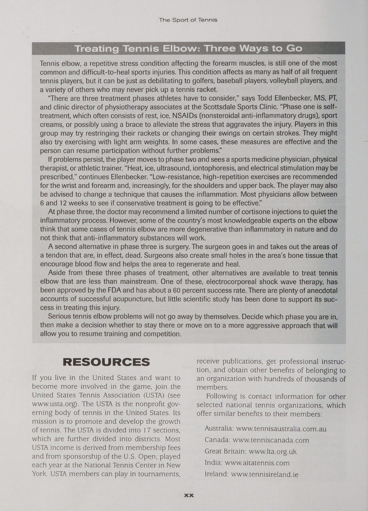
Đối với ấn bản này, mỗi bước đều được viết lại. Người chơi ở trình độ trung cấp đã biết cách đánh bóng. Các bước dẫn đến thành công cung cấp nhiều thông tin hữu ích hơn để bao gồm những ấn bản hay nhất trong quá khứ đồng thời bổ sung thêm thông tin mới; những lời giải thích chi tiết về các nét vẽ hơn là những cuốn sách hướng dẫn cơ bản. Tinh chỉnh và trau dồi các kỹ năng bằng các bài tập dành riêng cho trò chơi khi bạn chuyển sang chơi cách tạo cú đánh; và hướng dẫn dành cho người mới bắt đầu và người chơi trung cấp cũng như một số lời khuyên dành cho người chơi nâng cao. Hướng dẫn cho mỗi cú đánh cũng bao gồm các gợi ý về chiến lược tổng thể và ba chương cuối ở cấp độ nâng cao. Nhận thông tin chi tiết hơn về thời điểm và lý do để thực hiện một số cú đánh nhất định. Đưa tập hợp các cú đánh vào một kế hoạch trò chơi bao gồm tổng thể các chiến thuật cụ thể cho hầu hết mọi tình huống thi đấu. Các bài tập tốt hơn sẽ thay thế một số bài tập từ phiên bản trước và các bài tập mới đã được thêm vào.
The previous editions of the book have been used in more than 100 colleges and universities, as well as in countless high schools. The approximately 80,000 people who have bought previous editions include teaching professionals, program directors, and parents working with their own children. Tennis coaches, even those who were successful players, don’t automatically acquire a complete understanding of strokes and strategy. Coaches add pieces of information to their personal databases step by step and year by year. Steps to Success can accelerate that learning process. This edition has “big-picture” strategy in each of the first eight steps and more than 200 tactical suggestions in steps 9 through 11. For this edition, each step has been rewritten to include the best of past editions while adding new information; detailed explanations of stroke production; and instruction for beginning and intermediate players as well as some tips for advanced players.
chiến lược trận đấu và chiến thuật từng điểm. Đối với giáo viên, Steps to Success cung cấp gói giảng dạy chìa khóa trao tay. Những giáo viên đã có hệ thống giảng dạy được thiết lập có thể lựa chọn thông tin, bài tập, hoạt động và phương pháp chấm điểm phù hợp với chương trình của họ. Phần nền tảng bao gồm lịch sử ngắn gọn về quần vợt, thông tin cập nhật về thiết bị, giải thích về các quy tắc, hướng dẫn khởi động và hạ nhiệt, thông tin về các chấn thương liên quan đến quần vợt. Điều gì có thể mới về hướng dẫn chơi quần vợt?
The instruction for each stroke also includes suggestions about overall strategy, and the last three chapters are devoted to specific tactics for almost every competitive situation. Better drills replace some of those from previous editions, and new drills have been added. What could be new about tennis instruction? Plenty. As you will see in the section on equipment, racket technology continues to evolve.
Rất nhiều. Như bạn sẽ thấy trong phần về thiết bị, công nghệ vợt tiếp tục phát triển. Vợt nhẹ hơn, to hơn, cứng hơn và mạnh hơn cho phép người chơi, bất kể trình độ kỹ năng, tạo ra Tốc độ đầu vợt nhanh hơn và đánh bóng mạnh hơn. Các tay vợt trẻ ngày càng trưởng thành và mạnh mẽ hơn. Kết quả là, việc điều trị và các nguồn tài nguyên quần vợt dựa trên Web.
Lighter, bigger, stiffer, and stronger rackets allow players, regardless of skill level, to generate more racket speed and hit the ball harder. Young players are getting bigger and stronger. As a result, players can use a greater variety of acceptable Climbing the Steps to Tennis Success stances, grips, and swings.
người chơi có thể sử dụng nhiều tư thế, cách cầm và xoay có thể chấp nhận được hơn. Quy trình phương pháp giảng dạy. Nếu người chơi đã quen với những sai lầm phổ biến này từ trước, họ đã thay đổi để theo kịp trò chơi và những phương pháp đó được phản ánh trong từng bước. có thể tránh được chúng hoàn toàn. Hệ thống theo dõi tiến độ đã được © Success summary. Gần cuối mỗi tinh chế. Có một cách mới để ghi điểm thành công cho mỗi bài tập và để xác định xếp hạng tổng thể cho từng bước là Tóm tắt thành công, một lời nhắc nhở ngắn gọn về hướng dẫn quan trọng nhất trong 11 bước. Bạn sẽ biết khi nào bạn đang tập luyện và học các điểm cụ thể để sẵn sàng tiếp tục hoặc những gì bạn cần để thực hiện khi đánh gậy. Mỗi bước Kết thúc cú đánh bằng cách hỏi bạn trước khi bạn làm.
Teaching methods have changed to keep up with the game, and those methods are reflected in every step. The system of monitoring progress has been © refined. There is a new way to score success for every drill and to determine an overall rating for each of the 11 steps. You’ll Know when you are ready to move on or what you need to work on before you do. Steps to Success provides a systematic approach to playing and teaching tennis. Follow the same sequence as you work your way through each step: 1. Stroke instruction. In steps through 8, read the explanations for executing the respective strokes and look at the accompanying illustrations to get a mental picture of how to hit the ball.
để đánh giá thành công của bạn. Bằng cách khoanh tròn điểm số Các bước dẫn đến thành công cung cấp một cách tiếp cận có hệ thống để chơi và dạy quần vợt. bạn đã đạt được trong mỗi bài tập và cộng điểm của mình, bạn sẽ biết liệu mình có cần thêm hay không. Hãy thực hiện theo trình tự tương tự khi bạn thực hành hoặc liệu bạn đã sẵn sàng chuyển qua từng bước hay chưa: bước tiếp theo.
These illustrated explanations include instruction for moving to the ball; holding the racket; and using the proper stance, preparation, swing, and follow-through. 2. Self-paced drills. Perform the drills within each step in the order in which they appear.
Chiến thuật. Các bước từ 9 đến 11 trả lời một số câu 1. Hướng dẫn cách đánh. Trong các bước thông qua các vấn đề chiến thuật sau đây. Làm thế nào để 8, đọc phần giải thích về việc thực hiện chiến thuật đánh đơn khác với những chiến thuật được sử dụng trong đánh đôi? Bạn chuẩn bị cho trận đấu như thế nào? Làm thế nào để bạn chơi tốt trước một số loại đối thủ nhất định? Cách thực hiện các cú đánh tương ứng và xem hình minh họa kèm theo để Hình dung tinh thần (visualization) về cách đánh bóng. Những giải thích minh họa này bao gồm hướng dẫn bạn điều chỉnh theo các điều kiện chơi khác nhau?
Each drill can be modified to make it more difficult (see To Increase Difficulty) or less challenging (see To Decrease Difficulty), depending on skill evel. . Success checks. While executing each drill, focus on a few components of the stroke. Read the Success Checks for a reminder of what to focus on. Score your success. You will earn anywhere from 1 to 15 points on each drill. Repeat the drill as many times as you like, but don’t worry about getting a perfect score. If you wait for perfection, you'll miss the fun. .
để di chuyển đến bóng; cầm vợt; Ba bước này cũng bao gồm các bài tập và hoạt động mô phỏng trò chơi và trận đấu cũng như sử dụng tư thế, sự chuẩn bị, xoay người và theo dõi thích hợp. tình huống. 2. Các bài tập tự thực hiện. Thực hiện các bài tập trong mỗi bước theo thứ tự mà các bước thực hiện giúp bạn thành công. Tìm hiểu xuất hiện. Mỗi bài tập có thể được sửa đổi để làm cho trò chơi trở nên khó hơn (xem Cách tăng độ khó của trò chơi từ đầu khi mới bắt đầu, mài giũa kỹ năng của bạn khi là người chơi trung cấp, dạy Độ khó) hoặc ít thử thách hơn (xem Cách chơi trò chơi bằng cách sử dụng phương pháp tiếp cận có hệ thống hoặc Huấn luyện viên Giảm độ khó), tùy thuộc vào kỹ năng có hiểu biết toàn diện hơn về trò chơi. Ngay cả những người chơi cao cấp cũng sẽ tìm thấy các bài tập thử thách kỹ năng và mẹo chiến lược của họ.
Missteps. Players at all levels make some common errors on each stroke. Pointing out these missteps and offering ways to correct them may speed the learning process. If players are familiar with these common missteps ahead of time, they may be able to avoid them altogether. Success summary. Near the end of each step is a Success Summary, a brief reminder of the most important teaching and learning points for that particular stroke. Each step concludes by asking you to rate your success. By circling the score you attained on each drill and adding up your points, you’ll Know if you need more practice or if you’re ready to advance to the next step.
Kiểm tra thành công. Trong khi thực hiện mỗi cuộc tập trận, họ có thể có Điểm lợi thế (advantage) hơn đối thủ. tập trung vào một vài thành phần của nét vẽ. Phần thưởng cho việc hoàn thành các bước để thành côngĐọc Kiểm tra thành công để nhận được lời nhắc là bất cứ điều gì bạn muốn. Đối với một số người, những gì cần tập trung vào. chơi quần vợt chỉ đơn giản là niềm vui. Đối với những người khác, quần vợt Ghi điểm thành công của bạn. Bạn sẽ kiếm được tiền ở bất cứ nơi nào có hoạt động thể chất lành mạnh suốt đời.
Tactics. Steps 9 through 11 answer some of the following tactical issues. How do singles tactics differ from those used in doubles? How do you prepare for the match? How do you play well against certain types of opponents? How do you adjust to various playing conditions? These three steps also contain drills and activities that simulate game and match situations. Make Steps to Success work for you.
từ 1 đến 15 điểm trên mỗi bài tập. Lặp lại Và đối với những người thích sự cạnh tranh, một thế giới hãy tập luyện bao nhiêu lần tùy thích, nhưng đừng lo lắng về việc đạt điểm tuyệt đối. nhiều người chơi đang chờ đợi để thách thức bạn. Chúc may mắn trên hành trình từng bước phát triển này. Nếu bạn chờ đợi sự hoàn hảo, bạn sẽ bỏ lỡ các kỹ năng chơi quần vợt, xây dựng Sự Sự tự tin và trải nghiệm sự tiến bộ. Hãy chắc chắn để thưởng thức của bạn.
Learn the game from scratch as a beginner, sharpen your skills as an intermediate player, teach the game using a systematic approach, or coach with a more comprehensive understanding of the game. Even advanced players will find drills that challenge their skills and strategy tips that might give them an edge over opponents. The reward for completing the steps to success is whatever you want it to be.
Bước đi sai lầm. Người chơi ở mọi cấp độ đều tự mình thực hiện trong suốt chặng đường. Bất cứ ai và ở đâu bạn cũng thường mắc lỗi trong mỗi cú đánh. Xin chỉ ra rằng, Quần vợt: Các bước dẫn đến thành công sẵn sàng giúp bạn loại bỏ những sai lầm này và đưa ra cách khắc phục chúng có thể đẩy nhanh quá trình học tập đến gần hơn một vài bước để trở thành người chơi giỏi nhất mà bạn có thể trở thành. fl Môn thể thao quần vợt Người Anh Walter Wingfield có một ý tưởng mà ông nghĩ sẽ giúp mình trở nên giàu có. Ông kết hợp môn thể thao cánh cho nữ vào năm 1889, quần vợt trở thành môn thể thao được kính trọng đối với cả hai giới. Các ngôi sao nữ chơi cầu lông và quần vợt trên sân để tạo ra quần vợt Sân cỏ, một trò chơi mà lần đầu tiên anh gọi là sphairistrike, chẳng hạn như Suzanne Lenglen, Elizabeth Ryan, Helen Wills Moody, Alice Marble và Helen Jacobs được chơi trên sân có hình đồng hồ cát.
For some, playing tennis is just plain fun. For others, tennis provides a lifetime of healthy physical activity. And for those who like the competition, a world of players is out there waiting to challenge you. Good luck on this step-by-step journey to developing tennis skills, building confidence, and experiencing progress. Be sure to enjoy yourself along the way. Whoever and wherever you are, Tennis: Steps to Success is ready to take you several steps closer to becoming the best player you can be. fl The Sport of Tennis Englishman Walter Wingfield had an idea he thought would make him rich. He combined the sports of badminton and court tennis to create lawn tennis, a game he first called sphairistrike, to be played on a court the shape of an hourglass. In 1874, Mr.
thu hút người hâm mộ - nhưng những người đàn ông như Bill Tilden, Jean Rene Lacoste và Don Budge đã thống trị Năm 1874, ông Wingfield đã nhận được bằng sáng chế cho phát minh của mình, nghĩ ra một bộ quần áo tennis, đồng thời đưa bộ đồ thi đấu này và gây chú ý trong nửa đầu năm 20 trên thị trường. thế kỷ. Ngày nay, khoảng một nửa số người chơi ở People đã nhanh chóng tham gia quần vợt Sân cỏ, mặc dù họ không đặt tên theo tiếng Hy Lạp hoặc Hoa Kỳ là phụ nữ, và nhiều người hâm mộ quần vợt cho rằng trò chơi dành cho nữ mang tính chất giải trí hơn trên sân; và cũng nhanh chóng, mọi người trả giao bóng (receiver) ra rằng họ không cần bộ đồ của Wingfield để chơi hơn trò chơi toàn năng mọi thời đại được chơi bởi những tay vợt nam giỏi nhất thế giới.
Wingfield received a patent for his invention, devised a tennis kit, and put the kit on the market. People took to lawn tennis quickly, although they did not subscribe to its Greek name or the shape of the court; and just as quickly, people realized they didn’t need Wingfield’s kit to play the game. He let the patent expire three years later, the same year a tennis tournament was held at the All England Club, the first Wimbledon. Although Wingfield never became rich, he is given credit for inventing a sport in which others have made millions and become sport superstars. For a long time, tennis was a game played mostly by wealthy men who belonged to exclusive clubs.
trò chơi. Ông để bằng sáng chế hết hạn ba năm Câu lạc bộ quần vợt vẫn còn mạnh, nhưng mọi người sau này, cùng năm đó một giải đấu quần vợt được tổ chức tại All England Club, giải Wimbledon đầu tiên. Mặc dù Wingfield chưa bao giờ trở nên giàu có nhưng các tầng lớp kinh tế xã hội của anh hiện đều chơi môn thể thao này. Tại Hoa Kỳ, hầu hết người chơi đều tham gia miễn phí tại các sân đấu công cộng. Hầu hết trong số 22 triệu người được ghi công vì đã phát minh ra một môn thể thao trong đó những người khác đã kiếm được hàng triệu đô la và trở thành môn thể thao sư tử. Người Mỹ chơi quần vợt ít nhất mỗi năm một lần ở độ tuổi từ 8 đến 80 tuổi. Hầu hết là những người nghiệp dư chơi để giải trí với bạn bè, trong các giải đấu, trong các đội và trong các giải đấu trên khắp đất nước.
When the United States Lawn Tennis Association (now the United States Tennis Association, or USTA) extended its so-called protective wing to women in 1889, tennis became a respectable sport for both sexes. Female stars such as Suzanne Lenglen, Elizabeth Ryan, Helen Wills Moody, Alice Marble, and Helen Jacobs attracted fans—but men such as Bill Tilden, Jean Rene Lacoste, and Don Budge dominated play and headlines for the first half of the 20th century. Today, about half of the players in the United States are women, and many tennis fans think the women’s game is more entertaining than the all-power all-the-time game played by the best male players in the world.
siêu sao. Trong một thời gian dài, quần vợt là môn thể thao được chơi chủ yếu bởi những người đàn ông giàu có thuộc các câu lạc bộ độc quyền. Khi Hiệp hội Quần vợt Sân cỏ Hoa Kỳ (nay là Hiệp hội Quần vợt Hoa Kỳ, hay USTA) mở rộng cái gọi là protecOnce, chỉ những người nghiệp dư mới chơi quần vợt. Khi quần vợt chuyên nghiệp cuối cùng cũng đến, một số ít tay vợt có thể kiếm sống, chẳng hạn như Richard, tay vợt thống trị nhất từ trước đến nay?
Club tennis is still strong, but people of all socioeconomic classes now play the sport. In the United States, most players participate free of charge on public courts. Most of the 22 million Americans who play tennis at least once a year range in age from 8 to 80 years old.Most are amateurs who play for fun with friends, in tournaments, on teams, and in leagues throughout the country. Once only amateurs played tennis.
Ai là tay vợt thống trị nhất trong lịch sử quần vợt? Sampras? Williams? Laver? Navratilova? Borg? Nhà vua? Hãy xem xét trường hợp của Margaret Smith (Sân đấu). Tay vợt người Úc, sinh năm 1942, đã giành được tổng cộng 62 chức vô địch Grand Slam - nhiều hơn bất kỳ ai trong lịch sử - ở các nội dung đơn, đôi và đôi nam nữ. Cô chỉ mới 18 tuổi khi giành được giải Grand Slam đầu tiên, Australian Open. Cô đã giành được Grand Slam ở nội dung đôi nam nữ vào năm 1963 và một lần nữa ở nội dung đánh đơn vào năm 1970, với tổng số tiền cô thu về là 14.800 đô la.
When professional tennis finally arrived, the few players who could make a living, such as Richard The Most Dominant Player Ever? Who was the most dominant player in the history of tennis? Sampras? Williams? Laver? Navratilova? Borg? King? Consider the case for Margaret Smith (Court). The Australian, born in 1942, won a total of 62 grand slam championships—more than anyone in history—in singles, doubles, and mixed doubles. She was only 18 when she won her first grand slam, the Australian Open.
Trong năm đó, cô đã thắng 21 trong số 27 giải đấu. Trong ba lần khác nhau, cô đã giành được danh hiệu đơn, đôi và đôi nam nữ tại một sự kiện Grand Slam. Cô đã đại diện cho Australia sáu lần tại Cúp Liên đoàn và chưa bao giờ thua trận nào. Court nghỉ hưu năm 1966, kết hôn và lập gia đình. Cô trở lại quần vợt vào năm 1970 và giành được danh hiệu cuối cùng vào năm 1975. Năm 1991, cô được phong chức mục sư Cơ đốc giáo và thành lập một nhà thờ ở Perth, Australia.
She took the grand slam in mixed doubles in 1963 and again in singles in 1970, for which she collected a total of $14,800. During that year, she won 21 of 27 tournaments. On three different occasions, she won singles, doubles, and mixed doubles titles at a grand slam event. She represented Australia six times in the Federation Cup and never lost a match. Court retired in 1966, got married, and started a family.
Gonzales, Pancho Segura và Jack Kramer, đã tham gia vào các trận đấu đập chuồng nhỏ và boron, sợi thủy tinh và Kevlar. Kích thước của đầu vợt bắt đầu từ 60 đến 70 inch vuông, di chuyển các giải đấu đến bất cứ nơi nào mà nhà quảng cáo có thể đặt chỗ cho các mẫu có kích thước khổng lồ và giảm xuống các khung cỡ trung bình và quá khổ từ 100 đến 115 inch vuông. Chiều rộng của vợt tennis một đấu trường. Quần vợt mở rộng, trong đó các chuyên gia ~ được phép thi đấu với những người nghiệp dư, bắt đầu từ những năm 1960 với sự giúp đỡ của những người có tầm nhìn xa và chuyển từ hẹp sang rộng và ngược lại.
She returned to tennis in 1970 and won her last title in 1975. In 1991 she was ordained a Christian minister and founded a church in Perth, Australia. The Sport of Tennis Gonzales, Pancho Segura, and Jack Kramer, participated in small barnstorming matches and tournaments wherever a promoter could book an arena. Open tennis, in which professionals ~ were allowed to compete with amateurs, started in the 1960s with the help of visionaries and promoters such as Kramer, Lamar Hunt, and George MacCall.
các nhà quảng bá như Kramer, Lamar Hunt, và Lighter, vợt cứng hơn và lớn hơn đã giúp người mới bắt đầu học chơi dễ dàng hơn, ví dụ như George MacCall. Tuy nhiên, quần vợt mở rộng không phải là một khái niệm phổ biến. Một tay vợt Austradiate phải cải thiện các cú đánh của họ và tờ báo cho lian yêu cầu MacCall, người chuyên bắn với tốc độ như đạn. Serves đã đến Úc để ký hợp đồng với vở kịch hay nhất đất nước được ghi nhận ở phạm vi 150 dặm một giờ.
Open tennis, however, was not a universally popular concept. An Australian newspaper demanded that MacCall, who was in Australia to sign the country’s best players to professional contracts, leave the country. But open tennis was here to stay, and the game would never be the same again. The money paid to players, even to so-called amateurs, went from under-the-table deals to widely publicized contracts.
ers để ký hợp đồng chuyên nghiệp, rời khỏi đất nước. Cuối cùng, quyền truy cập vào hướng dẫn quần vợt và Nhưng quần vợt mở vẫn ở đây và trò chơi sẽ không bao giờ giống như vậy nữa. Khoa học đào tạo quần vợt đã thay đổi tiền bạc. Trong suốt hai phần ba đầu thế kỷ 20, tiền lãi được trả cho người chơi, thậm chí cả những người được gọi là nghiệp dư, lãi suất không đủ cao để hỗ trợ nhiều người, từ những giao dịch ngầm cho đến các chuyên gia giảng dạy được công bố rộng rãi. Tuy nhiên, ngày nay quần vợt đã có hợp đồng. Giờ đây, các tay vợt đẳng cấp thế giới thường bỏ qua các chuyên gia, giáo viên, huấn luyện viên, trại, khóa học và trường đại học để chuyển sang thi đấu chuyên nghiệp ở tuổi thiếu niên. Ở phòng khám là chuyện bình thường. Tổ chức và thực tế, số lượng sinh viên tốt nghiệp đại học được doanh nghiệp đào tạo và cấp chứng chỉ để trở thành người đoạt chức vô địch đơn lớn trong 50 chuyên gia giảng dạy vừa qua. Sự sẵn có của thông tin liên quan đến sự chuẩn bị, thành tích, dinh dưỡng, hydrat hóa, tâm lý, an toàn, số năm chấn thương có thể được tính trên một mặt.
Now world-class players often skip college to turn professional during their teens. In fact, the number of college graduates who have won major singles championships in the past 50 years can be counted on one hand. Television changed tennis in ways both good and bad. In 1972, more than 50 million viewers in the United States watched Australian stars Ken Rosewall and Rod Laver play a classic. Rosewall won in five sets. A year later, Billie Jean King beat aging hustler Bobby Riggs in the “Battle of the Sexes” at the Astrodome in Houston, Texas. The spectacle attracted a crowd of 30,000 people plus a national television audience. American stars Jimmy Connors and John McEnroe played brilliantly in front of millions who watched on television, but it can be argued that their boorish behavior set an example that negatively influenced an entire generation of young players.
Truyền hình đã thay đổi quần vợt theo cả mặt tốt và mặt xấu. Năm 1972, hơn 50 triệu khán giả phòng ngừa và điều trị cũng như khoa học thể thao ở Hoa Kỳ đã theo dõi các ngôi sao người Úc Ken, phần lớn đã nâng cao chất lượng của Rosewall và Rod Laver chơi một trận kinh điển. Rosewall thắng trong năm set. Một năm sau, Billie Jean King chơi. Thật không may, có rất ít sự kiểm soát đối với chất lượng thông tin, đặc biệt là đối với người hối hả già nua Bobby Riggs trong "Trận chiến trên Internet, khiến người tiêu dùng quần vợt dễ bị ảnh hưởng bởi mốt nhất thời, hư cấu và lừa đảo.
The number of players, products, and programs increased almost simultaneously with the growing number of tennis events shown on television. Names such as Ashe, Newcombe, Roche, Smith, King, Navratilova, Becker, Evert, Borg, Graff, Sampras, and more recently Agassi and the Williams sisters boosted ratings. The major tournaments— Wimbledon, the Australian Open, the French Open, and the U.S. Open—attract viewers who are not mainstream tennis fans. Technology has also changed the sport of tennis.
the Sexes" tại Astrodome ở Houston, Texas. Cảnh tượng này đã thu hút một đám đông 30.000 người cùng với khán giả truyền hình cả nước. Các ngôi sao THIẾT BỊ Mỹ Jimmy Connors và John McEnroe đã chơi xuất sắc trước hàng triệu người theo dõi trên truyền hình, nhưng có thể lập luận rằng hành vi thô lỗ của họ đã tạo ra một ví dụ có ảnh hưởng tiêu cực đến Tất cả những người chơi quần vợt, bất kể trình độ kỹ năng, đều yêu cầu những công cụ giống nhau để chơi trò chơi. Mặc dù chất lượng và giá thành của chúng có thể khác nhau, nhưng vợt, dây, bóng đã thu hút cả một thế hệ tay vợt trẻ.
Once, courts were made only of grass, clay, or concrete. Now they are made of colorful synthetic products with made-to-order surfaces. Tennis rackets have gone from wood to graphite, boron, fiberglass, and Kevlar. The size of racket heads started at 60 to 70 square inches, moved up to jumbo-size models, and settled down to midsized and oversized frames of 100 to 115 square inches. The width of tennis rackets changed from narrow to wide and back again.
giày dép và trang phục quần vợt là những thứ cần thiết cho số lượng người chơi, sản phẩm và cuộc sống quần vợt. Dưới đây là một số gợi ý mua hàng, số gram tăng gần như đồng thời với quá trình sử dụng và bảo quản các sản phẩm này. ngày càng có nhiều sự kiện quần vợt được chiếu trên truyền hình. Những cái tên như Ashe, Newcombe, Roche, Rackets and Strings Smith, King, Navratilova, Becker, Evert, Borg, Graff, Sampras, và gần đây là Agassi và Khi bạn mua vợt tennis, hãy dành thời gian để xem chị em nhà Williams đã nâng cao xếp hạng. Thiếu tá đọc tài liệu trên hoặc gắn vào vợt.
Lighter, stiffer, and bigger rackets have made it easier for beginners to learn to play, for intermediate players to improve their strokes, and for pros to hit shots at bulletlike speeds. Serves have been recorded in the 150-mile-per-hour range. Finally, the access to tennis instruction and the science of tennis training have changed. During the first two-thirds of the 20th century, interest was not high enough to support many teaching professionals. Today, however, tennis pros, teachers, coaches, camps, courses, and clinics are commonplace.
giải đấu — Wimbledon, Giải Úc mở rộng, Nhãn, nhãn dán, thẻ và thẻ treo ủng hộ Giải Pháp mở rộng và Giải Mỹ mở rộng — thu hút thông tin video quan trọng về những người xem vợt không phải là người hâm mộ quần vợt chính thống. kích thước, chiều dài, độ căng của dây, tính linh hoạt và Công nghệ khác cũng đã thay đổi môn thể thao này.
Organizations and businesses train and certify people to become teaching professionals. The availability of information regarding preparation, performance, nutrition, hydration, psychology, safety, injury prevention and treatment, and sport science has, for the most part, elevated the quality of play.
quần vợt. Trước đây, các sân chỉ được làm bằng cỏ, Wilson, Prince và Head bán 75% đất sét hoặc bê tông. Bây giờ chúng được làm bằng các sản phẩm tổng hợp đầy màu sắc với bề mặt được làm theo đơn đặt hàng. tất cả các vợt tennis. Khoảng 3/4 số vợt tennis được căng dây trước, được làm từ gỗ sang than chì, nhôm hoặc than chì cấp thấp và có giá từ 20 đến 90 USD. Đối với những người mới bắt đầu, vợt Tip trong khoảng $50 đến $90 là phù hợp để bắt đầu.
Unfortunately, little control is exerted on the quality of information, especially on the Internet, making tennis consumers vulnerable to fads, fiction, and frauds. EQUIPMENT All tennis players, regardless of skill level, require the same tools to play the game. Although their quality and cost may differ, rackets, strings, balls footwear, and tennis apparel are necessities of tennis life.
25% vợt còn lại có giá từ 90 đến 400 đô la và được làm từ các chất như sợi carbon có mô đun cao, Kevlar, than chì và thậm chí một lượng rất nhỏ titan, có lẽ hấp dẫn hơn đối với sự hấp dẫn của Head Face +4 tiếp thị hơn là hiệu suất của vợt. Những người chơi ở trình độ trung cấp sẽ muốn nâng cấp lên một cây vợt thuộc loại này, thường trong khoảng từ 100 đến 200 USD.
Here are some suggestions for buying, using, and taking care of these products. Rackets and Strings When you shop for a tennis racket, take time to read the material on or attached to the racket.
Khi ấn bản đầu tiên của Tennis: Steps to Sucthroat/shaft cess ra mắt vào năm 1989, vợt nặng từ 11 đến 14 ounce. Vào thời điểm ấn bản thứ hai được xuất bản vào năm 1995, trọng lượng vợt đã giảm xuống còn 9 ounce. Ngày nay, vợt có trọng lượng ở phần Handle Grip ít nhất là 8 ounce và nhiều nhất là khoảng 12,5 ounce. Người mới bắt đầu nên sử dụng vợt có trọng lượng nhẹ và phần mông tương đối cứng (để cung cấp lực). Vợt nhẹ hơn nên có trọng lượng phân bổ nhiều hơn về phía đầu vợt. Nếu không, người chơi có thể thấy nó rất khác. Hình 1 Các bộ phận của vợt tennis.
The labels, stickers, cards, and hangtags provide important information about racket-head size, length, string tension, flexibility, and other properties. Wilson, Prince, and Head sell 75 percent of all tennis rackets. Approximately three-fourths of all tennis rackets are prestrung, are made of aluminum or low-end graphite, and cost The Sport of Tennis between $20 and $90. For beginning players, rackets in the $50 to $90 range are just fine to get started.
hư hỏng để tạo ra năng lượng. Không có gì sai với những cây vợt nặng hơn, nhưng chúng đòi hỏi nỗ lực và hầu hết những người chơi giải trí đều thích những cây vợt ở gần đầu cuối của phạm vi đó. Trong một sự kiện Grand Slam gần đây, 13 trong số 20 nam và nữ đứng đầu đã chơi bằng vợt có kích thước đầu vợt kém hơn một chút về kỹ năng của người chơi ở trình độ trung cấp hoặc cao cấp để đạt hiệu quả.
The remaining 25 percent of rackets cost between $90 and $400 and are made of substances such as high-modulus carbon fiber, Kevlar, graphite, and even very small amounts of titanium, probably more for the marketing appeal than for racket performance. Intermediate players will want to upgrade to a racket in this category, usually in the $100 to $200 range.
Nói chung, vợt cứng hơn cung cấp nhiều lực hơn, trong khi vợt mềm được cho là mang lại khả năng kiểm soát tốt hơn. Bất kể tính linh hoạt của hơn 100 inch vuông. Kích thước tay cầm thực sự không thay đổi nhiều trong vài thập kỷ qua. Mỗi mẫu có năm hoặc sáu kích cỡ, từ 4 1/8 đến 4 5/8 một cây vợt hoặc nếu không có kích thước đó, việc kiểm soát bóng là một chức năng thuộc về kỹ năng của người chơi hơn là loại vợt. Không có thước đo nào về độ linh hoạt của vợt là phổ quát. Mỗi công ty có phương pháp mô tả tính linh hoạt riêng. Đọc các thẻ hoặc thẻ treo được gắn vào vợt mới hoặc nói chuyện với inch. Các kích thước phổ biến nhất là 4 3/8 và 4 1/2 inch. Nhìn vào thông tin trên vợt gần đầu tay cầm để biết kích thước tay cầm. Dưới đây là một số cách, không có cách nào rất khoa học, để xác định kích thước cán vợt chính xác cho bàn tay của bạn: nhân viên bán hàng biết đôi điều về cấu trúc vợt. Biết các bộ phận khác nhau của vợt được gọi là gì sẽ giúp ích. Hình 1 minh họa mọi thứ từ phần mông đến phần ngọn.
When the first edition of Tennis: Steps to Success came Out in 1989, rackets weighed between 11 and 14 ounces. By the time the second edition was published in 1995, racket weight had dropped to 9 ounces. Today rackets weigh as little as 8 ounces and as much as about 12.5 ounces. Beginners are better off with rackets that are on the lightweight side and relatively stiff (to provide power). Lighter rackets should have the weight distributed more toward the racket head. If not, players may find it very difficult to generate power. Nothing is wrong with heavier rackets, but they require the effort and skill of an intermediate or advanced player to be effective. Generally, stiffer rackets provide more power, whereas flexible rackets are thought to offer greater control. Regardless of the flexibility of a racket or the lack thereof, controlling the ball is more a function of the player’s skill than the type of racket.
e Bắt tay bằng vợt hoặc cầm vợt bằng cách cầm vợt thuận tay kiểu đông. Khi các ngón tay của bạn cuộn tròn quanh cán vợt, phần cuối của ngón cái Khi bạn tiến dần đến thành công trong quần vợt, bạn sẽ phát triển kiểu xoay người. Những người chơi có cú vung vợt ngắn dường như sẽ chơi tốt hơn nên chạm vào khớp đầu tiên của ngón giữa (hình 2).
No measure of racket flexibility is universal. Each company has its own method of describing flexibility. Read the cards or hangtags that are attached to new rackets, or talk to a salesperson who knows something about racket construction. Knowing what the different parts of a racket are called will help.
vợt cứng hơn. Người chơi có cú đánh dài thích vợt rất linh hoạt. Những người chơi khác có một khoảng cách ¢ Đo khoảng cách từ đầu ngón tay đeo nhẫn của bạn đến nếp gấp dài ở giữa lòng bàn tay của bạn (đường thứ hai tính từ gốc ngón tay của bạn). Đặt thước kẻ giữa ngón đeo nhẫn và ngón giữa của bạn. Khoảng cách đo được phải rất gần với chiều dài trung bình của cú vung và họ nên tìm kiếm một cây vợt có độ linh hoạt trung bình.
Figure 1 illustrates everything from the butt to the tip. As you progress along the steps to tennis success, you will develop a swing style. Players who have short swings seem to do better with stiffer rackets. Players with long swings prefer very flexible rackets. Other players have an intermediate-length swing, and they should look for a racket with intermediate flexibility.
Mặc dù trọng lượng vợt đã giảm nhưng kích thước đầu vợt lại tăng lên, như đã đề cập trước đó. Hầu hết các vợt trước đây đều có diện tích từ 90 đến 110 vuông theo chu vi cán vợt chính xác. Bây giờ, phạm vi này giống như là 95 đến 115 đối với bàn tay của bạn (hình 3). Hình 4 Đặt ngón trỏ của bàn tay không đánh vào khoảng trống giữa lòng bàn tay và ngón đeo nhẫn.
Although racket weight has gone down, racket head size has increased, as mentioned earlier. Most rackets used to be 90 to 110 square inches. Now, the range is more like 95 to 115, xi Tip Head Face +4 Throat/shaft Handle Grip Butt Figure 1 Parts of a tennis racket. and most recreational players prefer those near the top end of that range.
ngón trỏ của bạn, tay cầm quá nhỏ. Ngược lại, nếu có khoảng trống giữa ngón tay và lòng bàn tay thì tay cầm quá lớn. Hình 2. Đầu ngón tay cái gặp khớp đầu tiên ở ngón giữa. e Chơi với vợt demo hoặc vợt cho mượn. Nếu nó bị xoắn trong tay bạn khi tiếp xúc thì có thể tay cầm quá nhỏ. Nếu bàn tay và cánh tay của bạn nhanh chóng mỏi thì có thể nó quá to.
In a recent grand slam event, 13 of the top 20 men and women played with rackets with a racket head size slightly less than 100 square inches. Grip sizes really haven’t changed much during the past few decades. Each model comes in five or six sizes, ranging from 4 1/8 to 4 5/8 inches. The most common sizes are 4 3/8 and 4 1/2 inches.
Các nhà sản xuất đã thử nghiệm nhiều độ dài vợt khác nhau (lên tới 29 inch), nhưng chiều dài trung bình ổn định ở mức 27 1/4 inch. Vợt "ngắn" có sẵn dành cho trẻ em và là một ý tưởng tuyệt vời cho những người chơi nhỏ tuổi đang học trò chơi này. Hầu hết các vợt có giá dưới 90 USD đều đã được căng dây. Vợt hiệu suất - những loại có giá cao hơn và được sử dụng bởi người chơi ở trình độ trung cấp và cao cấp - được bán không dây. Phần lớn người chơi sử dụng dây nylon hoặc dây tổng hợp khác. Một số ít sử dụng ruột (ruột bò hoặc ruột cừu) là những người chơi rất giỏi hoặc là những người rất nghiêm túc với trò chơi của mình. Dự kiến sẽ trả từ $20 đến $60 cho một công việc chuỗi. Một lần nữa, hãy nhìn vào Hình 3. Đo từ đầu ngón đeo nhẫn đến đường thứ hai trong lòng bàn tay.
Look at the information on the racket near the top of the handle for the grip size. Here are several ways, none of them very scientific, to determine the correct grip size for your hand: e Shake hands with the racket or hold it with an eastern forehand grip. As your fingers curl around the grip, the end of the thumb should touch the first joint of the middle finger (figure 2). ¢ Measure the distance from the tip of your ring finger to the long crease in the middle of your palm (the second line down from the base of your fingers). Position a ruler between your ring and middle fingers. The distance measured should be very close to the correct racket-circumference grip for your hands (figure 3).
để biết nhãn độ căng dây được đề xuất ở đâu đó xung quanh cổ vợt. Phạm vi độ căng của dây e Giữ vợt bằng tay thuận. từ 50 đến 65 pound. Nói chung, độ căng càng thấp thì khả năng tạo ra càng nhiều năng lượng. Nó sẽ cảm thấy thoải mái và dễ dàng để cơ động. Hình dạng của cán vợt phải Dây chặt hơn cho phép kiểm soát nhiều hơn, giả sử bạn là người chơi đủ giỏi để kiểm soát bóng phù hợp với đường viền của bàn tay.
The Sport of Tennis Figure 2. The end of the thumb meets the first joint on the middle finger. Figure 3. Measure from the tip of your ring finger to the second line in your palm. e Hold the racket in your dominant hand. It should feel comfortable and easy to maneuver. The shape of the grip should fit the contour of your hand. e Hold the racket in an eastern forehand grip.
e Cầm vợt theo kiểu cầm thuận tay phía đông. Bạn sẽ có thể điều chỉnh chỉ số phù hợp bất kể độ linh hoạt của vợt và độ căng của dây. Cố gắng giải quyết độ căng của dây giúp ngón tay của bạn không bị đánh vào khoảng trống giữa ngón đeo nhẫn và lòng bàn tay, sự kết hợp tốt nhất giữa sức mạnh và khả năng kiểm soát. Không giống như người chơi ở trình độ trung cấp và cao cấp (hình 4). Nếu không có đủ chỗ cho người mới bắt đầu thì đừng bẻ dây; họ chỉ chơi với vợt cho đến khi dây mất đủ độ căng của Bali để ảnh hưởng đến lực hoặc khả năng kiểm soát. Bao lâu thì nên căng lại vợt? Nhiều lần Giá của những quả bóng tennis không thay đổi trong nhiều năm khi bạn chơi trong một tuần. Ví dụ, trong 40 năm qua. Bạn có thể trả từ 3 đến 4 đô la cho một hộp đựng ba quả bóng chất lượng cao cùng một lúc nếu bạn chơi tennis hai lần một tuần, đến cửa hàng vợt tennis của mình hoặc bạn có thể đến một cửa hàng bán lẻ lớn hai lần một năm.
You should be able to fit the index finger of your nonhitting hand in the space between your ring finger and palm (figure 4). If there isn’t enough room for Figure 4 Fit the index finger of your nonhitting hand in the space between your palm and ring finger. your index finger, the grip is too small. Conversely, if there is space between your finger and palm, the grip is too big. e Play with a demo or loaner racket. If it twists in your hand on contact, the grip might be too small. If your hand and arm tire quickly, it might be too big. Manufacturers have experimented with various racket lengths (up to 29 inches), but the average length has settled in at 27 1/4 inches. “Shorty” rackets are available for children and are a great idea for younger players learning the game. Most rackets that cost less than $90 are already strung.
diser hoặc cửa hàng bán đồ thể thao và mua những thứ tương tự Khi bạn đã chọn được vợt và dây phù hợp, hãy chăm sóc chúng. Vợt thường xuyên bị lạm dụng trong quá trình học, luyện tập hoặc thi đấu. Bạn có thể làm cho chúng tồn tại lâu hơn và bền hơn bằng cách làm theo những hộp bóng này với giá 2 đô la. Đừng cân nhắc việc chơi với những quả bóng tennis rẻ tiền, chất lượng thấp, ngay cả khi bạn là người mới bắt đầu. Mua những cái tốt nhất có sẵn trong lần đầu tiên ra ngoài. Tên thương hiệu có thể lừa dối, nhưng Wilson, Penn và Dunlop gợi ý: ba công ty sản xuất bóng tennis chất lượng.
Performance rackets—those that cost more and are used by intermediate and advanced players—are sold unstrung. The majority of players use nylon or other synthetic strings. The few who use gut (cow or sheep intestine) are either very good players or ones who are very serious about their games. Expect to pay from $20 to $60 for a string job. Again, look for a suggested string tension label somewhere around the racket throat. String tension ranges from 50 to 65 pounds.
Dù là thương hiệu nào, hãy tìm thông tin trên e Tránh cất giữ vợt ở những nơi nóng, lạnh hoặc ẩm ướt. hộp nhựa đựng bóng đã được Hiệp hội Quần vợt Hoa Kỳ phê duyệt. Hãy đậy nắp vợt trên vợt khi không sử dụng. hoặc Liên đoàn quần vợt quốc tế. Hầu hết các quả bóng đều được đóng gói trong hộp nhựa trong.Tránh xoay vợt trên sân để xác định giao bóng và cạnh.
Generally, the lower the tension, the more power that can be generated. Tighter strings allow for more control, assuming you are a good enough player to control the ball regardless of racket flexibility and string tension. Try to settle on a string tension that gives you the best combination of power and control.
người Giao bóng / Cú giao bóng dưới áp lực. Nếu áp lực không được duy trì và bóng mềm khi không dùng vợt để nhặt bóng nếu khung làm xước Mặt sân. lon đã được mở ra, hãy trả lại lon cho đại lý để được hoàn lại tiền hoặc lon mới. Nếu bóng bị gãy trong khi lau sạch dây sau khi chơi hai hoặc ba hiệp đầu tiên, hãy lấy lại hộp bóng.
Unlike intermediate and advanced players, beginners don’t usually break strings; they just The Sport of Tennis play with rackets until the strings lose enough tension to affect power or control. How often should a racket be restrung? As many times a year as you play during a week.
Sân ẩm ướt hoặc có độ ẩm cao. Ba quả bóng có thể kéo dài hai hoặc ba lần chơi đối với người mới bắt đầu và một số người ở trình độ trung cấp, nhưng sau đó chúng sẽ bắt đầu mất áp lực và độ nảy. Hãy sử dụng tay cầm thay thế hoặc bọc ngoài khi tay cầm ban đầu bị rách hoặc trở nên trơn. Tránh ném vợt của bạn, làm vợt nảy ra nếu không lớp nỉ sẽ bắt đầu bị mòn. Khi điều đó xảy ra, chỉ sử dụng chúng để thực hành. Kéo dài tuổi thọ của quả bóng bằng cách giữ chúng trong hộp đựng ban đầu và bảo quản chúng ở nơi mát mẻ.
For example, if you play tennis twice a week, get your racket strung twice a year. Once you have selected the right racket and strings, take care of them. Rackets endure a lot of abuse during the course of a lesson, practice session, or match. You can make them last longer and stay stronger by following these suggestions: e Avoid storing rackets in hot, cold, or damp places. Keep racket covers on the rackets when they are not being used.
sân, hoặc đánh vào vật khác ngoài quả bóng. Kiểm tra vợt của bạn xem có bị cong vênh và nứt trước khi căng dây lại không. Yêu cầu những quả bóng nặng nếu bạn định chơi trên bề mặt cứng. Các quả bóng thông thường (vô địch) được sử dụng trên các bề mặt mềm hơn vì chúng Nếu dây bị đứt, hãy tháo tất cả các dây để giảm lực căng trên khung.
Avoid spinning the racket on the court to determine serve and side. Don’t use the racket to pick up balls if the frame scrapes the court. Wipe the strings clean after playing ona damp court or in high humidity. Use a replacement grip or overwrap when the original grip tears or becomes slick.
Khi dây vợt bị đứt quá thường xuyên Dây vợt bị đứt là một phần trong cuộc sống của người chơi quần vợt, nhưng bạn nên làm gì khi tốc độ dây vợt bị đứt vượt quá tầm kiểm soát? Tạp chí Racquet Tech, một ấn phẩm dành cho những người chơi dây chuyên nghiệp, lưu ý rằng có quá nhiều người chơi nhanh chóng chuyển sang loại dây làm từ Kevlar, loại dây bền nhưng có cảm giác rất cứng. Thay vì thực hiện một sự thay đổi mạnh mẽ như vậy, David Bone, một chuyên gia về dây đàn, khuyên bạn nên thực hiện một số bước nhỏ hơn theo thứ tự sau: 1. Sử dụng thước đo dày hơn của cùng một dây.
Avoid tossing your racket, bouncing it off the court, or hitting things with it other than the ball. Check your racket for warping and cracks before getting it restrung. If a string breaks, remove all the strings to relieve tension on the frame. Balis The price of tennis balls hasn’t changed much over the past 40 years. You can pay $3to $4 for a single can of three premium quality balls at a tennis shop, or you can go to a mass merchandiser or sporting goods store and buy the same can of balls for $2.
2. Sử dụng dây tiết kiệm ở vùng bị mòn. 3. Hãy thử dùng loại vật liệu tương tự để làm dây đàn bị đứt bền hơn. 4. Hãy thử một chất liệu hoàn toàn khác, nhưng hãy thử nghiệm với các loại dây tổng hợp khác trước khi đến Kevlar. 5. Sử dụng vợt có kiểu dây dày hơn. đừng mặc nhanh thế. Những quả bóng tennis được bán để Độ cao so với mực nước biển lớn phải được chỉ định là bóng ở độ cao lớn. Tránh làm những công việc nặng nhọc hoặc.
Do not consider playing with cheap, low-quality tennis balls, even if you are a beginner. Buy the best ones available the first time out. Brand names can be deceiving, but Wilson, Penn, and Dunlop are three companies that make quality tennis balls. Whatever the brand, look for information on the plastic container indicating the balls have been approved by the United States Tennis Association or the International Tennis Federation.
quả bóng vô địch cùng bạn trong kỳ nghỉ ở một thành phố trên cao. Thay vào đó, hãy mua bóng tennis khi Trang phục Tin tốt là bạn có thể tìm thấy những bộ trang phục tennis chất lượng cao, giá vừa phải tại các cửa hàng bán đồ thể thao, cửa hàng bách hóa và cửa hàng giảm giá cũng như tại một số cửa hàng chuyên nghiệp và đặc sản. Tin xấu là bạn có thể chi rất nhiều tiền cho những món đồ hợp thời trang mà bạn có được.
Most balls are packaged in clear, plastic containers under pressure. If the pressure has not been maintained and the balls are soft when the can is opened, return the can to the dealer for a refund or a new can. If a ball breaks during the first two or three sets, take the can of balls back.
áo sơ mi, quần short, váy, áo giữ ấm và quần áo năng động khác. Các cửa hàng Giảm giá Giày và Tất bán những đôi giày có giá cả phải chăng. Học sinh trong các lớp hoạt động ở trường trung học và đại học thường mặc quần đùi và áo sơ mi đã được nhà trường phê duyệt. Quy định về trang phục có thể được áp dụng nhưng sẽ giúp bạn vượt qua một khóa học quần vợt hoặc một loạt bài học. Nhưng nếu bạn định chơi quần vợt ba lần trở lên một tuần, bạn nên mang giày quần vợt dành riêng cho thể thao.
Three balls may last two or three outings for beginners and some intermediates, but after that they will begin to lose their pressure and bounce, or the felt will begin to wear off. When that happens, use them for practice only. Extend the life of balls by keeping them in the original container and by storing them in a cool place. Ask for heavy-duty balls if you are going to play on hard surfaces.
không chú trọng đến thời trang. Nếu bạn tham gia các buổi học riêng hoặc theo nhóm hoặc thi đấu trong các sự kiện quần vợt thì bạn phải tuân theo những nguyên tắc. Một số cơ sở vẫn yêu cầu trang phục màu trắng, nhưng hầu hết đều cho phép mặc trang phục màu trắng. Tránh xa áo ba lỗ và đồ bơi. Hãy sử dụng cảm giác thông thường, quan sát những gì người khác đang mặc. Hãy tìm những loại đế mềm, dẻo nếu bạn định thi đấu và luyện tập trên sân mềm như đất sét. Ngay cả những người chơi nghiêm túc cũng có thể mất hàng tháng trời chỉ với một đôi giày trên bề mặt mềm. Tuy nhiên, hãy sử dụng giày quần vợt có đế mềm và có thêm gai nếu bạn định thi đấu trên Sân cứng và hỏi người phụ trách loại trang phục nào phù hợp.
Regular (championship) balls are used on softer surfaces because they When Strings Break Too Often Broken strings are part of a tennis player's life, but what should you do when the rate at which racket strings break gets out of control? Racquet Tech magazine, a publication for professional stringers, noted that too many players quickly switch to a type of string made from Kevlar, which is durable but has a very stiff feel. Instead of making such a drastic change, David Bone, a stringing specialist, recommends taking several smaller steps, in the following order: 1. Use a thicker gauge of the same string. 2. Use string savers in the worn area. 3.
đừng ngạc nhiên nếu giày của bạn bị mòn khi thi đấu. Hầu hết những người chơi nghiêm túc đều luyện tập trong bộ quần áo thoải mái nhất mà họ có thể tìm được; Áo phông và một vài tuần. Có lẽ tính năng quan trọng nhất của giày tennis đích thực là khả năng kiểm soát bên trong - nghĩa là bên trong chiếc quần short rộng thùng thình là được. Họ chơi các trận đấu trong những bộ trang phục đẹp nhất mà họ có thể mua được. Sự ổn định bên ngoài quan trọng hơn. Người chơi quần vợt dành nhiều thời gian để di chuyển từ bên này sang bên kia cũng như khi họ tiến hoặc lùi. Tuy nhiên, hãy chọn những đôi giày có khả năng kiểm soát chuyển động từ bên này sang bên kia, ngăn ngừa hơn là kiểu dáng, là quần áo rộng rãi để thoải mái khi di chuyển và có màu sáng giúp bạn luôn mát mẻ. Trong những tháng thời tiết nóng nực, hãy cân nhắc việc đội mũ. Nó sẽ giữ cho mắt cá chân của bạn không bị lăn vào trong hoặc ra ngoài và chảy xuống mặt và có thể giúp bạn tránh bị bong gân mắt cá chân.
Try a more durable construction of the same material in the strings that have been breaking. 4. Try a totally different material, but experiment with other synthetic strings before going to Kevlar. 5. Use a racket that has a denser string pattern. xiii The Sport of Tennis don’t wear as quickly. Tennis balls sold for play in high altitudes should be designated as high-altitude balls. Avoid taking heavy-duty or. championship balls with you on a vacation to a high-altitude city. Instead, buy tennis balls when you get there. Shoes and Socks Discount stores sell affordable shoes that will get you through a tennis course or a series of lessons. But if you plan to play tennis three or more times a week, you should wear sportspecific tennis shoes. Look for soft, flexible soles if you are going to be playing and practicing on soft, claylike courts.
Các yếu tố khác cần cân nhắc là trọng lượng (mua đôi giày nhẹ nhất có thể nếu các tính năng khác đáp ứng nhu cầu của bạn), sự thoải mái (đi bộ, chạy và thay ít bảo vệ khỏi ánh nắng mặt trời có hại. CHƠI TRÒ CHƠI, hướng dẫn trong thời gian thử nghiệm tại cửa hàng) và chi phí (hình thức và thương hiệu không nhất thiết phải phù hợp với chất lượng xây dựng).
Even serious players can get months out of a pair of shoes on soft surfaces. Use tennis shoes with soles that are flexible and have added tread if you are going to play on hard courts, but don’t be surprised if your shoes wear out within a few weeks.
SET, MATCH Single là trận đấu giữa hai người chơi; Giày tennis đôi nhận được nhiều sự quan tâm của công chúng, nhưng những người chơi nghiêm túc biết rằng những chiếc tất bên trong những đôi giày đó có thể ảnh hưởng đến hiệu suất và ngăn Phòng ngừa chấn thương. Tất được thiết kế đặc biệt cho trận đấu giữa bốn người chơi, mỗi đội hai người; và đôi nam nữ là trận đấu giữa nam và nữ của một đội với một nam và nữ của đội kia.
Perhaps the most important feature of true tennis shoes is lateral control—that is, inside and outside stability. Tennis players spend as much time moving from side to side as they do going forward or backward. Choose shoes that will provide side-to-side motion control, preventing your ankle from rolling inward or outward and possibly helping you avoid ankle sprains.
người chơi tennis dày hoặc có hai lớp, có thêm lớp đệm cho ngón chân và gót chân. Một số chiếc tất Sau khi khởi động ngắn, các đấu thủ quyết định ai sẽ giao bóng trước và ở đầu nào của sân. dày và êm đến mức bạn có thể phải mua giày cỡ lớn hơn bình thường một nửa. Để đẩy lùi Một trong những người chơi quay vợt trên tay của mình hoặc người chơi tung đồng xu. Bóng được đổ mồ hôi và đưa lên không trung để thực hiện một cú giao bóng nhanh chóng, và điểm được tính.
Other factors to consider are weight (buy the lightest shoes possible if other features meet your needs), comfort (walk, run, and change directions during the in-store test period), and cost (appearance and brand are not necessarily consistent with quality construction). Tennis shoes get most of the publicity, but serious players know that the socks inside those shoes can affect performance and prevent injuries.
Điểm giành được khi đối thủ đánh vào khẩu phần bóng, chất liệu cần tìm ở tất tennis là Coolmax, acrylic, polypropylene và len. Thận trọng: Không mang vớ cotton khi chơi tennis. vào lưới, ngoài đường biên hoặc không đánh bóng trước khi bóng nảy hai lần. Sau khi giao bóng, các tay vợt có thể đánh bóng trước. Họ không chỉ kém hút ẩm ở bàn chân mà còn bị mất hình dạng, bó hoặc sau khi bóng nảy trên sân. Một người chơi lên và trở nên mài mòn nhanh chóng.
Socks designed specifically for tennis players are thick or double-layered, with extra padding for the toe and heel. Some socks are so thick and cushioned you might have to buy shoes a half-size larger than usual. To repel sweat and expose it to the air for quick evaporation, the materials to look for in tennis socks are Coolmax, acrylic, polypropylene, and wool. Caution: Do not wear cotton socks for tennis.
Giao bóng / Cú giao bóng toàn bộ trận đấu, có thể kéo dài từ 4 điểm đến vô số điểm. Người giao bóng giao bóng luân phiên từ bên phải và bên trái tổng số ván chơi bất kỳ lúc nào trong một hiệp là số lẻ. các bên của đường cuối sân cho đến người trả giao bóng (receiver) giao bóng, người cũng là người trong hầu hết các trận đấu, người chơi có trách nhiệm di chuyển qua lại từ phải sang trái để Trả giao bóng. Một hiệp đấu được coi là thắng khi một đấu thủ giành chiến thắng khi giữ được tỷ số của chính mình và thực hiện theo các cú đánh của đối thủ trong hoặc ngoài giới hạn. Không có âm thanh trong ít nhất sáu ván đấu và bị dẫn trước ít nhất hai người chơi nghĩa là lượt đánh đã thực hiện và trận đấu tiếp tục.
Not only are they poor in wicking moisture away from the foot, they also lose their shape, bunch up, and become abrasive quickly. xiv Apparel The good news is that you can find moderately priced, high-quality tennis outfits at sporting goods, department, and discount stores, and at some pro and specialty shops. The bad news is that you can spend a lot of money on trendy shirts, shorts, skirts, warm-ups, and other activewear clothing. Students in high school and college activity classes usually wear shorts and shirts approved by the school. Dress codes may be in place, but no emphasis is put on fashion.
trò chơi. Tỷ số cuối cùng trong một hiệp đấu có thể là 6-0, 6-1, Những cú đánh trúng vạch đang được thực hiện. Hét lên "Ra ngoài!" 6-2, 6-3, 6-4, 7-5, 8-6, v.v. Người chơi thắng một trận đấu bằng cách thắng hai có nghĩa là bóng rơi ra ngoài đường biên và điểm Kết thúc cú đánh. Trong một số giải đấu, trọng tài có thể đứng hoặc ngồi gần lưới trong ba hoặc ba trong năm hiệp. Khi thời gian có hạn, các bộ chuyên nghiệp có thể tạo thành một trận đấu. Người chơi thắng ít cú đánh nhất sẽ giành chiến thắng. Ở cấp độ cao hơn của trò chơi, người xếp hàng có tám ván và ai dẫn trước ít nhất hai ván. Người chơi thay đổi đầu sân khi được bố trí để thực hiện các cuộc gọi đường dây. Hình 5 cho thấy các đường và khu vực của sân.
If you take private or group lessons or compete in tennis events, there are guidelines to follow. A few facilities still require white attire, but most allow colors. Stay away from tank tops and swimsuits. Use common sense, observe what others are wearing, and ask somebody in charge what kind of dress is appropriate. Most serious players practice in the most comfortable clothes they can find; T-shirts and baggy shorts are okay. They play matches in the best-looking outfits they can afford. More important than style, however, are clothes that are loose fitting for comfort of movement and light colored to keep you cool. In hot-weather months, consider wearing a hat. It will keep the perspiration from running down your face and give a little protection against harmful sunlight. PLAYING A GAME, SET, MATCH
Dấu giữa y 36 ' (10,97 m) Đường cuối sân (baseline) (đôi) Sân sau & S Ss No-man's-land © ee) & © đến g + Đường giao bóng ES 1eu tan of & 13° 6" (4,11 m) 13° 6" (4,11 m) xs ra g — ~ = Right Lett = S s giao bóng — _ Giao bóng sân trước © @ Court Court s > ® ® g seeen's Net post = Net §, ~ e/ $ . RS yy ied Phải ah ae Trái § trên Y
Singles is a match between two players; doubles is a match between four players, two on each team; and mixed doubles is a match pairing a man and woman on one team against a man and woman on the other team. After a brief warm-up, the players decide who will serve first and on which end of the court. One of the players spins a racket in his or her hands or the players flip a coin. The ball is put into play by a serve, and the point is played out.
Dấu giữa Một trận đấu cũng có thể đề cập đến sự cạnh tranh giữa hai đội đại diện cho các trường, câu lạc bộ, đầu lưới và đi vào phần sân thích hợp, nó được gọi là giao bóng và quả giao bóng được lặp lại. hoặc các nhóm khác. Trong một trận đấu như vậy, Bạn có thể giành được điểm nếu đối thủ của bạn chơi trò chơi, hiệp đấu và điểm. e không thành công trong cả hai lần giao bóng vào Một giải đấu quần vợt có sự tham gia của các đội hoặc cá nhân thi đấu với các đội khác trên sân thích hợp; đánh bóng ra ngoài ranh giới hoặc cá nhân thích hợp trong một loạt trận đấu. Ví dụ: một đội trung học hoặc đại học có thể nhập ines; một giải đấu loại trực tiếp trong đó một đội ném bóng vào lưới; bị loại khỏi cuộc thi sau một trận thua.
Points are won when the opponent hits the ball into the net, outside the boundary lines, or does not hit the ball before it bounces twice. After the serve, players may hit the ball before or after it has bounced on the court. One player serves an entire game, which may last from 4 The Sport of Tennis points to an indefinite number of points. The server alternately serves from the right and left sides of the baseline to the receiver, who also moves back and forth from right to left to return the serve. A set is won when one player has won at least six games and is ahead by at least two games.
bóng nảy hai lần trước khi quay trở lại. US Open và Wimbledon là những ví dụ về các giải đấu loại trực tiếp dành cho những người có khả năng vượt qua lưới tốt nhất để đánh bóng trước các tay vợt trên thế giới. Trong một sự loại trừ kép đã bị trả lại; giải đấu hiếm khi được sử dụng trong quần vợt, ném vợt và đánh bóng; cá nhân hoặc đội thua hai trận sẽ bị loại.
The final score in a set might be 6-0, 6-1, 6-2, 6-3, 6-4, 7-5, 8-6, and so forth. A player wins a match by winning two out of three, or three out of five, sets. When time is limited, pro sets might constitute a match. A pro set is won by the player who wins at least eight games and who is ahead by at least two games. Players change ends of the court when
chạm vào lưới bằng cơ thể của mình hoặc Một giải đấu vòng tròn sử dụng một cây vợt cá nhân khi bóng đang trong cuộc; hoặc đội thi đấu với tất cả các vận động viên khác hoặc bắt bóng trên vợt hoặc các đội tham gia giải đấu đó. Các sợi dây có chủ ý; đội có thành tích thắng-thua tổng thể tốt nhất sẽ giành chiến thắng trong giải đấu.
Baseline (doubles) the total number of games played at any time during a set is an odd number. In most matches, players are responsible for keeping their own score and for calling their opponents’ shots in or out of bounds. No sound from a player means the shot is in and play continues.
làm bất cứ điều gì để cản trở đối phương thực hiện cú đánh; chạm bóng bằng bất cứ vật gì không phải là Luật Đơn trong khi chơi; hoặc Người chơi thực hiện tất cả các cú đánh thử trước khi trận đấu chạm hoặc bắt bóng trong khi trận đấu bắt đầu. Các lần khởi động thường được giới hạn ở năm lần ngay cả khi đứng ngoài sân. phút. Người chơi thắng lượt quay vợt Người chơi mỗi lần đổi bên sân hoặc tung đồng xu có thể chọn giao bóng hoặc nhận hoặc quyết định bên nào sẽ chơi tổng số ván đã chơi là số lẻ. Họ được phép nghỉ 90 giây khi thay đổi ván đầu tiên. Người chiến thắng cũng có quyền lựa chọn các bên (ngoại trừ sau ván đầu tiên của hiệp) và bắt người chơi kia chọn trước. Hai phút còn lại giữa các bộ.
Shots that hit the lines are in play. Shouting “Out!” means the ball landed outside the boundary line and the point is over. In some tournament competition, an umpire may stand or sit near the net, call out the score, and settle disputes on close shots. At higher levels of the game, linespeople are positioned to make line calls. Figure 5 shows the lines and areas of the court. Center mark y 36 ' (10.97 m) Backcourt & S Ss No-man's-land © ee) & © come g + Service line ES 1eu tan of & 13° 6" (4.11 m) 13° 6" (4.11 m) xs ra g — ~ = Right Lett = S s service —_ Forecourt service © @ court court s > ® ® g seeen's Net post
người chơi được chọn bất cứ điều gì mà người chiến thắng chưa chọn - nghĩa là giao bóng, nhận giao bóng hoặc bên sân. Đọc bước 9, Thi đấu với tư cách là Người chơi theo Luật Đánh đôi đơn, để biết những cân nhắc về mặt chiến thuật liên quan đến Người giao bóng có thể đứng sau các tùy chọn cơ bản này. ranh giới giữa điểm trung tâm và điểm đánh đôi. Để bắt đầu trò chơi, người Giao bóng / Cú giao bóng đứng phía sau đường biên. Bốn người chơi thay phiên nhau giao bóng ở đường cuối cùng bên phải điểm giữa của toàn bộ trận đấu. Thứ tự giao bóng vẫn giữ nguyên và ở trong đường biên đánh đơn, hướng vào lưới.
= Net §, ~ e/ $ . RS yy ied Right ah ae Left § on Y <I : Oo service ns o PS) service ; & CT court ce & oy a S Forecourt Service line No-man’s-land & Backcourt z Baseline (singles) A 27' (8.22 m) Center mark xv Figure 5 Court lines, areas, and dimensions. The Sport of Tennis A match may also refer to competition between two teams representing schools, clubs, or other groups. Within such a match there are games, sets, and points. A tennis tournament involves teams or individuals competing against other teams or individuals in a series of matches.
trong suốt bộ phim. Trong trò chơi AC đấu với BD, Khi đối thủ đã sẵn sàng, người giao bóng có hai, ví dụ: A giao bóng, sau đó là B, sau đó là C, và cơ hội cuối cùng để đưa bóng vào cuộc bằng cách ném nó D. Người trả giao bóng (receiver) bóng quyết định ai sẽ nhận cú giao bóng lên không và đánh bóng vào phần sân giao bóng lần lượt ở bên phải và bên trái, và chính qua lưới và đối diện chéo với đế theo thứ tự đó trong suốt hiệp đấu. Các quy tắc khác vị trí giao bóng. Người giao bóng không thể bước lên được mô tả trước đó đối với đánh đơn áp dụng cho đánh đôi hoặc vượt quá đường biên ngang trước khi đánh bóng.
A high school or college team, for example, may enter a single-elimination tournament in which a team is eliminated from competition after one loss. The U.S. Open and Wimbledon are examples of single-elimination tournaments for the best players in the world. In a double-elimination tournament, which is rarely used in tennis, an individual or team that loses two matches is out. A round-robin tournament involves an individual or team competing against all of the other players or teams entered in that tournament.
ngoại trừ việc sau khi giao bóng, các đường đi giữa Người trả giao bóng (receiver) giao bóng sẽ sẵn sàng nếu người đó cố gắng thực hiện các đường biên đơn và đôi đang diễn ra. để trả lại giao bóng. Người trả giao bóng (receiver) bóng có thể đứng ở bất cứ đâu nhưng phải để quả giao bóng nảy lên trước khi tính điểm trả lại. Sau mỗi điểm, người giao bóng luân phiên giữa bên trái và bên phải của dấu giữa để giao bóng. Nếu quả giao bóng chạm vào điểm của người giao bóng thì điểm của người giao bóng luôn được tính trước. Điểm là tình yêu (0), 15 (điểm đầu tiên mà một trong hai người chơi giành được), 30 (điểm thứ hai), 40 (điểm thứ ba) và trò chơi (điểm thứ tư). Nếu hai tay vợt bằng nhau 7 điểm và dẫn trước ít nhất 2 điểm thì thắng ván đấu và hiệp đấu. Điểm được gọi là khi có 3 điểm trở lên trong một trò chơi, điểm là 1, 2, 3, 4, v.v. trong suốt trò chơi. Một cái tên được gọi là Điểm 40–40 (deuce). Sau khi Điểm 40–40 (deuce), khi người giao bóng di chuyển, tỷ số tiebreak cuối cùng có thể là 7-0, 7-1, 7-2, 7-3, dẫn trước 1 điểm, tỷ số là ad in hoặc có lợi 7-4, 7-5, 8-6, 9-7, v.v.
The team with the best overall win-loss record wins the tournament. Singles Rules Players take all practice shots before the match begins. Warm-ups are usually limited to five minutes. The player who wins the racket spin or coin toss may choose to serve or receive or decide on which side of the court to play the first game. The winner also has the option to make the other player choose first. The other player gets to choose whatever the winner hasn't chosen—that is, serving, receiving, or side of court. Read step 9, Competing As a Singles Player, for tactical considerations regarding these options. To begin a game, the server stands behind the baseline to the right of the center mark and inside the singles sideline, facing the net. When the opponent is ready, the server has two chances to put the ball into play by tossing it into the air and hitting it into the service court across the net and diagonally opposite the baseline serving position.
người giao bóng. Nếu người trả giao bóng (receiver) ghi được một điểm, đó là quảng cáo. Đấu thủ đến lượt giao bóng giao bóng cho đấu thủ A phải giành được 2 điểm liên tiếp sau khi thua thì mới thắng ván đó. Nếu không, điểm số sẽ trở lại Điểm 40–40 (deuce). điểm đầu tiên từ phần sân bên phải. Đối thủ là người Giao bóng / Cú giao bóng điểm thứ hai và thứ ba. Sau điểm thứ ba, mỗi đấu thủ giao bóng luân phiên Tính điểm không quảng cáo được giới thiệu để đơn giản hóa 2 điểm liên tiếp cho đến khi người chiến thắng trong phương pháp giữ điểm và giảm thế trận và hiệp đấu đã được quyết định. Độ dài thứ hai của trận đấu. Trong tính điểm không có quảng cáo, người chơi đầu tiên giành được 4 điểm sẽ thắng trò chơi. Điểm là người giao bóng giao bóng cho điểm thứ hai và thứ ba từ sân bên trái và bên phải tương ứng, và hệ thống giao bóng xen kẽ này tiếp tục cho đến khi trận đấu tiebreak Kết thúc cú đánh. Hình 6 cho thấy 1,2, 3 và trò chơi. Khi tỷ số hòa 3-3, điểm tiếp theo sẽ quyết định trận đấu. Ở tỷ số 3-3, người trả giao bóng (receiver) chọn nhận quả giao bóng từ việc luân chuyển người giao bóng và vị trí của họ.
The server cannot step on or beyond the baseline before striking the ball. The receiver is ready if he or she attempts to return the serve. The receiver can stand anywhere but must let the serve bounce before returning it. After each point, the server alternates between the left and right sides of the center mark to serve. If a served ball hits the top of the net and goes into the proper court, it is called a let and the serve is repeated. You can win points if your opponent e fails in both attempts to serve the ball into the proper court; hits the ball outside the proper boundary ines; nits the ball into the net; ets the ball bounce twice before returning it; reaches over the net to hit a ball before it has bounced; throws the racket and hits the ball; touches the net with his or her body or racket while the ball is in play; carries or catches the ball on the racket strings deliberately; does anything to hinder the opponent in making a shot; touches the ball with anything other than the racket during play; or touches or catches the ball during play, even if standing outside the court. Players change sides of the court every time the total number of games played is odd. They are allowed 90 seconds to rest when changing sides (except after the first game of a set) and two minutes of rest between sets. Doubles Rules The server may stand anywhere behind the baseline between the center mark and the doubles sideline. The four players take turns serving an entire game. The order of serving stays the same throughout the set.
bên phải hoặc bên trái. Hệ thống 1-2-3 đơn giản sẽ dễ dàng hơn nhiều đối với những người hâm mộ bình thường và thậm chí cả người chơi so với phương pháp 15-30-40-Điểm 40–40 (deuce)-ad. Vì tính điểm không có quảng cáo giúp loại bỏ yêu cầu phải thắng trận đấu với ít nhất 2 điểm, nên thời lượng tổng thể của các trận đấu quần vợt có thể giảm đáng kể. Các trận đấu ở trường trung học và đại học thường diễn ra trên sân không có ánh sáng sau giờ học và trước khi trời tối. Tính điểm không có quảng cáo cho phép các trận đấu được hoàn thành vào ban ngày. Ngoài ra, các giải đấu có số lượng người chơi lớn, thời gian hạn chế và không gian sân hạn chế thường sử dụng phương pháp tính điểm này.
In a game of AC versus BD, for example, A serves, then B, then C, and last D. Receivers decide who will receive serves on the right and left sides, respectively, and maintain that order throughout the set. Other rules described earlier for singles apply to doubles, except that after the serve, the alleys between the singles and doubles sidelines are in play. Scoring The server’s score is always given first. Points are love (0), 15 (the first point won by either player), The Sport of Tennis 30 (the second point), 40 (the third point), and game (the fourth point).
Nhược điểm của việc không tính điểm quảng cáo là hệ thống sẽ phạt vận động viên có điều kiện tốt. Người chơi có sức bền tốt có thể sử dụng các ván và hiệp dài hơn để hạ gục đối thủ. Điều này không xảy ra nhiều khi tính điểm không có quảng cáo. Bởi vì không có trận đấu nào kéo dài quá bảy điểm, nên một tay vợt khởi đầu thuận lợi có thể giành được Điểm lợi thế (advantage) không thể vượt qua trong một trận đấu ngắn.
If the players are tied at 3 or more points during a game, the score is called deuce. After deuce, when the server moves ahead by 1 point, the score is ad in or advantage server. If the receiver scores a point, it’s ad out. A player must win 2 consecutive points after deuce to win that game. If not, the score goes back to deuce.
Tiebreaker được đưa vào hệ thống tính điểm chủ yếu nhờ truyền hình. Với cách tính điểm truyền thống, độ dài của trận đấu Hình 6 Tiebreak giao bóng xoay vòng. là không thể đoán trước được. Các hiệp đấu đã kéo dài 30 và 40 trận, khiến việc bán quảng cáo trở nên khó khăn hơn. Người chơi thay đổi phần sân sau mỗi 6 điểm và khi Kết thúc cú đánh hiệp đấu, nhưng không có thời gian nghỉ ngơi trong suốt hiệp đấu.
No-ad scoring was introduced to simplify the method of keeping score and to reduce the length of matches. In no-ad scoring, the first player to win 4 points wins the game. Points are 1,2, 3, and game. When the score is tied at 3-3, the next point determines the game. At 3-3, the receiver chooses to receive the serve from either the right or left side.
Người chơi hoặc đội giao bóng đầu tiên trong thời gian hòa và quản lý lịch trình lập trình. Trò chơi Tiebreak được giới thiệu để set 6-6 có thể Kết thúc cú đánh nhanh chóng. Tiebreak được tính điểm như sau: Trong tiebreak 12 điểm, người chơi hoặc đội thắng break sẽ nhận được giao bóng trong game đầu tiên của set tiếp theo. Luật bất thành văn e Khi trả bóng lạc về phần sân của nó, hãy đợi cho đến khi điểm được hoàn thành.
It is much easier for casual fans and even for players to learn and remember a simple 1-2-3 system than the 15-30-40-deuce-ad method. Since no-ad scoring eliminates the requirement of having to win games by at least 2 points, the overall length of tennis matches can be reduced considerably. High school and college matches are usually played on unlighted courts after school and before dark.
Bởi vì hầu hết các trận đấu quần vợt đều diễn ra theo hệ thống danh dự mà không có trọng tài, một số bất thành văn' Trả bóng ngay lập tức cản trở trận đấu. có các quy tắc dành cho người chơi và khán giả: e Bắt tay đối thủ trên lưới sau trận đấu. e Nếu bạn nhờ ai đó chơi một trận đấu, quả bóng tennis là trách nhiệm của bạn.
No-ad scoring allows matches to be completed during daylight. Also, tournaments with large numbers of players, a restricted amount of time, and limited court space frequently use this method of scorekeeping. The disadvantage of no-ad scoring is that the system penalizes the well-conditioned athlete.
e Nếu bạn là khán giả, hãy vỗ tay hoặc cổ vũ cho đến khi hoàn thành một điểm. Người chơi quần vợt phản ứng với âm thanh và có thể dừng lại e Thực hiện tất cả các cú giao bóng thực hành trước khi trận đấu đầu tiên bắt đầu, chứ không phải khi đến lượt của bạn nếu tiếng ồn của bạn được hiểu là một cú giao bóng theo đường trong lần đầu tiên. cuộc gọi (chẳng hạn như "ra" hoặc "lỗi"). e Trong các trận đấu không chính thức, hãy giữ của riêng bạn e Tránh đi phía sau sân trong thời gian đang diễn ra trận đấu. Người chơi quần vợt dành nhiều thời gian giữa đường cuối sân (baseline) và hàng rào để ghi điểm. Người giao bóng sẽ thông báo điểm số trước mỗi điểm.
The player with good endurance can use longer games and sets to wear down an opponent. This doesn’t happen as much in no-ad scoring. Because no game will last more than seven points, it may be possible for a player who gets a good start to gain an edge that cannot be overcome in a short match. Tiebreakers were incorporated into the scoring system mainly as a result of television. With traditional scoring, the length of matches is unpredictable. Sets have lasted for 30 and 40 games, making it more difficult to sell advertising time and to manage programming schedules.
e Mỗi người chơi có trách nhiệm gọi những quả bóng mà họ thực hiện bên trong đường kẻ. Tránh xa tầm nhìn và tầm nhìn của họ. đứng về phía mình của sân đấu. Nếu bạn nghi ngờ thì cú đánh là tốt. Đừng bao giờ nói, e Hoan hô hoặc cổ vũ những điểm chơi tốt và những cú đánh thắng thay vì những lỗi do "Lấy hai" để bắt đầu lại chuỗi giao bóng vì bạn không chắc liệu đối thủ của bạn mình có phải là đối thủ hay không.
Tiebreak games were introduced so a 6-6 set could end quickly. Tiebreakers are scored as follows: In a 12point tiebreaker, the player or team who wins xvii 7 points, and is ahead by at least 2 points, wins the game and the set. The score is called out as 1, 2, 3, 4, and so on, throughout the game. A final tiebreak score might be 7-0, 7-1, 7-2, 7-3, 7-4, 7-5, 8-6, 9-7, and so forth.
một cú sút vào hoặc ra. e Đừng yêu cầu khán giả cho bạn biết bóng vào hay ra. Đó không phải là việc của họ và họ KHỞI ĐỘNG VÀ không có tư cách để thực hiện cuộc gọi. THƯỞNG THỨC e Thực hiện các cú đánh "trong". Ngay lập tức và lớn tiếng gọi tất cả những người khác "ra ngoài". Không bao giờ gọi cú đánh Cách phổ biến nhất nhưng kém hiệu quả nhất để "<" Vào. khởi động là để đánh bóng. Mặc dù đánh bóng là e Nếu xảy ra tranh chấp về đường gọi, hãy thử bắt đầu bằng một cách, người chơi sử dụng phương pháp này sẽ giải quyết tranh cãi với đối thủ của bạn.
The player whose turn it is to serve serves the first point from the right court. The opponent is the server for the second and third points. After the third point, each player serves alternately for 2 consecutive points until the winner of the game and set has been decided. The second server serves the second and third points from the left and right courts, respectively, and this alternating-serve system continues until the tiebreak game is completed. Figure 6 shows the rotation of servers and their positions.
có xu hướng không vận dụng hết khả năng của mình. Nếu cách đó không hiệu quả, hãy yêu cầu trọng tài. cles cho đến khi cuộc chơi thực sự hoặc các bài tập khó bắt đầu. Khởi động không đúng cách có thể dẫn đến chấn thương. e Nếu bóng lỏng trên hoặc phía sau sân. Giai đoạn khởi động tốt sẽ giúp cơ thể bạn chuẩn bị cho hoạt động vất vả mà không bị mệt mỏi.
Figure 6 Tiebreak serving rotation. Players change ends of the court after every 6 points and at the end of the tiebreaker, but no rest period occurs during the tiebreaker itself. The player or team who served first in the tiebreak game receives the serve in the first game of the next set. The Sport of Tennis Unwritten Rules
cản trở Sự tập trung hoặc trở thành mối nguy hiểm về an toàn, hãy gọi "cho phép" ngay lập tức. Hãy coi phần khởi động có hai giai đoạn: a và chơi lại điểm. thời gian khởi động và thời gian để kéo dài. Khi bạn nhận thấy có sự chậm trễ bất thường xảy ra giữa lúc khởi động và giãn cơ đúng cách, bạn có thể giao bóng thứ nhất và thứ hai, cho phép đối thủ của bạn "thực hiện hai quả". tập đánh những cú đánh cụ thể. Sau khi tập luyện hoặc vui chơi, hãy dành thời gian để thư giãn. Quá trình hạ nhiệt ¢ Không hét vào mặt hoặc đánh lạc hướng đối thủ sẽ cho phép cơ thể bạn dần dần trở lại trạng thái bình thường theo bất kỳ cách nào trong suốt trận đấu. Không chỉ là tốc độ sau khi hoạt động vất vả. Có một số bằng chứng cho thấy việc giãn cơ sau khi tập luyện hoặc tập luyện như vậy là không phù hợp và trái với quy định. Hơn nữa, đó là dấu hiệu làm tăng phạm vi chuyển động tiếp theo.
Because most tennis matches are played on the honor system without officials, some unwritten’ rules exist for players and spectators: e Ifyou ask someone to play a match, tennis balls are your responsibility. e Take all practice serves before the first game begins, not when it is your turn to serve the first time. e In unofficiated matches, keep your own score. The server should announce the score prior to each point. e Each player is responsible for calling balls out on his or her side of the court. If you are in doubt, the shot is good. Never say, “Take two,” to start the serving sequence over because you are not sure of whether a shot was in or out. e Don’t ask spectators to tell you if a ball is in or out. It’s not their business, and they are not in a position to make a call. e Play “in” shots.
của sự non nớt trong việc rên rỉ, phàn nàn, chửi bới, Bắt đầu khởi động chung bằng cách di chuyển xung quanh hoặc chửi bới bản thân hoặc người khác trong khi tăng lưu lượng máu. Hãy thử các bài tập thể dục mềm mại nhẹ hoặc một trận đấu. chạy bộ dọc theo các đường của sân đấu. Chạy vòng quanh e Nếu một trong những quả bóng tennis của bạn lăn sang sân bên cạnh, chẳng hạn như đợi thi đấu trên sân đó hai lần, hoặc kết hợp chạy bộ về phía lưới, lùi ra khỏi lưới, dừng lại trước khi yêu cầu đưa bóng đến và lê bước (một chân không bao giờ Bước chân bắt chéo ngược trở lại. Nói "Cảm ơn, sân số hai" là ở phía trước chân kia) để di chuyển ngang qua một cách lịch sự để yêu cầu giúp đỡ.
Immediately and loudly call all others “out. Never call shots “< ” In. e If a dispute arises about a line call, try to settle the argument with your opponent. If that doesn’t work, ask for an umpire. e If a loose ball on or behind the court interferes with concentration or becomes a safety hazard, call a “let” immediately and replay the point. e lf an unusual delay takes place between the first and second serves, allow your opponent to “take two.” ¢ Don’t shout at or distract your opponent in any way during a match. Not only is such distraction inappropriate, it’s also against the rules.
ra sân trong khi đối mặt với lưới. Sau khi khởi động, cơ bắp của bạn phải sẵn sàng cho một số động tác giãn cơ. Giữ mỗi lần kéo giãn khi Nhịp điệu trận đấu giảm xuống dưới 120 nhịp mỗi phút. Sau đó lặp lại các bài tập giãn cơ trong khi cơ của bạn không nảy lên trong 10 giây và lặp lại mỗi bài khi vẫn còn ấm. kéo dài hai hoặc ba lần. Bao gồm các động tác duỗi cho phần trên cơ thể của bạn (duỗi khăn), thân mình (CHƯƠNG TÍCH TENNIS khi đứng hoặc Lên dây cót (tích lực) khi ngồi) và chân (sunge).
Furthermore, it is a sign of immaturity to groan, complain, curse, or verbally abuse yourself or others during a match. e If one of your tennis balls rolls onto an adjacent court, wait for play on that court to stop before asking for your ball to be returned. Saying, “Thanks, court two,” is one polite way to ask for help. e When returning a stray ball to its court, wait until the point has been completed.
Bây giờ bạn đã sẵn sàng để đánh. Bắt đầu ngay từ đầu Người chơi quần vợt bị đau. Mặc dù khu vực sân tennis và trao đổi khuỷu tay mềm mại, ngắn nhưng hầu hết đều được công khai, một số cú đánh ít nghiêm trọng hơn với bạn tập của bạn. Tiếp theo, di chuyển về đường cuối sân (baseline) và đánh các cú thuận tay (forehand) và trái tay có kiểm soát. Thay đổi vai trò với đối tác của bạn nhưng phổ biến hơn là chấn thương xảy ra ở những người chơi quần vợt. Các vết phồng rộp, bong gân, căng cơ, chuột rút và nẹp ống chân, cũng như khuỷu tay khi chơi quần vợt, là những bài kiểm tra về các cú đánh nền, các cú đánh nền Đánh chéo sân (cross-court) và các cú vô-lê trong khi đối tác của bạn có rất nhiều vấn đề mà hầu hết các tay vợt sớm hay muộn đều gặp phải (xem bảng 1). Trong hầu hết các trường hợp, chấn thương trong quần vợt không phải là trường hợp khẩn cấp và sẽ tái phát sau những cú đánh nền.
Returning the ball immediately interferes with play. e Shake hands with your opponent at the net after a match. e If you are a spectator, hold your applause or cheers until a point has been completed. Tennis players react to sound and may stop a point if your noise is interpreted as a line call (such as “out” or “fault”). e Avoid walking behind a court during a point. Tennis players spend as much time between the baseline and the fence as they do inside the lines. Stay out of their way and their vision. e Applaud or cheer well-played points and winning shots rather than errors made by a friend’s opponent. WARM-UP AND COOL-DOWN The most common but least effective way to warm up is to hit balls.
Sau trận đấu hoặc buổi tập, hãy hạ nhiệt bằng cách đi bộ xung quanh người chơi đánh đôi, những người có một số thông tin có thể tự mình chăm sóc họ. sân đấu trong năm phút hoặc cho đến khi nhịp tim của bạn Bảng 1 Chấn thương, Nguyên nhân và Cách điều trị Chấn thương Nguyên nhân Điều trị Mụn nước * Kích ứng tay vợt « Nếu vết phồng rộp không bị rách, hãy giữ nguyên diện tích bề mặt (các phần bị kích thích, chứa đầy chất lỏng của * Bàn chân, tất, da bị kích ứng giày) * Không cố tình mở vết phồng * Nếu vết phồng rộp bị rách, làm sạch và bôi thuốc mỡ nhẹ * Bôi sản phẩm băng hoặc băng và băng dạng lỏng Bong gân + Buộc khớp vượt quá mức bình thường * Chườm đá mỗi lần 20 phút trong 24 đến 48 giờ (dây chằng bị căng hoặc rách) phạm vi chuyển động * Nén + Độ cao * Căng cơ khi nghỉ * Vận động quá sức (cơ hoặc gân bị căng hoặc rách) * Khởi động không đúng cách * Chườm đá 20 phút một lần trong ngày đầu tiên sau chấn thương * Nóng trước khi thi đấu * Chuyển động đột ngột + Mệt mỏi * Chườm đá sau khi chơi Chuột rút + Mệt mỏi * Kéo căng cơ bị ảnh hưởng (co thắt cơ dữ dội, không chủ ý) * Quá sức «Chườm đá * Mất cân bằng hóa học + Áp lực « Mất nước + Massage + Chất lỏng Nẹp Shin + Bề mặt cứng + Nghỉ ngơi (đau chân trước) * Điều hòa kém + Chườm đá + Hỗ trợ vòm không đủ + Nén * Kỹ thuật chạy kém + Độ cao * Vấn đề bẩm sinh * Giày phù hợp rT * Căng cẳng tay * Chườm đá và xoa bóp Khuỷu tay quần vợt * Cơ bắp yếu * Nhiệt ẩm sau 72 giờ (viêm gân cẳng tay + Kỹ thuật đánh không đúng + Cơ Aspirin hoặc ibuprofen) * Sai vợt * Nghỉ ngơi * Mảnh xương * Vợt đúng * Băng tay hoặc nẹp Khuỷu tay quần vợt, một tình trạng căng thẳng lặp đi lặp lại ảnh hưởng đến cơ cẳng tay, vẫn là một trong những chấn thương thể thao phổ biến và khó chữa lành nhất. Tình trạng này ảnh hưởng đến khoảng một nửa số người chơi quần vợt thường xuyên, nhưng nó có thể gây suy nhược cho những người chơi gôn, vận động viên bóng chày, vận động viên cú vô-lê (volley) và nhiều người khác có thể không bao giờ cầm vợt tennis.
Although hitting balls is one way to get started, players using this method have a tendency not to exercise all of their muscles until actual play or difficult drills begin. Not warming up properly is an invitation to injury. A good warm-up period should prepare your body for strenuous activity without being tiring. Look at the warm-up as having two phases: a warm-up period and a time to stretch. Once you have warmed up and stretched properly you can practice hitting specific shots. After practice or play, take time to cool down. The cool-down allows your body to gradually return to a normal pace after strenuous activity.
"Có ba giai đoạn điều trị mà các vận động viên phải cân nhắc," Todd Ellenbecker, MS, PT và giám đốc phòng khám của các cộng sự vật lý trị liệu tại Phòng khám Thể thao Scottsdale cho biết. "Giai đoạn một là tự điều trị, thường bao gồm nghỉ ngơi, chườm đá, NSAID (thuốc chống viêm không steroid), kem thể thao hoặc có thể sử dụng nẹp để giảm bớt căng thẳng khiến chấn thương trở nên trầm trọng hơn. Người chơi trong nhóm này có thể thử kê vợt lại hoặc thay đổi cách vung vợt trong một số cú đánh nhất định. Họ cũng có thể thử tập thể dục với tạ nhẹ ở cánh tay. Trong một số trường hợp, các biện pháp này có hiệu quả và người đó có thể tiếp tục tham gia mà không gặp vấn đề gì thêm." Nếu vấn đề vẫn tiếp diễn, người chơi sẽ chuyển sang giai đoạn hai và gặp bác sĩ y học thể thao, nhà trị liệu vật lý hoặc huấn luyện viên thể thao. Ellenbecker tiếp tục: “Có thể kê toa nhiệt, nước đá, siêu âm, điện di ion và kích thích điện. "Các bài tập có sức cản thấp, độ lặp lại cao được khuyến khích cho cổ tay, cẳng tay và ngày càng nhiều cho vai và lưng trên. Người chơi cũng có thể được khuyên nên thay đổi kỹ thuật gây viêm. Hầu hết các bác sĩ đều cho phép từ 6 đến 12 tuần để xem liệu điều trị bảo tồn có hiệu quả hay không." Ở giai đoạn ba, bác sĩ có thể đề nghị tiêm một số lượng cortisone hạn chế để làm dịu quá trình viêm. Tuy nhiên, một số chuyên gia am hiểu nhất về khuỷu tay trong nước cho rằng một số trường hợp khuỷu tay quần vợt có bản chất thoái hóa hơn là viêm và không cho rằng các chất chống viêm sẽ có tác dụng.
There is some evidence that stretching after a workout or match increases subsequent range of motion. Start your general warm-up by moving around to increase blood flow. Try light calisthenics or jogging along the lines of the court. Jog around the court twice, for example, or combine jogging toward the net, backpedaling away from the net, and shuffling steps (one foot never crosses in front of the other) to move laterally across the court while facing the net. xviii The Sport of Tennis After warming up, your muscles ought to be ready for some stretches. Hold each stretch for 10 seconds without bouncing and repeat each stretch two or three times. Include stretches for your upper body (towel stretch), trunk (standing or seated twist), and legs (lunge). Now you're ready to hit. Start in the forecourt area and exchange soft, short groundstrokes with your practice partner. Next, move to the baseline and hit controlled forehands and backhands. Alternate roles with your partner to practice down-the-line groundstrokes, crosscourt groundstrokes, and volleys while your partner returns with groundstrokes. Following the match or practice session, cool down by walking the perimeter of the doubles court for five minutes or until your pulse rate drops below 120 beats per minute.
Giải pháp thay thế thứ hai trong giai đoạn ba là phẫu thuật. Bác sĩ phẫu thuật sẽ đi vào và loại bỏ những vùng gân đã chết. Các bác sĩ phẫu thuật cũng tạo ra các lỗ nhỏ trên mô xương của khu vực đó để khuyến khích lưu lượng máu và giúp khu vực đó tái tạo và lành lại. Ngoài ba giai đoạn điều trị này, còn có các phương pháp điều trị khác để điều trị khuỷu tay quần vợt ít phổ biến hơn. Một trong số đó là liệu pháp sóng xung kích điện cơ thể, đã được FDA chấp thuận và có tỷ lệ thành công khoảng 60%. Có rất nhiều giai thoại về việc châm cứu thành công, nhưng có rất ít nghiên cứu khoa học được thực hiện để chứng minh sự thành công của phương pháp này trong việc điều trị vết thương này.
Then repeat your stretching exercises while your muscles are still warm. TENNIS INJURIES Tennis players get hurt. Although tennis elbow gets most of the publicity, several less serious, but more common, injuries occur among tennis players. Blisters, sprains, strains, cramps, and shin splints, as well as tennis elbow, are examples of problems almost all players encounter sooner or later (see table 1). In most cases, tennis injuries are not emergencies, and the player who has some information can take care of them personally. Table 1 Injuries, Causes, and Treatments Injury Causes Treatments
Các vấn đề nghiêm trọng về khuỷu tay khi chơi quần vợt sẽ không tự khỏi. Quyết định xem bạn đang ở giai đoạn nào, sau đó đưa ra quyết định nên ở lại đó hay chuyển sang một cách tiếp cận tích cực hơn cho phép bạn tiếp tục tập luyện và thi đấu. TÀI NGUYÊN nhận các ấn phẩm, nhận hướng dẫn chuyên môn và nhận được các lợi ích khác khi tham gia Nếu bạn sống ở Hoa Kỳ và muốn tham gia một tổ chức với hàng trăm nghìn người tham gia nhiều hơn vào trò chơi, hãy tham gia cùng các thành viên.
Blisters * Racket-hand irritation « If blister is not torn, keep surface area (irritated, fluid-filled portions of the * Foot, sock, shoe irritation intact skin) * Do not deliberately open blister * If blister is torn, clean and apply mild ointment * Apply liquid bandage product or bandage and tape Sprains + Forcing a joint beyond its normal * Ice every 20 minutes for 24 to 48 hours (stretched or torn ligaments) range of motion * Compression + Elevation * Rest
Hiệp hội Quần vợt Hoa Kỳ (USTA) (xem Sau đây là thông tin liên hệ của www.usta.org khác). USTA là tổ chức quần vợt quốc gia phi lợi nhuận do chính phủ lựa chọn, quản lý quần vợt ở Hoa Kỳ. Nó mang lại những lợi ích tương tự cho các thành viên của mình: sứ mệnh là thúc đẩy và phát triển sự phát triển của Australia: www.tennisaustralia.com.au về quần vợt. USTA được chia thành 17 khu vực, được chia thành các quận. Hầu hết Canada: www.tenniscanada.com Thu nhập USTA có được từ phí thành viên Vương quốc Anh: www.|ta.org.uk và từ tài trợ cho giải Mỹ mở rộng, thi đấu ở Ấn Độ: www.aitatennis.com mỗi năm tại Trung tâm Quần vợt Quốc gia ở New York. Các thành viên USTA có thể thi đấu trong các giải đấu, Ireland: www.tennisireland.ie Mexico: www.fmttenis.com không có liên hệ trực tiếp với USPTA, nhưng New Zealand: www.tennisnz.com các thành viên của USTA là một trong những tổ chức giảng dạy quần vợt lớn trong nước.
Cramps + Fatigue * Stretch affected muscle (violent, involuntary muscle spasms) * Overexertion «Ice * Chemical imbalance + Pressure « Dehydration + Massage + Fluids Shin splints + Hard surfaces + Rest (front leg pain) * Poor conditioning + Ice + Inadequate arch support + Compression * Poor running technique + Elevation * Congenital problems * Appropriate footwear rT Tennis elbow (inflammation of tendon of forearm muscle) * Forearm stress * Weak muscles + Improper hitting technique * Wrong racket * Bone fragments * Ice and massage * Moist heat after 72 hours + Aspirin or ibuprofen * Rest * Correct racket * Arm band or brace =" xix The Sport of Tennis Tennis elbow, a repetitive stress condition affecting the forearm muscles, is still one of the most common and difficult-to-heal sports injuries.
Cộng hòa Nam Phi: Cơ quan đăng ký quần vợt chuyên nghiệp (PTR, xem www.ptrtennis.org) cũng là một tổ chức phi lợi nhuận orgawww.supertennis.co.za Được thành lập vào năm 1927, Hiệp hội quần vợt chuyên nghiệp Hoa Kỳ (USPTA, xem www.uspta.org) là tổ chức lâu đời nhất và lớn nhất thế giới chuyên cung cấp thông tin, giáo dục và đào tạo giáo viên quần vợt. Tổ chức này được thành lập bởi Dennis van der Meer để giáo dục, chứng nhận và Giao bóng / Cú giao bóng các giáo viên và huấn luyện viên quần vợt trên khắp thế giới. PTR có hơn 10.000 hiệp hội các chuyên gia giảng dạy. Nó có hơn 12.500 thành viên ở Hoa Kỳ và các nước khác. Các thành viên chơi giải trí tiêu biểu ở 120 quốc gia.
This condition affects as many as half of all frequent tennis players, but it can be just as debilitating to golfers, baseball players, volleyball players, and a variety of others who may never pick up a tennis racket. “There are three treatment phases athletes have to consider,” says Todd Ellenbecker, MS, PT, and clinic director of physiotherapy associates at the Scottsdale Sports Clinic. “Phase one is selftreatment, which often consists of rest, ice, NSAIDs (nonsteroidal anti-inflammatory drugs), sport creams, or possibly using a brace to alleviate the stress that aggravates the injury. Players in this group may try restringing their rackets or changing their swings on certain strokes. They might also try exercising with light arm weights.
fal Chìa khóa của sơ đồ == Đường chạy Bóng quần vợt hoặc độ nảy của bóng tennis A Người chơi A C Người chơi C B Người chơi B D Người chơi D Đường đi của quả bóng tennis Feeder S Server R Người trả giao bóng (receiver) Khu vực mục tiêu SP Đối tác của người giao bóng RP Đối tác của người trả giao bóng (receiver) Cú thuận tay (forehand) (forehand) để kiểm soát tấn công Mọi người chơi quần vợt đều cần một cú đánh đặc trưng, điều đó Trước khi đi vào chi tiết về cú thuận tay (forehand) (forehand), một cú đánh để gọi khi họ thực sự cần cầm vợt, chúng ta hãy xem vị trí đặt chính mình nó. Đối với nhiều người chơi, cú đánh đó là cú thuận tay (forehand).
In some cases, these measures are effective and the person can resume participation without further problems. If problems persist, the player moves to phase two and sees a sports medicine physician, physical therapist, or athletic trainer. “Heat, ice, ultrasound, iontophoresis, and electrical stimulation may be prescribed,” continues Ellenbecker. “Low-resistance, high-repetition exercises are recommended for the wrist and forearm and, increasingly, for the shoulders and upper back. The player may also be advised to change a technique that causes the inflammation.
Cú đánh này là cú đánh được đánh thường xuyên nhất, trong quá trình thực hiện một điểm. Trong đánh đơn, cơ sở của các thao tác sau bóng đã được đưa vào dạy đầu tiên và dễ học nhất. Hãy coi cú thuận tay (forehand) là nền tảng cho trò chơi của bạn. Xây dựng một nền tảng vững chắc bằng cú thuận tay (forehand), nên đánh trên hoặc ngay sau đường cuối sân ở điểm giữa (hình 1.1). Khi nghi ngờ, hãy giữ vị trí đó và quay lại vị trí đó sau mỗi cú đánh và nó sẽ hỗ trợ tất cả các cú đánh khác. Cú sút. Đế sẽ thay đổi trong quá trình trao đổi, tùy thuộc vào vị trí đối phương đánh bóng.
Most physicians allow between 6 and 12 weeks to see if conservative treatment is going to be effective. At phase three, the doctor may recommend a limited number of cortisone injections to quiet the inflammatory process. However, some of the country’s most knowledgeable experts on the elbow think that some cases of tennis elbow are more degenerative than inflammatory in nature and do not think that anti-inflammatory substances will work. A second alternative in phase three is surgery.
thuận tay thậm chí có thể được sử dụng để che giấu điểm yếu. Nhiều lần trong cuốn sách này, bạn sẽ thấy đề cập đến cách chơi của một người chơi. Một số nét chỉ cầu xin bạn giải phóng chúng. Không dễ để tấn công bằng một cú đánh nền trái tay. Một số người chơi cảm thấy khó thiết lập điểm bằng một cú giao bóng. Những cú đánh thấp không cho phép bạn làm bất cứ điều gì để chia đôi góc có thể trả bóng.
The surgeon goes in and takes out the areas of a tendon that are, in effect, dead. Surgeons also create small holes in the area’s bone tissue that encourage blood flow and helps the area to regenerate and heal. Aside from these three phases of treatment, other alternatives are available to treat tennis elbow that are less than mainstream.
Hướng này là một cách nói bán khoa học, "Đứng ở giữa nơi bạn nghĩ bóng có khả năng sẽ đến." Nhưng bây giờ, hãy xem xét điều đó nhưng hy vọng vào một cơ hội khác. Nhưng cú thuận tay (forehand) (forehand) thì khác, và bạn có thể phát triển nó ở giữa sân nhà cơ bản. Cú thuận tay (forehand) có thể được đánh theo nhiều cách. Đây là vũ khí mạnh nhất của bạn. Sử dụng thuận tay để xây dựng điểm. Sử dụng nó để chịu trách nhiệm. Sử dụng nó để di chuyển đối thủ của bạn xung quanh sân và làm đối thủ bối rối. Sử dụng nó để mở rộng điểm. Và thực tế sử dụng là tin tốt vì điều đó có nghĩa là có sẵn một số tùy chọn để bạn có thể tìm thấy vùng thoải mái và chịu trách nhiệm về phong cách chơi của mình. Mặc dù hầu hết người chơi đều có cách cầm vợt thuận tay cơ bản, nhưng họ thực hiện những thay đổi nhỏ trong cách cầm vợt trong một thời điểm mà họ có thể thực hiện cú thuận tay (forehand) để đưa người chiến thắng vào một khu vực rộng mở. Đưa ra tuyên bố bằng cú thuận tay (forehand) của bạn có nội dung: "Đừng gây rối với tôi." Đọc bước 9 mà thậm chí không biết hoặc không nhớ.
One of these, electrocorporeal shock wave therapy, has been approved by the FDA and has about a 60 percent success rate. There are plenty of anecdotal accounts of successful acupuncture, but little scientific study has been done to support its success in treating this injury. Serious tennis elbow problems will not go away by themselves. Decide which phase you are in, then make a decision whether to stay there or move on to a more aggressive approach that will allow you to resume training and competition. RESOURCES If you live in the United States and want to become more involved in the game, join the United States Tennis Association (USTA) (see www.usta.org). The USTA is the nonprofit governing body of tennis in the United States. Its mission is to promote and develop the growth of tennis. The USTA is divided into 17 sections, which are further divided into districts. Most USTA income is derived from membership fees and from sponsorship of the U.S. Open, played each year at the National Tennis Center in New York.
10 cho chiến thuật từng điểm bằng cách sử dụng thuận tay trong trận đấu đơn và đôi tương ứng. Mỗi cú đánh trong quần vợt bao gồm một chuỗi các chuyển động riêng biệt - chuẩn bị, đánh bóng và tiếp theo. Bí quyết làm cho tất cả các chuyển động này kết hợp với nhau thành một chuyển động mượt mà. Cú thuận tay (forehand) bắt đầu bằng bàn chân. Những tay vợt giỏi có động tác chân tốt. Bằng cách đặt chân vào đúng Vị trí trên sân và xếp hàng ở vị trí thích hợp, bạn đang tạo tiền đề cho sự kết hợp các động tác để Kết thúc cú đánh bằng một cú đánh thành công.
USTA members can play in tournaments, Ox receive publications, get professional instruction, and obtain other benefits of belonging to an organization with hundreds of thousands of members. Following is contact information for other selected national tennis organizations, which offer similar benefits to their members: Australia: www.tennisaustralia.com.au Canada: www.tenniscanada.com Great Britain: www.|ta.org.uk India: www.aitatennis.com Ireland: www.tennisireland.ie
Khi bàn chân của bạn di chuyển để thiết lập vị trí đánh, hông và thân của bạn sẵn sàng truyền toàn bộ năng lượng đó đến cánh tay và vợt của bạn. Khi bạn di chuyển nửa dưới của cơ thể vào vị trí, hãy đưa vợt về phía sau đủ xa để tạo ra một lực khi đến lúc đánh. Nói cách khác, khi bạn chuẩn bị cho cú thuận tay (forehand), toàn bộ cơ thể bạn sẽ căng lên. Đôi khi, bạn sẽ gặp khó khăn lớn; những lúc khác, bạn sẽ muốn làm cho nó ngắn gọn và súc tích. Chuỗi sự kiện này đạt đến đỉnh điểm khi bạn vung vợt để đánh bóng và nó Kết thúc cú đánh ở lượt tiếp theo (hình 1.2). Bắt đầu từ bây giờ, mọi thứ bạn học về B cú thuận tay (forehand) cuối cùng sẽ giúp bạn đánh có lực, khả năng kiểm soát và Sự Sự tự tin.
The Sport of Tennis Mexico: www.fmttenis.com New Zealand: www.tennisnz.com Republic of South Africa: www.supertennis.co.za Founded in 1927, the United States Professional Tennis Association (USPTA, see www.uspta.org) is the world’s oldest and largest association of teaching professionals. It has more than 12,500 members in the United States and other countries. The typical recreational player xxi does not have direct contact with the USPTA, but its members make up one of the major tennis teaching organizations in the country. The Professional Tennis Registry (PTR, see www.ptrtennis.org) is also a not-for-profit organization dedicated to informing, educating, and training tennis teachers.
Hình 1.1 Phần giữa của đường cuối sân (baseline) là sân nhà giữa các cú đánh. CHUẨN BỊ SWING THEO 1. Chuyển đổi nhanh hoặc bước xáo trộn 1. Cú giật lên rồi xuống 1. Đánh xuyên qua bóng để tiếp cận bóng bằng đầu vợt 2. Lên, ra về phía lưới và 2. Cách cầm vợt theo hướng Đông hoặc bán Tây 2. Ngang lên và hướng về phía trước (đối với kiểu cầm vợt phía Đông) 3. Xoay vai và chuyển động lùi vợt 3. Lên và ngang (bán tây 3. Tiếp xúc sớm theo kiểu cầm vợt phía Tây hoặc phía Tây) 4.
The organization was founded by Dennis van der Meer to educate, certify, and service tennis teachers and coaches around the world. PTR has more than 10,000 members in 120 countries. fal Key to Diagrams == Running path Tennis ball or bounce of tennis ball A Player A C Player C B Player B D Player D Sag Path of tennis ball Feeder S Server R Receiver Target area SP Server's partner RP Receiver’s partner xxiii
Bước 1: Cú Đánh Thuận Tay Kiểm Soát Tấn Công
Step 1: Hitting Forehands for Offensive Control
Bước sai Cú đánh của bạn không nhất quán.
Hitting Forehands for Offensive Control
Chỉnh sửa Giữ cổ tay của bạn ở vị trí thoải mái cố định. Cổ tay của bạn càng chuyển động nhiều thì khả năng kiểm soát của bạn càng ít.
Every tennis player needs a signature shot, that one stroke to call on when he or she really needs it.
Lỗi sai thường gặp (Misstep) Bạn đang lao vào cú swing.
For many players, that stroke is the forehand.
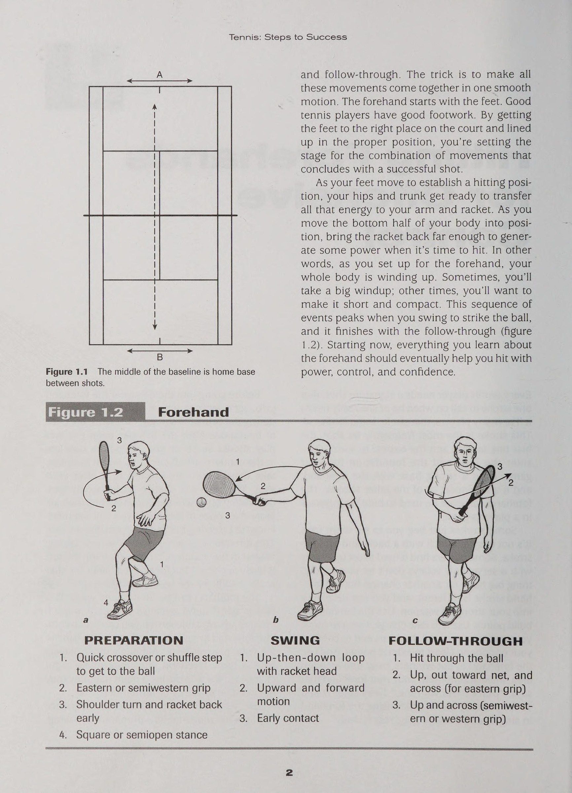
Sửa lỗi Bắt đầu chuẩn bị trả bóng ngay khi nó rời khỏi Mặt vợt của đối thủ. Đừng chờ đợi sự bật lên. Dù tốt hay xấu, người chơi sử dụng bốn cách cầm thuận tay khác nhau (lục địa, đông, bán tây và tây); giả sử bốn khác nhau Đừng bị choáng ngợp. Mặc dù tất cả các mục này sẽ được minh họa và thảo luận, nhưng một số cách cầm và tư thế nhất định vẫn được khuyến nghị. Các thế đứng ngoài (mở, nửa mở, đóng và vuông); và đánh bóng có Xoáy lên, Xoáy ngang, xoáy xuống hoặc không xoáy. Và chúng tôi thậm chí còn chưa chạm vào điều đó, điều đó tùy thuộc vào bạn. Một số biến thể này không thực tế hoặc hiệu quả lắm. Những thứ khác có thể được thêm hoặc kết hợp vào trò chơi của bạn khi thực hiện các cú swing ngược, đường xoay, vùng đánh và trưởng thành.
This stroke is the most frequently hit shot, the first one taught, and the easiest to learn. Consider the forehand the foundation for your game. Build a strong base with the forehand, and it will support all of the other strokes. The forehand can even be used to hide weaknesses in a player’s game. Some strokes just beg you to set them free. It’s not easy to attack with a backhand groundstroke. Some players find it hard to set up points with a serve. Low volleys don’t let you do anything but hope for another chance. But the forehand stroke is different, and you can develop it into your strongest weapon. Use the forehand to build points.
phần tiếp theo! CẦM Một hằng số áp dụng cho mỗi cách cầm vợt thuận tay: Đặt tay thuận (tay không thuận) lên thân vợt giữa các lần đánh. Sử dụng tay thuận để đỡ vợt đồng thời thực hiện các điều chỉnh nhỏ bằng tay thuận. Biến việc sử dụng tay thuận để điều chỉnh báng cầm thành phản hồi tự động. Thay đổi cách cầm bằng một tay không có tác dụng. Mặc dù chúng tôi cũng đề cập đến các kiểu Cách cầm vợt Continental và kiểu tây trong phần này, nhưng kiểu Cách cầm vợt Eastern hoặc bán tây là những kiểu được khuyên dùng cho cú thuận tay (forehand).
Use it to take charge. Use it to move your opponent around the court and to confuse your opponent. Use it to extend points. And use the forehand to put winners away into an open area. Make a statement with your forehand that says, “Don’t mess with me. Read steps 9 and 10 for point-by-point tactics using the forehand in singles and doubles play, respectively. Before going into the details of the forehand grip, let’s look at where to position oneself during the course of a point.
Cách cầm vợt thuận tay kiểu Đông Với tay không thuận, cầm vợt ở trục, vuông góc với Mặt sân. Mặt khác, bắt tay bằng vợt sao cho lòng bàn tay tựa vào mặt vát sau của cán vợt. Cách cầm vợt này là kiểu thuận tay phía đông (hình iW) 2 Hãy uốn cong các ngón tay của bạn quanh cán vợt gần phần gốc của nó. Hình 1.3 Cách cầm thuận tay kiểu Đông: (a) người chơi thuận tay phải; (b) người chơi thuận tay trái.
In singles, the base of operations after the ball has been put into play should be on or just behind the baseline at the center mark (figure 1.1). When in doubt, take that position and return to it after each shot. The base will change during exchanges, depending on where the opponent hits the ball. More than once in this book, you will see references to bisecting the angle of possible returns.
Đối với người chơi thuận tay phải cầm vợt sang bên phải, cổ tay phải hơi chếch về bên phải của mặt trên và chữ V được tạo bởi ngón cái và ngón trỏ phải ở phía trên nhưng hơi hướng về phía sau của tay cầm. Cách cầm vợt phía Đông là cách cầm thuận tay truyền thống nhất, nhưng nó không được nhiều tay vợt hàng đầu sử dụng. Tuy nhiên, có một vấn đề là khi giáo viên hướng dẫn học sinh cách cầm vợt giống như những người chơi ưu tú, liệu cách cầm vợt khác có phù hợp với người không chuyên hay không. Người chơi thuận tay trái nên cầm vợt sao cho cổ tay hơi lệch về bên trái của phần trên của cán vợt khi nhìn xuống phía trên.
This direction is a semiscientific way of saying, “Stand in the middle of where you think the ball is likely to come. But for now, consider the spot at the middle of the baseline home base. The forehand can be hit in many ways. This fact is good news because it means several options are available so that you can find a comfort zone and assume some of the responsibility for your playing style. Although most players have a basic forehand grip, they make slight changes in the grip during a point that they may not even be aware of or remember.
người chơi. Phần lớn các chuyên gia giảng dạy vẫn sử dụng kiểu cầm thuận tay phía đông cho người mới bắt đầu, nhưng họ cho phép học sinh chuyển sang các kiểu cầm vợt khác như 'Nhưng kiểu bán tây có những hạn chế. Có thể sẽ khó hơn đối với một số người mới bắt đầu> thành thạo, — — — — — — — — đó chắc chắn không phải là cách cầm vợt tốt cho những người có độ nảy thấp mà họ trở nên tiến bộ hơn.
Every stroke in tennis consists of a sequence of separate movements—preparation, swing, B Figure 1.1 The middle of the baseline is home base between shots. and follow-through. The trick is to make all these movements come together in one smooth motion. The forehand starts with the feet.
quả bóng, và đó là một tay cầm quá tệ khi chơi trên lưới. Nó cũng là Ưu điểm của thuận tay phía đông là khó điều chỉnh hơn để đi từ vị trí gần tự nhiên của cổ tay, phụ thuộc nhiều hơn về phía tây sang kiểu cầm vợt có thể sử dụng trên lưới. Khớp vai, ít căng thẳng hơn ở khuỷu tay khi chuyển từ thuận tay phía đông sang cú vô-lê (volley) và cổ tay, đồng thời chuyển sang chơi trên lưới dễ dàng hơn.
Good tennis players have good footwork. By getting the feet to the right place on the court and lined up in the proper position, you’re setting the stage for the combination of movements that concludes with a successful shot. As your feet move to establish a hitting position, your hips and trunk get ready to transfer all that energy to your arm and racket.
cầm nắm mượt mà hơn. Một số người chơi kiểu cầm vợt bán phương Tây không bao giờ có thể điều chỉnh và ở lại. Tất cả đều là những lý lẽ thuyết phục. Nhược điểm là không thể đánh với sức mạnh tối đa ở đường cuối sân (baseline) trong toàn bộ trận đấu của họ. Nếu cách cầm vợt này áp dụng cho một số cú đánh, không thể đánh Xoáy lên hiệu quả như với hai cách cầm vợt khác, và không quá khó chịu, hãy xoay bàn tay của bạn một chút về phía tay cầm hướng đông. Tất cả những gì đã nói, phương pháp bán tây vẫn có ý nghĩa đối với rất nhiều người có khả năng phản ứng dễ dàng với những cú đánh có độ nảy cao.
As you move the bottom half of your body into position, bring the racket back far enough to generate some power when it’s time to hit. In other words, as you set up for the forehand, your whole body is winding up. Sometimes, you'll take a big windup; other times, you'll want to make it short and compact. This sequence of events peaks when you swing to strike the ball, and it finishes with the follow-through (figure 1.2). Starting now, everything you learn about the forehand should eventually help you hit with power, control, and confidence.
Cách cầm vợt thuận tay kiểu đông là một cách cầm vợt hợp lý, tốt. Cho dù họ bắt đầu với giải pháp thay thế thực tế cho trình độ sơ cấp, trung cấp, cầm nắm hay phát triển thì điều đó vẫn chưa được nghiên cứu. và những người chơi nâng cao, nhưng nó không được hỗ trợ tốt bởi supWestern Grip bởi những giáo viên chỉ làm việc với những người chơi rất giỏi. Đối với những giáo viên này, người bán tâyMột lần nữa, hãy bắt đầu với cách cầm vợt phía đông, với cổ tay của bạn hơi chếch sang bên phải của đầu vợt thì đây là lựa chọn đầu tiên cho cách cầm vợt thuận tay.
PREPARATION SWING FOLLOW-THROUGH 1. Quick crossover or shufflestep 1. Up-then-down loop 1. Hit through the ball to get to the ball with racket head 2. Up, out toward net, and 2. Eastern or semiwestern grip 2. Upward and forward across (for eastern grip) 3. Shoulder turn and racket back motion 3. Up and across (semiwestcou 3. Early contact ern or western grip) 4. Square or semiopen stance
tay cầm. Di chuyển nó sang bên phải nhiều hơn cho đến khi bạn có Semiwestern Grip bán tây. Bây giờ, xoay cổ tay của bạn một Giữ vợt bằng cách cầm vợt thuận tay phía đông. xoay nhiều hơn cho đến khi lòng bàn tay của bạn thực sự ở dưới. Bây giờ hãy xoay cổ tay của bạn đến vị trí xa hơn cán vợt (hình 1.5). Cách cầm này có cảm giác kỳ lạ không? Tay cầm phía tây trông cũng kỳ lạ. Nhưng đằng sau bên cạnh của tay cầm. Hãy coi kiểu cầm vợt bán tây giống như nằm giữa kiểu cầm vợt phía đông, một số người chơi học cách chơi với kiểu cầm vợt phía tây và kiểu cầm vợt phía tây. (Tìm hiểu thêm về cách cầm vợt thuận tay kiểu phương Tây và rất thành công với nó.
Hitting Forehands for Offensive Control Misstep Your swing is inconsistent. Correction Keep your wrist in a fixed laid-back position. The more movement in your wrist, the less control you will have. Misstep You are rushing the swing. Correction Start preparing to return a ball as soon as it leaves your opponent's racket face. Don’t wait for the bounce. For better or worse, players use four different forehand grips (continental, eastern, semiwestern, and western); assume four different stances (open, semiopen, closed, and square); and hit the ball with topspin, sidespin, underspin, or no spin.
xuất hiện tiếp theo.) Với cách cầm vợt bán tây (hình Cách cầm vợt phía tây đặc biệt phổ biến với 1.4), bạn có thể đánh bóng mạnh hơn so với những tay vợt ở trên đường cuối sân và đánh từ hướng đông, và việc đánh bóng Xoáy lên sẽ dễ dàng hơn. một lập trường cởi mở. Thật tuyệt vời khi đánh bằng Xoáy lên. Bạn cũng có thể đánh bóng sớm hơn và bắt nó cũng như để lấy bóng cao, nhưng chỉ có vậy thôi. Nó đang gia tăng.
And we haven’t even touched on back-swings, swing paths, hitting zones, and follow-throughs! Don’t be overwhelmed. Although all of these items will be illustrated and discussed, certain grips and stances are recommended. Beyond that, it’s up to you. Some of these variations are not very practical or effective. Others can be added or incorporated into your game as it matures. GRIPS
khó đánh bóng có độ nảy thấp và bóng đi Hình 1.4 Cách cầm vợt Semiwestern: (a) người chơi thuận tay phải; (b) người chơi thuận tay trái. Hình 1.5 Tay cầm phương Tây. rộng về phía thuận tay bằng cách sử dụng kiểu cầm vợt phía Tây. Những người chơi kiểu cầm vợt phương Tây cũng gặp khó khăn trong việc thích nghi với cách cầm vợt thông thường cho cú vô-lê. Trừ khi bạn có lý do thuyết phục để sử dụng cách cầm vợt kiểu phương Tây, còn không thì đừng. Đôi khi có thể phát sinh trong một thời điểm khi việc chuyển sang cách cầm vợt kiểu Tây sẽ giúp bạn đánh bóng với độ xoáy cực cao hoặc cho phép bạn đánh một quả bóng nảy rất cao.
One constant applies to every forehand grip: Place the off hand (the nondominant one) on the shaft of the racket between shots. Use the off hand to support the racket while making slight adjustments with the dominant hand. Make using the off hand to adjust the grip an automatic response. One-handed grip changes don’t work. Although we cover the continental and western grips in this section as well, the eastern or semiwestern grips are the ones recommended for the forehand. Eastern Forehand Grip With the nondominant hand, hold a racket at the shaft, perpendicular to the court.
Ngoài những trường hợp này, tốt hơn hết bạn nên sử dụng cách cầm vợt phía đông hoặc cách cầm vợt nửa tây. Kiểu cầm kiểu lục địa Cần đề cập thêm một kiểu cầm thuận tay nữa - kiểu cầm kiểu lục địa (hình 1.6). Như bạn đã làm với cách cầm vợt phía đông, hãy bắt đầu bằng cách cầm vợt vuông góc với sân và bắt tay sao cho lòng bàn tay của bạn tựa vào lưng. Hình 1.6 Cách Cách cầm vợt Continental: (a) người chơi thuận tay phải; (b) người chơi thuận tay trái.
With the other hand, shake hands with the racket so that your palm rests against the back bevel of the handle. This grip is the eastern forehand (figure iW) 2 Curl your fingers around the grip near its base. For a right-handed player who is holding the racket out to the right side, the wrist should be slightly to the right of the top, and the V formed by the thumb and index finger should be above but slightly toward the back part of the handle.
của tay cầm. Thay vì xoay cổ tay của bạn sang phải (đối với người chơi thuận tay phải), hãy di chuyển cổ tay sang trái một phần để cổ tay của bạn Dù bạn quyết định sử dụng cách cầm vợt nào, một số hoạt động làm quen được khuyến khích thực hiện ngay trên đầu cán vợt. Mở rộng ngón tay cái của bạn dọc theo tay cầm để phần bên trong chỉ cần bạn, vợt và một quả bóng tennis.
A left-handed player should hold the racket So the wrist is slightly to the left of the top of the grip when looking down over the top. Figure 1.3 Eastern forehand grip: (a) right-handed player; (b) left-handed player. The eastern grip is the most traditional way to hold a forehand, but it is not used by many of the top players.
Hoạt động đơn giản nhất là rê bóng trên mặt tiếp xúc với mặt vát phẳng. Nếu bạn là người chơi thuận tay trái, hãy di chuyển cổ tay của bạn từ trái sang phải từ phía đông về phía thuận tay đến vị trí mà cổ tay của bạn thẳng hàng ở trên. ra sân bằng cách sử dụng dây vợt trong khi cầm vợt theo kiểu cầm vợt phía Đông hoặc bán Tây. Rê bóng bằng vợt là việc bạn sẽ làm mà không cần phải suy nghĩ trong phần còn lại của Got all that? Đừng sử dụng nó, ít nhất là không dành cho những cú thuận tay (forehand) (forehand). Có nhiều cách tốt hơn, thoải mái hơn để cầm vợt cho cú đánh này.
It is problematic, however, when teachers instruct their students to grip a racket in the same way as elite players do, whether or not a different grip is appropriate for less-than-elite players. A majority of teaching professionals stay with the eastern forehand for beginners, but they allow students to migrate toward other grips as’ they become more advanced. The advantages of the eastern forehand are the natural position of the wrist, greater reliance on the shoulder joint, less stress on the elbow and wrist, and an easier transition to net play.
cuộc sống quần vợt của bạn, vì vậy bạn cũng có thể làm quen với nó ngay bây giờ. Để làm cho mọi thứ trở nên thú vị hơn, hãy rê bóng dọc theo bất kỳ đường nào trên sân hoặc xoay vợt của bạn. Nhưng biết cách cầm vợt theo kiểu lục địa sẽ rất hữu ích khi bạn đạt được các bước giao bóng với lòng bàn tay hướng lên và đánh bóng lên thay vì hướng xuống. Nếu bạn có thể thực hiện 100 lần rê bóng lên hoặc xuống mà không bỏ lỡ, bạn đã thành công. Chuyển sang cái gì khác.
All are compelling arguments. The disadvantages are not being able to hit with maximum power on some shots, not being able to hit topspin as effectively as with two other grips, and not being able to respond easily to high-bouncing shots. The eastern forehand grip is a reasonable, practical alternative for beginning, intermediate, and advanced players, but it is not well supported by teachers who work only with very good players.
và cú vô-lê. VỊ TRÍ SẴN SÀNG Một điều không thay đổi về cú thuận tay (forehand) là tư thế sẵn sàng (ready position) (hình 1.7). Đây là tư thế bạn đứng để dự đoán cú đánh tiếp theo của đối thủ. Giả sử tư thế sẵn sàng (ready position) cho thấy rằng bạn đang cảnh giác, sẵn sàng hành động và quan sát bóng rời khỏi vợt của đối thủ.
For these teachers, the semiwestern is the first choice for forehand grips. Semiwestern Grip Hold the racket with the eastern forehand grip. Now rotate your wrist to a position even farther behind the side of the grip. Think of the semiwestern as being halfway between an eastern and a western grip.
Ở Tư thế sẵn sàng, bàn chân của bạn phải vuông góc với lưới. Giữ vợt theo kiểu thuận tay trừ khi bạn mong đợi bóng sẽ đi đến nơi khác. Cong đầu gối của bạn một chút và nghiêng về phía trước. Đặt cánh tay, bàn tay và vợt của bạn lên và duỗi thẳng về phía trước một cách thoải mái. Tập trung mắt vào phía trên của vợt. Hình 1.7 Tư thế sẵn sàng (ready position).
(More about the western grip appears next.) With the semiwestern grip (figure 1.4), you can hit the ball harder than with the eastern, and it’s easier to hit a ball with topspin. You can also strike the ball earlier and catch it on the rise. Figure 1.4 Semiwestern grip: (a) right-handed player; (b) left-handed player. But the semiwestern has its drawbacks.
Về cách cầm vợt cơ bản nhất trong trò chơi, cách cầm vợt thuận tay, có sự khác biệt giữa những gì các tay vợt giỏi làm và những gì được dạy ở cấp độ quần vợt cơ sở. Miguel Crespo chịu trách nhiệm về Chương trình đào tạo huấn luyện viên của Liên đoàn quần vợt quốc tế, còn Jose Higueras là cố vấn cho USTA và đã làm việc với những tay vợt như Michael Chang và Jim Courier. Trong Kỹ thuật quần vợt đẳng cấp thế giới, Crespo và Higueras đã viết về cách cầm vợt thuận tay kiểu phương đông như thể nó đã là một di tích của quá khứ. Các đồng tác giả viết rằng cách nắm phía đông là cách cầm truyền thống; trong khi kiểu cầm vợt bán tây hoặc phương tây là kiểu cầm vợt hiện đại: "Cách cầm vợt bán tây được khuyên dùng là kiểu cầm mà người chơi nên sử dụng để chơi cú thuận tay (forehand) hiện đại vì nó mang lại sự chuyển giao tốt nhất về phía trước cả sức mạnh và độ xoáy. Chúng tôi đồng ý với điều này và xem thêm cách cầm vợt bán tây là cách cầm vợt được ưa thích hơn với cách cầm vợt phía đông và phía tây là hai loại." Tuy nhiên, các chuyên gia giảng dạy làm việc cùng hoặc giám sát việc hướng dẫn cho những người chơi kém trình độ sẽ nói với bạn rằng họ thường bắt đầu những người chơi bằng cách cầm vợt thuận tay truyền thống của phương Đông. Jim Coyne, giám đốc USTA NorCal Junior Tennis, nói, "| có thể lỗi thời, nhưng tôi đồng ý với những người dạy cách cầm vợt phương đông. Chúng tôi có thể sử dụng thế đứng hơi cởi mở, nhưng chúng tôi bắt đầu với những người mới bắt đầu bằng một bước cơ bản về phía lưới. Cách cầm vợt phương đông giúp chuyển đổi sau này trên lưới và khi giao bóng.' Coyne tiếp tục: "Kinh nghiệm của tôi cho tôi thấy rằng mặc dù chúng tôi bắt đầu với các thế cầm và tư thế cơ bản, nhưng người chơi sẽ tiến triển thành các thế cầm và tư thế khác nhau khi họ chơi nhiều hơn. Tôi nghĩ rằng chúng ta cần phải trau dồi từ những điều cơ bản thay vì yêu cầu những người mới bắt đầu và những người ở trình độ trung cấp bắt chước những người chơi đẳng cấp thế giới.' Randy Chamberlain, người giám sát một nhóm cơ sở hướng dẫn quần vợt ở Minneapolis, đồng ý với Coyne. "Khi chúng tôi thu hút những học sinh ở thế cân bằng, chúng tôi thường giới thiệu trò chơi bằng cách sử dụng các nguyên tắc truyền thống. Những đứa trẻ tiếp xúc với cách chơi theo giải đấu và áp lực phải đánh lớn sẽ bị thu hút về kiểu cầm vợt lớn và thế đứng cởi mở của phương Tây. Có lẽ 80 phần trăm các chuyên gia giảng dạy của chúng tôi là những người theo trường phái cũ." Tiến sĩ Paul Roetert, giám đốc của USA Tennis High Performance, đưa ra một thỏa hiệp: "Khi học quần vợt, tôi sẽ tránh xa những kiểu cầm vợt cực kỳ thuận tay. Về phía thuận tay, tôi sẽ coi kiểu cầm vợt cực tây hoặc kiểu cầm kiểu lục địa khó sử dụng làm cơ sở cho cú đánh. Có nhiều loại cách cầm vợt ở giữa, bao gồm cả kiểu cầm vợt thuận tay phía đông, mà tôi sẽ được coi là chấp nhận được và hữu ích cho sự phát triển trong tương lai." Vì vậy, bạn nên làm gì? Bắt đầu với cách cầm vợt thuận tay kiểu đông và chỉ chuyển sang kiểu cầm vợt nửa tây nếu nó giúp bạn trở thành người chơi giỏi hơn. Hãy cưỡng lại sự cám dỗ của việc chuyển sang kiểu cầm vợt thuận tay kiểu Tây, và thậm chí đừng cân nhắc đến kiểu cầm vợt lục địa cho cú đánh này. Bạn sẽ cần lục địa để giao bóng, vô-lê và cú đập bóng smash từ trên cao.
It may be harder for some beginners to> master, it definitely is not a great grip for low-bouncing balls, and it’s a terrible grip for net play. It is also a more difficult adjustment to go from a semiwestern to a grip that can be used at the net. The switch from an eastern forehand to a volleying grip is smoother. Some semiwestern grip players are never able to make the adjustment and stay on the baseline their entire game. If this grip is too uncomfortable, rotate your hand slightly back toward an eastern grip. All of that being said, the semiwestern still makes sense for a lot of very good players. Whether they started out with the grip or grew into it hasn’t been studied. Western Grip Again, start with the eastern grip, with your wrist slightly to the right of the top of the racket handle. Move it more to the right until you have the semiwestern. Now, rotate your wrist one more turn until your palm is actually under the racket handle (figure 1.5). Does this grip feel weird? The western grip looks weird, too. But some players learn to play with the western forehand grip and are very successful with it. The western grip is especially popular with players who stay on the baseline and hit from an open stance. It’s great for hitting with topspin and for taking high balls, but that’s about all. It is hard to hit low-bouncing balls and balls that go Hitting Forehands for Offensive Control wide to the forehand side using the western grip. Western grip players also have a difficult time adapting to conventional grips for the volley. Unless you have a compelling reason to use the western grip, don’t. Occasions may arise during a point when shifting to a western grip will help you hit the ball with extreme topspin or allow you to hit one that bounces very high. Other than these occasions, you're better off with an eastern grip or a semiwestern grip. Continental Grip One more forehand grip should be mentioned—the continental grip (figure 1.6). As you did with the eastern grip, start by holding the racket perpendicular to the court and shaking hands so that your palm rests against the back of the handle. Instead of rotating your wrist to the right (for a right-handed player), move it a fraction of a turn to the left so that your wrist is directly on top of the racket handle. Extend your thumb along the grip so the inside part is in contact with the flat bevel. If you are a lefthanded player, move your wrist from left to right out of the eastern forehand to a position where your wrist is aligned on top. Got all that? Don’t use it, at least not for forehand groundstrokes. There are better, more comfortable ways to grip the racket for this shot. But knowing how to hold a continental grip will be useful when you reach the steps on serves and volleys. READY POSITION The one thing that hasn’t changed about the forehand is the ready position (figure 1.7).
BƯỚC CHÂN Một số lần trả về yêu cầu ít hoặc không cần di chuyển. Bạn chỉ cần di chuyển vợt về phía sau và đánh. Với những cú đánh Kỹ thuật rất đơn giản: Di chuyển sang phải, xoay chân phải, sau đó Bước chân bắt chéo chân với những người ở xa bạn hơn, có hai cách để sang trái và cất cánh. Để di chuyển sang trái, hãy xoay cần tới quả bóng. Đầu tiên là bước xáo trộn (chân trái và Bước chân bắt chéo trước với chân phải. Không quan trọng bạn thuận tay phải hay tay trái. Kỹ thuật Bước chân bắt chéo bước 1.8). Di chuyển sang phải hoặc sang trái, luân phiên trượt chân theo hướng bạn muốn.
This is the position in which you stand in anticipation of your opponent’s next shot. Assuming the ready position indicates that you are alert, poised for action, and watching the ball leave your opponent’s racket. In the ready position, your feet should be square to the net. Hold the racket in a forehand grip unless you expect the ball to go somewhere else. Flex your knees slightly and lean forward. Place your arms, hands, and racket up and extended forward comfortably. Focus your eyes over the top of the racket.
Trong khi bạn xáo trộn, việc lấy lại vợt ở vị trí a cũng tương tự. vị trí để bật cú thuận tay (forehand). Giữ hông thấp Các bài tập động tác chân sau đây sẽ giúp cải thiện kỹ năng động tác chân. Một khi bạn có thể di chuyển từ mặt đất bằng cách uốn cong đầu gối. Phương pháp khác để di chuyển tới quả bóng được gọi là bước chéo (hình 1.9). Bước chéo được sử dụng để chạy cho các bức ảnh ở xa hơn.
Figure 1.6 Continental grip: (a) right-handed player; (b) left-handed player. Whatever grip you decide to use, several get-acquainted activities are recommended that require only you, the racket, and one tennis ball. The simplest activity is to dribble the ball on the court using the racket strings while holding the racket with the eastern or semiwestern grip.
song song một cách nhanh chóng và thậm chí không cần nghĩ đến động tác bằng chân, bạn đã sẵn sàng tập trung vào các nguyên tắc cơ bản khác. Hình 1.9 Bước chéo. Hình 1.8 Bước xáo trộn. động tác chân
Dribbling the ball with the racket is something you'll do without even thinking about it for the rest of your tennis life, so you might as well get used to it now.
Bài tập 1. _Người tiếp đất Để thực hành bao quát sân, bắt đầu với người tiếp đất lăn nó lại cho đối tác của bạn và di chuyển sang trái (hình 1.10). Đứng ở điểm giữa, không cầm vợt nhưng ở Tư thế sẵn sàng. Một bạn tập đứng ở chữ T, nơi có vạch giao bóng ở giữa cho quả bóng tiếp theo. Một biến thể của bài tập tiếp đất là sóng.
To make things more interesting, dribble along any line on the court or turn your racket palm up and bounce the ball up instead of down. If you can do 100 up or down dribbles without a miss, you’ve got it. Move on to something else. Figure 1.7 Ready position.
Bắt đầu ở điểm trung tâm trên đường cuối sân (baseline). Để một đường giao nhau giao nhau với đường giao bóng, giữ hai đối tác luyện tập quần vợt hoặc giáo viên đứng cách quả bóng phía trước 20 feet. Đối tác của bạn lần lượt lăn các quả bóng về phía bạn và ra hiệu cho bạn di chuyển về phía trước, phía sau, bên phải và bên trái của bạn tổng cộng 10 lần, phải hoặc trái. Mang vợt ở tư thế sẵn sàng (ready position) 5 bên phải và 5 bên trái. Sử dụng xáo trộn và sử dụng bước xáo trộn để di chuyển sang phải và sang trái.
Regarding the most fundamental grip in the game, the forehand grip, there is a difference between what the great players do and what is taught at the grassroots level of tennis. Miguel Crespo is responsible for the International Tennis Federation Coaches Education Program, and Jose Higueras has been an advisor to the USTA and has worked with players such as Michael Chang and Jim Courier. In World Class Tennis Technique, Crespo and Higueras wrote about the eastern forehand grip as though it were a relic of the past.
Tiếp tục trong 30 giây rồi đổi vai. bước, di chuyển sang bên phải để tiếp đất cho thiết bị tiếp đất đầu tiên, Hình 1.10 Thiết bị tiếp đất. Để tăng độ khó Kiểm tra thành công * Đối tác ném vật tiếp đất ngẫu nhiên vào * Xáo trộn và trượt mà không vượt qua bên phải hoặc bên trái của bạn. * Đối tác tăng tốc độ của quả bóng. * Giữ hông của bạn thấp xuống đất.
The eastern grip, wrote the coauthors, is the traditional grip; whereas the semiwestern or western is the modern grip: “The semiwestern grip is recommended as the grip that players should use to play the modern forehand as it provides for the best transfer forward of both power and spin. We agree with this and further view the semiwestern grip as the preferred grip with the eastern and western grips being two varieties.
¢ Đối tác tăng khoảng cách giữa các nền tảng Ghi điểm thành công của bạn. Để giảm độ khó 1 đến 3 tay vợt tiếp đất được thả xuống đất mà không lắc lư = 1 điểm * Đối tác chỉ ném tay vợt tiếp đất sang một bên. 4 đến 7 tay vợt tiếp đất ra sân mà không lắc lư = * Đối tác làm chậm tốc độ của bóng. 3 điểm ¢ Đối tác thu hẹp khoảng cách giữa 8 đến 10 người tiếp đất trên sân mà không có quả lắc = người tiếp đất.
Yet, teaching professionals who either work with or supervise instruction for less-than-elite players will tell you that they typically start players with the traditional eastern forehand grip. Jim Coyne, USTA NorCal Junior Tennis director, says, “| may be old-fashioned, but I agree with those who teach the eastern grip. We might use a slightly open stance, but we start novices with a basic step forward toward the net.
5 điểm Điểm của bạn Bài tập chân 2. Bắt một lần bật Đối với bài tập bắt một lần nảy, bạn và một đối tác thực hiện các vị trí giống như trong tư thế tiếp đất. Thay vì tăng độ khó * Đối tác ném bóng ngẫu nhiên sang bên phải hoặc lăn vật tiếp đất về phía bạn, đối tác của bạn lần lượt tung 10 quả bóng để chúng nảy sang bên phải bên trái của bạn.
The eastern grip helps in transitioning later at the net and on the serve. Coyne continues, “My experience shows me that although we start them with basic grips and stances, the players evolve into different grips and stances as they play more. I think we need to work up from the basics instead of telling beginners and intermediates to imitate world-class players.
* Đối tác tăng tốc độ ném bóng. và rời đi. Thực hiện bước chéo, di chuyển nhanh và bắt bóng bằng một tay trước khi nó nảy lên lần thứ hai (hình 1.11). Lăn nó lại và phục hồi ¢ Đối tác tăng khoảng cách giữa các quả bóng được ném. đến tư thế sẵn sàng (ready position) cho lần ném tiếp theo. Có thể ném tung để nảy ở độ cao ngang lưng dọc theo đường cuối sân (baseline), phía sau hoặc phía trước đường cuối sân (baseline).
Randy Chamberlain, who supervises a group of tennis instruction facilities in Minneapolis, agrees with Coyne. “When we get students who are at square one, we typically introduce the game using traditional principles. Kids exposed to tournament play and the pressure to hit big do gravitate toward the big western grip and open stance. Probably 80 percent of our teaching professionals are old school.
Để giảm độ khó « Đối tác chỉ ném bóng sang một bên. * Đối tác làm chậm tốc độ ném bóng. ¢ Đối tác thu hẹp khoảng cách giữa các quả bóng được ném. Kiểm tra thành công * Thực hiện bước xoay vòng và chéo nhanh chóng. * Đặt chân bên ngoài và đẩy ra cho lần đánh bắt tiếp theo. Ghi điểm thành công của bạn 1 đến 3 quả bóng bị bắt sau một lần nảy = 1 điểm 4 đến 7 quả bóng bị bắt sau một lần nảy = 3 điểm 8 đến 10 quả bóng bị bắt sau một lần nảy = 5 điểm Điểm của bạn. - — Hình 1.11 Bắt một lần nảy.
Dr. Paul Roetert, director of USA Tennis High Performance, offers a compromise: “When learning tennis, I would stay away from extreme grips. On the forehand side, I would consider an extreme western grip or continental grip difficult to use as a basis for the stroke. There is a range of grips in between, including the eastern forehand grip, which I would consider acceptable and helpful for future development. So, what should you do?
Bài tập động tác bằng chân 3. Bước xáo trộn-chéo nhau Vào Tư thế sẵn sàng ở giữa quả giao bóng Để tăng độ khó trên sân. Mang theo vợt, sử dụng bước xáo trộn để di chuyển ¢ Không dừng lại giữa các đoạn khoan. Tiếp tục di chuyển cho đến khi bạn hoàn thành 10 chuỗi. vượt qua vòng loại đơn nhanh nhất có thể. Đặt chân bên ngoài và sử dụng bước chéo để rẽ ¢ Có đối tác thời gian ở đoạn đầu tiên. Cố gắng chạy qua đường trung tâm. Quay lại trận đấu bắt đầu hoặc phá kỷ lục tốc độ của bạn với mỗi lần thử tiếp theo.
Start with the eastern forehand grip and change to the semiwestern grip only if it makes you a better player. Resist the temptation to go all the way to a western forehand grip, and don't even consider the continental for this stroke. You'll need the continental for serves, volleys, and overhead smashes. Hitting Forehands for Offensive Control FOOTWORK Some returns require little or no movement. You just move the racket back and hit. On shots that are farther away from you, there are two ways to get to the ball.
chỉ và thực hiện tương tự theo hướng ngược lại cho đến khi bạn hoàn thành tổng cộng 10 động tác qua lại (hình 1.12). Để giảm độ khó ¢ Di chuyển với tốc độ chậm để tập động tác chân. Kiểm tra thành công ¢ Ở mức thấp để duy trì trọng tâm của bạn. « Đặt chân ngoài để chống đẩy khi Đổi hướng bóng.
The first is a shuffle step (figure 1.8). Move laterally right or left, sliding your feet alternately in the direction you want to go. While you're shuffling, get the racket back in a position to pop a forehand. Keep your hips low to the ground by bending at the knees.
Ghi điểm thành công của bạn 1 đến 3 chuỗi động tác chân hoàn hảo = ag 1 điểm A — > 4 đến 7 chuỗi động tác chân hoàn hảo = 3 điểm 8 đến 10 chuỗi động tác chân hoàn hảo = 5 điểm Điểm của bạn Hình 1.12 Bước chuyển đổi chéo. STANCE Bốn tùy chọn có sẵn để định vị vị trí vượt qua vạch bằng chân trước của bạn. Bàn chân này - vuông, đóng, nửa mở và mở - và có thể sớm hay muộn bạn sẽ sử dụng tất cả chúng.
The other method of moving to the ball is called a crossover step (figure 1.9). The crossover step is used to run for shots farther away. Figure 1.8 Shuffle step. The technique is simple: To move to your right, turn your right foot, then cross over with the left and take off. To move to your left, pivot the left foot and cross in front with the right one.
là thế Tư thế đứng ngang (đóng) (hình 1.14). Bạn không có lựa chọn nào khác ngoài việc sử dụng vị trí này khi Bốn tùy chọn được mô tả tiếp theo. bạn đang đánh trên đường chạy hoặc chơi một số thế đứng nhất định. Thế đứng vuông góc (hình 1.13), đôi khi được gọi là thế đứng trung lập, là tư thế truyền thống nhất và thường được dạy khi đánh bóng. Vấn đề là chuyển trọng lượng. Khi bạn bước qua thay vì tiến về phía trước, bạn hầu như không thể chuyển trọng lượng của mình về hướng người mới bắt đầu. Khi bóng đến phía thuận tay của bạn, hãy di chuyển vào vị trí sao cho chân bạn muốn đánh. Nếu không chuyển trọng lượng về phía trước hoặc xoay hông, mọi lực bạn tạo ra và vai ít nhiều sẽ song song với đường biên đơn. Tay trái của người chơi thuận tay phải phải đến từ nơi khác. Thật là một sai lầm khi học tư thế đóng làm tiêu chuẩn cho cú thuận tay (forehand) của người mới bắt đầu; nhưng điều quan trọng là phải biết nó là gì, khi nào nên sử dụng nó và tại sao bạn đánh vai sẽ hướng về phía lưới hoặc bóng; vai phải của người chơi thuận tay trái sẽ chỉ.
It doesn’t matter if you are right-handed or lefthanded. The technique for the crossover step is the same. The following footwork drills will help improve footwork skill. Once you can move from side to side quickly and without even thinking about footwork, you’re ready to concentrate on other fundamentals. Figure 1.9 Crossover step. Footwork Drill 1. To practice court coverage, start with grounders (figure 1.10). Stand at the center mark without a racket but in ready position. A practice partner stands at the T, where the center service line intersects the service line, holding two tennis balls. Your partner rolls the balls alternately to your right and left sides for a total of 10 times, 5 to the right and 5 to the left. Using the shuffle step, move to the right to field the first grounder, _Grounders roll it back to your partner, and shuffle to the left for the next ball. A variation of the grounders drill is the wave. Start at the center mark on the baseline.
Nói cách khác, toàn bộ cơ thể của bạn - phần trên cơ thể, thân và phần dưới cơ thể - vuông góc với vị trí đó. lưới lưới. Ưu điểm chính của tư thế vuông góc là nó cho phép người đánh chuyển trọng lượng về phía trước khi đánh. Nhược điểm: Cần có thời gian để thiết lập hoàn hảo và không phải lúc nào cũng có sẵn thời gian trong các sàn giao dịch nhanh chóng. Việc ngụy trang nơi bạn sẽ đi với quả bóng cũng khó hơn. Những tay vợt thông minh có thể nhìn vào chân bạn và biết bạn có thể làm gì và không thể làm gì.
Have a practice partner or teacher stand 20 feet in front of you and signal you to move forward, backward, right, or left. Carry the racket in the ready position and use the shuffle step to move right and left. Continue for 30 seconds then change roles. Figure 1.10 Grounders. To Increase Difficulty * Partner tosses grounders randomly to the right or left. * Partner increases the speed of the ball. ¢ Partner increases the distance between grounders.
Trở lại tư thế đứng vuông góc. Bây giờ Bước chân (footwork) trước thêm một bước nữa về phía đường biên. Thay vì bàn chân của bạn tạo thành một đường tưởng tượng song song với đường biên, bạn có Hình 1.14 Thế đứng khép kín. Một lần nữa, quay trở lại tư thế vuông góc. Lần này thay vì bước chân trước đến gần mép biên hơn, hãy Bước chân (footwork) trước một chút sang trái và lùi lại một chút. Vị trí này mở hông và vai của bạn về phía lưới nhiều hơn, đặt bạn vào tư thế nửa mở (hình 1.15).
To Decrease Difficulty * Partner tosses grounders only to one side. * Partner slows the speed of the ball. ¢ Partner narrows the distance between grounders. Success Check * Shuffle and slide without crossing your feet. * Keep your hips low to the ground. Score Your Success 1 to 3 grounders fielded without a bobble = 1 point 4 to 7 grounders fielded without a bobble = 3 points 8 to 10 grounders fielded without a bobble = 5 points Your score
Mặc dù bạn đang từ bỏ một phần khả năng chuyển trọng lượng về phía trước, bạn vẫn có thể tạo ra năng lượng. Ưu điểm thực sự của thế Tư thế đứng bán mở là nó cung cấp cho bạn các lựa chọn bao quát sân Hình 1.13 Thế đứng hình vuông. Hình 1.16 Thế đứng mở. Hình 1.15 Thế Tư thế đứng bán mở. thế đứng mở, chuyển dịch sang chân ngoài. Sức mạnh được tạo ra bởi hành động bùng nổ của cánh tay và bằng cách xoay hông chứ không phải trước cú vung. Nhiều người chơi trong giải đấu sử dụng thế đứng mở và thế đóng không được cung cấp. Vị trí của bàn chân trái cho phép bạn đánh và khởi đầu thuận lợi trong việc hồi phục và di chuyển để đứng vững một cách hiệu quả với cách cầm vợt bán tây hoặc tây. Họ có thể đánh mạnh, ngụy trang hướng che sân rộng mở. Phục hồi nhanh chóng có vẻ không phải là vấn đề lớn, nhưng việc tiết kiệm được một phần giây cú đánh của họ và ở vị trí tuyệt vời để che chắn sân sau một cú đánh. Thế trận mở là tốt hoặc nửa bước có thể tạo nên sự khác biệt giữa thắng và thua. Tùy chọn thế đứng bán mở khi bạn không có thời gian để thiết lập ở thế đứng khác, khi bóng đến trực tiếp với bạn và khi bạn phải di chuyển sang bên được những người chơi cấp độ ưu tú sử dụng rộng rãi, đặc biệt là những người chơi là chuyên gia cơ bản.
Hitting Forehands for Offensive Control Footwork Drill 2. One-Bounce Catch For the one-bounce catch drill, you and a partner take the same positions as in grounders. Instead of rolling grounders to you, your partner alternately tosses 10 balls so that they bounce to your right and left. Take a crossover step, move quickly, and catch the ball with one hand before it bounces a second time (figure 1.11). Roll it back and recover to a ready position for the next toss. Tosses can be thrown to bounce at about waist height along the baseline, behind it, or in front of it. Figure 1.11 One-bounce catch. To Increase Difficulty * Partner tosses balls randomly to the right or left. * Partner increases the speed of tossed balls. ¢ Partner increases the distance between tossed balls. To Decrease Difficulty « Partner tosses balls only to one side. * Partner slows the speed of tossed balls. ¢ Partner narrows the distance between tossed balls. Success Check * Do a quick pivot and crossover step. * Plant the outside foot and push off for the next catch.
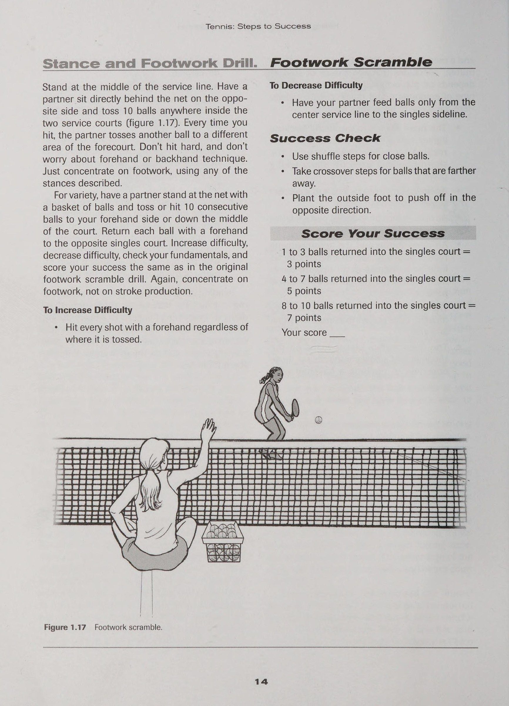
Sự kết hợp giữa cách cầm vợt bán tây và cú thuận tay (forehand) (forehand). Thế đứng bán mở cho phép người chơi vung vợt mạnh Cuộc tranh luận về thế đứng mở so với thế vuông góc giữa những người chơi quần vợt đã diễn ra trong nhiều thập kỷ. Các cuộc tranh luận thường diễn ra theo thời gian và trở nên gay gắt - một cách chơi trò chơi rất hấp dẫn. Hãy nhận biết thế đứng seimiopen, thử nghiệm nó và sử dụng nó nếu nó phù hợp. Một số giáo viên thích dạy bán mở như một tư thế được lựa chọn cho những người mới bắt đầu chơi; hầu hết các dòng nhóm. Tuy nhiên, các tay vợt lớn tuổi tin vào tư thế truyền thống (vai và chân song song với đường biên), trong khi các tay vợt trẻ hơn và người hướng dẫn của họ vẫn bắt đầu chơi với các giáo viên thích phong cách vai song song với lưới.
Score Your Success 1 to 3 balls caught after one bounce = 1 point 4 to 7 balls caught after one bounce = 3 points 8 to 10 balls caught after one bounce = 5 points Your score. -— Footwork Drill 3. Shuffle-Crossover Step Take a ready position in the middle of a service court. Carrying a racket, use a shuffle step to move past the singles sideline as fast as you can. Plant the outside foot, and use a crossover step to turn and run past the centerline. Return to the starting point and do the same thing in the opposite direction until you’ve completed a total of 10 back-and-forth movements (figure 1.12). ag A —> Figure 1.12 Shuffle-crossover step. To Increase Difficulty ¢ Don’t stop between drill segments.
thế đứng vuông vức. Một lần nữa, hãy sử dụng tư thế vuông góc làm điểm bắt đầu. Bây giờ hãy chuyển sang tư thế nửa mở, nhưng đừng dừng lại ở đó. Hãy chuyển sang một tư thế cởi mở, trong đó bàn chân và vai của bạn ngang bằng nhau. Các lập luận đủ đơn giản. Thế đứng vuông vức cho phép chuyển động phối hợp về phía mục tiêu, vùng đánh dài hơn và Tốc độ đầu vợt lớn hơn. Lợi thế của alen so với đường nền và lưới (hình 1.16). Bạn thậm chí có thể sử dụng Tư thế sẵn sàng làm hướng dẫn về vị trí đặt chân của mình. Bàn chân của bạn vốn đã ở tư thế mở sẽ phục hồi nhanh hơn và khả năng bao quát sân tốt hơn.
Keep moving until you finish 10 sequences. ¢ Have a partner time the first segment. Try to match or break your speed record with each subsequent trial. To Decrease Difficulty ¢ Move at aslow-motion speed to practice the footwork. Success Check ¢ Stay low to maintain your center of gravity. « Plant the outside foot to push off when changing directions. Score Your Success 1 to 3 perfect footwork sequences = 1 point 4 to 7 perfect footwork sequences = 3 points 8 to 10 perfect footwork sequences = 5 points Your score Hitting Forehands for Offensive Control
Cuối cùng cũng có người xem xét giới hạn ở đúng vị trí. Mọi thứ - vai, hông và bàn chân - đều mở ra lưới. Trong số lượng lớn nghiên cứu mở về chủ đề này, đã tiến hành cuộc điều tra của riêng mình và rút ra một số kết luận, người chơi vung vợt mà không cố gắng đặt chân thẳng hàng với bất cứ thứ gì. Khi trọng lượng dịch chuyển theo sion. Duane Knudson, Tiến sĩ, giáo viên và nhà nghiên cứu tại Đại học bang California ở Chico và là thành viên của USTA Sport Science Comap Proper, phương pháp đào tạo phù hợp nên được đánh giá, kết luận rằng việc lựa chọn tư thế phụ thuộc vào khả năng chơi, tình trạng thể chất, loại thiết bị và hoàn cảnh trận đấu.
STANCE Four options are available for positioning your feet—square, closed, semiopen, and open—and you'll probably use all of them sooner or later. The four options are described next. The square stance (figure 1.13), sometimes referred to as the neutral stance, is the most traditional and the one most often taught to beginners. As the ball comes to your forehand side, move into a position so that your feet and shoulders are more or less parallel to the singles sideline. A right-handed player’s left shoulder will point toward the net or the ball; a left-handed player’s right shoulder will point.
đã phát triển). e Cả tư thế mở và tư thế vuông đều yêu cầu nhiều hoạt động của cơ lưng, điều này cần được tính đến trong quá trình Dưới đây là một số phát hiện của Knudson: rèn luyện sức mạnh. Thế đứng mở thành công vì ¢ Những người chơi ở trình độ trung cấp (Chương trình xếp hạng quần vợt quốc gia [NTRP] cấp độ kỹ năng vợt nhẹ hơn và mạnh hơn cũng như dây đàn hồi hơn bù đắp cho những cú vung ngắn hơn được nhiều người trẻ tuổi từ 3,5 đến 4,5 sử dụng) có thể sử dụng thế đứng mở, nhưng họ có nhiều khả năng đánh bóng sai hơn.
In other words, your entire body—upper body, trunk, and lower body—is perpendicular to the net. The main advantage of the square stance is that it allows the hitter to transfer weight forward with the shot. The disadvantage: It takes time to set up perfectly, and time is not always available in rapid exchanges. It’s also harder to disguise where you are going with the ball. Smart players may be able to look at your feet and know what you can and cannot do. Assume the square stance position again.
người chơi. Thế đứng mở dẫn đến Tốc độ đầu vợt chậm hơn từ 4 đến 8%. e Những người chơi nâng cao nên sử dụng các cú thuận tay (forehand) trong thế đóng trong hầu hết các tình huống, nhưng họ có thể đánh với thế đứng mở khi phạm vi bao phủ sân nhanh là thế đứng mở mang lại khả năng hồi phục nhanh hơn 4% so với thế đứng vuông góc. Cần có một lập trường cởi mở và những điều đi kèm. Kết luận này không phải là đường vợt nhất quán, nó thay đổi ít nhất 8 độ theo hướng đi lên, giảm sai số xuống 60 với cách tiếp cận thế mở được nhiều tay vợt ưu tú trên thế giới sử dụng.
Now move the front foot another step toward the sideline. Instead of your feet forming an imaginary line parallel to the sideline, you have Figure 1.13 Square stance. crossed over the line with your front foot. This position is the closed stance (figure 1.14). You have no choice but to use this position when you are hitting on the run or playing certain shots. The problem is transfer of weight. When you step across instead of forward, it’s virtually impossible to shift your weight in the direction you want to hit.
Đọc về cách cầm vợt và Bước chân (footwork) mất nhiều thời gian hơn so với việc thực hiện. Mọi thứ diễn ra vội vàng trong quá trình trao đổi, vì vậy đừng nản lòng trước những lời giải thích dài dòng. Bạn sẽ nhanh chóng đạt được một điểm trong phần trăm của mình. Tư thế mở không như người ta nghĩ trước đây buộc người chơi phải sử dụng quá nhiều thân và cánh tay.
Without a forward weight shift or rotation of the hips, any power you generate has to come from someplace else. It’s a mistake to learn the closed stance as the standard for a beginner’s forehand; but it is important to know what it is, when to use it, and why you’re hitting in that position. Figure 1.14 Closed stance.
Lập trường cởi mở đặt gánh nặng lên quá trình đào tạo khi bạn làm mọi việc mà không cần suy nghĩ về chúng trước. vai và khuỷu tay có thể so sánh với những gì được quan sát thấy khi ném bóng chày (và Thế đứng và động tác chân Scramble đều đứng ở giữa vạch giao bóng. Có một đối tác để giảm độ khó ngồi ngay sau lưới ở phía đối diện và ném 10 quả bóng vào bất kỳ vị trí nào trong hai sân giao bóng (hình 1.17). Mỗi lần bạn ¢ Yêu cầu đồng đội của bạn chỉ đưa bóng từ đường giao bóng chính giữa sang đường biên đánh đơn.
Once again, go back to the square stance. This time instead of stepping closer to the sideline with the front foot, move the front foot slightly to the left and back a bit. This positioning opens your hips and shoulders more toward the net, placing you in the semiopen stance (figure 1.15). Although you’re giving up some of the forward weight-transfer capacity, you can still generate power. The real advantage of the semiopen stance is that it gives you court coverage options
đánh, đối tác ném một quả bóng khác sang khu vực khác của sân trước. Đừng đánh mạnh và đừng lo lắng về kỹ thuật thuận tay hoặc trái tay. Chỉ cần tập trung vào động tác bằng chân, sử dụng bất kỳ bước Kiểm tra Thành công nào Sử dụng các bước xáo trộn để đánh bóng gần. Thực hiện các bước chéo cho các quả bóng có tư thế xa hơn được mô tả. đi xa. Để đa dạng hơn, hãy nhờ một đối tác đứng trên lưới với chân ngoài để đẩy ra theo hướng ngược lại.
Figure 1.15 Semiopen stance. the square and closed stances don’t offer. The position of the left foot allows you to hit and get a head start in recovering and moving to cover the open court. A quick recovery may not seem like a big deal, but saving a split second or a half step can mean the difference between winning and losing points. The semiopen stance is used by elite-level players extensively, especially those players who are baseline specialists.
một rổ bóng và tung hoặc đánh 10 quả bóng liên tiếp về phía thuận tay của bạn hoặc xuống giữa sân. Trả lại từng quả bóng bằng cú thuận tay (forehand) sang sân đánh đơn đối diện. Tăng độ khó, Ghi điểm thành công của bạn Từ 1 đến 3 quả bóng được trả lại vào sân đánh đơn = độ khó giảm 3 điểm, kiểm tra các nguyên tắc cơ bản của bạn và ghi điểm thành công của bạn giống như trong bài tập tranh giành động tác bằng chân ban đầu. Một lần nữa, tập trung vào 4 đến 7 quả bóng được trả về sân đánh đơn = 5 điểm động tác bằng chân, không tính đến cú đánh.
The combination of a semiwestern grip and a semiopen stance allows a player to swing hard and hit hard—a very appealing way to play the game. Be aware of the seimiopen stance, experiment with it, and use it if it’s a good fit. Some teachers prefer to teach the semiopen as the stance of choice for beginning players; most instructors, however, still start players with the square stance. Once more, use the square stance as a starting point. Now move to the semiopen stance, but don’t stop there.
8 đến 10 quả bóng được trả về sân đơn = Để tăng độ khó 7 điểm ¢ Đánh mọi cú đánh bằng thuận tay bất kể nó được ném ở đâu. Điểm của bạn ee © Oe A WE OD EH Hình 1.17 Động tác bằng chân. Vung vợt ra sau (lấy đà) Người mới bắt đầu có thể đơn giản hóa động tác Vung vợt ra sau (lấy đà) bằng cách đưa vợt thẳng về phía sau trước khi đưa vợt ngắn hoặc quá dài. Người mới bắt đầu có thể bắt đầu bằng cách đưa vợt về phía sau đủ xa để hướng vợt về phía hàng rào hoặc bức tường phía sau. Những người chơi có kinh nghiệm hơn sẽ đánh thẳng về phía trước, giống như một cánh cửa mở và đóng lại. Tuy nhiên, rất nhanh chóng, người chơi phát triển động tác vung vợt ngược độc đáo của riêng mình có thể đưa vợt lùi xa hơn trong một số tình huống nhất định. Nếu cú Vung vợt ra sau (lấy đà) của bạn ngắn, bạn không thể đánh mạnh. Nếu động tác Vung vợt ra sau (lấy đà) quá dài thì phải làm thế nào. Miễn là bạn tuân theo một số nguyên tắc chung, bạn có thể phát triển phong cách của riêng mình luôn, tỷ lệ sai sót sẽ tăng lên. Ngoài ra, không phải lúc nào bạn cũng có thời gian để thực hiện một cú Vung vợt ra sau (lấy đà) dài.
Go all the way to an open stance, in which your feet and shoulders are parallel to the baseline and the net (figure 1.16). You can even use the ready position as a guide to where your feet should be. Your feet are already in the correct position. Everything—shoulders, hips, and feet—is open to the net. In the open stance, a player swings without trying to line the feet up with anything. When the weight shifts in Figure 1.16 Open stance. the open stance, the shift is to the outside foot. Power is generated by an explosive arm action and by rotating the hips with, not before, the swing. Many tournament players use the open stance effectively with a semiwestern or western grip. They can hit hard, disguise the direction of their shots, and be in a great position to cover the court after a hit. The open stance is a good option when you don’t have time to set up in another stance, when the ball comes at you directly, and when you have to move wide to hit a forehand. The open-versus-square stance debate among tennis players has been ongoing for decades.
của động tác vung vợt sau. Nguyên tắc đầu tiên là bắt đầu chuẩn bị vợt (và xoay vai) ngay khi bạn biết bóng sẽ đi đâu. Đừng chờ đợi Quy tắc cuối cùng là phát triển một chuyển động giật ngắn với vợt của bạn - lên, lùi, sau đó hơi do dự trước khi vung vợt về phía trước để đánh để nảy về phía bạn. Nguyên tắc thứ hai là bóng. Sơ đồ của vòng lặp sẽ trông giống như việc tìm một vị trí vung vợt sau không quá giống với chữ C lùi lại.
The arguments usually have fallen along agegroup lines. Older players believe in the traditional stance (shoulders and feet parallel to the sidelines), whereas younger players and their teachers prefer a shoulders-parallel-to-the-net style. The arguments are simple enough. The square stance allows for a coordinated movement toward the target, a longer hitting zone, and greater racket speed.
Forward SWING Bây giờ bạn đã sẵn sàng để đánh thứ gì đó. Mọi bài tập cho đến thời điểm này đều đã được thực hiện để có được vị trí đánh vững chắc và tạo động lượng cho cú vung về phía trước theo từng phân đoạn. Cú xoay về phía trước là một phản ứng dây chuyền của các sự kiện riêng biệt bắt đầu từ đôi chân của bạn trên đường tiếp xúc. Thực hiện đường swing ngang với Mặt vợt vuông góc với Mặt sân là đủ cho người mới bắt đầu. Ngay cả những người chơi đẳng cấp thế giới cũng làm phẳng quỹ đạo vung vợt của họ khi họ muốn đánh mạnh và phẳng.
The advantage of the open stance is quicker recovery and better court coverage. Finally, someone has reviewed the limited amount of research on this subject, conducted his own investigation, and drawn some conclusions. Duane Knudson, PhD, a teacher and researcher at California State University in Chico Hitting Forehands for Offensive Control and a member of the USTA Sport Science Committee, concludes that the choice of stances depends on playing ability, physical condition, type of equipment, and match circumstances. Here are some of Knudson’s findings:
Nếu không, cú xoay sẽ hướng về phía trước và hướng lên trên, chạm vào mặt sau của quả bóng (hình 1.18). Đường vung càng thẳng đứng thì Xoáy lên càng được đưa vào bóng nhiều hơn. Xoáy lên tốt cho việc kiểm soát, tính nhất quán và làm cho bóng nảy cao Hình 1.18 Đường xoay cho Xoáy lên. Trong các cú đánh, người chơi sử dụng cách cầm vợt kiểu Tây hoặc bán Tây sẽ gây nhiều áp lực lên cổ tay và cẳng tay như ở phía bên kia.
The open stance is successful because lighter and stronger rackets and more resilient strings compensate for the shorter swings used by many young players. An open stance results in a 4 to 8 percent slower racket-head speed. An open stance provides a 4 percent faster recovery than a square stance. An open stance and the accompanying racket pathway, which changes by as little as 8 degrees in an upward direction, reduce the margin of error by 60 percent.
Giữ yên đầu, cầm vợt chắc chắn và tiếp xúc sớm. Hành động cổ tay họ quất lên và ngang qua mặt sau của quả bóng. Cố gắng tiếp xúc trước khi bóng chạm tới một điểm thậm chí bằng phần giữa cơ thể bạn. Một số giáo viên có ý nghĩa quan trọng hơn trong các nét vẽ ngày nay so với trước đây. Trong khi cách cầm thuận tay truyền thống của phương Đông nói rằng hãy đánh bóng ở phía trước cơ thể một chân. Không phải lúc nào bạn cũng có thể đánh xa như vậy, nhưng hãy cố gắng.
The open stance does not, as previously thought, force players to overuse the trunk and arm. The open stance places loads on the shoulder and elbow comparable to those observed in pitching a baseball (and appropriate training methods should be developed). e Both open and square stances require a large amount of back-muscle activity, which should be taken into account during strength training. ¢ Intermediate-level players (National Tennis Rating Program [NTRP] skill level of 3.5 to 4.5) can use the open stance, but they are much more likely to mishit the ball. e Advanced players should use closedstance forehands in most situations, but they should be able to hit with an open stance when rapid court coverage is required.
yêu cầu một vị trí cổ tay tương đối cố định đối với hầu hết các bài tập Xoay về phía trước 1. Tung sang thuận tay Đứng phía sau vạch giao bóng ở giữa Để tăng độ khó của sân và yêu cầu đối tác luyện tập của bạn tung 10 ¢ Bắt đầu bài tập từ đường cuối sân. các quả bóng liên tiếp sao cho chúng nảy cao đến thắt lưng * Yêu cầu đối tác của bạn tăng tốc độ thiết lập.
This conclusion is not consistent with the open-stance approach used by many of the elite players in the world. Reading about the way to hold a racket and move your feet takes a lot more time than doing it. Everything happens in a hurry during an exchange, so don’t get discouraged by wordy explanations.
về phía thuận tay của bạn. Mục tiêu của bạn là đánh bóng trở lại bằng cú thuận tay (forehand) trong sân đánh đơn (hình 1.19). ¢ Yêu cầu đối tác của bạn đánh, thay vì tung, thiết lập. Để giảm độ khó * Giảm tốc độ thiết lập. ¢ Bắt đầu với vợt quay lại. Kiểm tra thành công * Tập trung vào kiểm soát, không phải quyền lực. ¢ Sử dụng cú vung vợt theo chiều ngang hoặc từ trên xuống. Ghi điểm thành công của bạn 1 đến 3 cú thuận tay (forehand) thành công = 3 điểm 4 đến 7 cú thuận tay (forehand) thành công = 5 điểm 7 đến 10 cú thuận tay (forehand) thành công = 7 điểm Điểm của bạn ___ <--- — Hình 1.19 Tung bóng về phía thuận tay.
You'll quickly reach a point in your training where you do things without thinking about them first. Stance and Footwork Stand at the middle of the service line. Have a partner sit directly behind the net on the opposite side and toss 10 balls anywhere inside the two service courts (figure 1.17). Every time you hit, the partner tosses another ball to a different area of the forecourt. Don’t hit hard, and don’t worry about forehand or backhand technique. Just concentrate on footwork, using any of the stances described.
Bài tập 2. Cú thuận tay (forehand) thả và đánh Bài tập này sẽ giúp bạn làm quen với việc đánh phía trước. Để giảm độ khó Từ đường cuối sân (baseline), hãy giữ tư thế vuông góc với ¢ Di chuyển đến gần lưới hơn để đánh. vợt đã sẵn sàng cho cú giật nhỏ của nó. Thả 10 quả bóng liên tiếp về phía trước và bên cạnh nơi bạn đang đứng Kiểm tra thành công. Đánh bóng vào một điểm gần bằng chân trước. Sau khi bật lên, hãy đánh từng cú ° Chuyển trọng lượng của bạn trong cú xoay người từ phía sau sang quả bóng ở độ cao an toàn trên lưới và càng xa sân sau càng tốt. Cố gắng đưa mọi thứ về phía trước.
For variety, have a partner stand at the net with a basket of balls and toss or hit 10 consecutive balls to your forehand side or down the middle of the court. Return each ball with a forehand to the opposite singles court. Increase difficulty, decrease difficulty, check your fundamentals, and score your success the same as in the original footwork scramble drill. Again, concentrate on footwork, not on stroke production. To Increase Difficulty ¢ Hit every shot with a forehand regardless of where it is tossed.
¢ Tiếp xúc ngay cả với bàn chân trước. bắn vào sân đánh đơn đối diện. Bài tập này cũng là cách để bắt đầu trao đổi về động tác đánh nền Ghi điểm thành công của bạn trong quá trình luyện tập và khởi động. 1 đến 3 cú đánh trong = 1 điểm Để tăng độ khó 4 đến 7 cú đánh trong = 3 điểm ¢ Chỉ tính những cú đánh nảy trong 8 đến 10 cú đánh trong = 5 điểm đối diện sân sau.
Figure 1.17 Footwork scramble. all ee © Oe A WE OD EH Footwork Scramble To Decrease Difficulty ¢ Have your partner feed balls only from the center service line to the singles sideline. Success Check Use shuffle steps for close balls. Take crossover steps for balls that are farther away. Plant the outside foot to push off in the opposite direction.
Điểm của bạn ___ THEO DÕI Cách bạn Kết thúc cú đánh cú đánh phụ thuộc vào tư thế và cách cầm vợt mà bạn sử dụng. Tay cầm Semiwestern có liên quan đến các đường theo sau quấn quanh phần trước của cơ thể, thậm chí cả cổ. Tay nắm phía Tây ngắn hơn và thấp hơn, tương tự như chuyển động của cần gạt nước (hình 1.20). Đối với kiểu cầm vợt phía đông, lượt đánh tiếp theo Kết thúc cú đánh với việc vợt hướng về phía lưới (hình 1.21).
Score Your Success 1 to 3 balls returned into the singles court = 3 points 4 to 7 balls returned into the singles court = 5 points 8 to 10 balls returned into the singles court = 7 points Your score Hitting Forehands for Offensive Control BACKSWING Beginners can simplify the backswing by taking the racket straight back before bringing it straight forward to hit, sort of like a door opening and closing.
Tất cả ba phương pháp thực hiện theo đều đảm bảo rằng bạn không làm chậm cú đánh của mình trước khi tác động đến bóng. Người hướng dẫn thường nói: "Đánh xuyên qua quả bóng." Khi bạn làm điều đó, bạn đang cho phép vợt chạy chậm lại một cách bình thường. Hình 1.21 theo dõi cách cầm vợt kiểu Eastern. cái đầu. Nếu bạn dừng lại ở khoảng cách ngắn, bạn có thể sẽ đánh bóng ngắn và không có nhiều lực. Bạn cũng có thể có nguy cơ bị chấn thương ở cánh tay và vai.
Very quickly, however, players develop their own unique backswing styles. As long as you stay within some general guidelines, it’s okay to develop your own style of backswing. The first rule is to start getting the racket ready (and turning your shoulders) as soon as you know where the ball is going. Don’t wait for the bounce on your side. The second rule is to find a backswing position that is neither too short nor too long.
Để kiểm tra khả năng theo dõi của bạn, hãy nhờ đối tác của bạn thiết lập cho bạn những cú thuận tay (forehand) cao đến thắt lưng. Sau mỗi cú đánh, hãy dừng lại khi Kết thúc cú đánh quá trình theo dõi của bạn. Kiểm tra vị trí vợt của bạn theo hướng dẫn để thực hiện theo cách vừa mô tả. Hình 1.20 Diễn biến theo kiểu cầm vợt của phương Tây. Bài tập theo dõi 1. Các cú thuận tay (forehand) liên tiếp Bắt đầu bài tập với đối tác. Mỗi đấu thủ được đánh mỗi cú thuận tay (forehand) Đánh chéo sân (cross-court) đủ cao để vượt qua đường cuối sân của mình. Hoặc người chơi thả và vắt mà không đi ra ngoài.
Beginners can start by taking the racket back far enough to point it toward the back fence or wall. More experienced players may take the racket back farther in certain situations. If your backswing is short, you can’t hit with power. If the backswing is too long, however, the margin of error increases. Besides, you don’t always have time for a long backswing. The last rule is to develop an abbreviated looping motion with your racket—up, back, then a slight hesitation before swinging forward to hit the ball. A diagram of the loop would look similar to a backward letter C.
đưa bóng vào cuộc ở phía thuận tay của A. Biến thể thứ hai là cú thuận tay (forehand) bóng tường đối diện sân (hình 1.22). Đếm số mũi khoan (hình 1.25). Đứng cách tường tập 20 feet. Cố gắng giữ bóng chạm tường trong tổng số các cú thuận tay (forehand) liên tiếp được thực hiện bởi cả hai tay vợt làm việc theo đội. với những cú thuận tay (forehand) nhẹ nhàng. Ý tưởng là để kiểm soát một biến thể của quả bóng thuận tay liên tiếp, không đánh bóng mạnh.
FORWARD SWING Now you're ready to hit something. Every drill up to this point has been done to get into a solid hitting position and to build, in segments, momentum for the forward swing. The forward swing is a chain reaction of separate events that starts with your feet on the way to contact. Taking a horizontal swing path with the racket face perpendicular to the court is sufficient for beginners.
bài tập là bài tập thuận tay chéo bàn liên tiếp Cuối cùng, hãy thử biến thể chỉ theo đường chuyền (hình (hình 1.23). Thực hiện cùng một bài tập, nhưng đánh tất cả các cú thuận tay (forehand) chéo bàn (thuận tay đến thuận tay). 1.26). Đứng đối diện với bạn tập của bạn ở vạch cuối sân phía sau đường đánh đôi. Giữ bóng Những quả bóng không rơi vào khu vực đánh đơn Đánh chéo sân (cross-court) của đối phương sẽ bị trượt. Để thực hiện biến thể này trong cách chơi với các cú thuận tay (forehand) và cố gắng làm cho tất cả các cú đánh nảy lên ở ngõ đối diện. Biến thể này rất khó và phù hợp hơn với người chơi ở trình độ trung cấp và cao cấp.
Even worldclass players flatten the trajectories of their swings when they want to hit hard and flat. Otherwise, the swing is forward and upward, brushing the back of the ball (figure 1.18). The more vertical the swing path, the more topspin is put on the ball. Topspin is good for control, consistency, and for making the ball bounce high on the other side. Keep your head still, hold the racket with a firm grip, and make contact early. Wrist action is more significant in today’s strokes than in the past. Whereas the traditional eastern forehand grip requires a relatively fixed wrist position for most D)
thậm chí còn thú vị hơn, đặt một quả bóng tennis rỗng vào tay cầm của một chiếc chổi cao su và tựa nó vào lưới ở giữa (hình 1.24). Hãy thử B A Hình 1.22 Liên tiếp các cú thuận tay (forehand). Hình 1.23 Các cú thuận tay (forehand) Đánh chéo sân (cross-court) liên tiếp. 256 8 el ae 2 if RG St OH Hình 1.24 Làm sạch chổi cao su. B Hình 1.26 Chỉ các con hẻm. Để tăng độ khó * Mỗi người chơi phải đánh tối đa 10 cú thuận tay (forehand) liên tiếp (tổng cộng 20 cú đánh).
Figure 1.18 Swing path for topspin. shots, players who use a western or semiwestern grip put a lot of stress on the wrist and forearm as they whip up and across the back of the ball. Try to make contact before the ball reaches a point even with the midsection of your body. Some teachers say to hit the ball a foot in front of the body. You can’t always hit that far out, but do try. Forward-Swing Drill 1. Toss to Forehand
Để giảm độ khó ¢ Khi một người chơi đánh trượt, hãy đánh một quả bóng khác vào cuộc và tiếp tục đếm cho người chơi không mắc lỗi. * Tiến hành diễn tập từ đường giao bóng thay vì đường cuối sân (baseline). Kiểm tra thành công * Chuẩn bị sớm. * Liên hệ trước. * Hoàn thành việc theo dõi của bạn. Ghi điểm thành công của bạn 1 đến 3 cú thuận tay (forehand) liên tiếp = 3 điểm 4 đến 7 cú thuận tay (forehand) liên tiếp = 5 điểm Hình 1.25 Những cú thuận tay (forehand) bóng tường.
Stand behind the service line in the middle of the court, and have your practice partner toss 10 consecutive balls so that they bounce waist high to your forehand. Your objective is to return with a forehand inside the singles court (figure 1.19). Figure 1.19 Toss to forehand. Forward-Swing Drill 2. This drill will help you get used to hitting in front. From the baseline, assume a square stance with the racket ready for its miniloop.
8 đến 10 cú thuận tay (forehand) liên tiếp = 7 điểm Điểm của bạn trong Trò chơi Thuận tay Bài tập này là bài kiểm tra cuối cùng về cú thuận tay (forehand) của bạn. Từ đường cuối sân (baseline) Kiểm tra thành công, đưa 10 quả bóng vào chơi theo cú thuận tay (forehand) của đồng đội ở đường cuối sân (baseline) đối diện. Sau khi thiết lập ¢ Di chuyển chân nhanh chóng. ¢ Chuẩn bị vợt sớm. và quay lại, chơi điểm. Mỗi cú đánh phải ¢ Giữ cổ tay bạn thoải mái.
Drop 10 consecutive balls in front and to the side of where you are standing. Strike the ball at a point approximately even with the front foot. After the bounce, hit each ball at a safe height over the net and as far into the backcourt as possible. Attempt to put each shot into the opposite singles court. This drill is also the way to begin groundstroke exchanges during practice and warm-ups. To Increase Difficulty
bị đánh về phía thuận tay của đối thủ và bằng thuận tay của bạn. Hãy tìm kiếm cú ghi điểm trực tiếp khi bạn có thể. ¢ Liên hệ trước. Để tăng độ khó Ghi điểm thành công của bạn ¢ Thực hiện mọi cú đánh bằng thuận tay ngay cả khi giành được 1 đến 3 điểm = 5 điểm bóng đi về phía trái tay của bạn. Giành được 4 đến 7 điểm = 7 điểm Để giảm độ khó 8 đến 10 điểm giành được = 9 điểm ¢ Giữ bóng trong cuộc thay vì cố gắng đánh vào điểm của người chiến thắng.
¢ Count only those shots that bounce in the opposite backcourt. To Increase Difficulty ¢ Start the drill from the baseline. * Have your partner increase the pace of setups. ¢ Have your partner hit, rather than toss, setups. To Decrease Difficulty * Reduce the pace of setups. ¢ Start with the racket back. Success Check * Focus on control, not power. ¢ Use a horizontal or down-to-up swing. Score Your Success
TÓM TẮT THÀNH CÔNG Những tay vợt giỏi làm cho quần vợt trở nên dễ dàng bởi vì trong khi chúng ta quan sát quả bóng ở một bên của sân. Ngay sau khi bạn đánh một cú thuận tay (forehand) - giống như những tay vợt vĩ đại vẫn làm - hãy sử dụng tay thuận của bạn để điều chỉnh Mặt sân, họ đã sẵn sàng cho lần cầm vợt tiếp theo của bạn và bắt đầu vào vị trí để đánh về phía họ. Để có những cú thuận tay (forehand) tuyệt vời, hãy luôn bận rộn với cú đánh tiếp theo.
1 to 3 successful forehands = 3 points 4 to 7 successful forehands = 5 points 7 to 10 successful forehands = 7 points Drop-and-Hit Forehands To Decrease Difficulty ¢ Move closer to the net to hit. Success Check ° Shift your weight in the swing from back to forward. ¢ Make contact even with the front foot. Score Your Success 1 to 3 shots in = 1 point 4 to 7 shots in = 3 points 8 to 10 shots in = 5 points
bằng đôi chân của bạn. Sử dụng bước xáo trộn hoặc chéo để quay lại và xem các số bạn di chuyển nhanh để vào vị trí, cho dù bạn đã ghi trong phần Ghi điểm thành công của bạn cho thế đứng là mở, đóng, nửa mở hay vuông. mỗi cuộc tập trận. Nhập điểm của bạn vào bảng 1.1 và Xoay vai, lấy vợt ra sau và cộng chúng lại để đánh giá thành công cú thuận tay (forehand) của bạn. Nếu bạn sử dụng một cú giật rút gọn trước khi đánh hết quả bóng. Tiếp xúc ngay cả khi đã ghi được ít nhất 24 trên 50 điểm có thể, chuyển sang bước 2, trái tay.
Hitting Forehands for Offensive Control FOLLOW-THROUGH How you finish a stroke depends on which stance and which grip you use. Semiwestern grips are associated with follow-throughs that wrap around the front of the body, even the neck. The western grip follow-through is shorter and lower, similar to a windshield-wiper motion (figure 1.20). For the eastern grip, the followthrough ends with the racket pointing toward the net (figure 1.21). All three follow-through methods ensure that you don’t slow your swing down before making impact with the ball.
chân trước. Mong đợi mọi cảnh quay sẽ quay trở lại. Bảng 1.1 Tóm tắt tính điểm Các bài tập động tác chân 1. Tiếp đất _..__ Trên 5 2. Bắt một cú nảy == của chúng tôi 3. Bước xáo trộn chéo, xem Bài tập tư thế và động tác chân OULGLS 1. Động tác chân tranh giành trong 7 bài tập xoay người về phía trước 1. Tung bóng thuận tay aie SOUL OLS 2. Cú thuận tay (forehand) thả và đánh J Một hoặc S Bài tập tiếp theo 1. Những cú thuận tay (forehand) liên tiếp Sa ONL OE 7 2. Các trò chơi thuận tay của chúng tôi hoặc 9 TỔNG ___.. Gut 50 Biến Cú trái tay (backhand) (backhand) tay thành sức mạnh Không thể tránh khỏi - Cú trái tay (backhand) (backhand) tay là một Hầu hết người chơi hài lòng nếu họ chỉ đơn giản phát triển một Cú trái tay (backhand) (backhand) tay không khiến họ gặp khó khăn. Đó là lý do tại sao một trong những lời khuyên phổ biến nhất mà các huấn luyện viên đưa ra cho các tay vợt của họ là "Chơi khó khăn. Khi họ tiến bộ hơn, họ bắt đầu nhận ra Cú trái tay (backhand) (backhand) tay của anh ấy" hoặc "Giao bóng cho trái tay của cô ấy". Cú trái tay (backhand) (backhand) tay không phải là một cú đánh quá tự nhiên so với cú trái tay (backhand) (backhand) có thể hiệu quả để giành điểm như cú thuận tay (forehand). Một khi bạn có thuận tay. Đối với nhiều người chơi, trái tay có năng lực trái tay, nghĩ về mặt xây dựng là yếu hơn. Đây là một kỹ thuật có thể khó học. cú trái tay (backhand) (backhand) đòi hỏi một mức độ sức mạnh nhất định, sự thay đổi cách cầm, bước chân chắc chắn và các điểm ở cả hai bên, thuận tay và trái tay.
Instructors often will say, “Hit through the ball. When you do that, you’re allowing for a normal slowdown of the racket Figure 1.20 Western grip follow-through. Figure 1.21 Eastern grip follow-through. head. If you stop short, you’ll probably hit the ball short and without much power. You may also expose yourself to the risk of arm and shoulder injuries. To check your follow-through, have your partner set you up with waist-high forehands. After each stroke, freeze at the end of your follow-through. Check the position of your racket against the guidelines for the follow-through just described. Follow-Through Drill 1. Consecutive Forehands Start the drill against a partner. Each player is on his or her baseline. Either player drops and puts a ball into play to the forehand side of the opposite court (figure 1.22). Count the number of total consecutive forehands hit by both players working as a team. One variation of the consecutive forehands drill is the consecutive crosscourt forehands drill (figure 1.23). Execute the same drill, but hit all forehands crosscourt (forehand to forehand). Balls that do not fall into the opposing crosscourt singles area are misses. To make this variation even more interesting, put an empty tennis ball can on the handle of a squeegee and lean it against the net at the center (figure 1.24). Try to
Phát triển các mô hình đột phá chiến thắng. Làm cho đấu thủ kia mong đợi một vị trí đánh nhất định, sau đó đánh nó sang phần khác của sân. Sử dụng cơ chế cú đánh đáng tin cậy. Bất chấp những tiêu cực này, bạn có thể phát triển Cú trái tay (backhand) (backhand) tay, giống như cú thuận tay (forehand) của bạn, trở thành vũ khí tấn công thay vì trách nhiệm phòng thủ. Mục tiêu của bạn là để đối thủ và huấn luyện viên của họ thực hiện các pha phối hợp tay và thuận tay để khiến đối thủ của bạn bao quát được nhiều phần đất ở phía bên kia. Khi bạn đang ở vị trí thuận tay, trái tay, vô-lê hoặc bất kỳ cú đánh nào khác, thay vào đó hãy nói: "Tránh xa trái tay của anh ta" hoặc vì điều đó. Gợi ý cụ thể về chiến thuật trái tay “Đừng giao bóng về phía trái tay của cô ấy”. xuất hiện ở bước 9 và 10.
Figure 1.22 Consecutive forehands. hit each crosscourt forehand high enough to clear the squeegee without going out. A second variation is the wall-ball forehands drill (figure 1.25). Stand 20 feet from a practice wall. Try to keep the ball in play against the wall with softly hit forehands. The idea is to control the ball, not to hit the ball hard. Finally, try the alleys-only variation (figure 1.26). Stand opposite your practice partner at the baseline behind the doubles alley. Keep the ball in play with forehands and try to make all shots bounce in the opposite alley. This variation is very difficult and is better suited for intermediate and advanced players. Figure 1.23 Consecutive crosscourt forehands.
Có nhiều cách cầm và vung vợt bằng trái tay hơn là bằng thuận tay. Nếu bạn là người mới chơi quần vợt, bạn sẽ phải thử nghiệm hai hoặc ba kiểu cầm vợt và vung vợt để tìm ra kiểu cầm vợt thoải mái nhất cho cơ thể và phong cách chơi của bạn. Nếu bạn đã chơi được một thời gian, Một số bài tập bằng chân và thuận tay ở bước 1 cũng có thể có hiệu quả ở phía trái tay. Các bài tập ở Bước 1 áp dụng tương tự cho việc luyện tập trái tay bao gồm tiếp đất, bắt bóng một lần, bước chuyển đổi chéo và chuyển động bằng chân.
Hitting Forehands for Offensive Control Figure 1.24 Clear the squeegee. Figure 1.25 Wall-ball forehands. < Figure 1.26 Alleys only. To Increase Difficulty * Each player has to hit up to 10 consecutive forehands (20 total shots). To Decrease Difficulty ¢ When one player misses a shot, put another ball in play and continue the count for the player who has not made a mistake. * Conduct the drill from the service lines instead of the baselines.
Các mẹo để tăng và giảm độ khó, kiểm tra mức độ thành công của bạn và ghi điểm có thể là lúc để xem liệu một thay đổi nhỏ về cách cầm có thể giúp trái tay của bạn tốt hơn hay không. cess giống như ở bước 1. TRÁI MỘT TAY Cách cầm truyền thống cho Trái tay một tay là kiểu cầm trái tay phía Đông. Trong cách cầm vợt trái tay kiểu đông, cổ tay của người chơi thuận tay phải phải hơi chếch về bên trái của đầu cán vợt khi nhìn xuống vợt, với các mép vợt vuông góc với Mặt sân (hình 2.1a@). Cổ tay của người chơi thuận tay trái sẽ hơi chếch về bên phải phía trên (hình 2.1).
Success Check * Prepare early. * Make contact in front. * Complete your follow-through. Score Your Success 1 to 3 consecutive forehands = 3 points 4 to 7 consecutive forehands = 5 points 8 to 10 consecutive forehands = 7 points Your score an Forehand Games This drill is the final test of your forehand. From the baseline, put 10 balls into play against a partner's forehand on the opposite baseline. After the setup and return, play the point out. Every stroke has to be hit to your opponent's forehand and with your forehand.
Hãy tưởng tượng ngón tay cái của bạn có mặt trên, mặt dưới, mặt ngoài và mặt trong. Phần bên trong của ngón tay cái phải tiếp xúc với mặt vát phẳng phía sau của cán vợt. Bạn có thể căn chỉnh ngón tay cái của mình ở các vị trí khác nhau dọc theo phần đó của cán vợt, nhưng điều quan trọng là phần bên trong phải tiếp xúc với vợt. Trong một thời điểm, vị trí của ngón cái có thể thay đổi nhưng phần ngón cái chạm vào cán vợt thì không.
Go for winners when you can. To Increase Difficulty ¢ Play every shot with a forehand even if the ball goes to your backhand side. To Decrease Difficulty ¢ Keep the ball in play rather than trying to hit winners. Success Check ¢ Move the feet quickly. ¢ Prepare the racket early. ¢ Keep your wrist laid back. ¢ Make contact in front. Score Your Success
Hình 2.2 Cách cầm trái tay kiểu lục địa: (a) người chơi thuận tay phải; (6) người chơi thuận tay trái. tiếp xúc và đẩy vào cán vợt trong cú đánh. Nếu bạn sử dụng cách Cách cầm vợt Continental cho cú thuận tay (forehand) (ít người chơi làm như vậy), bạn sẽ không phải thay đổi cách cầm vợt để đánh Cú trái tay (backhand) (backhand) tay. Điểm bất lợi là một số người chơi cảm thấy không thoải mái khi đánh các cú đánh theo cách này ở hai bên cơ thể vì cách Cách cầm vợt Continental nằm ở giữa cách cầm vợt thuận tay và trái tay thông thường của phương đông.
1 to 3 points won = 5 points 4 to 7 points won = 7 points 8 to 10 points won = 9 points Your'score SUCCESS SUMMARY Great players make tennis look easy because while we’re watching the ball on one side of the court, they are already getting ready for the next shot on their side. For great forehands, stay busy with your feet. Use a shuffle or crossover step to move quickly to get into position, whether your stance is open, closed, semiopen, or square.
Bất kể bạn cầm vợt như thế nào, hãy bắt đầu xoay vai và lấy lại vợt ngay khi bóng rời khỏi vợt của người chơi khác. Học cách chuẩn bị khi bạn di chuyển để đánh; đừng đợi đến giây cuối cùng. Dùng tay thuận của bạn để đỡ vợt ở cổ vợt hoặc thân vợt. Để lại Hình 2.1 Cách cầm vợt trái tay kiểu Đông: (a) tay phải đặt trên cổ vợt trong toàn bộ quá trình vung vợt về phía sau và sử dụng nó để điều chỉnh cách cầm của bạn sau người chơi; (b) người chơi thuận tay trái.
Turn the shoulders, take the racket back, and use an abbreviated loop before hitting all the way through the ball. Make contact even with the front foot. Expect every shot to come back. As soon as you’ve hit a forehand—just like the great players do—use your off hand to adjust your grip and start getting into position for the next shot. Go back and look at the numbers you recorded in the Score Your Success section for each drill.
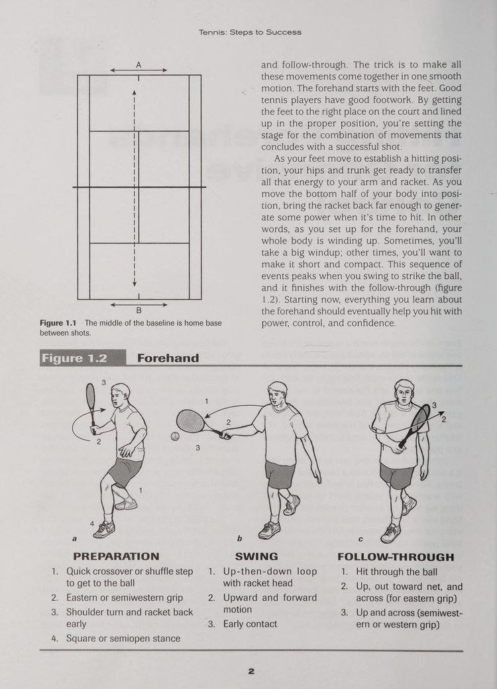
đánh trúng mọi cú đánh. Bạn có thể thử nghiệm cách Cách cầm vợt Continental (hình 2.2), nhưng trừ khi bạn có lực đánh rất mạnh. Khi Cú trái tay (backhand) (backhand) bằng một tay (hình 2.3), những người mới bắt đầu nên đưa cẳng tay ra thì cách cầm vợt sẽ không có tác dụng. Đặt vợt kiểu lục địa trở lại theo một đường ngang so với Mặt sân khi cầm vợt, cổ tay nằm ngay trên đầu vợt ngang bằng với chiều cao của thắt lưng. Hãy nghĩ đến việc rút một thanh kiếm ra khỏi tay cầm. Ngón tay cái phải hỗ trợ nhiều hơn cho túi của bạn. Những người chơi ở trình độ cao hơn có thể cố gắng phát triển một cú giật nhỏ bằng cách đưa vợt về phía sau cao hơn thắt lưng, sau đó thả xuống từ phía sau vì cổ tay không ở phía sau vợt. Mở rộng ngón tay cái của bạn dọc theo mặt sau của báng cầm để phần bên trong nằm vào trong trước khi vung về phía trước.
Enter your scores in table 1.1, and add them to rate your forehand success. If you scored at least 24 out of 50 possible points, go to step 2, the backhand. Table 1.1 Scoring Summary Footwork Drills 1. Grounders _..__ Out of 5 2. One-bounce catch == ourgtS 3. Shuffle-crossover step see OULGLS Stance and Footwork Drill 1. Footwork scramble out of 7 Forward-Swing Drills 1. Toss to forehand aie SOUL OLS 2. Drop-and-hit forehands J One or S Follow-Through Drills 1. Consecutive forehands Sa ONL OE 7 2. Forehand games our or 9
Bước 2: Biến Cú Trái Tay Thành Vũ Khí Sở Trường
Step 2: Turning the Backhand Into a Strength
Hình 2.3 | Trái tay một tay a CHUẨN BỊ SWING THEO QUA 1. Tay cầm phía đông 1. Chuyển trọng lượng về phía trước 1. Ra ngoài 2. Giá đỡ vợt ở cổ 2. Song song hoặc từ thấp đến cao 2. Ngang ngang với đường vung vợt của tay đối diện 3. Lên 3. Vợt lùi sớm 3. Tiếp xúc sớm 4. Xoay vai sớm 5. Thế đứng vuông góc khi thời gian cho phép Ba trong số các lựa chọn thế đứng cho cú thuận tay (forehand) cũng là các lựa chọn cho cú trái tay (backhand) (backhand). Thế đứng khép kín là điều cần thiết trong một số cú đánh, nhưng nó không được khuyến khích làm tư thế lựa chọn. Tư thế nửa mở rất tốt cho việc bao quát sân, nhưng những người chơi sử dụng tư thế này có thể thấy nó hơi thẳng và đưa nó về phía trước theo một đường thẳng. Bạn có thể thích thú với Cú trái tay (backhand) (backhand) tay khi bạn phát triển trò chơi của mình. Người chơi ở trình độ trung bình nên đưa vợt về phía sau cao hơn thắt lưng một chút rồi thả vợt xuống trước khi vung vợt về phía trước và hướng lên trên qua những điểm khó tạo lực. Tư thế lý tưởng cho cú trái tay (backhand) (backhand) là tư thế vuông góc vì nó tốt cho việc chuyển trọng lượng về phía trước. Một thế đứng hoàn toàn cởi mở không phải là một lựa chọn cho cú trái tay (backhand) (backhand) bằng một tay. Mặc dù thế đứng mở rất tốt để che sân, nhưng nó chỉ hữu ích với những người chơi sử dụng trái tay bằng hai tay. Dù bạn chọn tư thế nào, hãy đảm bảo dang rộng chân một cách thoải mái để tạo ra một đường hầm tưởng tượng rộng rãi. Cơ thể xoay vào cú đánh, mặc dù chuyển động quay ở phần thân trên và vai lớn hơn ở hông.
Turning the Backhand Into a Strength
There is no getting around it—the backhand is a challenge. That is why one of the most common bits of advice coaches give their players is, “Play his backhand,” or “Serve to her backhand. The backhand is not a very natural stroke compared to the forehand. For many players, the backhand is weaker. It is a stroke that can be difficult to learn. The backhand requires a certain degree of strength, a grip change, solid footwork, and reliable stroke mechanics. In spite of these negatives, you can develop a backhand that, like your forehand, becomes an offensive weapon instead of a defensive liability. Your goal is for opponents and their coaches to say instead, “Stay away from his backhand,” or “Don’t serve to her backhand. There are more ways to hold and swing the racket on a backhand than on a forehand. If you are new to tennis, you'll have to experiment with two or three grips and swing patterns to find the ones most comfortable for your body and your style of play. If you’ve been playing for a while, it might be time to see if a slight grip change can make your backhand better. Most players are satisfied if they simply develop a backhand that won’t get them into trouble.
Hãy hình dung đường đi của cú vung gậy về phía sau về phía trước như một cây gậy đi bộ được đặt không song song mà thay vào đó hơi nghiêng lên ở phía dưới hướng về phía quả bóng. Một cái móc nhỏ ở phía sau tượng trưng cho động tác Vung vợt ra sau (lấy đà) miniloop; Sau đó cú xoay tiếp tục theo một đường thẳng đi đến quả bóng. Mặt vợt phải là cơ sở hỗ trợ.
As they get better, they begin to realize that the backhand can be just as effective for winning points as the forehand. Once you have a competent backhand, think in terms of building points on both sides, forehand and backhand. Develop winning groundstroke patterns.
Người mới bắt đầu chơi nên vung vợt theo quỹ đạo gần như song song với sân. vuông góc với sân khi tiếp xúc. Giữ cổ tay của bạn cố định và nghiêng. Tập trung vào việc đưa vợt trở lại trong suốt cú đánh. Đầu vợt phải cao hơn cổ tay của bạn nhưng rất thấp. Tiếp theo là vung vợt về phía lưới, ngang qua phía trước cơ thể và hướng lên trong các cú đánh đó. Cố gắng tiếp xúc với quả bóng khi nó ở ngang bằng hoặc ở phía trước bàn chân trước. Mở rộng cánh tay của bạn một cách thoải mái khi bạn swing. Tìm một đơn đặt hàng. Hãy nghĩ đến việc vươn tay ra lưới bằng mu bàn tay, sau đó đưa vợt lên vùng thoải mái và thực hiện cú xoay của bạn xuyên suốt. Kết thúc cú đánh bằng cách chỉ tay về hướng mục tiêu.
Make the other player expect a certain shot placement, then hit it to another part of the court. Use backhand and forehand combinations to make your opponent cover a lot of ground on the other side. When you are in position for a winning forehand, backhand, volley, or any other shot, go for it. Specific suggestions for backhand tactics appear in steps 9 and 10. Several of the footwork and forehand drills in step 1 can also be effective on the backhand side. Step 1 drills that apply equally to backhand practice include grounders, one-bounce catch, shuffle-crossover step, and footwork scramble.
vùng đó một cách nhất quán. BACK HAY HAI TAY Cú trái tay (backhand) (backhand) bằng hai tay trên cán vợt là điều bình thường, nếu không muốn nói là hơn cả trái tay, tuy nhiên, không phải dành cho tất cả mọi người. Những nhược điểm của tùy chọn này bao gồm không được Cú trái tay (backhand) (backhand) bằng một tay. Thuận tiện bằng hai tay để tiếp cận xa để thực hiện các cú đánh rộng, không có khả năng đánh bóng bằng tay (hình 2.4) tăng thêm sức mạnh, giúp kiểm soát cú xoay và cung cấp vị trí vợt tốt hơn giúp điều khiển vợt dễ dàng trong các cú đánh trực tiếp vào người chơi và thiếu sức mạnh để đánh bóng với Xoáy lên. Tay thuận hai tay.
Tips for increasing and decreasing difficulty, checking your success, and scoring your success are the same as those in step 1. ONE-HANDED BACKHAND The traditional grip for the one-handed backhand is the eastern backhand grip. In the eastern backhand grip, a right-handed player’s wrist should be slightly to the left of the top of the racket handle when looking down on the racket, with the racket’s edges perpendicular to the court (figure 2.1a@). A left-handed player’s wrist will be slightly to the right of the top (figure 2.1).
CHUẨN BỊ THEO DÕI SWING 1. Hai cú thuận tay (forehand) phía đông 1. Đường xoay từ thấp đến cao 1. Tay cầm lên, một phía sau phía đông2. Nâng bằng hai chân, nhưng giữ 2. Tay cầm ngang kết hợp với đầu hướng xuống theo kiểu thuận tay hướng đông hoặc kiểu cán Continental hướng đông 3. Thả lỏng cơ thể bằng cách kết hợp tay cầm 4. Tiếp xúc đều với hoặc hơi qua tâm của 2.
Think of your thumb as having a top, bottom, outside, and inside. The inside part of the thumb should be in contact with the back flat bevel of the racket handle. You can align your thumb in different positions along that part of the grip, but it is essential that the inside part be in contact with the racket.
Xoay thân trên nhanh Thế mở, nửa mở hoặc vuông góc Cú trái tay (backhand) bằng hai tay có thể được thực hiện theo Vô số cách kết hợp cách cầm khác liên quan đến nhiều cách. Đơn giản nhất là sử dụng kiểu cầm vợt thuận tay kiểu đông với tay khỏe và thêm cả hai tay đều có thể sử dụng được, nhưng cố gắng đừng để bị nhầm lẫn. Nếu bạn sử dụng một tay để Cú trái tay (backhand) (backhand), tay kia thì cầm vợt thuận tay phía đông (hình hãy chọn cách cầm vợt thuận tay phía đông đầu tiên và đỡ vợt vào cổ vợt bằng tay đối diện. Nếu bạn sử dụng hai tay, hãy thử sử dụng 2,5). Hai bàn tay chạm vào nhau, các ngón dang dọc theo cán vợt. Một số người chơi thích sử dụng cách cầm vợt trái tay kiểu đông với cách cầm vợt trái tay kiểu lục địa hoặc kiểu đông với tay thuận. Tay thứ hai phải mạnh mẽ và tay kia cầm thuận tay kiểu đông, trong khi những người khác sử dụng kiểu cán Continental thì cầm thuận tay kiểu đông hoặc bán tây.
During a point, the thumb’s position may change, but the part of the thumb that touches the grip should not. a Figure 2.1 Eastern backhand grip: (a) right-handed player; (b) left-handed player. You can experiment with the continental grip (igure 2.2), but unless you have a very strong forearm the grip won’t work. With a continental grip, the wrist is directly on top of the racket handle. The thumb has to provide more support from the rear because the wrist is not positioned behind the racket. Extend your thumb along the back of the grip so that the inside part is in Figure 2.2 Continental backhand grip: (a) right-handed player; (6) left-handed player. contact and pushing against the racket handle during the stroke.
cách cầm — kết hợp cách cầm phía đông. Từ điểm xuất phát đó, bạn có thể thử nghiệm những thay đổi nhỏ và tìm ra sự kết hợp phù hợp với mình. Sử dụng tay thuận để nhanh chóng thực hiện bất kỳ thay đổi cách cầm nào cần thiết và thêm lựa chọn cách cầm của bạn bằng tay kia. Trong khi bạn đang cầm vợt đúng cách và xoay vai, bạn nên di chuyển về phía quả bóng và sẵn sàng đặt chân. Đưa vợt trở lại vị trí thấp hơn trước khi đánh bóng lên và về phía trước để đánh bóng với Xoáy lên. Đặt bóng xoáy xuống bằng cách bắt đầu với vợt cao hơn thắt lưng một chút và sử dụng đường xoay từ trên xuống. Xoay hông và vai, thậm chí đến mức quay lưng về phía đối thủ.
If you use a continental grip for the forehand (few players do), you won't have to change grips to hit a backhand. The disadvantage is that some players feel uncomfortable hitting shots this way on either side of the body because the continental grip is halfway between the conventional eastern forehand and backhand grips. Regardless of how you hold the racket, start turning your shoulders and taking the racket back as soon as the ball leaves the other player’s racket. Learn to prepare as you move to hit; don’t wait until the last second.
Hãy sẵn sàng thả lỏng cơ thể để thực hiện cú đánh. Thế đứng khép kín không phải là tư thế tốt để Cú trái tay (backhand) (backhand) bằng hai tay. Tùy thuộc vào hoàn cảnh, vị trí đặt chân của bạn để đánh từ thế đứng vuông góc, thế Tư thế đứng bán mở (để kết hợp giữa sức mạnh và phạm vi bao phủ sân) hoặc thế đứng mở (hình 2.6). Tạo nền tảng hỗ trợ vững chắc bằng cách dang rộng bàn chân của bạn hơn Hình 2.5 Cách cầm vợt trái tay bằng hai tay sử dụng hai cách cầm vợt thuận tay phía đông: (a) người chơi thuận tay phải; (b) người chơi thuận tay trái.
Use your off hand to cradle the racket at the throat or shaft. Leave that hand on the racket throat during the entire backswing and use it to adjust your grip after hitting every shot. When hitting the one-handed backhand (figure 2.3), beginning players should bring the racket back in a line horizontal to the court at about waist height. Think of drawing a sword out of your pocket.
là, (b) nửa hở, vai của bạn. Người chơi sử dụng hai tay để bắt vô-lê với chuyển động từ trên xuống. Cánh tay của bạn sẽ gần cơ thể hơn so với khi Cú trái tay (backhand) (backhand), dựa vào tư thế hoàn toàn mở để duỗi cơ thể vào cú đánh và thực hiện cú trái tay (backhand) (backhand) bằng một tay. Những người chơi Cú trái tay (backhand) (backhand) bằng hai tay hiệu quả sẽ thả lỏng cơ thể để bắt đầu hồi phục cho lượt đánh tiếp theo.
More advanced players can try to develop a small loop by bringing the racket back higher than the waist, then dropping down before swinging forward. ee ee Turning the Backhand Into a Strength Figure 2.3 I One-Handed Backhand a PREPARATION SWING FOLLOW-THROUGH 1. Eastern grip 1. Shift weight forward 1. Out 2. Cradle racket at throat 2. Parallel or low-to-high 2.
Người chơi thuận tay phải đưa chân trái vào cú đánh bắt đầu bằng hông. Một trong những hướng về phía trước hoặc sau cú xoay để đẩy bóng có lợi cho cú trái tay (backhand) (backhand) bằng hai tay là hướng ngược lại. Người chơi thuận tay trái có thể đợi lâu hơn để liên lạc. Liên hệ tương tự với chân phải. không nhất thiết phải xảy ra ở phía trước. Cú đánh tiếp theo sẽ lướt qua phía trước cơ thể bạn. Động tác của cổ tay sẽ quan trọng hơn nếu bạn Cú trái tay (backhand) (backhand) bằng hai tay. Mang theo vợt và thậm chí có thể quấn quanh cổ bạn.
Across with opposite hand swing path 3. Up 3. Racket back early 3. 4. Early shoulder turn 5. Square stance when time permits Make contact early Three of the stance options for the forehand are also options for the backhand. The closed stance is a necessity on some shots, but it is not recommended as the setup of choice. The semiopen stance is good for court coverage, but players using this stance may find it a little difficult to generate power.
Khoan trái tay 1. Tung sang trái tay Bài tập này là một bài tập tốt để sử dụng để có được cảm giác về việc vung vợt sau để tăng độ khó, dù bằng một tay hay hai tay. Đứng sau vạch giao bóng ở giữa ¢ Bắt đầu bài tập từ đường cuối sân (baseline). * Yêu cầu đối tác của bạn tăng tốc độ sân và yêu cầu đối tác của bạn tung 10 set liên tiếp.
The ideal stance for the backhand is the square stance because it is good for transferring weight forward. A completely open stance is not an option for the one-handed backhand. Although the open stance is great for covering the court, it is only useful to players who use a two-handed backhand.
quả bóng sao cho chúng nảy cao ngang thắt lưng về phía trái tay của bạn (hình 2.7). Mục tiêu là đánh một quả trả bóng mà ¢ Để đồng đội của bạn đánh, thay vì ném, rơi vào sân đánh đơn. thiết lập. Để giảm độ khó * Giảm tốc độ thiết lập. * Thực hành thả và Cú trái tay (backhand) (backhand), nhưng nhờ đồng đội thả bóng về phía trái tay của bạn.
Whatever stance you choose, be sure to spread your feet comfortably to establish a wide base of support. Beginning players should swing in a trajectory approximately parallel to the court. Concentrate on taking the racket back in a straight line and bringing it forward in a straight line.
Kiểm tra thành công * Tập trung vào kiểm soát, không phải quyền lực. * Sử dụng cú vung vợt ngang hoặc từ trên xuống. Ghi điểm thành công của bạn 1 đến 3 Cú trái tay (backhand) (backhand) tay thành công = 3 điểm 4 đến 7 Cú trái tay (backhand) (backhand) tay thành công = 5 điểm 7 đến 10 Cú trái tay (backhand) (backhand) tay thành công = 7 điểm Điểm của bạn ___ Hình 2.7 Tung bóng về phía trái tay. Bài tập trái tay 2. Các cú trái tay (backhand) (backhand) liên tiếp Các cú trái tay (backhand) (backhand) liên tiếp là một cách khác để làm quen với việc cầm và vung vợt thay vì đánh từ vạch giao bóng, hãy quay trở lại đường cuối sân (baseline) tương ứng của bạn và đếm số lần Cú trái tay (backhand) (backhand) liên tiếp được trao đổi.
You can get fancy with the backhand as you develop your game. Intermediate players should bring the racket back a little higher than the waist and then drop it down before swinging forward and upward through an imaginary tunnel. The body rotates into the shot, although the rotation is greater in the upper body and shoulders than it is in the hips. Visualize the path of the backswing-forward swing as a walking cane positioned not parallel but instead tilted slightly up at the bottom pointing toward the ball.
một cú trái tay (backhand) (backhand). Đứng trên hoặc ngay phía sau vạch Giao bóng / Cú giao bóng. Thả và đưa bóng nhẹ nhàng về phía trái tay của đối tác (hình 2.8). Đếm biến thể chỉ dành cho đường hẻm, bạn và bạn tập đứng ở hai đầu sân đối diện với số lần Cú trái tay (backhand) (backhand) nhẹ liên tiếp hoặc va chạm, bạn có thể đánh trước khi mắc lỗi.
A little hook at the back represents the miniloop backswing; the swing then continues in a straight line going up to the ball. The racket face ought to be perpendicular to the court on contact. Keep your wrist firmly in place and cocked up throughout the swing. The racket head should
đằng sau con hẻm đôi. Giữ bóng bằng các cú trái tay (backhand) (backhand), cố gắng làm cho tất cả các cú đánh đều nảy lên Bài tập này cũng có một số biến thể thú vị. ở ngõ đối diện. Đối với biến thể trái tay cơ bản liên tiếp, Để tăng độ khó * Bắt đầu bài tập sau vạch giao bóng ba bước. * Bắt đầu bài tập từ đường cuối sân (baseline) (xem biến thể Để giảm độ khó * Đếm số lượng sau mỗi lần bắn trượt thay vì bắt đầu lại.
be higher than your wrist on all but very low shots. Try to make contact with the ball when it is even with or in front of the front foot. Extend your arm comfortably when you swing. Find a comfort zone, and groove your swing through that zone in a consistent manner. Follow through with the swing out toward the net, across the front of your body, and up, in that order.
Kiểm tra thành công * Đặt tay thuận lên cổ vợt. « Xoay vai nhanh chóng. Ghi điểm thành công của bạn 1 đến 3 lần va chạm trái tay liên tiếp = 3 điểm 4 đến 7 lần va chạm trái tay liên tiếp = 5 điểm 8 đến 10 lần va chạm trái tay liên tiếp = 7 điểm Hình 2.8 Những cú trái tay (backhand) (backhand) liên tiếp. Điểm của bạn ___ Bài tập trái tay 3. Trò chơi trái tay Từ đường cuối sân, đưa 10 quả bóng vào cú trái tay (backhand) (backhand) của đồng đội ở đường cuối sân đối diện. Sau khi thiết lập và quay lại, hãy chơi điểm. Mỗi cú đánh Kiểm tra thành công ¢ Di chuyển chân thật nhanh.
Think of reaching out for the net with the back of your hand, then bringing the racket up and across. Finish the stroke by pointing generally in the direction of the target. TWO-HANDED BACKHAND Hitting a backhand with two hands on the handle is as common, if not more so, than the one-handed backhand. The two-handed backhand (figure 2.4) adds power, helps control the swing, and provides a better racket position to hit the ball with topspin. The two-handed backhand, however, is not for everyone.
¢ Chuẩn bị vợt sớm. phải được đánh vào phía trái tay của đối thủ và bằng trái tay của bạn. Bắt đầu lại điểm khi bắn ¢ Hoàn thành quá trình theo dõi của bạn. không được đánh ở vị trí trái tay hợp lý. Hãy ghi điểm thành công của bạn cho người chiến thắng khi bạn có thể. 1 đến 3 điểm giành được = 5 điểm Để tăng độ khó 4 đến 7 điểm giành được = 7 điểm ¢ Thực hiện mọi cú đánh bằng trái tay ngay cả khi bóng đi về phía thuận tay của bạn.
The disadvantages of this option include not being able to reach as far for wide shots, an inability to maneuver the racket easily on shots hit directly at the player, and the lack of strength development in the dominant arm. PREPARATION SWING FOLLOW-THROUGH 1. Two eastern forehand 1. Low-to-high swing path 1. Up grips, one eastern back2. Lift with the legs, but keep 2.
8 đến 10 điểm giành được = 9 điểm Điểm của bạn Để giảm độ khó ¢ Giữ bóng trong cuộc thay vì cố gắng đánh cú ghi điểm trực tiếp.
Across hand grip combined with head down an eastern forehand, or a continental grip-eastern grip combination 2.
Bài tập 4. Bài tập hai phút Bây giờ là lúc kết hợp các cú thuận tay (forehand) (forehand) và trái tay Kiểm tra thành công các cú đánh nền. Bắt đầu cuộc tập trận kéo dài hai phút ở * Đừng quan sát để xem cú đánh của bạn sẽ đi đến đâu. đường cuối sân (baseline). Trả lại những quả bóng được ném ngẫu nhiên về phía bạn ¢ Rút ngắn cú đánh của bạn khi gặp khó khăn. các bên thuận tay và trái tay không ngừng nghỉ trong khoảng thời gian hai phút. Đếm số lần chụp trong * Thực hành thái độ "làm được mọi việc".
Quick upper-body turn Open, semiopen, or square stance swing body 3. Uncoil body with the 4. Contact even with or slightly past center of Turning the Backhand Into a Strength The two-handed backhand can be held in several ways. The simplest is to use an eastern forehand grip with the strong hand and add an eastern forehand grip with the other hand (figure 2.5). The hands touch each other, and the fingers are spread along the racket grip.
phân đoạn 10 lần thử. Bắt đầu đếm lại sau 10 lần bắn, nhưng tiếp tục tập luyện trong hai phút. Ghi điểm thành công của bạn 1 đến 3 lần chạm đất thành công trong bất kỳ chuỗi 10 cú đánh nào = 5 điểm để tăng độ khó * Trả lại mọi cú đánh bằng thuận tay (hoặc cứ sau 4 đến 7 lần chạm đất thành công = 7 điểm khi đánh bằng trái tay), bất kể nó được ném ở đâu.
Some players prefer to use an eastern backhand grip with the strong hand and an eastern forehand grip with the other hand, whereas others use a continental grip—eastern grip combination. a Figure 2.5 Two-handed backhand grip using two eastern forehand grips: (a) right-handed player; (b) lefthanded player.
8 đến 10 lần chạm đất thành công = 9 điểm * Trả mọi cú đánh về phía trái tay của bạn để ghi điểm cho đối tác luyện tập của bạn. * Yêu cầu đối tác của bạn đánh, thay vì ném, thiết lập. Để giảm độ khó * Yêu cầu đối tác của bạn luân phiên ném về phía thuận tay và trái tay của bạn. * Yêu cầu đối tác của bạn ném về cùng một phía với mỗi quả bóng.
Countless other grip combinations involving both hands can be used, but try not to get confused. If you use one hand to hit the backhand, make your first choice an eastern forehand grip and support the racket on the throat with the opposite hand. If you use two hands, try using a continental or eastern backhand grip with the dominant hand.
Bài tập trái tay 5. Trò chơi tiếp đất Để kiểm tra các động tác tiếp đất của bạn trong một tình huống cạnh tranh Kiểm tra thành công, hãy luyện tập với các trò chơi tiếp đất. Từ đường cuối sân, một trong hai người chơi sẽ đưa 10 quả bóng vào chơi ở bất kỳ vị trí nào ở sân sau đối diện. Sau khi thiết lập * Sau mỗi lần bắn, hãy phục hồi đến điểm nằm giữa các góc có thể quay lại.
The second hand should take an eastern or semiwestern forehand grip. From that starting point you can experiment with slight changes and find the combination that is right for you. Use the dominant hand to make whatever grip change is needed quickly, and add your choice of grips with the other hand. While you’re getting the right grip and turning your shoulders, you should be moving toward the ball and getting ready to plant your feet.
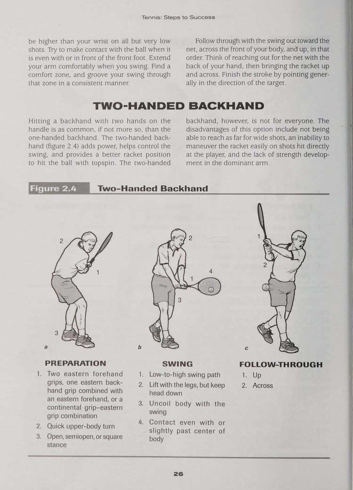
và quay lại, đánh điểm theo các cú thuận tay (forehand) * Tiếp xúc sớm với các cú thuận tay (forehand). và trái tay. Hãy tìm kiếm cú ghi điểm trực tiếp khi bạn có thể. * Tích lũy điểm để rơi vào tình huống chiến thắng. Để tăng độ khó Ghi điểm thành công của bạn * Đổi bốn lần chạm đất liên tiếp trước khi bắt đầu ghi điểm. Thắng 1 đến 3 điểm = 5 điểm Thắng 4 đến 7 điểm = 7 điểm * Chỉ ghi điểm khi buộc đối thủ mắc lỗi.
Bring the racket back into a lower position before driving up and forward to hit the ball with topspin. Put backspin on the ball by starting with the racket a bit higher than the waist and using an up-to-down swing path. Turn your hips and shoulders, even to the point of showing your back to your opponent. Be ready to uncoil your body into the swing.
8 đến 10 điểm giành được = 9 điểm Điểm của bạn ___ Để giảm độ khó * Ghi 2 điểm khi bạn buộc đối thủ mắc lỗi. CÁC CÚT ĐẤT ĐÃ THAY ĐỔI: TRẢ LẠI PHỤC VỤ Nếu đối thủ của bạn đang giao bóng từ sân Điểm 40–40 (deuce), điều đó là cần thiết. Tuy nhiên, nếu quả giao bóng đến phía bên kia, hãy đứng ở phía bên phải của sân khi bạn đối mặt, đổi sang cách cầm vợt trái tay kiểu đông hoặc bằng hai tay.
A closed stance is not a good position for hitting a two-handed backhand. Depending on the circumstances, position your feet to hit from a square stance, a semiopen stance (for a combination of power and court coverage), or an open stance (figure 2.6). Form a strong base of support by spreading your feet wider than are, (b) semiopen,
lưới ở trên hoặc phía sau đường biên một chút, gần đường biên đánh đơn (hình 2.9a). Khi đối thủ giao bóng từ sân quảng cáo, hãy đứng dọc theo Di chuyển đến bóng đồng thời xoay vai và lấy lại vợt sớm. Nếu bạn có thời gian, hãy bước về phía trước và vung vợt theo đường song song với đường cuối sân ở phía bên trái của sân, gần đường biên đánh đơn đối diện (hình 2.95).
your shoulders. Players who use the two-handed backhand rely on the completely open stance to uncoil their bodies into the shot and to get a head start on recovering for the next return. Right-handed players bring the left foot around to the side with or after the swing to push off in the opposite direction.
sân đấu hoặc chuyển động hướng lên trên một chút. Chơi bóng, Giống như khi đánh trả bất kỳ cú đánh nào khác trong quần vợt, ý tưởng là đặt bản thân vào giữa những góc cực cao mà đối thủ của bạn có thể giao bóng. Nếu đối thủ của bạn giao bóng đầu tiên yếu hoặc giao bóng thứ hai với tốc độ chậm hơn, hãy tiến lên một hoặc hai bước trước khi giao bóng. Chống lại sự nhanh chóng không phải là đối thủ của bạn. Tập trung vào việc Trả giao bóng giống như thể bạn đang trả các cú thuận tay (forehand) hoặc trái tay trong một bài tập bơi đất. Ý tưởng là đưa bóng vào cuộc và bắt đầu vào vị trí để giành điểm. Nếu bạn có thể kiểm soát bóng, suy nghĩ Đánh chéo sân (cross-court), cao qua lưới và giao bóng, đặc biệt là trên sân nhanh, hãy chơi sâu hơn để tiến sâu vào phần sân sau của đối phương.
Left-handed players do the same with the right foot. The wrist action is more significant if you hit the backhand with two hands. Bring the racket Backhand Drill 1. through the ball with a down-to-up motion. Your arms will be closer to your body than in a one-handed backhand. Players who hit effective two-handed backhands uncoil their bodies into the shot starting with the hips. One of the advantages of the two-handed backhand is that you can wait longer to make contact. Contact doesn’t have to happen out in front. The followthrough will whip across the front of your body and may even wrap around your neck. Toss to Backhand This drill is a good one to use to get the feel of the backswing, whether one-handed or two-handed.
hãy cho bản thân thêm thời gian để phản ứng. Việc trả lại một cú giao bóng nâng cao thể hiện một sự kết hợp mới của các vấn đề. Bóng đến nhanh hơn Một tay vợt mới bắt đầu sẽ giao bóng yếu, vì vậy hãy Trả giao bóng giống như cách bạn trả lại bất kỳ cú đánh tiếp đất nào khác. Hãy quan sát đối thủ của bạn hơn là một cú đánh nền hoặc một cú giao bóng của người mới bắt đầu, khiến bạn có ít thời gian chuẩn bị hơn. Hãy hết sức cảnh giác để trả Mặt vợt khi người đó thực hiện cú giao bóng. Ngay sau khi bạn xác định xem bóng đang đến phía thuận tay hay trái tay của bạn, hãy điều chỉnh cách cầm vợt. Nếu bạn đã cầm cú giao bóng thuận tay và cú giao bóng đến phía thuận tay, không cần điều chỉnh Đây là một cú giao bóng mạnh. Vào Tư thế sẵn sàng, cầm vợt về phía trước, kiễng chân và nghiêng người về phía trước. Nhiều tay vợt nhảy một bước ngắn ngay khi đối thủ của họ đánh bóng. Chuyển động này khiến cơ thể chúng chuyển động để phản ứng nhanh.
Stand behind the service line in the middle of the court and have your partner toss 10 consecutive balls so they bounce waist-high to your backhand (figure 2.7). The objective is to hit a return that lands inside the singles court. Figure 2.7 Toss to backhand. To Increase Difficulty ¢ Start the drill from the baseline. * Have your partner increase the pace of setups. ¢ Have your partner hit, rather than toss, setups. To Decrease Difficulty * Reduce the pace of setups. * Practice drop-and-hit backhands, but have a partner drop the ball on your backhand side. Success Check * Focus on control, not power. * Use a horizontal or down-to-up swing. Score Your Success 1 to 3 successful backhands = 3 points 4 to 7 successful backhands = 5 points 7 to 10 successful backhands = 7 points
Hình 2.9 Trả giao bóng: (a) từ sân Điểm 40–40 (deuce); (6) từ sân đấu quảng cáo. Bạn có thể không có thời gian để thiết lập một cuộc chiếnCuối cùng, đừng tranh giành quyền lực bằng quyền lực. Nếu đối thủ của bạn giao bóng mạnh, hãy giữ chặt vợt của bạn và chặn cú đánh (trả bóng với tư thế vuông góc rất có chủ ý để chuyển trọng lượng của bạn về phía trước. Xoay vai và rút ngắn thời gian vung vợt về phía sau. Không đủ thời gian cũng có thể không cho phép bạn thực hiện một cú xoay tròn đầy đủ, lặp lại như nhiều động tác vung vợt ngắn). Sử dụng tốc độ được cung cấp bởi cú giao bóng. Nếu bóng đến với tốc độ chậm hơn, người chơi sẽ thực hiện các cú đánh trả lại. Tuy nhiên, nếu có thời gian, bạn có thể quay lại quá trình chuẩn bị bình thường, hãy tiếp tục và nhanh chóng tiến về phía trước và tự mình cung cấp năng lượng.
Turning the Backhand Into a Strength Backhand Drill 2. Consecutive Backhands Consecutive backhands offers another way to get used to holding and swinging the racket for a backhand stroke. Stand on or just behind the service line. Drop and softly put a ball into play to your partner's backhand (figure 2.8). Count the number of consecutive soft-hit backhands, or bumps, you can hit before making an error. This drill has a couple of fun variations as well. For the consecutive baseline backhand variation, Figure 2.8 Consecutive backhands. instead of playing from the service line, move back to your respective baselines and count the number of consecutive backhands exchanged.
chân đối diện. TÓM TẮT THÀNH CÔNG Ở hầu hết các cấp độ kỹ năng, người chơi có thể giữ bóng bằng hai tay và quyết định bóng nào đúng khi chơi bốn hoặc năm lần trong một điểm sẽ giành chiến thắng. Bàn thắng trước mắt cho Cú trái tay (backhand) (backhand) tay dành cho bạn. Tìm một rãnh để bạn thậm chí không phải suy nghĩ về cơ chế thực hiện cú đánh.
For the alleys-only variation, you and your practice partner stand on opposite ends of the court behind the doubles alley. Keep the ball in play with backhands, trying to make all shots bounce in the opposite alley. To Increase Difficulty * Start the drill three steps behind the service line. * Start the drill from the baseline (see variation 1).
là tính nhất quán. Một khi bạn có thể đặt trái tay Hãy liên hệ sớm. Trong tâm trí của bạn, hãy xác định rằng không có đòn đánh nào của đối thủ có thể vượt qua bạn. nơi bạn muốn nó một cách nhất quán, hãy bắt đầu làm việc với nguồn điện. Các phím là bước chân nhanh và trênNhập các số bạn đã ghi cho mỗi vòng quay thân bài tập trong quá trình chuẩn bị và làm mịn trong bảng 2.1. Thêm chúng để đánh giá cú trái tay (backhand) (backhand) của bạn thành công nhưng cú vung mạnh xuyên qua quả bóng.
To Decrease Difficulty * Pick up the count after every missed shot instead of starting over. Success Check * Place the off hand on the racket throat. « Rotate the shoulders quickly. Score Your Success 1 to 3 consecutive backhand bumps = 3 points 4 to 7 consecutive backhand bumps = 5 points 8 to 10 consecutive backhand bumps = 7 points Backhand Drill 3. From the baseline, put 10 balls into play to a partner’s backhand on the opposite baseline.
thôi. Nếu bạn ghi được ít nhất 20 trên 41 điểm có thể. Thử nghiệm với nhiều kiểu đánh bằng một tay và điểm khác nhau, hãy chuyển sang bước 3 để tìm hiểu cách giao bóng. Bảng 2.1. Tóm tắt tính điểm Bài tập trái tay 1. Ném sang trái tay = OUb hoặc 7 2. Các cú trái tay (backhand) (backhand) liên tiếp Souter ¢ 3. Trò chơi trái tay jaa OE OFS 4. Bài tập hai phút ____ trên 9 5. Trận đấu chạm đất một OUtHoặc 9 TỔNG trên 41 Giao bóng để ấn định điểm Mỗi cú đánh trong quần vợt, ngoại trừ một, cú giao bóng, 60% số lần giao bóng đầu tiên trong các hiệp đấu bị ảnh hưởng bởi cách thức, khi nào và ở đâu trò chơi chiến thắng của bạn. Giao bóng xuống trung lộ để tận dụng lưới thấp hơn và giảm Góc mở của cú đánh của đối phương. Tuy nhiên, việc giao bóng hoàn toàn tùy thuộc vào bạn. Một cú giao bóng mạnh (không nhất thiết phải là một cú giao bóng cứng) có nghĩa là bạn có thể ngay lập tức bắt đầu cú Trả giao bóng của đối thủ. Giao bóng về phía trái tay nếu đối thủ của bạn có Cú trái tay (backhand) (backhand) tay yếu.
After the setup and return, play the point out. Every stroke has to be hit to your opponent's backhand and with your backhand. Restart the point when shots are not hit to a reasonable backhand position. Go for winners when you can. To Increase Difficulty ¢ Play every shot with a backhand even if the ball goes to your forehand side. To Decrease Difficulty ¢ Keep the ball in play rather than trying to hit winners. Backhand Games Success Check ¢ Move the feet quickly. ¢ Prepare the racket early. ¢ Complete your follow-through. Score Your Success 1 to 3 points won = 5 points 4 to 7 points won = 7 points 8 to 10 points won = 9 points Your score Drill 4. Two-Minute Drill Now it’s time to combine forehand and backhand groundstrokes. Start the two-minute drill at the baseline.
thiết lập điểm có lợi cho bạn. Một cú giao bóng yếu hoặc không nhất quán có nghĩa là đối thủ của bạn sẽ mất đi Điểm lợi thế (advantage) đó. Chấp nhận công lao cho một ván giao bóng tốt và đừng đổ lỗi cho bất kỳ ai khác nếu bạn giao bóng kém. Trách nhiệm của bạn là phải Giao bóng / Cú giao bóng tốt; làm như vậy là hoàn toàn nằm sâu trong phần Giao bóng của bạn để ngăn đối thủ tấn công cú giao bóng của bạn. Giao bóng rộng sang hai bên để mở sân cho cú đánh tiếp theo của bạn. Để biết chiến thuật trong các tình huống cụ thể và chống lại một số loại đối thủ nhất định, hãy đọc các bước từ 9 đến 11.
Return balls tossed randomly to your forehand and backhand sides nonstop for a period of two minutes. Count the number of in shots in segments of 10 attempts. Restart the count after 10 shots, but continue the drill for two minutes. To Increase Difficulty * Return every shot with a forehand (or every shot with a backhand), regardless of where it’s tossed. * Return every shot to the backhand side of your practice partner. * Have your partner hit, rather than toss, setups. To Decrease Difficulty
Người mới bắt đầu sẽ khó giữ giao bóng hơn vì khả năng kiểm soát. họ chưa có đủ thời gian để phát triển Tầm quan trọng của việc giao bóng được thể hiện qua cụm từ giữ giao bóng và ngắt giao bóng. Bạn phải giữ cú giao bóng - để thắng các trò chơi mà bạn là người chủ - bởi vì bạn đang nhận cú giao bóng thành một công cụ tấn công. Mục tiêu của những người mới bắt đầu học giao bóng là luyện tập về kỹ thuật, sức mạnh và tính nhất quán. Nhưng ở trình độ quần vợt trung cấp và cao cấp, hãy sút phạt vào đối thủ để bắt đầu điểm.
* Have your partner alternately toss to your forehand and backhand. * Have your partner toss to the same side with every ball. Success Check * Don’t watch to see where your shots go. ¢ Shorten your swing when in trouble. * Practice a “get-to-everything” attitude. Score Your Success 1 to 3 successful groundstrokes in any 10-shot sequence = 5 points 4 to 7 successful groundstrokes = 7 points 8 to 10 successful groundstrokes = 9 points Your score
cú giao bóng trở thành viên đạn đầu tiên được bắn ra. Những lời giải thích, minh họa và bài tập sau đây sẽ giúp Giữ mọi cú giao bóng và bạn không thể thua trừ khi trận đấu bước vào giai đoạn tiebreak. Giữ giao bóng mọi lúc và bẻ một quả giao bóng của đối thủ, và bạn phát triển một cú giao bóng, bắt đầu bằng cú giao bóng đấm cho người mới bắt đầu và tiếp tục đến cú giao bóng toàn diện ở mức độ trung cấp và nâng cao để bạn có thể thắng set này.
Turning the Backhand Into a Strength Backhand Drill 5. Groundstroke Games To test your groundstrokes in a competitive situation, drill with groundstroke games. From the baseline, either player puts 10 balls into play anywhere in the opposite backcourt. After the setup and return, play the point out hitting forehands and backhands. Go for winners when you can. To Increase Difficulty
Đối với cả người mới bắt đầu và người chơi trung cấp, chiến lược giao bóng rất đơn giản: Làm mọi thứ có thể để giữ nó. Ít nhất phải được sử dụng ở bất kỳ cấp độ nào của trò chơi. Người chơi ở trình độ trung cấp và cao cấp có thể quyết định bỏ qua phần giao bóng. QUY TRÌNH DỊCH VỤ Những người Giao bóng / Cú giao bóng tốt sẽ thực hiện cùng một quy trình trước mỗi lần Giao bóng / Cú giao bóng. Thói quen này có thể bao gồm việc cú đập bóng smash vài lần, hít một hơi thật sâu, nghịch lý thay, nó lại làm giảm sự lo lắng. Ý tưởng là đạt đến vùng hiệu suất tối ưu. Đây là nơi mà thói quen Giao bóng / Cú giao bóng trước phát huy tác dụng.
* Exchange four consecutive groundstrokes before scoring begins. * Score a point only when you force your opponent into making an error. To Decrease Difficulty * Score 2 points when you force your opponent to make an error. Success Check * After each shot, recover to a point midway between the angles of possible return. * Make contact early on forehands. * Build points to get into a winning situation. Score Your Success 1 to 3 points won = 5 points 4 to 7 points won = 7 points 8 to 10 points won = 9 points ALTERED GROUNDSTROKES: RETURNING THE SERVE
nhìn vào khu vực mục tiêu, định vị bàn chân Bạn có thể đã phát triển một thói quen mà thậm chí bạn không biết. Kết bạn theo một cách nào đó, hoặc tất cả những điều trên. Keith Henschen, Tiến sĩ, giáo sư khoa khoa học thể dục và thể thao tại Đại học Utah, cho biết: “Các thói quen cung cấp điểm neo cho các vận động viên. “Có một số lượng hoặc huấn luyện viên nhất định phải quan sát những gì bạn làm trước mỗi lần giao bóng. Không có gì lạ khi những người chơi thiếu kinh nghiệm lại làm điều gì đó khác biệt mỗi lần.
If your opponent is serving from the deuce court, stand on the right side of the court as you face the net on or slightly behind the baseline, near the singles sideline (figure 2.9a). When your opponent serves from the ad court, stand along the baseline on your court’s left side near the opposite singles sideline (figure 2.95). As in returning any other shot in tennis, the idea is to position yourself in the middle of extreme angles to which your opponent can serve.
Trên thực tế, những người mới bắt đầu đang phát minh lại sự an toàn của bánh xe khi biết điều gì sắp xảy ra. Điều này lặp đi lặp lại. kiến thức giúp vận động viên chuẩn bị cho cuộc thi đấu “Đừng nhầm lẫn thói quen với nghi thức”, cảnh báo theo cách khiến họ cảm thấy an tâm nhất. Henschen. "Các nghi lễ liên quan nhiều hơn đến siêu năng lực. Đối với một số người, thói quen là một cái nạng. Đối với những người khác, nó chỉ giúp họ đến được nơi họ muốn.
If your opponent has a weak first serve or a second serve with less pace, move forward a step or two before the serve. Against a fast serve, especially on a fast court, play deeper to give yourself more time to react. A beginning player will serve weakly, so return the serve just as you would return any other groundstroke. Watch your opponent’s racket face as he or she hits the serve.
Stition (giống như cựu tay vợt bóng chày Wade Boggs của giải đấu lớn, người đã ăn thịt gà trước mỗi trận đấu nhưng đối với tất cả các vận động viên, việc có một thói quen đều đặn trong 15 năm là điều xa xỉ). Các thói quen không dựa trên cảm xúc là một cách tích cực để nâng cao hiệu suất." như những nghi lễ. Nếu bạn bỏ lỡ một phần của thói quen, bạn có thể xếp các thói quen vào loại lâu dài, hãy bù đắp cho nó. Các vận động viên bị nhốt trong ngày thi đấu và trong thời điểm này. Mỗi nghi lễ thông thường cho rằng họ không thể thực hiện tốt nếu nghi lễ của họ có mục đích khác nhau. "Các thói quen dài hạn vẫn chưa được hoàn thành. Các thói quen mang lại sự thoải mái; những kiểu hành vi mà các vận động viên tuân theo trong các nghi lễ có thể gây ra sự khó chịu." Henschen cần ít nhất 5 đến 6 ngày trước một sự kiện,” nhà hiền triết giải thích cho những người chơi quần vợt: “Các thói quen ở cả ba cấp độ Henschen, người đã làm việc với các vận động viên nghiệp dư và chuyên nghiệp. "Nó bao gồm cả việc ngủ, cũng tốt. Hãy làm theo nếu chúng có tác dụng. Nhưng đừng dựa vào các nghi lễ. Sau đó, bạn bắt đầu phụ thuộc vào họ trong việc ăn uống và lịch tập luyện để đảm bảo mọi việc diễn ra tốt đẹp thay vì tin tưởng vào bản thân." theo hướng cân bằng để không có sự kiện nào xảy ra
As soon as you determine whether the ball is coming to your forehand or backhand, adjust grips. If you are already holding a forehand grip and the serve comes to the forehand side, no adjustment Is necessary. If the serve comes to the other side, however, change to either the eastern or twohanded backhand grip. Move to the ball while turning your shoulders and getting your racket back early. If you have time, step forward and swing in a parallel-to-thecourt or slightly upward motion. Play the ball, not your opponent. Concentrate on the service return as if you were returning forehands or backhands in a groundstroke drill. The idea is to put the ball in play and begin getting into a position to win the point. If you can control the ball, think crosscourt, high over the net, and deep into your opponent’s backcourt. Returning an advanced serve presents a new combination of problems. The ball comes faster than a groundstroke or a beginner’s serve, leaving less time to prepare. Be extra alert to return a hard-hit serve. Get into the ready position, racket forward, on your toes, and leaning forward. Many players take a short hop just as their opponent strikes the ball. This movement puts their bodies into motion for a quick reaction.
Bước 3 bắt đầu với cú giao bóng bắt đầu làm gián đoạn cuộc sống của vận động viên. Điều này dễ dàng hơn đối với người mới tập, nhưng những người trong số các bạn là vận động viên chuyên nghiệp ở trình độ trung cấp dễ kiểm soát hơn so với những người chơi có thể bỏ qua phần này và chuyển ngay sang giao bóng fullswing. Dù trình độ của bạn là gì, chúng tôi là những người đầu tiên có những nghĩa vụ quan trọng như nhau, không liên quan đến thể thao." Mục tiêu là thực hiện cú giao bóng của bạn một cách nhất quán trong khi sử dụng kỹ thuật phù hợp. Khi các thói quen trong ngày thi đấu tập trung rõ ràng hơn vào các vấn đề như thời gian thức dậy, khi nào và bạn có thể làm điều đó gần như tự động, tiếp theo là ăn gì, ở đâu vào những thời điểm nhất định trong khi ghi bàn là bạn có thể đặt bóng ở bất cứ đâu trong ngày và những phiền nhiễu tiềm ẩn có thể phát sinh khi muốn bóng đi vào khu vực giao bóng của đối phương.
Figure 2.9 Returning the serve: (a) from the deuce court; (6) from the ad court. You may not have time to set up in a traditional square stance to transfer your weight forward. Turn your shoulders and shorten your backswing. Insufficient time also may not allow you to take a full, looping swing like many players use to return groundstrokes. If you have time, however, go ahead and step forward quickly with the opposite foot. Finally, do not fight power with power. If your opponent serves hard, hold your racket tightly and block the shot (return the ball with a very short swinging motion). Use the pace provided by the serve. If the ball comes at a slower pace, then you can go back to your normal preparation and supply the power yourself. SUCCESS SUMMARY
để có thể tránh được. Đối với những người chơi quần vợt, mục tiêu thứ ba là thực hiện thói quen đánh ngày càng nhiều trong ngày thi đấu hầu như luôn bao gồm một cú giao bóng mạnh và mục tiêu cuối cùng là tập luyện tốt trước khi khởi động trước trận đấu. có thể đánh với nhiều kiểu xoay khác nhau. Một khi bạn có thể Loại thói quen cuối cùng là thực hiện các cú giao bóng ngay lập tức vào sân giao bóng, theo một thói quen cụ thể. Henschen giải thích rằng mục đích của việc thực hiện một loạt các thói quen theo thời điểm là nằm trong phạm vi sân đó, với sức mạnh và độ xoáy, bạn không còn là người mới bắt đầu hay người ở trình độ trung cấp. Đầu tiên, thói quen này làm tăng mức độ kích thích. Bây giờ, bạn là người chơi nâng cao — ít nhất cần có trình độ để thực hiện; thứ hai và gần như khi bạn đưa bóng vào cuộc bằng một cú giao bóng.
At most skill levels, the player who can keep the ball in play four or five times during a point will win. The immediate goal for the backhand is consistency. Once you can put the backhand where you want it consistently, start working on power. The keys are quick footwork and upperbody rotation during preparation and a smooth but strong swing all the way through the ball. Experiment with a variety of one-handed and two-handed grips and decide which one is right for you. Find a groove so you don’t even have to think about the mechanics of hitting the shot. Make contact early. In your mind, determine that nothing your opponent hits can get past you. Enter the numbers you recorded for each drill in table 2.1.
PHỤC VỤ CÚT Đối với cú giao bóng đấm (hình 3.1), cầm vợt Đứng phía sau đường cuối sân ở khoảng 45 với cách cầm vợt thuận tay kiểu đông. Khi góc giao bóng của bạn so với lưới, việc đối mặt với một trong các chuyển động của lưới trở nên trôi chảy hơn, hãy thay đổi trụ cầm vợt của bạn. Nếu bạn thuận tay phải, hãy đặt bên trái của bạn vào một lục địa hoặc lục địa đã được sửa đổi.
Add them to rate your backhand success. If you scored at least 20 out of 41 possible points, move to step 3 to learn the serve. Table 2.1. Scoring Summary Backhand Drills 1. Toss to backhand = OUb or 7 2. Consecutive backhands Souter ¢ 3. Backhand games jaa OE OFS 4. Two-minute drill ____ out of 9 5.
chân về phía trước một góc 45 độ; nếu bạn là
Groundstroke games a OUtOr 9 TOTAL aout of 41
Cú Giao Bóng Uy Lực & Nghệ Thuật Tác Chiến Trên Lưới
Part II: Powerful Serving, Volleys & Half-Volleys
Bước 3: Giao Bóng Thiết Lập Thế Trận Áp Đảo
Step 3: Serving to Set Up Points
Đấm Giao bóng CHUẨN BỊ SWING THEO-QUA 1. Tay cầm thuận tay phía Đông nếu Nghiêng về phía trước le Tiếp tục vung sau cú đánh 2. Đứng quay mặt về phía cột lưới 2. Vươn cao để đánh 2. Ra, ngang, xuống 3. Tay ném mở rộng về phía trước Vợt sau đầu 5. Tung lên và về phía trước
Serving to Set Up Points
Every stroke in tennis except one, the serve, is influenced by how, when, and where your opponent hits the ball.
Sai bước Giao bóng ngắn.
The serve, however, is all up to you.
Sửa Đừng để bóng rơi quá thấp trong quá trình ném.
A strong serve (not necessarily a hard serve) means you can immediately start setting up the point to your advantage.
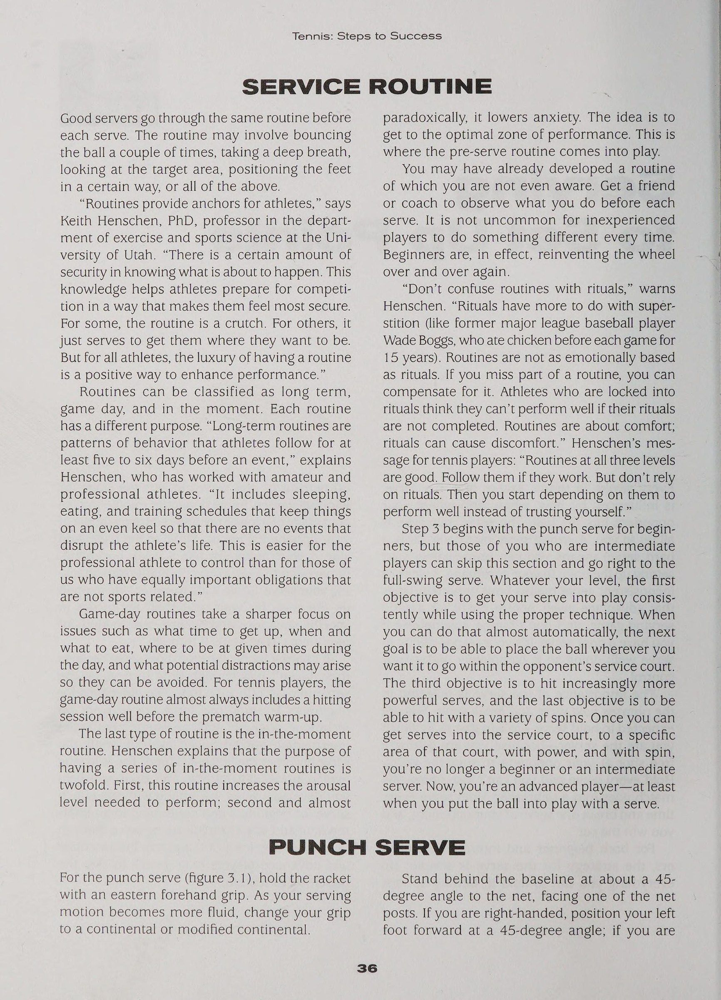
Sai bước Giao bóng thiếu kiểm soát.
A weak or inconsistent serve means your opponent takes that advantage away.
Sửa Tăng số lần lặp lại luyện tập. thuận tay trái, định vị và hướng chân phải về phía trước. Bàn chân cách xa đường biên ngang phải được đặt sao cho một đường tưởng tượng giữa các ngón chân của cả hai bàn chân sẽ chỉ về hướng bạn muốn giao bóng. Theo lý do, việc căn chỉnh chính xác của bàn chân là vấn đề sở thích của mỗi cá nhân.
Accept credit for a good serving game, and don’t blame anyone else if you have a poor serve. It’s your responsibility to serve well; doing so is completely under your control. The importance of the serve is reflected in the phrases hold serve and break serve. You are expected to hold serve—to win games in which you are the server—because you are getting a free shot at your opponent to start the point.
Để ném bóng, hãy giữ bóng ở gốc ngón tay của bạn. Mở rộng cánh tay của bạn, giữ bóng theo hướng bạn muốn đánh và nhấc bóng lên mà không uốn cong nhiều ở khuỷu tay. Như bạn vợt. Hãy cố gắng ném bóng đến cùng một vị trí một cách nhất quán. Bạn có thể không ném bóng một cách hoàn hảo mọi lúc, nhưng việc phát triển một cú ném đáng tin cậy sẽ nâng bóng lên, thả bóng bằng cách mở các ngón tay của bạn. Bóng sẽ bay lên với ít hoặc không có độ xoáy. Hãy bỏ đi một thứ ít có thể sai sót hơn. Quả bóng giao bóng đạt đến đỉnh cao hơn đầu của mũi khoan mục tiêu ném sẽ giúp bạn tạo rãnh cho cú ném.
Hold every serve and you can’t lose unless the match goes into a tiebreaker. Hold serve every time and break one serve of your opponent, and you win the set. For both beginner and intermediate players, the strategy for the serve is simple: Do everything you can to hold it. Getting at least 60 percent of first serves in sets the stage for winning games. Serve down the middle to take advantage of a lower net and reduce the angle of your opponent’s return. Serve to the backhand side if your opponent has a weak backhand. Serve deep to keep your opponent from attacking your serve. Serve wide to either side to open up the court for your next shot.
Chọn vị trí phía sau đường cuối sân. Mở rộng cánh tay và vợt Kiểm tra Thành công của bạn lên và về phía trước để đánh giá chuyển động ¢ Bắt đầu tung ở khớp vai. chiều cao thích hợp. Thực hành 10 lần tung giao bóng liên tiếp (hình 3.2). Hãy để quả bóng rơi xuống sân. ¢ Duỗi các ngón tay bằng động tác tung. Điểm chính xác khi bóng rơi vào trong đường cuối sân.
For tactics in specific situations and against certain kinds of opponents, read steps 9 through 11. It’s harder for beginners to hold serve because they haven’t had enough time to develop the serve into an offensive tool. The objectives for beginners learning the serve are to work on technique, strength, and consistency. But at the intermediate and advanced levels of tennis, the serve becomes the first bullet fired.
° Theo dõi bóng bằng tay và mắt. Để tăng độ khó cho điểm thành công của bạn ¢ Đặt một chiếc khăn nhỏ hoặc mục tiêu khác vài lần ném thành công từ 1 đến 3 lần = 1 inch inch bên trong đường cuối sân (baseline) và chỉ đếm 4 đến 7 lần ném thành công = 3 điểm cho những lần ném trúng mục tiêu. 8 đến 10 lần ném thành công = 5 điểm Để giảm độ khó Điểm của bạn ___ ¢ Sử dụng mục tiêu lớn hơn.
The following explanations, illustrations, and drills will help you develop a serve, beginning with the punch serve for beginners and continuing to an intermediate and advanced full-swing serve that can be used at any level of the game. Intermediate and advanced players may decide to skip the punch-serve section. SERVICE ROUTINE Good servers go through the same routine before each serve.
"-------------------------------@ Hình 3.2 Mục tiêu ném giao bóng. Khoan ném 2. Sẵn sàng, Nhắm, Ném Đứng ở cuối sân của một sân gần tâm Điểm kiểm tra thành công. Cố gắng ném 10 quả bóng liên tiếp theo đường chéo vào sân giao bóng đối diện. * Đặt vai và hông đối diện về phía lưới để bắt đầu chuyển động. Để tăng độ khó *
The routine may involve bouncing the ball a couple of times, taking a deep breath, looking at the target area, positioning the feet in a certain way, or all of the above. “Routines provide anchors for athletes,” says Keith Henschen, PhD, professor in the department of exercise and sports science at the University of Utah.
Bước theo hướng ném với đối thủ* Thay Đổi bên (switch) dọc theo đường biên sau mỗi lần ném. chân trang web. * Đưa tay ném xuống và ra sau, uốn cong * Bắt đầu từ vị trí cách đường biên một đến hai bước. nó, và mở rộng cánh tay lên và về phía trước. * Đạt cao để phát hành. Để giảm độ khó Ghi điểm thành công của bạn * Bắt đầu từ vị trí từ một đến hai bước sau 1 đến 3 lần ném thành công = 1 điểm trên đường giao bóng.
“There is a certain amount of security in knowing what is about to happen. This knowledge helps athletes prepare for competition in a way that makes them feel most secure. For some, the routine is a crutch. For others, it just serves to get them where they want to be. But for all athletes, the luxury of having a routine is a positive way to enhance performance. Routines can be classified as long term, game day, and in the moment.
4 đến 7 lần ném thành công = 3 điểm * Ghi một điểm nếu lần ném tiếp đất ở bất kỳ vị trí nào trên sân đánh đơn đối diện. 8 đến 10 lần ném thành công = 5 điểm Điểm của bạn ___ Đưa vợt ra vị trí sau lưng và chạm mép vợt vào giữa lưng. Nâng đầu vợt lên Cú vung giao bóng tennis không hẳn giống động tác ném nhưng nó có nhiều điểm chung với việc ném bóng chày hoặc bóng mềm.
Each routine has a different purpose. “Long-term routines are patterns of behavior that athletes follow for at least five to six days before an event,” explains Henschen, who has worked with amateur and professional athletes. “It includes sleeping, eating, and training schedules that keep things on an even keel so that there are no events that disrupt the athlete’s life.
vài inch và biến đây thành điểm khởi đầu của bạn. Nếu bạn có thể ném tốt, bạn có thể giao bóng Đu lên khi bóng. Chuyển động giao bóng đi lên tốt. Để đánh giá khả năng ném của bạn, hãy thử trước khi nó tiến về phía trước. Đừng để khuỷu tay của bạn dẫn đầu cú đánh; giữ nó ở mức cao cho đến sau cú đánh. Khi đánh, hãy vươn cao nhất có thể. Cánh tay của bạn và sẵn sàng, nhắm, ném mũi khoan. Sau khi tiếp xúc, tiếp tục đưa vợt về phía lưới càng xa càng tốt. Đi qua phía trước cơ thể của bạn, Kết thúc cú đánh ở phía đối diện với vợt phải được mở rộng hoàn toàn khi tiếp xúc. Với cú đánh, hãy bẻ cổ tay của bạn.
This is easier for the professional athlete to control than for those of us who have equally important obligations that are not sports related. Game-day routines take a sharper focus on issues such as what time to get up, when and what to eat, where to be at given times during the day, and what potential distractions may arise so they can be avoided. For tennis players, the game-day routine almost always includes a hitting session well before the prematch warm-up. The last type of routine is the in-the-moment routine. Henschen explains that the purpose of having a series of in-the-moment routines is twofold. First, this routine increases the arousal level needed to perform; second and almost paradoxically, it lowers anxiety.
mà chuyển động bắt đầu. Bài tập Đấm-Giao bóng 1. Giao bóng theo đường giao bóng Thực hiện toàn bộ động tác giao bóng bằng cách giao bóng Kiểm tra thành công 10 quả bóng liên tiếp vào phần sân giao bóng thích hợp, nhưng giao bóng từ vị trí phía sau đường giao bóng * Bắt đầu với vợt sau đầu hoặc sau. * Quăng cao hơn mức bạn có thể đạt được. thay vì đường cuối sân (baseline).
The idea is to get to the optimal zone of performance. This is where the pre-serve routine comes into play. You may have already developed a routine of which you are not even aware. Get a friend or coach to observe what you do before each serve. It is not uncommon for inexperienced players to do something different every time. Beginners are, in effect, reinventing the wheel over and over again.
* Vươn cao để đánh. Để tăng độ khó * Hãy ngẩng cao đầu. * Di chuyển trở lại vị trí nằm giữa đường giao bóng và đường cuối sân (baseline). Ghi điểm thành công của bạn * Giao bóng năm lần từ sân hai bên, năm lần giao bóng thành công từ 1 đến 3 = 3 điểm từ sân quảng cáo. 4 đến 7 lần giao bóng thành công = 5 điểm Để giảm độ khó 8 đến 10 lần giao bóng thành công = 7 điểm * Tiến lên một vị trí trong giao bóng Điểm của bạn ___ Bài tập đấm-giao bóng 2.
“Don’t confuse routines with rituals,” warns Henschen. “Rituals have more to do with superStition (like former major league baseball player Wade Boggs, who ate chicken before each game for 15 years). Routines are not as emotionally based as rituals. If you miss part of a routine, you can compensate for it. Athletes who are locked into rituals think they can’t perform well if their rituals are not completed. Routines are about comfort; rituals can cause discomfort.
Giao bóng mục tiêu Để thực hành chỉ đạo các cú giao bóng sâu và cụ thể. Để giảm độ khó, đặt một miếng băng ngang qua phần sân giao bóng để chia nó thành hai nửa, trước và sau * Di chuyển băng gần lưới hơn để có vùng mục tiêu lớn hơn. (hình 3.3). Đứng phía sau đường cuối sân gần vạch giữa và giao 10 quả bóng liên tiếp vào khu vực giữa băng và vạch giao bóng.
Henschen’s message for tennis players: “Routines at all three levels are good. Follow them if they work. But don’t rely on rituals. Then you start depending on them to perform well instead of trusting yourself. Step 3 begins with the punch serve for beginners, but those of you who are intermediate players can skip this section and go right to the fullswing serve.
Kiểm tra thành công Để đa dạng, hãy thử các cú giao bóng đường dài. Thay vì ¢ Hãy nhắm sâu. giao bóng từ vị trí cơ bản, giao bóng từ ¢ Búng cổ tay khi tiếp xúc. vị trí hai bước phía sau đường cuối sân (baseline). Một biến thể khác của cuộc tập trận là mục tiêu dạng hộp. Đặt một hộp bìa cứng lớn Điểm thành công của bạn hoặc mục tiêu tương tự sâu và từ 1 đến 3 quả giao bóng vào khu vực mục tiêu = 5 điểm ở giữa sân giao bóng. Đếm số lần giao bóng từ 4 đến 7 vào khu vực mục tiêu = 7 điểm cho lần giao bóng của bạn chạm đích. Di chuyển mục tiêu vào các góc sân giao bóng để thực hiện bài tập 8 đến 10 cú giao bóng vào vùng mục tiêu = 9 điểm thậm chí còn khó hơn (hình 3.4).
Whatever your level, the first objective is to get your serve into play consistently while using the proper technique. When you can do that almost automatically, the next goal is to be able to place the ball wherever you want it to go within the opponent’s service court. The third objective is to hit increasingly more powerful serves, and the last objective is to be able to hit with a variety of spins. Once you can get serves into the service court, to a specific area of that court, with power, and with spin, you’re no longer a beginner or an intermediate server. Now, you’re an advanced player—at least when you put the ball into play with a serve. PUNCH SERVE For the punch serve (figure 3.1), hold the racket with an eastern forehand grip.
Điểm của bạn __ Để tăng độ khó ¢ Dùng băng dính để chia quả giao bóng phía sau thành hai khu vực và giao bóng luân phiên vào từng khu vực mục tiêu. Hình 3.3 Mục tiêu giao bóng. Hình 3.4 Hộp giao bóng mục tiêu. Bài tập Đấm-Giao bóng 3. Trò chơi giao bóng và Trả giao bóng Chơi một trò chơi 10 điểm với một đối tác chỉ sử dụng giao bóng và Trả giao bóng. Người giao bóng kiếm được Kiểm tra thành công * Tập trung vào cú giao bóng của bạn chứ không phải điểm đối thủ của bạn cho mỗi lần giao bóng. Người trả giao bóng (receiver) nhận được một điểm cho mỗi lần trả lại thành công. Người giao bóng có hai cơ hội để đưa bóng vào cuộc. Thay đổi lợi thế của Nent.
As your serving motion becomes more fluid, change your grip to a continental or modified continental. Stand behind the baseline at about a 45degree angle to the net, facing one of the net posts. If you are right-handed, position your left foot forward at a 45-degree angle; if you are Serving to Set Up Points Punch Serve PREPARATION 1. Eastern forehand grip if 2. Stand facing net post 3. Tossing arm extended forward Racket behind head 5. Toss up and forward SWING Lean forward le 2. Reach high to hit FOLLOW-THROUGH Continue swing after hit 2. Out, across, down Misstep The serve is short. Correction Don't let the ball drop too low during the toss.
* Mắc lỗi dài, không ngắn. từ phải sang trái trên đường cuối sân (baseline) sau năm * Phấn đấu đạt được sự nhất quán chứ không phải sức mạnh. Giao bóng / Cú giao bóng. Ghi điểm thành công của bạn để tăng độ khó Người giao bóng kiếm được 3 điểm cho mỗi 1 đến 3 lần thành công* Cho phép người giao bóng chỉ có một cơ hội thực hiện các cú giao bóng không cần thiết, 5 điểm cho mỗi 4 đến 7 quả bóng thành công.
Misstep The serve lacks control. Correction Increase the number of practice repetitions. left-handed, position and angle your right foot forward. The foot away from the baseline should be placed so that an imaginary line between the toes of both feet would point in the direction you want to serve. Within reason, the exact alignment of the feet is a matter of individual preference. To toss the ball, hold the ball at the base of your fingers.
giao bóng và 7 điểm cho mỗi 8 đến 10 lần giao bóng thành công. Để giảm độ khó Người trả giao bóng (receiver) kiếm được 3 điểm cho mỗi 1 đến 3 lần trả lại thành công, 5 điểm cho mỗi 4 đến 7 lần trả lại thành công và 7 điểm cho mỗi 8 đến 10 lần trả lại thành công. * Giao bóng tất cả 10 lần thử từ cùng một vị trí. Điểm số của bạn PHỤC VỤ FULL-SWING bạn đang ở mức 40-30 và sẵn sàng thắng một ván đấu (hoặc người chơi Trung cấp và cao cấp có thể sử dụng cú giao bóng xoay toàn bộ (hình 3.5) để đặt bóng) với một cú giao bóng mạnh, hoặc xuống 30-40 và bắt đầu chơi. Thay vì chỉ bắn vào mục tiêu, hãy tưởng tượng bạn trong các tình huống trong trò chơi có nguy cơ thua trận do giao bóng yếu hoặc lỗi kép.
Extend your arm, holding the ball in the direction you want to hit, and lift the ball without bending very much at the elbow. As you lift, release the ball by opening your fingers. The ball should go up with little or no spin. Toss the ball so it reaches a peak higher than the tip of the Take a position behind the baseline. Extend your arm and racket up and forward to gauge the proper height. Practice 10 consecutive service tosses (figure 3.2). Let the ball drop to the court. Points accure when the ball falls inside the baseline. To Increase Difficulty ¢ Place a small towel or other target a few inches inside the baseline and count only those tosses that hit the target. To Decrease Difficulty ¢ Use a bigger target. Figure 3.2 Service-toss target. racket.
CHUẨN BỊ giao bóng toàn cú đánh 1. Cách Cách cầm vợt Continental 2. Bàn chân ở góc 45 độ so với lưới 3. Tung cao hơn một chút so với đầu vợt mở rộng (tiếp theo) b SWING THEO QUA 1. Chuyển động xuống, lùi, lên và tiến hoàn toàn; 1. Ra, ngang, xuống Một số người chơi nâng cao viết tắt Vung vợt ra sau (lấy đà) 2. Duỗi toàn bộ cơ thể, cánh tay và vợt để đánh 3.
Work on tossing the ball to the same spot consistently. You may not toss the ball perfectly every time, but developing a reliable toss will be one less thing that can go wrong. The servicetoss target drill will help you groove the toss. Success Check ¢ Begin tossing movement in the shoulder joint. ¢ Extend fingers with the toss. ° Follow the ball with your hand and eyes. Score Your Success
Trọng lượng chuyển về phía trước 4. Cổ tay bị gãy và lật ngửa khi tiếp xúc
1 to 3 successful tosses = 1 point 4 to 7 successful tosses = 3 points 8 to 10 successful tosses = 5 points
Sai bước. Cú giao bóng thiếu lực.
Serving to Set Up Points Toss Drill 2.
Chỉnh sửa Bóp (ngập) cổ tay khi tiếp xúc với bóng.
Ready, Aim, Throw
Sai lầm Quả giao bóng đi vào lưới.
Stand at the baseline of one court near the center mark.
Sửa Hãy ngẩng cao đầu khi bạn đánh bóng. Giữ vợt theo kiểu cầm kiểu lục địa, Chuyển động này tạo ra hiệu ứng bàn đạp mặc dù bạn có thể muốn sửa đổi với kiểu đánh hướng đông và thậm chí có thể cung cấp thêm chiều cao và tận dụng cú thuận tay (forehand) để đánh Cú đánh phẳng hơn hoặc cú trái tay (backhand) (backhand) hướng đông để tạo hiệu ứng Xoáy lên. Với nếu bạn kiễng chân lên để đánh.
Attempt to throw 10 consecutive balls diagonally into the opposite service court. To Increase Difficulty * Change positions along the baseline with each throw. * Start from a position one to two steps behind the baseline. To Decrease Difficulty * Start from a position one to two steps behind the service line. * Score a point if the toss lands anywhere in the opposite singles court. Success Check
Cho dù bạn sử dụng cách Cách cầm vợt Continental một bước hay hai bước, cổ tay vẫn ở ngay trên đầu cán vợt khi bạn nhìn xuống nó. Đặt bàn chân của bạn một góc 45 độ để tiếp cận bằng chân sau, nhớ uốn cong đầu gối trong khi chuẩn bị đánh. Một phần của chuyển động không cuộn của cơ thể bao gồm việc làm nổ lưới, trải rộng hơn chiều rộng của vai.
* Place opposite shoulder and hip toward the net to start motion. * Step in the direction of the throw with opposite foot. * Take the throwing arm down and back, bend it, and extend arm up and forward. * Reach high to release. Score Your Success 1 to 3 successful throws = 1 point 4 to 7 successful throws = 3 points 8 to 10 successful throws = 5 points
Xoay người về phía lưới để bạn có thể xoay hoặc duỗi cơ thể vào bóng bằng cú xoay. Góc mà bạn đứng có thể thay đổi một chút từ tư thế Gập gối sang tư thế duỗi đầu gối. Bạn không chỉ biến thành quả bóng mà còn bật lên để giải phóng chuỗi sự kiện bắt đầu từ đôi chân của bạn và tiếp tục thông qua cái búng tay của cổ tay khi bạn thực hiện các độ theo một trong hai hướng, tùy thuộc vào sở thích cá nhân.
Bring the racket to a position behind your back and touch the middle of your back with the edge of your racket. Lift the racket head a few inches and make this your starting point. Swing up at the ball. The serve motion goes up before it goes forward. Don’t let your elbow lead the stroke; keep it high until after the hit. When you hit, reach as high as you can. Your arm and racket should be fully extended when contact is made. With the hit, snap your wrist.
tiếp xúc với bóng. Để vung vợt, hãy bắt đầu với vợt ở phía trước cơ thể, hướng về phía mục tiêu. Khi bạn đưa vợt lên và ra sau lưng, cánh tay của bạn phải bắt đầu uốn cong ở khuỷu tay và di chuyển theo tư thế gãi lưng. Mở rộng cánh tay của bạn hoàn toàn để tiếp xúc với quả bóng. Khi bạn giao bóng, cơ thể bạn phải gần như tạo thành một đường thẳng từ ngón chân đến tay cầm vợt tại thời điểm tiếp bóng. Cao ngang ngực, tay còn lại giữ bóng dựa vào dây vợt. Thả đầu vợt của bạn theo chuyển động con lắc sao cho đầu vợt đi bên cạnh chân bạn. Một số người chơi có kinh nghiệm sửa đổi động tác downswing và Vung vợt ra sau (lấy đà), tạo ra một chuyển động rút gọn. Di chuyển tay bóng hơi hướng xuống trước khi tung đồng thời vợt đi xuống. Một lần nữa, một số người chắc chắn sẽ Bật cổ tay bạn khi tiếp xúc với bóng để tạo ra lực tối đa. Chuyển động búng tay của cổ tay được gọi là quay sấp, trong đó ngón tay cái quay xuống và ra khỏi cơ thể bạn (hình 3.6).
Punch-Serve Drill 1. The swing to serve a tennis ball is not exactly like the throwing motion, but it has many things in common with throwing a baseball or softball. If you can throw well, you can probably serve well. To assess your throwing ability, try the ready, aim, throw drill. After contact, continue to bring the racket forward toward the net as far as it will go. Follow through across the front of your body, ending on the opposite side from which the motion began. Service-Line Serves Put the entire serving motion into action by serving 10 consecutive balls into the proper service court, but serve from a position behind the service line instead of the baseline. To Increase Difficulty * Move back to a position halfway between the service line and the baseline. * Serve five times from the deuce court, five times from the ad court. To Decrease Difficulty * Move forward to a position inside the service line. Success Check * Start with racket behind head or back. * Toss higher than you can reach. * Reach high to hit. * Keep the head up. Score Your Success
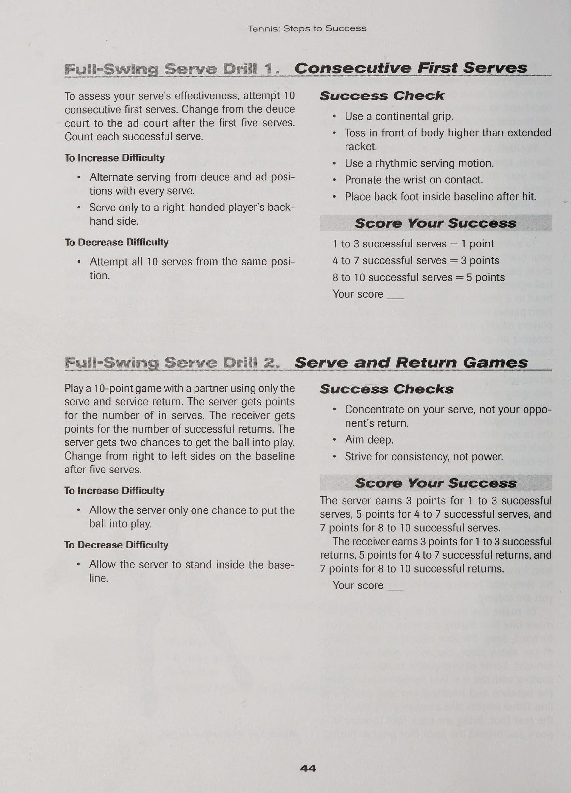
những người chơi ở trình độ cao hơn có thể trì hoãn chuyển động tung hoặc vung để thiết lập chuyển động của riêng mình. Sau khi đánh bóng, tiếp tục Bước chân (footwork) sau về phía trước, chạm xuống theo nhịp một bước, nhưng di chuyển hai tay xuống rồi cùng nhau đưa lên là điểm khởi đầu tốt. Thả tay vợt xuống; sau đó di chuyển nó lên vị trí gãi lưng. Đồng thời, di chuyển vào bên trong đường cuối sân (baseline). Động tác di chuyển của cánh tay và vợt đi qua phía trước cơ thể bạn và Kết thúc cú đánh ở phía đối diện.
1 to 3 successful serves = 3 points 4 to 7 successful serves = 5 points 8 to 10 successful serves = 7 points Punch-Serve Drill 2. Target Serves To practice directing serves deep and to specific spots, place a piece of tape across the service court to divide it into two halves, front and back (figure 3.3). Stand behind the baseline near the center mark and serve 10 consecutive balls into the area between the tape and the service line. For variety, try long-distance serves. Instead of serving from the baseline position, serve from a position two steps behind the baseline.
cánh tay còn lại giơ lên để nhấc bóng để ném. Chuyển động phải có cảm giác nhịp nhàng. Tính thời gian ném sao cho bóng rơi xuống một điểm phía trên đầu bạn và hơi ở phía trước cơ thể bạn đồng thời bạn mở rộng cánh tay vợt của mình để tiếp xúc. Nếu quá thời gian, hãy dừng mọi thứ và bắt đầu lại. Cú ném phải đủ xa trước mặt bạn để buộc bạn phải nghiêng về phía trước và vượt ra ngoài đường cuối sân (baseline) khi bạn đánh. Hãy ngẩng cao đầu và nhìn vào quả bóng trong khi bạn ném.
Another variation of the drill is box targets. Place a large cardboard box or similar target deep and in the middle of the service court. Count the number of times your serve hits the target. Move the targets into the service-court corners to make the drill even more difficult (figure 3.4). To Increase Difficulty ¢ Use tape to divide the back service into two areas, and serve alternately into each target area. Figure 3.3 Target serves. To Decrease Difficulty * Move the tape closer to the net to allow a larger target area.
Để tận dụng tối đa việc chuyển trọng lượng, hãy di chuyển một chân trong khi chuyển động. Khi bạn nghiêng người về phía trước, giữ nguyên bàn chân gần đường cuối sân (baseline) nhất, nhưng Bước chân (footwork) còn lại về phía trước. Một số người chơi thích bước một bước, bắt đầu bằng chân sau cách đường biên vài inch và Kết thúc cú đánh một bước bên trong vạch. Những người chơi khác thực hiện cách tiếp cận hai bước bằng chân sau: Đưa chân sau về phía trước đến điểm ngay sau chân trước trước khi đánh.
Success Check ¢ Aim deep. ¢ Snap the wrist on contact. Score Your Success 1 to 3 serves into the target area = 5 points 4 to 7 serves into the target area = 7 points 8 to 10 serves into the target area = 9 points Your score __ Figure 3.4 Box target serves. Serving to Set Up Points Punch-Serve Drill 3. Serve and Return Games Play a 10-point game with a partner using only the serve and service return. The server earns 1 point for every in serve. The receiver gets a point for every successful return.
Hình 3.6 Cổ tay gãy khi tiếp xúc. rill 1. Liên tiếp các cú giao bóng đầu tiên Để đánh giá hiệu quả cú giao bóng của bạn, hãy thử 10 lần Kiểm tra thành công các cú giao bóng đầu tiên liên tiếp. Chuyển từ sân Điểm 40–40 (deuce) sang sân quảng cáo sau năm lần giao bóng đầu tiên. Đếm từng lần giao bóng thành công. ¢ Sử dụng tay cầm kiểu lục địa. * Tung vợt về phía trước cơ thể cao hơn Mặt vợt dài.
The server gets two chances to get the ball into play. Change from right to left sides on the baseline after five serves. To Increase Difficulty * Allow the server only one chance to put the ball into play. To Decrease Difficulty * Serve all 10 attempts from the same position. Success Check * Concentrate on your serve, not your opponent’s return. * Make mistakes long, not short. * Strive for consistency, not power.
Để tăng độ khó ¢ Sử dụng chuyển động giao bóng nhịp nhàng. ¢ Thay thế việc phân phát từ các vị trí quảng cáo và Điểm 40–40 (deuce) với mỗi lần phân phát. e Xoay cổ tay khi tiếp xúc. ¢ Đặt chân sau vào trong đường biên sau cú đánh. ¢ Chỉ giao bóng về phía trái tay của người chơi thuận tay phải. Ghi điểm thành công của bạn để giảm độ khó 1 đến 3 lần giao bóng thành công = 1 điểm ¢ Thực hiện tất cả 10 lần giao bóng từ cùng một vị trí.
Score Your Success The server earns 3 points for every 1 to 3 successful serves, 5 points for every 4 to 7 successful serves, and 7 points for every 8 to 10 successful serves. The receiver earns 3 points for every 1 to 3 successful returns, 5 points for every 4 to 7 successful returns, and 7 points for every 8 to 10 successful returns. Your score FULL-SWING SERVE Intermediate and advanced players can use the full-swing serve (figure 3.5) to put the ball in play.
4 đến 7 lần giao bóng thành công = 3 điểm 8 đến 10 lần giao bóng thành công = 5 điểm Điểm của bạn ___ Trò chơi giao bóng và Trả giao bóng Chơi một trò chơi 10 điểm với một đối tác chỉ sử dụng giao bóng Kiểm tra thành công và Trả giao bóng. Người giao bóng nhận được điểm * Tập trung vào cú giao bóng của bạn chứ không phải đối thủ của bạn về số lần giao bóng. Người trả giao bóng (receiver) nhận được tiền lãi của Nent.
Rather than just shooting for targets, imagine yourself in game situations in which you are up 40-30 and poised to win a game (or set) with a strong serve, or down 30-40 and in danger of losing a match with a weak serve or double fault. Full-Swing Serve PREPARATION 1. Continental grip 2. Feet at 45-degree angle to net 3. Toss slightly higher than tip of extended racket (continued) SWING FOLLOW-THROUGH 1. Full down, back, up, and forward motion; 1.
điểm cho số lần trả về thành công. ¢ Mục tiêu sâu. người giao bóng có hai cơ hội để đưa bóng vào cuộc. Thay đổi từ bên phải sang bên trái trên đường cuối sân (baseline) * Phấn đấu đạt được sự nhất quán chứ không phải sức mạnh. sau năm lần giao bóng. Ghi điểm thành công của bạn để tăng độ khó Người giao bóng kiếm được 3 điểm cho 1 đến 3 lần giao bóng thành công ¢ Cho phép người giao bóng chỉ có một cơ hội thực hiện cú giao bóng, 5 điểm cho 4 đến 7 lần giao bóng thành công và bóng vào cuộc.
Out, across, down some advanced players abbreviate the backswing 2. Full extension with body, arm, and racket to hit 3. Weight shifts forward 4. Wrist snaps and pronates on contact Misstep The serve lacks power. Correction Snap (pronate) the wrist on contact with the ball. Misstep The serve goes into the net. Correction Keep your head up as you strike the ball. Serving to Set Up Points Hold the racket with a continental grip, although you may want to modify with an eastern forehand to hit the ball flatter or an eastern backhand to create a topspin effect.
7 điểm cho 8 đến 10 lần giao bóng thành công. Người trả giao bóng (receiver) kiếm được 3 điểm cho 1 đến 3 lần trả về thành công Để Giảm độ khó, 5 điểm cho 4 đến 7 lần trả về thành công và ¢ Cho phép người giao bóng đứng bên trong cơ sở7 điểm cho 8 đến 10 lần trả về thành công. Điểm của bạn Bài tập giao bóng toàn vung 3. Giao bóng mục tiêu nâng cao Để thực hành định hướng các cú giao bóng sâu và cụ thể Để tăng các điểm khó, hãy dán một miếng băng ngang qua quả giao bóng * Dùng băng dính để chia sân giao bóng thành ba khu vực mục tiêu (góc thuận tay, sân trái tay để chia thành hai nửa, trước và sau.
With the continental grip, the wrist is directly over the top of the racket handle as you look down on it. Position your feet at a 45-degree angle to the net, spread more than shoulder-width apart. Turn your side to the net so you can rotate, or uncoil, your body into the ball with the swing. The angle at which you stand may vary a few degrees in either direction, depending on individual preference. To swing, begin with your racket in front of your body, pointing toward the target at about chest height with your free hand holding the ball against the racket strings. Drop your racket head in a pendulum motion so that the racket head passes beside your leg.
Đứng phía sau đường cuối sân (baseline) gần điểm giữa, góc và giữa; hình 3.7), giao và giao 10 quả bóng liên tiếp vào khu vực luân phiên vào từng khu vực. giữa băng và đường dây giao bóng. Để giảm độ khó * Di chuyển băng đến gần lưới hơn để có phạm vi mục tiêu lớn hơn. Kiểm tra thành công * Hình dung cú giao bóng của bạn chạm vào khu vực mục tiêu.
Some experienced players modify the downswing and backswing, creating an abbreviated motion. Move the ball hand slightly downward before the toss at the same time the racket goes down. Again, some advanced players may delay the tossing or swinging movement to establish their own rhythm, but moving the hands down together then up together is a good starting point.
+ Duy trì Tốc độ đầu vợt trong suốt chuyển động. Tính điểm Thành công của bạn 1 đến 3 cú giao bóng vào khu vực mục tiêu = 5 điểm 4 đến 7 cú giao bóng vào khu vực mục tiêu = 7 điểm 8 đến 10 cú giao bóng vào khu vực mục tiêu = 9 điểm Điểm của bạn. __. Hình 3.7 Giao bóng mục tiêu nâng cao. CẮT, VÒNG TRƯỢT VÀ NHỮNG PHỤC VỤ PHẲNG cách lưới hai hoặc ba feet. Để đạt được hiệu ứng Xoáy lên, hãy thay đổi cách cầm vợt của bạn từ kiểu cán Continental sang kiểu trái tay kiểu đông.
Drop the racket arm down; then move it up into the back-scratching position. Simultaneously, move the other arm up to lift the ball for the toss. The motion should have a rhythmic feel. Time the toss so that the ball will drop to a point above your head and slightly in front of your body at the same time you extend your racket arm to make contact. If the timing is way off, stop everything and start over. The toss has to be far enough in front of you to force you to lean forward and beyond the baseline as you hit.
Điểm tiếp xúc giữa vợt và bóng thay đổi tùy thuộc vào kiểu xoáy bạn muốn đặt vào bóng. Đối với một cú giao bóng cắt cực mạnh, Cắt và Xoáy lên hoạt động tốt ở các cú giao bóng thứ hai. Tốc độ vợt tương đương hoặc thậm chí nhanh hơn người chơi thuận tay phải sẽ Tung bóng rộng hơn về bên phải so với khi giao bóng thông thường. Các dây vợt đánh bóng sang một bên nhiều hơn (lúc 2:00 hoặc trong lần giao bóng đầu tiên, nhưng góc mà vợt tiếp xúc với bóng sẽ tạo ra độ xoáy, tạo ra góc lớn hơn 3:00 thay vì 1:00, khi tưởng tượng quả bóng như mặt đồng hồ). Hãy nghĩ đến việc giảm bớt sai số trong vợt của bạn và thực hiện một nỗ lực giao Cú đánh xác suất cao hơn.
Keep your head up and look at the ball while you are tossing. To make the most of the weight transfer, move one foot during the motion. As you lean forward, keep the foot closest to the baseline in the same place, but move your other foot forward. Some players prefer to take one step, starting with the rear foot several inches behind the baseline and finishing one step inside the line. Other players take a two-step approach with the rear foot: Bring the back foot forward to a point just behind the front foot prior to hitting. This movement results in a springboard effect and may even supply added height and leverage if you get up on your toes to hit.
Để đánh một cú giao Cú đánh phẳng và cứng, một số người chơi thay đổi từ kiểu cầm vợt lục địa sang kiểu cầm vợt phía đông. mặt xung quanh mép quả bóng. Để truyền tải Xoáy lên, hãy Tung bóng gần như trực tiếp trên không (overhead). Vợt hướng lên trên Thay vì cố gắng đưa Xoáy ngang hoặc Xoáy lên vào bóng, họ định vị cổ tay sao cho Mặt vợt đập thẳng vào bóng ở giữa mặt đồng hồ.
Whether you employ a one-step or two-step approach with the back foot, be sure to bend your knees while preparing to hit. Part of the uncoiling motion of the body includes exploding upward from a knees-flexed to a knees-extended position. Not only are you turning into the ball, you are also springing up to unleash the chain of events that starts with your feet and continues through the snap of the wrist as you make contact with the ball.
sau bóng từ phút 7:00 theo hướng 1:00. Sự tiếp xúc lùi xa hơn so với trong một động tác giao bóng thông thường. Những cú giao bóng Xoáy lên sẽ làm rõ các Dự đoán về một Nghiên cứu giao bóng mạnh mẽ được thực hiện giữa những người chơi ở cấp độ giải đấu tại Trường Y thuộc Đại học Johns Hopkins và được báo cáo trên Tạp chí Y học Thể thao Hoa Kỳ đã xác định một số yếu tố - liên quan đến những cú giao bóng mạnh. Sau đây là bản tóm tắt các phát hiện. Một phát hiện khẳng định tầm quan trọng của hoạt động cổ tay; một cái liên quan đến tuổi tác; và hai liên quan đến chuyển động xoay bên trong, xảy ra - khi cánh tay quay vào trong cơ thể từ khớp vai.
As you bring the racket up and behind your back, your arm should begin to bend at the elbow and move through the back-scratching position. Extend your arm fully to make contact with the ball. When you serve, your body should be almost in a straight line from your toes to your racket hand at the moment of impact. Be sure to snap your wrist on contact with the ball to generate maximum power. The snapping movement of the wrist is called pronation, in which the thumb rotates down and away from your body (figure 3.6). After you hit the ball, continue to move your back foot forward, touching down one step inside the baseline.
¢ Cổ tay càng linh hoạt thì tốc độ càng cao. * Người chơi càng lớn tuổi thì cú giao bóng càng yếu. * Vai càng linh hoạt khi di chuyển cánh tay về phía trước và xoay vào trong thì cú giao bóng càng mạnh. * Lực xoay trong càng lớn thì cú giao bóng càng mạnh. Bài tập giao bóng và chạm đất 1.
The follow-through of the arm and racket crosses in front of your body and finishes down on the opposite side. Figure 3.6 Wrist snap at contact. rill 1. Consecutive First Serves To assess your serve’s effectiveness, attempt 10 consecutive first serves. Change from the deuce court to the ad court after the first five serves.
Không có Bộ quảng cáo Bây giờ bạn có thể thực hiện các cú giao bóng và cú đánh nền, * Bạn bắt đầu giao bóng cho bộ đó. đã đến lúc chơi quần vợt. Chơi một hiệp sử dụng tính điểm không có quảng cáo* Cho phép ba lần thử để thực hiện cú giao bóng. Người chơi đầu tiên giành được 4 điểm sẽ thắng trò chơi. Nếu tỷ số của trận đấu là 3-3, người trả giao bóng (receiver) giao bóng có tùy chọn Kiểm tra thành công để nhận giao bóng từ bên trái * Không được mắc lỗi kép.
Count each successful serve. To Increase Difficulty ¢ Alternate serving from deuce and ad positions with every serve. ¢ Serve only to a right-handed player’s backhand side. To Decrease Difficulty ¢ Attempt all 10 serves from the same position. Success Check ¢ Use a continental grip. * Toss in front of body higher than extended racket. ¢ Use a rhythmic serving motion. e Pronate the wrist on contact. ¢ Place back foot inside baseline after hit. Score Your Success
hoặc bên phải. Hãy cố gắng hết sức có thể nếu bạn phải thực hiện những cú vô-lê. Những cú vô-lê sẽ được đề cập tiếp theo ở bước 4. * Đặt mục tiêu đạt được 60% tỷ lệ giao bóng đầu tiên thành công. Để tăng độ khó Ghi điểm thành công của bạn ¢ Cho phép đối thủ lựa chọn bên phải hoặc thắng 1 đến 2 ván = 1 điểm bên trái trên tất cả 3-3 điểm. Thắng 3 đến 5 ván = 5 điểm * Người giao bóng chỉ nhận được một lần thử để thắng set = 9 điểm giao bóng trong trận.
1 to 3 successful serves = 1 point 4 to 7 successful serves = 3 points 8 to 10 successful serves = 5 points Serve and Return Games Play a 10-point game with a partner using only the serve and service return. The server gets points for the number of in serves. The receiver gets points for the number of successful returns. The server gets two chances to get the ball into play. Change from right to left sides on the baseline after five serves. To Increase Difficulty
Điểm của bạn ___ Để giảm độ khó * Bạn chọn bên phải hoặc bên trái ở cả 3-3 điểm. Bài tập giao bóng và đánh bóng 2. Hiệp thông thường Chơi một hiệp sử dụng cách tính điểm thông thường. Xoay vợt Kiểm tra thành công trong tay để xác định bên và bên đầu * Tập trung vào việc giữ giao bóng. Giao bóng / Cú giao bóng. Đổi đầu sân mỗi khi tổng số ván đấu là số lẻ.
¢ Allow the server only one chance to put the ball into play. To Decrease Difficulty ¢ Allow the server to stand inside the baseline. Ad, Success Checks * Concentrate on your serve, not your opponent’s return. ¢ Aim deep. * Strive for consistency, not power. Score Your Success The server earns 3 points for 1 to 3 successful serves, 5 points for 4 to 7 successful serves, and 7 points for 8 to 10 successful serves.
* Mở rộng hoàn toàn về liên hệ giao bóng. * Chụp cổ tay ở đầu cú vung vợt. Để tăng độ khó * Người giao bóng chỉ được thử một lần trên mỗi giao bóng Ghi điểm Thành công của bạn. Thắng 1 đến 2 ván = 1 điểm Để giảm độ khó Thắng 3 đến 5 ván = 5 điểm * Người giao bóng nhận được ba lần thử trên mỗi giao bóng Thắng bộ = 9 điểm điểm. Điểm số của bạn TÓM TẮT THÀNH CÔNG Các nguyên tắc cơ bản cho cả người mới bắt đầu và người mới bắt đầu. Đối với người mới bắt đầu, tổng số điểm bạn kiếm được trong các lần giao bóng trung bình là tương tự nhau một cách đáng kể. Đặt bàn chân trước một góc 45 độ so với lưới.
The receiver earns 3 points for 1 to 3 successful returns, 5 points for 4 to 7 successful returns, and 7 points for 8 to 10 successful returns. Your score Serving to Set Up Points Full-Swing Serve Drill 3. Advanced Target Serves To practice directing serves deep and to specific spots, place a piece of tape across the service court to divide it into two halves, front and back. Stand behind the baseline near the center mark, and serve 10 consecutive balls into the area between the tape and the service line. Figure 3.7 Advanced target serves.
mỗi bài trong số năm bài tập ở bảng 3.1. Nếu bạn ghi được 16 trên 33 điểm có thể, bạn đã sẵn sàng để Tung cao hơn mức bạn có thể đạt được. Mở rộng các bài tập ở cấp độ trung cấp của bạn. cơ thể, cánh tay và vợt đầy đủ để tiếp xúc với người chơi Trung cấp và cao cấp nên đánh bóng. Để có thêm sức mạnh, hãy tăng tốc độ của đầu vợt. Theo dõi xuyên suốt, nhập số điểm ghi được ở mỗi bài trong số 5 bài tập liệt kê trong bảng 3.2. Khi bạn tính tổng và giảm, theo thứ tự đó.
To Increase Difficulty * Use tape to divide the service court into three target areas (forehand corner, backhand corner, and middle; figure 3.7), and serve alternately into each area. To Decrease Difficulty * Move the tape closer to the net to allow a larger target area. Success Check * Visualize your serve hitting the target area. + Maintain racket-head speed through the motion. Score Your Success 1 to 3 serves into the target area = 5 points 4 to 7 serves into the target area = 7 points 8 to 10 serves into the target area = 9 points Your score. __.
18 trên 39 điểm có thể, tiến tới bước 4, cú vô-lê. Bảng 3.1 Tóm tắt tính điểm: Bài tập ném bóng cho người mới bắt đầu 1. Sateen ném mục tiêu, OUL OES 2. Sẵn sàng, nhắm, ném ae UNL OE D Bài tập đấm-giao bóng 1. Đường giao bóng giao bóng ao OULOI7 2. Mục tiêu giao bóng aa OULOL 3. Giao bóng và trả lại trò chơi < UUEOr 7 TOTAL veut af 33 Bảng 3.2 Tóm tắt tính điểm: Người chơi trung cấp và cao cấp Full-Swing Bài tập giao bóng 1. Giao bóng đầu tiên liên tiếp _ ee bên ngoài trong số 7 2. Giao bóng và trả lại trò chơi tôi cướp isos, 3. Mục tiêu nâng cao giao bóng Bài tập giao bóng và đánh đất 22 VoOunOLS 1. Không có bộ quảng cáo _____ trên 2. Bộ thông thường trên 39 : ba SiN.
SLICE, TOPSPIN, AND FLAT SERVES The point of contact between the racket and the ball varies depending on the kind of spin you want to put on the ball. For an extreme slice serve, a right-handed player will toss the ball wider to the right than on a conventional serve. The racket strings strike the ball more to the side (at 2:00 or 3:00 instead of 1:00, when imagining the ball as the face of a clock). Think of scooping your racket face around the edge of the ball. To impart topspin, toss the ball almost directly overhead. The racket brushes upward behind the ball from 7:00 in the direction of 1:00. Contact is farther back than in a normal serving motion. Topspin serves should clear the net by two or three feet. To achieve a topspin effect, change your grip from a continental to an eastern backhand.
+ id NE rk. Chúng tôi Roget ae + 1s sf ree . ' "t i AS ee iar \aet ad ey g mtn T ví dụ 34} ATK! ne pe Cú vô-lê (volley) để buộc hành động Bây giờ mọi thứ sẽ có nhiều điều thú vị hơn cho phép bạn vào lưới. Hãy tìm sơ hở. Khi đối thủ của bạn đánh thiếu. Mặc dù bạn phải bắt đầu xây dựng trò chơi của mình với cú thuận tay (forehand), trái tay cơ bản, vào sân trước và không có nhiều tốc độ, hãy sẵn sàng thực hiện một cú đánh tiếp cận, di chuyển và giao bóng, sau đó học hỏi làm chủ cú vô-lê sẽ mở ra một cách tiếp cận hoàn toàn mới cho trận đấu. Nếu bạn có một khía cạnh hung hãn trong cá tính của mình, thì cú vô-lê sẽ cho phép bạn thể hiện điều đó. Cú vô-lê đưa bạn vào tư thế vô-lê. Cú đánh tiếp cận là một cú đánh nền để chống lại một cú trả bóng yếu.
Slice and topspin work well on second serves. The racket speed is the same or even faster than on first serves, but the angle at which the racket contacts the ball imparts spin, creating a greater margin of error and a safer service attempt. To hit a flat, hard serve, some players change from the continental grip to an eastern grip. Instead of trying to put sidespin or topspin on the ball, they position the wrist so the face of the racket strikes the ball flush in the middle of the clock face. Predictors of a Powerful Serve Research conducted among tournament-level players at the Johns Hopkins University School — of Medicine and reported in the American Journal of Sports Medicine identified several factors — associated with powerful serves. Following is a summary of the findings. One finding reaffirms the importance of wrist action; one is related to age; and two involve internal rotation, which occurs — when the arm is rotated inward toward the body from the shoulder joint.
Việc tung cú sút tiếp cận của bạn xuống đường này sẽ ghim đối thủ của bạn vào góc, giúp bạn ghi điểm nhanh chóng. Đánh một cú vô-lê cũng là một trạng thái tinh thần cũng như một cú đánh phải thành thạo. Bạn phải thực hiện các cú thuận tay (forehand) (forehand) và trái tay để có được cú vô-lê chiến thắng. Đối với những tay vợt di chuyển tốt ở đường cuối sân, thỉnh thoảng hãy thử thực hiện cú đánh tiếp cận từ giữa. Gửi cách tiếp cận để chơi trò chơi, nhưng trong hầu hết các tình huống, bạn không cần phải thực hiện cú vô-lê. Đánh bóng là một sự lựa chọn - bạn phải muốn đạt được vị trí ở sân trước, nơi bạn có thể tận dụng tình huống và buộc phải hành động. Người chơi cú vô-lê (volley) thích đánh cú vô-lê (volley); những người chơi cơ bản tránh chúng. Tuy nhiên, đối với những người chơi năng nổ, cú vô-lê là một cú sút vào giữa sẽ lấy đi Điểm lợi thế (advantage) về tốc độ của người đánh bóng và làm giảm góc trả bóng của họ.
¢ The more flexible the wrist, the higher the velocity. * The older the player, the weaker the serve. * The greater the flexibility of the shoulder upon moving the arm forward and rotating inward, the more powerful the serve. * The greater the power exerted with internal rotation, the more powerful the serve. Serve and Groundstroke Drill 1. No-Ad Set Now that you can hit serves and groundstrokes, it’s time to play tennis. Play a set using no-ad scoring. The first player to win 4 points wins the game. If the score in a game is 3-3, the receiver has the option of receiving the serve from either the left or right side. Do the best you can if you have to hit volleys. Volleys are covered next in step 4. To Increase Difficulty ¢ Allow your opponent the choice of right or left side on all 3-3 points. * The server gets only one attempt to put the serve in play. To Decrease Difficulty * You choose right or left sides on all 3-3 points. Serve and Groundstroke Drill 2. * You begin serving the set. * Allow three attempts to get the serve in. Success Check
Vị trí trên sân mà cú vô-lê được thực hiện cũng như trình độ chơi của đối thủ đòi hỏi tốc độ và vị trí các cú đánh của bạn phải chính xác hơn. Một cú vô-lê yếu giúp bạn trở thành một phần quan trọng của một cuộc tấn công thành công và mất điểm ở cú đánh tiếp theo. Một cú đánh nhanh và chắc chắn sẽ cho đối thủ của bạn và bất kỳ ai theo dõi biết rằng họ đang đối đầu với một người có thể chơi toàn bộ sân.
* Allow no double faults. * Aim for 60 percent successful first serves. Score Your Success 1 to 2 games won = 1 point 3 to 5 games won = 5 points Win the set = 9 points Regular Set Play a set using conventional scoring. Spin the racket in the hands to determine side and first serve. Change ends of the court every time the total number of games is an odd number. To Increase Difficulty * Server gets only one attempt on each service point.
kế hoạch trò chơi phòng thủ. Bạn sẽ phải đưa ra quyết định trong trận đấu về cách tận dụng tình huống. Cú vô-lê thậm chí còn quan trọng hơn trong đánh đôi, thường là thua. Khả năng bắt vô-lê thường phân hóa ở chỗ thắng và thua nhiều nhất trên lưới. Những người mới bắt đầu từ trình độ trung cấp và trung bình Các đội đánh đôi giỏi cùng nhau lên lưới như những người chơi trình độ cao.
To Decrease Difficulty * Server gets three attempts on each service point. Success Check * Concentrate on holding serve. * Extend fully on service contact. * Snap wrist at top of swing. Score Your Success 1 to 2 games won = 1 point 3 to 5 games won = 5 points Win the set = 9 points Your score Serving to Set Up Points SUCCESS SUMMARY The fundamentals for both beginner and intermediate serves are remarkably similar.
càng sớm càng tốt. Các đội không chơi bóng vô-lê thuận tay và trái tay. Đánh bóng đúng cách không phải là một động tác quá tự nhiên. Sự khác biệt đầu tiên với cú vô-lê là ở động tác Vung vợt ra sau (lấy đà). Khi bạn đã ở gần lưới, không có thời gian để đưa vợt trở lại rất xa. Động tác vung vợt về hai bên trong cú vô-lê (volley) phải là một chuyển động ngắn và hạn chế. Khi bạn nhìn thấy quả bóng sắp tới, hãy đưa vợt của bạn trở lại một điểm không xa hơn một đường tưởng tượng nhiều, thậm chí bằng lưng và song song với lưới. Nếu người quan sát đứng ở phía đối diện với tay cầm vợt của bạn, họ sẽ không thể nhìn thấy vợt của bạn khi bạn thực hiện động tác vung vợt sau (hình 4.1).
Position the front foot at a 45-degree angle to the net. Toss higher than you can reach. Extend your body, arm, and racket fully to make contact with the ball. To get more power, increase the speed of the racket head. Follow through out, across, and down, in that order. For beginners, total the points you earned in each of the five drills in table 3.1. If you scored 16 out of 33 possible points, you’re ready for the intermediate-level drills. Intermediate and advanced players should enter the number of points scored in each of the five drills listed in table 3.2. When you total 18 out of 39 possible points, advance to step 4, the volley. Table 3.1 Scoring Summary: Beginners Toss Drills 1. Service-toss target sateen, OUL OES
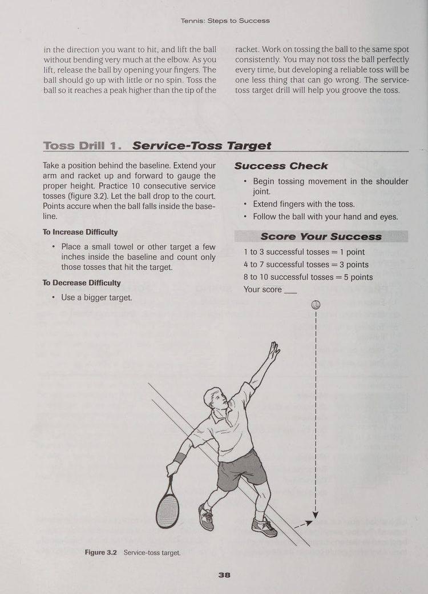
Hình 4.1 Backswing viết tắt. Bài tập đánh lùi. Trở lại Giá đỡ trên tường, lưng dựa vào hàng rào hoặc tường. Một chi tiết sẽ đến sau. Đánh 10 quả bóng theo cách này. Tránh đối tác ném bóng về phía thuận tay của bạn và bạn để vợt chạm vào hàng rào hoặc tường khi bạn trả bóng bằng cú vô-lê (hình 4.2). Đừng lo lắng về việc lấy lại vợt. Hãy phát triển thói quen bước theo cách bạn cầm vợt vào thời điểm này. Đó là về phía trước với chân đối diện để đánh bóng.
2. Ready, aim, throw ae UNL OE D Punch-Serve Drills 1. Service-line serves ao OULOI7 2. Target serves aa OULOL 3. Serve and return games < UUEOr 7 TOTAL veut af 33 Table 3.2 Scoring Summary: Intermediate and Advanced Players Full-Swing Serve Drills 1. Consecutive first serves 2. Serve and return games 3. Advanced target serves Serve and Groundstroke Drills 1. No-ad set 2. Regular set TOTAL _ ee outers out of 7 me rob isos, 22 VoOunOLS AS ee iar \aet ad ey egy g mtn T eg 34} ATK! c ne pe t
Bước 4: Bắt Vô-Lê Trên Lưới Ép Đối Thủ Vào Thế Bí
Step 4: Volleying to Force the Action
Hình 4.2 Trở lại bức tường. Để tăng độ khó Thành công Kiểm tra * Cú vô-lê để đối tác của bạn có thể bắt bóng * Thực hiện động tác vung vợt sau ngắn và gọn. mà không di chuyển. *
Volleying to Force the Action
Now things are going to get a lot more interesting.
Bước về phía trước và tránh xa hàng rào. * Tăng khoảng cách giữa bạn và đối tác Score Your Success. + Yêu cầu đối tác tăng tốc độ từ 1 đến 3 lần va chạm thành công đối với người Tung bóng = Tung bóng. 1 điểm 4 đến 7 lần va chạm thành công với người ném bóng = Để giảm độ khó 2 điểm * Giảm khoảng cách giữa bạn và 8 đến 10 lần va chạm thành công với người ném bóng = 3 điểm đối tác.
Although you have to start building your game with the foundational forehand, backhand, and serve, learning then mastering the volley opens up a whole new approach to the game. If you have an aggressive side to your personality, the volley lets you express it. The volley offers a chance to play from anywhere on the court, to put pressure on your opponent, and to end points quickly.
* Yêu cầu đối tác của bạn chỉ ném về phía thuận tay của bạn hoặc chỉ về phía trái tay của bạn. Điểm số của bạn ___ Người mới bắt đầu sử dụng cách cầm vợt thuận tay phía đông cho các cú thuận tay (forehand) (forehand) (hình 4.3) và cách cầm vợt trái tay phía đông cho các cú trái tay (backhand) (backhand) (hình 4.4). tay nhưng cho phép đủ linh hoạt để thực hiện những điều chỉnh nhỏ, tùy theo tình huống. Vì lý do đó, bạn nên cầm vợt đủ lỏng giữa các cú đánh để thực hiện các thay đổi nhưng đủ chặt để vợt không bị xoắn khi tiếp xúc.
Hitting a volley is as much a state of mind as it is a stroke to be mastered. You have to hit forehand and backhand groundstrokes to play the game, but in most situations you don’t have to hit volleys. Hitting volleys is a choice—you have to want to get to a position in the forecourt where you can take advantage of the situation and force the action. Volleyers like to hit volleys; baseliners avoid them. For aggressive players, however, volleys are an important part of a successful offensive and defensive game plan.
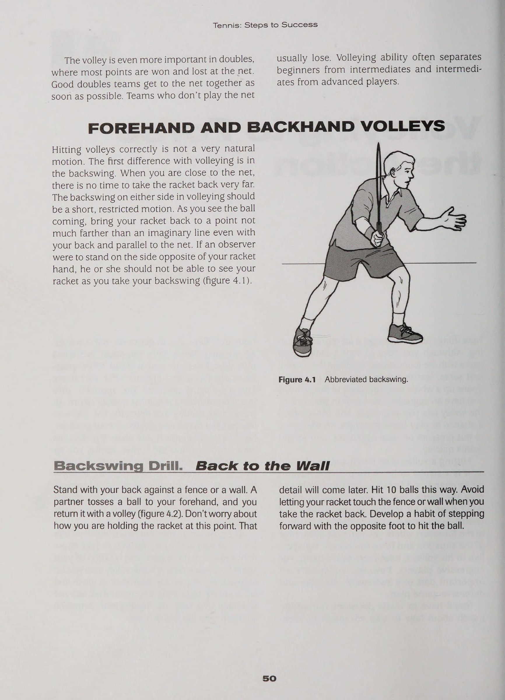
Người chơi ở trình độ trung cấp nên học cách đánh với kiểu cán Continental ở các cú thuận tay (forehand) và phía sau. CHUẨN BỊ SAU ĐÓ QUA Cách cầm thuận tay kiểu phương Đông dành cho người mới bắt đầu; lục địa Tay cầm, cổ tay và cánh tay chắc chắn 'i Đánh xuyên qua bóng, nhưng ít hoặc không theo dõi Đầu vợt ngang tầm mắt dành cho người chơi ở trình độ trung cấp và cao cấp
You’ll have to make decisions during the match about how to take advantage of situations that allow you to get to the net. Look for an opening. When your opponent hits short into your forecourt and without much pace, be ready to hit an approach shot and move into a volleying position. The approach shot is a groundstroke hit against a weak return.
Bước về phía trước (không ngang) Kết thúc với trọng lượng dồn lên bằng chân đối diện Tay tắt bắt đầu ở cổ vợt sau đó di chuyển ra chân trước Xoay nhỏ gọn; Mặt vợt hơi mở Phục hồi cho cú đánh tiếp theo giúp giữ Trọng tâm cơ thể Cánh tay đi từ tư thế congĐầu gối cong; nhẹ nhàng chuyển sang vị trí hơi mở rộng (không hoàn toàn) Trọng lượng dồn về phía trước bằng ngón chân Tiếp xúc sang một bên Xoay vai nhanh và về phía trước
In most cases, hit this shot down the line, more or less parallel to the line closest to your position. Sending your approach shot down this line pins your opponent into the corner, setting you up for a winning volley. Against players who move well on the baseline, occasionally try a downthe-middle approach shot.
Chỉnh sửa Rút ngắn cú đánh ra sau của bạn. cú trái tay (backhand) (backhand) 1. CHUẨN BỊ SWING THEO QUA Cách cầm, cổ tay và cánh tay chắc chắn Cách cầm trái tay kiểu phương Đông Đánh xuyên qua bóng, nhưng có ít hoặc không theo dõi đối với người mới bắt đầu; Đầu vợt lục địa có độ bám ngang tầm mắt dành cho người chơi ở trình độ trung cấp và cao cấp đến .
Sending the approach shot down the middle takes away a baseliner’s speed advantage and reduces his or her angle of return. The position on the court from which volleys are hit as well as the playing level of your opponent require that the pace and location of your shots be more exact. A weak volley sets you up to lose the point on the next shot.
Bước về phía trước (không ngang) bằng chân đối diện Kết thúc với trọng lượng ở phía trước Đặt tay lên cổ vợt Chặn chuyển động bằng cú vung nhỏ gọn; Mặt vợt hơi mở Đầu gối cong; nhẹ nhàng trên đôi chân của bạn Phục hồi cho cú đánh tiếp theo Trọng lượng dồn về phía trước trên ngón chân . Cánh tay chuyển từ vị trí cong sang vị trí hơi cong (không hoàn toàn) Xoay vai nhanh ở vị trí mở rộng Tiếp xúc sang bên và phía trước
A quick and solid stroke tells your opponent and anyone watching that they are dealing with someone who can play the entire court. The volley is even more important in doubles, usually lose. Volleying ability often separates where most points are won and lost at the net. beginners from intermediates and intermediGood doubles teams get to the net together as ates from advanced players. soon as possible.
Sai bước Cú vô-lê trái tay không có lực.
Teams who don’t play the net
Sửa Di chuyển về phía trước khi bạn đánh. Hãy chắc chắn rằng tay cầm của bạn chắc chắn. Trong cách Cách cầm vợt Continental (hình 4.5), cổ tay nằm ngay trên đầu cán vợt. Ngón cái phải hỗ trợ nhiều hơn từ phía sau vì cổ tay không ở phía sau vợt. Mở rộng ngón tay cái của bạn dọc theo mặt sau của báng cầm để phần bên trong của ngón tay cái tiếp xúc.
FOREHAND AND BACKHAND VOLLEYS Hitting volleys correctly is not a very natural motion. The first difference with volleying is in the backswing. When you are close to the net, there is no time to take the racket back very far. The backswing on either side in volleying should be a short, restricted motion.
Trong nhiều cú đánh, không có thời gian để thay đổi qua lại giữa các lần cầm. Việc làm quen với một tay cầm đa năng rất khó và không phải lúc nào cũng phù hợp. Ví dụ, trong một cú vô-lê cao về phía thuận tay, việc thực hiện một chuyển động nhẹ của cổ tay về phía cách cầm vợt thuận tay cũng như việc di chuyển về phía cách cầm vợt trái tay ở phía đối diện. Ưu điểm của cách Cách cầm vợt Continental là giúp tránh phải thay đổi cách cầm vợt từ thuận tay sang trái tay. Điểm bất lợi là một số người chơi không có đủ sức mạnh mà kiểu cầm vợt lục địa yêu cầu hoặc họ không bao giờ có được kiểu Cách cầm vợt Continental. Hình 4.5: (a) người chơi thuận tay phải; (6) thoải mái với nó.
As you see the ball coming, bring your racket back to a point not much farther than an imaginary line even with your back and parallel to the net. If an observer were to stand on the side opposite of your racket hand, he or she should not be able to see your racket as you take your backswing (figure 4.1). Figure 4.1 Abbreviated backswing. Backswing Drill. Back to the Wall Stand with your back against a fence or a wall.
người chơi thuận tay trái. Tay sau lưng Thực hiện một vị trí bắt vô-lê trên lưới với một đối tác Kiểm tra thành công ở đường cuối sân đối diện. Giữ bóng trong cuộc ¢ Đặt cổ tay lên trên cán vợt. 10 lần sử dụng tay cầm lục địa. Giữ * Giữ vợt ở phía trước cơ thể; giữ vợt ở tay kia để tránh sự cám dỗ của việc thay đổi cách cầm vợt và tăng cường sức mạnh khi ngẩng đầu lên.
A detail will come later. Hit 10 balls this way. Avoid partner tosses a ball to your forehand, and you letting your racket touch the fence or wall when you return it with a volley (figure 4.2). Don’t worry about take the racket back. Develop a habit of stepping how you are holding the racket at this point.
cẳng tay. ¢ Giữ chặt khi tiếp xúc. Để tăng độ khó Ghi điểm thành công của bạn * Đồng xu Puta giữa tay cầm vợt của bạn và 1 đến 3 cú vô-lê thành công = 1 điểm ngón tay út. Nếu đồng xu rơi ra trong quá trình chuẩn bị từ 4 đến 7 cú vô-lê thành công = 3 điểm, bạn đã thay đổi cách cầm. 8 đến 10 cú vô-lê thành công = 5 điểm Để giảm độ khó Điểm của bạn.
That forward with the opposite foot to hit the ball. Volleying to Force the Action Figure 4.2 Back to the wall. To Increase Difficulty * Volley so that your partner can catch the ball without moving. * Increase the distance between you and your partner. + Have your partner increase the speed of the tosses.
* Giữ tay còn lại ở bên cạnh để giúp giữ Trọng tâm cơ thể. Tiếp cận lưới trong khi vẫn giữ chân vuông góc với lưới. Hãy coi bước nhảy này là sự cân bằng đòi hỏi một động tác được gọi là bước tách. Chuyển động kiểu nhảy lò cò mà bạn có thể thực hiện trong một bước tách rời sẽ giúp bạn đi sang trái hoặc sang phải như một sân chơi. Không dừng lại hoàn toàn, đối thủ của bạn đã sẵn sàng đánh bóng. Để tiến về phía trước một lần nữa để Cú thuận tay (forehand) (forehand) hoặc thực hành bước tách bóng, hãy bắt đầu từ đường cuối sân. Thực hiện cú vô-lê trái tay. Thời gian là quan trọng. Thực hiện chuyển tiếp về phía lưới. Ngay trước hoặc khi bước tách của bạn chỉ trong tích tắc trước khi bước kia của bạn đến vạch giao bóng, hãy nhảy một bước ngắn để tay vợt đánh bóng.
To Decrease Difficulty * Decrease the distance between you and your partner. * Have your partner toss only to your forehand or only to your backhand. Success Check * Make the backswing short and compact. * Step forward and away from the fence. Score Your Success 1 to 3 successful bumps to the tosser = 1 point 4 to 7 successful bumps to the tosser = 2 points 8 to 10 successful bumps to the tosser = 3 points Beginners use an eastern forehand grip for forehand shots (figure 4.3) and an eastern backhand grip for backhand shots (figure 4.4). Intermediate-level players should learn to hit with a continental grip on forehands and backhands but allow enough flexibility to make slight adjustments, depending on the situation.
Bài tập chân 1. Tấn công Cả hai đối tác thực hành trao đổi các động tác đánh nền Kiểm tra thành công từ đường cuối sân (baseline) tương ứng của họ. Khi một trong hai phần* Đánh ở tuyến dưới hoặc ở giữa đánh một cú đánh yếu rơi vào các cú đánh tiếp cận ngược lại. ở sân trước, đấu thủ của bên đó thực hiện một cú sút tiếp cận dọc đường biên ngang hoặc giữa sân, thực hiện một bước tách đôi trên đường tới lưới và điểm được tính.
For that reason, it’s a good idea to grip the racket loosely enough between shots to make changes but tight enough so the racket doesn’t twist on contact. PREPARATION Eastern forehand grip for beginners; continental grip for intermediate and advanced players Off hand starts on racket throat then moves out to help maintain balance Knees bent; light on your feet Weight forward on toes Quick shoulder turn
* Thực hiện tách bước sau các cú đánh tiếp cận. * Cánh tay và vợt giơ lên; liên lạc trong Đưa bóng vào cuộc 10 lần và ghi điểm. đằng trước. Để tăng độ khó Ghi điểm thành công của bạn * Điểm chỉ giành được bằng cách đánh một cú vô-lê chiến thắng (một cú vô-lê không thể trả lại). 1 đến 3 điểm giành được = 3 điểm 4 đến 7 điểm giành được = 5 điểm Để giảm độ khó 8 đến 10 điểm giành được = 7 điểm * Yêu cầu một đối tác bắt đầu bài tập bằng cách ghi điểm của bạn __ bóng vào cuộc với một thiết lập yếu.
Misstep Contact is late. Correction Shorten your backswing. SWING Firm grip, wrist, and arm Racket head at eye level Step forward (not across) with opposite foot Compact swing; racket face slightly open Arm goes from bent position to slightly (not fully) extended position Make contact to the side and in front FOLLOW-THROUGH ‘i Hit through the ball, but little or no followthrough Finish with weight on front foot Recover for next shot
Bài tập động tác chân 2. Tung bóng để bắt bóng Chọn vị trí cách lưới 8 đến 10 feet, đối mặt Để tăng độ khó với một đối tác ở gần lưới đối diện * Yêu cầu đối tác của bạn ném ngẫu nhiên sang phải hoặc trái. bên. Yêu cầu đối tác của bạn tung nhẹ nhàng 10 quả bóng luân phiên sang phía trái tay và thuận tay của bạn. Di chuyển sang bên về phía lưới và "cú đập bóng smash" để ném trở lại lưới. Quay lại từ đầu * Yêu cầu đối tác của bạn tăng tốc độ tung.
Volleying to Force the Action Backhand Volle 1. PREPARATION Eastern backhand grip for beginners; continental grip for intermediate and advanced players Off hand on racket throat Knees bent; light on your feet Weight forward on toes Quick shoulder turn SWING Firm grip, wrist, and arm Racket head at eye level . Step forward (not across) with opposite foot Blocking motion with compact swing; racket face slightly open .
vị trí sau mỗi lần đánh. Để giảm độ khó Để đa dạng, hãy nhờ một đối tác đứng cách bạn khoảng 20 feet và ném 10 quả bóng cho cả hai bên thuận tay của bạn * Yêu cầu đối tác của bạn chỉ ném về phía thuận tay hoặc phía trái tay của bạn. và các mặt trái tay. Thay vì nắm vợt trên tay cầm, hãy bóp vợt và giữ vào cổ vợt để kiểm soát tốt hơn (hình 4.6). Đừng vung mạnh.
Arm goes from bent position to slightly (not fully) extended position Make contact to the side and in front FOLLOW-THROUGH Hit through the ball, but with little or no followthrough Finish with weight on front foot Recover for next shot Misstep The backhand volley has no power. Correction Move forward as you hit. Be sure your grip is firm.
Chỉ cần cú đập bóng smash trở lại người ném. * Yêu cầu đối tác của bạn đứng gần hơn và ném nhẹ nhàng. Kiểm tra thành công ¢ Đến bóng đúng lúc để đánh nó ở độ cao ngang vai. *
In the continental grip (figure 4.5), the wrist is directly on top of the racket handle, The thumb has to provide more support from the rear because the wrist is not positioned behind the racket.
Bước về phía trước với chân trái ở bên thuận tay (người thuận tay phải); chân phải về phía trước ở phía bên trái tay. Ghi điểm thành công của bạn 1 đến 3 cú vô-lê va chạm thành công = 1 điểm 4 đến 7 cú vô-lê va chạm thành công = 2 điểm 8 đến 10 cú vô-lê va chạm thành công = 3 điểm Điểm của bạn ___ Hình 4.6 Nghẹt thở. Cú xoay trong cú vô-lê giống như một cú đấm, động tác bằng chân, động tác cầm vợt, chuyển động xoay người). Nếu bạn không thể nhận được và tốc độ của quả bóng phụ thuộc nhiều vào chuyển động về phía trước của cơ thể bạn cũng như từ lực do cánh tay bạn cung cấp. Đứng trước gương, hình dung mình đang thực hiện cú vô-lê. Đừng giữ điểm. Chỉ cần sử dụng hoạt động này để luyện tập kỹ thuật bắt vô-lê.
Extend your thumb along the back of the grip so the inside part of the thumb is in contact. On many shots there isn’t time to change back and forth between grips. Getting used to an all-purpose grip is difficult and not always appropriate. For example, on a high volley to the forehand side, making a slight wrist movement toward a forehand grip works, as does a move toward a backhand grip on the opposite side. The advantage of the continental grip is that it prevents having to change grips from the forehand to the backhand. The disadvantage is that some players don’t have the strength the continental grip requires or they just never get comfortable with it. Take a volleying position at the net with a partner at the opposite baseline.
tư thế sẵn sàng (ready position) cách lưới 8 đến 10 feet. Tiến lại gần hơn nữa nếu bạn đang thực hiện cú vô-lê lần đầu tiên. Để cảnh giác hơn, nhiều tay vợt cúi thấp người và bật bóng bằng bàn chân của mình khi họ cho rằng một cú sút sẽ trúng ngay vào cơ thể họ. Nếu cú đánh thấp, đừng đứng thẳng và đặt vợt xuống đúng lúc. Giữ vợt ngay phía trước cơ thể, với cánh tay mở rộng và bàn tay thuận của bạn đặt trên cổ vợt. Vợt phải ở trong một cú đánh bóng. Thay vào đó, hãy uốn cong đầu gối của bạn nhiều hơn nữa ở vị trí chính xác giữa cú thuận tay (forehand) của bạn và hạ thấp tầm mắt của bạn với quả bóng.
Keep the ball in play 10 times using the continental grip. Keep your other hand out of the way to avoid the temptation of changing grips and to build strength in the forearm. To Increase Difficulty * Puta coin between your racket handle and little finger. If the coin falls out during the preparation, you have changed grips. To Decrease Difficulty * Hold your free hand at your side to help maintain balance. Approaching the net while maintaining good balance requires a move called the split step. The split step will help you go either left or right as your opponent gets ready to strike the ball.
và mặt trái tay. Giữ trọng lượng của bạn về phía trước. Trong toàn bộ chuyển động bắt vô-lê, hãy khóa cổ tay của bạn để vợt tạo thành hình sao cho gót chân của bạn hầu như không chạm vào sân, nếu có. Cong đầu gối sâu để có cảm giác cẳng tay tạo thành một góc gần 90 độ. Bắt đầu cú đánh với cánh tay của bạn ở tư thế uốn cong và đánh từ tư thế cúi người. Cúi về phía trước một chút ở thắt lưng. Hãy nhớ rằng, khi bóng đến gần, bạn sẽ mở rộng cánh tay khi tiếp xúc. Không mở rộng cánh tay hoàn toàn; bạn không muốn làm cho bạn muốn ở trong tư thế có thể lao về phía trước.
To practice the split step, start at the baseline. Move forward toward the net. Just before or when you reach the service line, take a short hop to Figure 4.5 Continental grip: (a) right-handed player; (6) left-handed player. Hand Behind the Back Success Check ¢ Place wrist on top of racket handle. * Hold racket in front of body; keep racket head up. ¢ Keep grip tight on contact. Score Your Success 1 to 3 successful volleys = 1 point 4 to 7 successful volleys = 3 points 8 to 10 successful volleys = 5 points Your score. square your feet to the net.
nếu bóng đến bên phải của bạn, hãy tiếp xúc với cánh tay thẳng và cứng. Dẫn đầu cú đánh bằng đầu vợt và tay thuận đẩy chân phải về vị trí xoay. Bằng chân trái, bước về phía trước theo hướng bạn muốn đánh (hình 4.35, đồng thời hướng về phía trước. Xoay về phía trước từ vai, không phải cổ tay hoặc khuỷu tay.
Think of this hop as a hopscotch-type movement you might do ona playground. Without coming to a complete stop, move forward again to hit either a forehand or backhand volley. Timing is important. Execute your split step just a split-second before the other player strikes the ball.
cú đánh cú vô-lê (volley) thuận tay, trang 52). Tập trung vào việc di chuyển về phía trước, không sang một bên. Nếu bóng đến Hãy tiếp xúc tốt ở phía trước cơ thể bạn. Tấn công sang bên trái, xoay người bằng chân trái và giẫm bóng trước khi nó tấn công bạn. về phía trước vào bóng bằng chân phải (hình Nếu bạn đã bước về phía trước, trọng lượng của bạn là 4,4b, cú đánh vô-lê trái tay, trang 53). Nếu nên ở chân gần lưới nhất. Quả bóng ném thẳng vào bạn, trượt sang một bên gần lưới nhất và hơi hướng xuống.
Volleying to Force the Action Footwork Drill 1. Attack Both practice partners exchange groundstrokes from their respective baselines. When either partner hits a weak shot that falls into the opposite forecourt, the player on that side hits an approach shot down the line or down the middle, takes a split step on the way to the net, and the point is on. Put the ball into play 10 times and keep score. To Increase Difficulty * Points are won only by hitting a winning volley (one that cannot be returned). To Decrease Difficulty
Hướng cú vô-lê của bạn sâu vào phần sân sau hoặc đường đi của bóng bằng cách đẩy bóng bằng một chân và bước một góc về phía lưới với góc để kéo tay vợt kia ra khỏi sân. khác. Những cú đánh trực tiếp như thế này sẽ dễ đánh hơn. Sử dụng một cú đánh theo hướng ngắn theo hướng bạn muốn đánh, nhưng hãy phục hồi nhanh chóng cho lần đánh tiếp theo.
* Have one partner start the drill by putting the ball in play with a weak setup. Success Check * Hit down-the-line or down-the-middle approach shots. * Take a split step after approach shots. * Arms and racket are up; make contact in front. Score Your Success 1 to 3 points won = 3 points 4 to 7 points won = 5 points 8 to 10 points won = 7 points Your score __
với Cú trái tay (backhand) (backhand) tay hơn là cú thuận tay (forehand). Hãy quan sát bản thân thực hiện các cú vô-lê thuận tay và trái tay trong gương. Hãy nhớ nhìn Hit qua bóng; đừng làm chậm cú swing của bạn trước khi thực hiện tác động. Kết thúc cú đánh nghiêng theo một thành phần của cú vung tại một thời điểm (ví dụ: về phía trước với trọng lượng của bạn dồn lên bàn chân trước. CÁC BÓNG CHUYỀN THẤP, RỘNG VÀ CAO Góc của vợt trong cú vô-lê thấp (hình 4.7) sẽ mở vì bạn đang uốn cong ở đầu gối thay vì ở thắt lưng. Nếu cú vô-lê thấp nghiêng quá xa, bạn sẽ bật bóng lên không trung.
Footwork Drill 2. Toss to Volley Take a position 8 to 10 feet from the net, facing a partner who is close to the net on the opposite side. Have your partner soft toss 10 balls alternately to your backhand and forehand sides. Move laterally toward the net and “bump volley” the tosses back across the net. Return to the starting position after every hit. For variety, have a partner stand about 20 feet from you and toss 10 balls to both your forehand and backhand sides. Instead of gripping the racket on the handle, choke up and hold it on the throat for more control (figure 4.6).
Khi bạn vô-lê lên, bạn cho phép đối thủ của bạn ở vị trí để đánh cú ghi điểm trực tiếp ở lượt về. Ngay cả khi bạn sử dụng kỹ thuật hoàn hảo, cú vô-lê thấp về cơ bản vẫn là một cú đánh phòng thủ. Thật khó để giành chiến thắng từ vị trí này. Đối với những cú vô-lê thấp, hãy nhắm sâu và dọc theo đường biên hoặc sâu và xuống giữa. Khi ở gần lưới, hãy tập sử dụng xoáy xuống để thực hiện cú vô-lê thả hoặc không xoáy để thực hiện cú vô-lê dừng. Hạ thấp xuống đất bằng cách uốn cong đầu gối của bạn. Hình trải rộng Hình 4.7 Mặt vợt mở ở những cú vô-lê thấp.
Do not swing hard. Just bump the ball back to the tosser. Figure 4.6 Choke up. To Increase Difficulty * Have your partner toss either right or left randomly. * Have your partner increase the pace of the toss. To Decrease Difficulty * Have your partner toss only to your forehand side or your backhand side. * Have your partner stand closer and toss softly. Success Check ¢ Get to the ball in time to hit it at shoulder height. * Step forward with the left foot on forehand side (righthanders); right foot forward on backhand side.
bàn chân của bạn để thiết lập trọng tâm thấp và bạn đang di chuyển song song với lưới, rất khó để giữ Trọng tâm cơ thể tốt. để tạo ra bất kỳ sức mạnh nào vì trọng lượng của bạn là Một cú vô-lê cao gần lưới là điều mà mọi vận động viên vô-lê đều mong muốn. Kiểu vô-lê này là cách di chuyển sang một bên chứ không phải tiến về phía trước. Trong hầu hết các trường hợp, cánh tay của bạn phải làm nhiều việc hơn để đạt được điểm Kết thúc cú đánh bằng những cú đánh góc cạnh, sắc nét. Nếu bạn thiếu chuyển động cơ thể về phía trước. Sử dụng một cú xoay người nhỏ gọn từ vai và dẫn đầu từ bên trong hộp giao bóng và đối thủ của bạn sẽ đánh một cú trả bóng phù hợp với mô tả, hãy thực hiện nó. Xoay vai sớm và Bước chân (footwork) nhanh, đỉnh đầu vợt thay vì cổ tay.
Score Your Success 1 to 3 successful bump volleys = 1 point 4 to 7 successful bump volleys = 2 points 8 to 10 successful bump volleys = 3 points The swing in the volley is more of a punch, and the pace on the ball comes as much from your body’s forward movement as it does from the power provided by your arm. Stand in the ready position 8 to 10 feet from the net. Move in even closer if you are hitting volleys for the first time. Keep the racket directly in front of your body, with your arms extended and your off hand on the racket throat. The racket should be in a position exactly halfway between your forehand and backhand sides. Keep your weight forward, so that your heels barely touch the court, if at all.
Quan sát Mặt vợt của đối thủ để dự đoán bóng sẽ lao về phía bóng. Sử dụng một người vừa phải để vỗ về hướng bắn của mình. Cố gắng thực hiện động tác Vung vợt ra sau (lấy đà) ngắn và theo sau một đoạn ngắn. Đi nghiêng về phía lưới khi có thể. Sử dụng vai của bạn để di chuyển vợt về phía trước khi bạn chạm tới. Hãy cân nhắc việc quay trở lại bằng một cú vô-lê Đánh chéo sân (cross-court) về phía đối diện nơi bạn là người chiến thắng vào một góc trống của sân và nhanh chóng phục hồi để đề phòng cú đánh tiếp theo của đối thủ.
Take a deep bend in the knees to get the feeling of hitting from a crouch. Bend forward at the waist slightly. Remember, as the ball approaches, you want to be in a position to spring forward. f the ball comes to your right side, use your right foot to pivot. With your left foot, step forward in the direction you want to hit (figure 4.35, the forehand volley swing, page 52). Concentrate on moving forward, not to the side. If the ball comes to your left side, pivot on the left foot, and step forward and into the ball with the right foot (figure 4.4b, the backhand volley swing, page 53).
Cách duy nhất để đánh một cú vô-lê rộng hiệu quả. Hãy đứng vững và hồi phục nhanh chóng để bảo vệ phần sân mà bạn đã bỏ ngỏ. là di chuyển nhanh ngay khi bạn đoán trước được hướng của quả bóng hoặc nhìn thấy quả bóng đang lao tới. Nếu tập cú vô-lê (volley) 1. Các cú vô-lê liên tiếp Giữ bóng trong cuộc bằng cách đánh 10 quả vô-lê liên tiếp vào đối tác thực hiện các cú đánh nền từ đường cuối sân. Cuộc tập trận này có thể khó khăn nhưng vẫn thú vị.
If the ball comes directly at you, slide to one side of the path of the ball by pushing off with one foot and stepping at an angle toward the net with the other. Direct shots such as these are easier to hit with a backhand than a forehand. Watch yourself swing through forehand and backhand volleys in a mirror. Remember to look for one component of the swing at a time (e.g., footwork, grip, swinging motion).
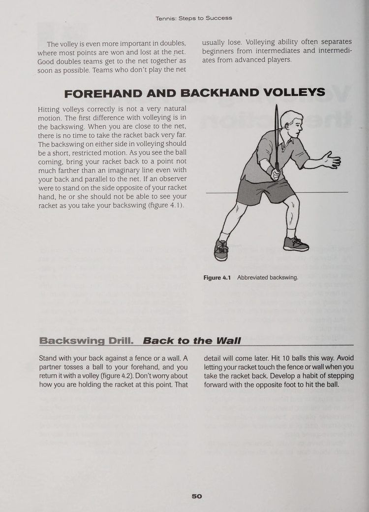
Để tăng độ khó * Cú vô-lê (volley) với hai người chơi trên đường cuối sân, xen kẽ các cú vô-lê cho mỗi người. Luyện tập những cú vô-lê liên tiếp giúp bạn làm quen với những pha trao đổi nhanh. Bài tập sẽ hoạt động tốt hơn nếu bạn * Yêu cầu tay vợt cuối sân di chuyển vào bên trong đường giao bóng và trao đổi các cú vô-lê liên tiếp (cả hai tay vợt đều thực hiện cú vô-lê, đối tác hình là tay vợt trung cấp hoặc cao cấp.
Ifyou can’t get to a mirror, visualize yourself hitting volleys. Do not keep score. Just use the activity to practice volley technique. To be extra alert, many players crouch low and bounce on the balls of their feet when they expect a shot to be hit right at therm. If the shot comes low, don’t stand straight up and put the racket down to hit the ball.
Tập đánh cú vô-lê sâu vào sân sau. Đừng cố gắng giành điểm trong bài tập này. Chỉ cần làm quen với ý tưởng rằng bạn không chỉ có thể chơi trên lưới mà còn có thể đặt bóng ở nơi bạn muốn để giảm độ khó * Lùi lại một hoặc hai bước để tự mình đi. Sau đó, bạn có thể bắt đầu đánh bóng với tốc độ nhanh hơn, có nhiều thời gian hơn để phản ứng.
Instead, bend your knees even more and get down to eye level with the ball. Throughout the entire volley motion, keep your wrist locked so that the racket forms a near 90-degree angle with your forearm. Start the stroke with your arm in a bent position, and extend the arm as you make contact.
chiều sâu và mục đích. * Yêu cầu đối tác của bạn chỉ Cú thuận tay (forehand) (forehand) hoặc chỉ Cú trái tay (backhand) (backhand) để bạn không phải thay đổi cách cầm vợt. Kiểm tra thành công + Quan sát Mặt vợt của đối tác khi tiếp bóng. * Giữ đôi chân nhẹ nhàng. * Phục hồi nhanh chóng sau mỗi lần bắn. Ghi điểm thành công của bạn 1 đến 3 cú vô-lê liên tiếp = 3 điểm 4 đến 7 cú vô-lê liên tiếp = 5 điểm 8 đến 10 cú vô-lê liên tiếp = 7 điểm Điểm của bạn ___ Hình 4.8 Những cú vô-lê liên tiếp.
Do not extend the arm fully; you don’t want to make contact with a straight, stiff arm. Lead the stroke with the racket head and dominant hand pushing forward at the same time. Swing forward from your shoulder, not your wrist or elbow. Make contact well in front of your body. Attack the ball before it attacks you. If you have stepped forward, your weight should be on the foot closest to the net. The shoulder closest to the net should be down slightly.
Bài tập cú vô-lê (volley) 2. Bài tập cú vô-lê (volley) mục tiêu _ Bài tập cú vô-lê (volley) mục tiêu được thiết kế để giúp bạn Tăng độ khó, hướng các quả cú vô-lê (volley) đến các khu vực cụ thể trên sân đối thủ. Sử dụng hộp các tông hoặc rổ bóng làm mục tiêu, bắt đầu với hộp ở phía sau sâu¢ Đánh luân phiên các cú vô-lê thuận tay và trái tay mà không thay đổi cách cầm vợt.
Direct your volleys deep into the backcourt or at an angle to pull the other player off the court. Use a short follow-through in the direction you want to hit, but recover quickly for the next shot. Hit through the ball; do not slow your swing down before making impact. Finish the shot leaning forward with your weight on the front foot.
¢ Di chuyển mục tiêu đến các khu vực khác nhau. góc thuận tay của sân, sau đó là góc sâu bên trái tay, rồi ngắn và rộng về phía bên phải, cuối cùng là ngắn và rộng về phía bên trái (hình 4.9). Đối tác của bạn thả và đánh 10 quả bóng để giúp bạn giảm độ khó ¢ Yêu cầu đối tác của bạn chỉ Cú thuận tay (forehand) (forehand) hoặc chỉ Cú trái tay (backhand) (backhand).
LOW, WIDE, AND HIGH VOLLEYS The angle of the racket on a low volley (figure 4.7) will be open because you are bending at the knees instead of at the waist. If the low volley is slanted too far, you’ll pop the ball up into the air. When you volley up, you allow your opponent to be in a position to hit a winner on the return.
với những cú vô-lê về phía từng ô mục tiêu. ¢ Sử dụng các khu vực của sân làm mục tiêu thay vì các ô. Kiểm tra thành công * Tay và vợt cùng nhau tiến về phía trước. * Mở Mặt vợt ra một chút. ¢ Nhắm vào một khu vực; chừa chỗ cho sai sót. Ghi điểm thành công của bạn | Bắn trúng 1 đến 3 mục tiêu = 5 điểm Bắn trúng 4 đến 7 mục tiêu = 10 điểm 8 đến 10 mục tiêu bắn trúng = 15 điểm Điểm của bạn __ Hình 4.9 Cú vô-lê mục tiêu.
Even if you use perfect technique, the low volley is essentially a defensive shot. It’s hard to hit winners from this position. For low volleys, aim deep and down the line or deep and down the middle. When close to the net, practice using underspin to hit a drop volley or no spin to hit a stop volley. Get low to the ground by bending your knees. Spread Figure 4.7 Open racket face on low volleys.
Bài tập cú vô-lê (volley) 3. Bảo vệ sân của bạn Đứng trong một sân giao bóng cách 8 đến 10 feet * Đếm các cú vô-lê chạm vào lưới đơn hoặc lưới và bảo vệ khu vực giữa đường biên đơn và đường giao bóng ở giữa (hình 4.10). Đối thủ của bạn đưa 10 quả bóng vào cuộc và bạn nhân đôi ranh giới. Kiểm tra thành công ghi một điểm mỗi khi bạn đánh trả một cú đánh vào sân đơn của đối thủ.
Volleying to Force the Action your feet to establish a low center of gravity and maintain good balance. A high volley hit near the net is what every volleyer wants. This type of volley is the way to finish points with crisp, angled shots. If you are inside the service box and your opponent hits a return that fits the description, go for it.
* Sẵn sàng di chuyển theo một trong hai hướng. * Phục hồi nhanh chóng. Để tăng độ khó Ghi điểm thành công của bạn * Bảo vệ khu vực giữa đường biên đôi và đường giao bóng trung tâm. 1 đến 3 cú vô-lê thành công = 5 điểm Để giảm độ khó 4 đến 7 cú vô-lê thành công = 10 điểm 8 đến 10 cú vô-lê thành công = 15 điểm * Yêu cầu đối tác của bạn chỉ đưa bóng về phía thuận tay của bạn hoặc chỉ về phía trái tay của bạn.
Rotate your shoulders early and move your feet quickly, pushing off toward the ball. Use a moderate to short backswing and a short follow-through. Go for a winner into an open corner of the court, and recovery quickly in anticipation of your opponent’s next shot. The only way to hit an effective wide volley is to move quickly as soon as you anticipate the direction of the ball or see the ball coming. If
Điểm của bạn ____ ] HN | 2) aoe 2 memes e res eS Hình 4.10 Bảo vệ sân của bạn. Bài tập cú vô-lê (volley) 4. Cú vô-lê (volley) thắng! Ở bài kiểm tra cuối cùng, hãy đấu một hiệp với đối tác Kiểm tra thành công thực hành của bạn bằng cách sử dụng các quy tắc tiêu chuẩn, ngoại trừ sau: Một trong hai người chơi giành được điểm bằng cú vô-lê sẽ thắng ¢ Thực hiện các cú đánh nền và tiếp cận các cú đánh sâu vào phần sân đối diện để mở ra các cơ hội thực hiện cú vô-lê.
Volley Drill 1. Consecutive you are moving parallel to the net, it is difficult to generate any power because your weight is moving to the side, not forward. In most cases, your arm has to do more of the work to make up for the lack of forward body movement. Use a compact swing from the shoulder, and lead with the top of the racket head instead of the wrist. Watch your opponent’s racket face to anticipate the direction of his or her shot.
trò chơi. Bất kể tỷ số là bao nhiêu, trận đấu sẽ Kết thúc cú đánh nếu bạn hoặc đối thủ giành được điểm bằng cú vô-lê. Thận trọng: Hãy phán đoán thật tốt khi vào lưới. Tiến tới vị trí bắt vô-lê vì đối thủ của bạn đang gặp khó khăn chứ không phải vì bạn « Hãy phán đoán tốt khi quyết định tấn công. Ghi điểm thành công của bạn sẽ có cơ hội chiến thắng một trò chơi.
Try to move at an angle toward the net when possible. Use your shoulder to move the racket forward as you reach. Consider returning with a crosscourt volley to the opposite side from which you are hitting. Plant your foot and recover quickly to protect the court you left open. Volleys
Thắng 1 trận bằng cú vô-lê = 5 điểm Để tăng độ khó 2 đến 3 trận thắng bằng cú vô-lê = 10 điểm ¢ Chơi lại tất cả các điểm không giành được bằng cú vô-lê. 4 ván thắng trở lên bằng cú vô-lê = 15 điểm Để giảm độ khó Điểm của bạn * Chơi một hiệp trong đó chỉ một người chơi phải thắng trò chơi bằng cách đánh những quả vô-lê thắng. TRẢ LẠI Trong hầu hết các trường hợp, bạn sẽ trả lại cú vô-lê của đối thủ bằng những cú đánh nền từ đường cuối sân (baseline) Những người chơi quần vợt hạng ưu có thể dự đoán hướng mà đối thủ sẽ trả bóng. Kỹ năng này là khu vực. Giống như việc một tay vợt thực hiện cú vô-lê có ít thời gian hơn để phản ứng với cú đánh của bạn, bạn sẽ có ít thời gian hơn để trả lại cú vô-lê của đối thủ. Đầu tiên được gọi là dự đoán và đó là một trong những tài sản quý giá nhất mà người chơi có thể có. Một nghiên cứu đã được thực hiện tại Đại học Illinois để xác định quy tắc khi trả bóng là không được hoảng sợ. Bạn không cần phải đánh mạnh hơn hoặc cố gắng giành điểm nếu những người chơi có kỹ năng cao có thể sử dụng các kỹ năng thị giác như một phương pháp giảm Thời gian phản xạ ở lượt bắn đầu tiên sau khi đối thủ của bạn đã thực hiện các cú đánh về phía họ. Kết quả được báo lên lưới. Đôi khi nó chụp một cú đánh thiết lập, sau đó trên Tạp chí Tâm lý Thể thao & Thể dục. Trong một cú sút thực sự. Chỉ cần đặt bóng ở nơi sẽ khó quay trở lại. Bạn có ba nghiên cứu hay, các tay vợt ném bóng vào họ theo các hướng ngẫu nhiên trong một lần thử từ máy bóng và trong một thử nghiệm riêng biệt với các lựa chọn cơ hội: một cú chuyền về phía trái tay, một cú chuyền về phía thuận tay, hoặc một cú lốp bóng (lob). Thời gian phản ứng, được tính từ thời điểm bóng được phóng tới thời điểm các tay vợt được kiểm tra vượt trên không (overhead) đối thủ. Nếu bạn có thể kiểm soát bóng đủ tốt để đưa nó trực tiếp trở lại chuyển động vợt bắt đầu của bạn, trước đối thủ là 129 mili giây, thì bạn đủ giỏi để đánh bóng đi trong những cú đánh của đối thủ và 179 mili giây từ người chơi trên lưới.
Keep the ball in play by hitting 10 volleys in a row against a partner who plays groundstrokes from the baseline. This drill can be difficult but still fun. Practicing consecutive volleys helps you get used to rapid exchanges. The drill works better if your partner is an intermediate or advanced player. Practice hitting volleys deep into the backcourt. Don't try to win points in this drill. Just get used to the idea that not only can you play at the net, you can also place the ball where you want it to go. Later, you can begin hitting volleys with pace, depth, and purpose. Figure 4.8 Consecutive volleys. To Increase Difficulty * Volley against two players on the baseline, alternating volleys to each. * Have the baseline player move inside the service line and exchange consecutive volleys (both players hitting volleys, figure 4.8). To Decrease Difficulty * Move back a step or two to give yourself more time to react. * Have your partner feed only forehands or only backhands so you don't have to change grips. Success Check + Watch your partner's racket face at impact. * Stay light on your feet. * Recover quickly after each shot. Score Your Success 1 to 3 consecutive volleys = 3 points 4 to 7 consecutive volleys = 5 points 8 to 10 consecutive volleys = 7 points Volley Drill 2. Target Volleys _ The target volleys drill is designed to help you direct volleys to specific areas of your opponent's court. Use a cardboard box or ball basket as a target, starting with the box in the deep backcourt forehand corner, then in the deep backhand corner, then short and wide to the right side, and finally short and wide to the left side (figure 4.9). Your partner drops and hits 10 balls to set you up with shots to volley toward each target box.
trên ảnh được chiếu bằng máy. Cuộc điều traQuy tắc thứ hai là mong đợi những người tiếp đất của bạn kết luận rằng những người chơi này đã sử dụng các cú đánh kỹ năng trực quan để được trả lại nhanh chóng. Chuyển sang phản ứng tích cực với những quả bóng bị đối thủ đánh trúng, điều mà họ không thể thực hiện một cách hiệu quả với những quả bóng và lấy lại vợt của bạn sớm hơn bạn trong những lần trao đổi cơ bản. Bạn có thể đã gửi đường đi của họ bằng máy.
Figure 4.9 Target volleys. To Increase Difficulty ¢ Hit forehand and backhand volleys alternately without changing grips. ¢ Move the targets to different areas. To Decrease Difficulty ¢ Have your partner feed only forehand or only backhand shots. ¢ Use areas of the court as targets instead of boxes. Success Check * Hand and racket move forward together. * Open the racket face slightly. ¢ Aim for an area; leave room for error.
để rút ngắn cú đánh về sau của bạn nếu bóng được trả lại. Mặc dù Thời gian phản xạ thường được coi là sâu ở phần sân sau của bạn và với tốc độ cao hơn là một đặc điểm kế thừa, nghiên cứu này là nhất quán như thường lệ. Đừng ngạc nhiên khi nhận được lợi thế nhanh chóng; thay vào đó, hãy tìm hiểu những nghiên cứu trước đây cho thấy một yếu tố học tập, hãy học cách mong đợi chúng. Tâm trí có liên quan đến việc phản ứng với các kích thích khác nhau trong thể thao. Qua kinh nghiệm, khả năng định hướng và vận tốc bóng của những tay vợt điêu luyện đã trở lại với họ.
Score Your Success | 1 to 3 targets hit = 5 points 4 to 7 targets hit = 10 points 8 to 10 targets hit = 15 points Your score __ Volleying to Force the Action Volley Drill 3. Defend Your Turf Stand in one service court 8 to 10 feet from the net and defend the area between the singles sideline and the center service line (figure 4.10). Your opponent puts 10 balls into play, and you score a point every time you return a shot into your opponent's singles court. To Increase Difficulty
sử dụng thông tin trực quan (kỹ năng của đối thủ, kiểu đánh. Mặc dù bạn có thể chưa đạt đến trình độ đánh, thời gian chuẩn bị, vị trí Mặt vợt, của một người chơi có kỹ năng cao, nhưng không quá sớm để bắt đầu phát triển nhận thức về các yếu tố bề Mặt sân và vị trí chân của đối thủ, v.v.) để phản ứng và dự đoán kiểu xác định nơi bóng sẽ đi.
* Defend the area between the doubles sideline and the center service line. To Decrease Difficulty * Have your partner feed balls only to your forehand side or only to your backhand side. 2) aoe 2 memes e res eS * Count volleys that hit within the singles or doubles boundaries. Success Check
TÓM TẮT THÀNH CÔNG Một trong những dấu hiệu của một vận động viên quần vợt hoàn thiện động tác vung vợt lùi, di chuyển về phía trước, tiếp xúc sớm, là khả năng sử dụng toàn bộ Mặt sân, kể cả và độ bám chặt. Hãy để bản thân trở nên hung hăng. Khi khu vực gần lưới. Bạn càng luyện tập nhiều cú vô-lê, bạn sẽ càng cảm thấy thoải mái hơn khi ở trong tư thế thực hiện cú vô-lê, hãy nghĩ đến việc tấn công chứ không phải phòng thủ. Cố gắng theo bóng ở khu vực sân trước. Cố gắng phát triển nhiều cú vô-lê khác nhau - tấn công, phòng thủ, cao, thấp, rộng, với đôi mắt của bạn luôn nhìn vào dây. Ngay cả khi bạn nghĩ rằng mình đã thực hiện được một cú vô-lê chiến thắng, đừng nghiêng người - giống như bạn đã học cách thực hiện nhiều cú đánh tiếp đất khác nhau.
* Be ready to move in either direction. * Recover quickly. Score Your Success 1 to 3 successful volleys = 5 points 4 to 7 successful volleys = 10 points 8 to 10 successful volleys = 15 points Your score ____ Figure 4.10 Defend your turf. Volley Drill 4. Volleys Win! As a final test, play a set against your practice partner using standard rules, with this exception: Either player who wins a point with a volley wins the game. Regardless of the score, the game is over if you or your opponent wins a point with a volley. Caution: Use good judgment when going to the net. Advance to a volleying position because your opponent is in trouble, not because you are going to take a wild chance on winning a game. To Increase Difficulty
thư giãn đi. Mong đợi mọi cảnh quay sẽ quay trở lại. Đối với mỗi bài tập ở bước này, bạn có thể kiếm điểm Trước khi bắt đầu công việc ở bước tiếp theo, hãy ghi điểm để lập biểu đồ tiến độ của bạn. Nhập điểm của bạn để bạn cùng luyện tập hoặc người hướng dẫn kiểm tra các nguyên tắc cơ bản về cú vô-lê (volley) của bạn. Trong trường hợp không có trong bảng 4.1, hãy cộng chúng lại để đánh giá mức độ thành công tổng thể của bạn. Khi bạn đã kiếm được 27 trên 70 điểm có thể, hãy chuyển sang bước 5.
¢ Replay all points that are not won by a volley. To Decrease Difficulty * Play a set in which only one player has to win games by hitting winning volleys. Success Check ¢ Hit groundstrokes and approach shots deep into the opposite court to open up volley opportunities. « Use good judgment when deciding to attack. Score Your Success 1 game won with a volley = 5 points 2 to 3 games won with volleys = 10 points 4 or more games won with volleys = 15 points Your score RETURNING VOLLEYS
người quan sát khách quan, hãy xem qua danh sách kiểm tra của chính bạn trong đầu. Hãy nhớ những điều cơ bản sau: Bảng 4.1. Tóm tắt tính điểm Bài tập Vung vợt ra sau (lấy đà) 1. Quay lưng vào tường bài tập OLS Grip 1. Tay ra sau bài tập động tác chân Ss EO 1. Tấn công ome OUE OF 7 2. Tung bóng 2. Sut 3 cú vô-lê 1. Các cú vô-lê liên tiếp ___ trên 7 2. Các cú vô-lê mục tiêu dán CHE OL 15 3. Bảo vệ sân của bạn a= OU của TS 4. Các cú vô-lê thắng!
In most cases, you will return your opponent’s volleys with groundstrokes from the baseline area. Just as a player hitting volleys has less time to react to your shots, you will have less time to return your opponent’s volleys. The first rule when returning volleys is not to panic. You don’t need to hit harder or try to win the point on the first shot after your opponent has taken the net. Sometimes it takes a setup shot, then a true passing shot. Just put the ball where it will be difficult to return.
— ___ trên 15 TỔNG CỘNG ____ trên 70 S Đánh một nửa quả vô-lê khỏi bước nhảy ngắn Thuật ngữ nửa quả vô-lê không cung cấp nhiều thông tin về sân để biến một tình huống xấu thành một mô tả chính xác hay về cú đánh này - một trong số đó. khó thực hiện nhất. Cú vô-lê một nửa thực chất không phải là một cú vô-lê mà là một cú thuận tay (forehand) (forehand) hoặc trái tay ngay sau bóng. Cú vô-lê một nửa là một điều ác cần thiết - một cú đánh mà bạn không muốn đánh thường xuyên. Tuy nhiên, khi bạn đã thành thạo cú vô-lê một nửa, bạn đã di chuyển được các cú nảy về phía sân của mình.
You have three good return choices: a passing shot to the backhand side, a passing shot to the forehand side, or a lob over your opponent’s head. If you can control the ball well enough to return it directly to your opponent, you’re good enough to hit it away from the net player. The second rule is to expect your groundstrokes to be returned quickly. Move into position and get your racket back sooner than you would during baseline exchanges. You may have to shorten your backswing if the ball is returned deep into your backcourt and with more pace than usual.
từ người mới bắt đầu đến người chơi bóng chày ở trình độ trung cấp hoặc cao cấp, đôi khi những quả bóng trên sân có bước nhảy ngắn. Người chơi quần vợt phải làm điều tương tự với một nửa cú vô-lê, nhưng họ đã đạt được đẳng cấp. Nếu bạn phải đánh một nửa cú vô-lê, thì thường có một trong ba điều sau sẽ xảy ra: 1. Bạn đang ở đâu đó giữa đường cuối sân (baseline) với một cây vợt thay vì một chiếc găng tay. Điều duy nhất trong nửa cú vô-lê là cú xoay được sử dụng để thực hiện nó. Cú vô-lê một nửa yêu cầu khoảng một nửa cú xoay được sử dụng cho các cú đánh nền thông thường và bạn có khoảng một nửa khoảng thời gian và đường giao bóng bình thường cũng như sai vị trí.
Don’t be surprised at quick returns; instead, learn to expect them. Elite tennis players can predict the direction in which opponents will return the ball. This skill is called anticipation, and it is one of the most valuable assets a player can have. A study was conducted at the University of Illinois to determine if highly skilled players were able to use visual skills as a method of reducing reaction time to shots hit toward them. The results were reported in the Journal of Sport & Exercise Psychology. In the study, players volleyed balls projected at them in random directions during one trial from a ball machine and in a separate trial from an opponent.
2. Bạn di chuyển muộn vào vị trí ở bất kỳ vị trí nào trên sân. 3. Đối thủ của bạn đã đánh một cú đánh sâu để chuẩn bị cho cú đánh đó. sẽ khó quay trở lại. Những người chơi quần vợt không bước vào trận đấu để lên kế hoạch sử dụng một nửa cú vô-lê. Trên thực tế, họ không muốn sử dụng chúng chút nào, trừ khi họ bị buộc phải làm như vậy. Nhưng khi những tình huống đó xảy ra, có ba điều cần cân nhắc về mặt chiến thuật tại chỗ: Thứ nhất, lấy lại bóng và sống sót ít nhất một lần trao đổi nữa. Thứ hai, đưa bóng trở lại sân sau của đối phương càng sâu càng tốt để ngăn đối thủ kết liễu bạn ở cú đánh tiếp theo. Và cuối cùng, nếu bạn là bất kể lý do gì, quả bóng sẽ đập mạnh vào chân bạn và bạn phải đào nó ra và bằng cách nào đó lấy lại được. Tốt nhất, nửa cú vô-lê là quần vợt khẩn cấp - giống như quay số 911 - trên sân. Mục tiêu là sống sót.
Reaction time, measured from the time the ball was projected to the time the tested players initiated racket movement, was 129 milliseconds on shots hit by an opponent and 179 milliseconds on shots projected by a machine. The investigators concluded that these players used visual skills to react to balls hit by their opponents, something they were not able to do as effectively on balls sent their way by a machine. Although reaction time is often perceived as an inherited characteristic, this study is consistent with previous studies showing a learning element is involved in reacting to various stimuli in Volleying to Force the Action sports. Through experience, skilled tennis players use visual information (skill of opponent, type of shot, preparation time, position of racket face, court surface, and position of opponents’ feet, to name a few) to react to and anticipate the type, direction, and velocity of balls returned to them. Although you may not yet have reached the level of a highly skilled player, it’s not too early to begin developing an awareness of the factors that determine where a ball is going. SUCCESS SUMMARY
Những tay vợt trẻ hoặc thiếu kinh nghiệm thường thấy mình lạc lõng vì không biết rõ hơn. Những tay vợt có kinh nghiệm biết rõ hơn, nhưng đôi khi họ không thể làm gì được vì họ đã thua một hoặc hai bước trong tình huống thực sự tốt, đặt bóng vào một góc rộng bao phủ sân. Ngay cả những tay vợt ưu tú luôn tiếp cận các cú đánh. Bất kể khả năng của bạn là gì, lưới sau quả giao bóng phải đánh được nửa quả vô-lê ở cấp độ hoặc nhóm tuổi, tiếp tục cố gắng trên sân khi đối thủ của họ đánh trả những cú trả bóng tuyệt vời ở pha giao bóng của họ, nhưng hãy phát triển kỹ năng cần thiết để đánh được nửa feet. Và người chơi đánh đôi phải thực hiện cú vô-lê này. Đọc tiếp để khám phá làm thế nào.
One of the marks of a complete tennis player is the ability to use the entire court, including the area near the net. The more you practice volleys, the more comfortable you will be in the forecourt area. Try to develop a variety of volleys—offensive, defensive, high, low, wide, angled—just as you learned to hit a variety of groundstrokes. Before beginning your work on the next step, have your practice partner or an instructor check your volley fundamentals. In the absence of an objective observer, go through your own checklist mentally. Remember these basics: short backswing, forward movement, early contact, and tight grip. Let yourself be aggressive.
ĐÁNH BÓNG CHUYỆN NỬA Vì có quá ít thời gian để phản ứng nên sẽ có phía bạn sẽ đánh bóng (hình 5.1). ít nguyên tắc cơ bản hơn để thành thạo cho một nửa cú vô-lê. Đừng lo lắng về việc sử dụng tay cầm nào. Chỉ cần giữ Bắt đầu với đế rộng và xoay nhanh vợt đến bất kỳ độ bám nào bạn có vào lúc này hoặc ít nhất là vai của bạn, khi bạn biết vợt sẽ không bị xoắn trong tay khi tiếp xúc.
When you are in a position to hit volleys, think about attacking, not defending. Try to follow the ball with your eyes all the way to the strings. Even if you think you’ve hit a winning volley, do not relax. Expect every shot to come back. For each of the drills in this step, you can earn points to chart your progress. Enter your scores in table 4.1, and add them up to rate your total success.
CHUẨN BỊ SWING THEO 1. Xoay vai sớm 1. Tiếp xúc sớm 1. Ít hoặc không có cú đánh tiếp theo 2. Thế đứng rộng 2. Tay cầm chắc chắn khi trả những cú đánh mạnh 3. Xoay người về phía sau ngắn 3. Chặn bóng 2. Kết thúc cú đánh khi trả những cú đánh chậm
Once you have earned 27 out of the 70 points possible, go to step 5. Table 4.1. Scoring Summary Backswing Drill 1. Back to the wall a OLS Grip Drill 1. Hand behind the back Ss EO Footwork Drills 1. Attack ome OUE OF 7 2. Toss to volley 2.
Bước nhầm Tay cầm bị lỏng.
Sut Of 3 Volley Drills 1.
Sửa | Giữ vợt chắc chắn khi tiếp xúc. |
Consecutive volleys ___ out of 7 2.
Lỗi sai thường gặp (Misstep) Bạn đang đánh bóng quá mức. [ee |
Target volleys pasting CHE OL 15 3. Defend your turf a= OU Of TS 4.
Khối sửa lỗi; đừng lắc lư.
Volleys win! —__._ Out of 15 TOTAL ____ out of 70
Bước 5: Bắt Nửa Vô-Lê Cứu Nguy Tại Vùng Đất Chết
Step 5: Hitting Half Volleys off Short Hops
Trong số tất cả các cú đánh trong quần vợt sẽ kiểm tra việc bạn tập luyện quá sức hoặc được huấn luyện theo một chiều duy nhất. Giải pháp là xác định xem sức mạnh cầm vợt trong môn thể thao của bạn, cú vô-lê và cú vô-lê nửa chừng có xếp hạng ở đầu danh sách hay không. Bạn có thể ở trạng thái hoàn hảo, yêu cầu sức mạnh, sức bền hoặc cả hai, sau đó lùi lại, bạn có thể đoán trước điều gì sắp xảy ra, thiết kế một chương trình và đào tạo phù hợp. Cú vô-lê và một nửa cú vô-lê trong quần vợt đòi hỏi một chút và bạn có thể hoàn hảo về mặt kỹ thuật - nhưng nếu bạn không thể giữ vợt đủ chặt để giữ cho nó không bị xoắn trong tay khi bạn buộc phải sử dụng cả hai: Người chơi nên rèn luyện sức bền sức cầm nắm vì các trận đấu có thể kéo dài hai hoặc để đánh một nửa cú vô-lê, bạn có thể sẽ đánh trượt cú đánh ba giờ, nhưng người chơi cũng phải luyện tập để cầm vợt và mất điểm. Có một cơ thể cường tráng với sức mạnh để xử lý một cú đánh vào và ra để phù hợp cũng giống như có một quả bóng có độ đánh mạnh cao đến mức gần như có thể đánh bật chiếc xe mance vợt bằng lốp hói. Thiết bị tập thể dục ra khỏi tầm tay của bạn.
Hitting Half Volleys off Short Hops
The term half volley doesn’t provide a very accurate description of this stroke—one of the most difficult to execute. The half volley is not actually a volley, but rather a forehand or backhand groundstroke hit immediately after the ball bounces onto your side of the court. Baseball players sometimes field balls that have taken a short hop. Tennis players have to do the same thing with half volleys, but they do it with a racket instead of a glove. The only thing half about a half volley is the swing that is used to execute it. The half volley requires about half the swing used for normal groundstrokes, and you have about half the normal amount of time to prepare for it. Tennis players don’t go into matches planning how they are going to use half volleys. They don’t want to use them at all, in fact, unless they are forced to do so. But when those occasions arise, there are three on-the-spot tactical considerations: First, get the ball back and survive at least one more exchange.
chuyên gia Bert và Richard Sorin, viết cho Đối với một nửa cú vô-lê, không có thời gian để lấy Tạp chí Sức mạnh và Điều hòa, giải thích, động tác lùi xa lớn, vì vậy đừng thử. Ngoài ra, một cú Vung vợt ra sau (lấy đà) dài có thể khiến bạn đánh bóng quá mạnh. Tất cả "Cú đánh là một khía cạnh sức mạnh của người chơi thường bị bỏ qua. Điều này trở thành điểm yếu mà bạn cần làm là chặn cú đánh này (trả đòn bằng một chuỗi và sự mất cân bằng không bao giờ cho phép người đó phát huy hết tiềm năng của mình. " cú vung ngắn). Khi bạn xoay người hoặc vai về phía lưới, hãy cúi người (như thể bạn đang ngồi trên quần vợt, chơi gôn, bóng đá, đấu vật, bóng rổ và các môn thể thao ném nằm trong số những môn thể thao dùng ghế đẩu hoặc ghế dài) trong khi đánh và giữ tư thế thấp trong suốt cú đánh. Hãy đến gần nhất có thể để yêu cầu lực cầm nắm đáng kể để mắt người chơi ngang tầm với quả bóng. Chặn bóng sang một bên và phía trước vị trí của bạn. Giữ vợt của bạn để có hiệu quả. Trong một số trường hợp, bàn tay là vũ khí chính. Ở những trường hợp khác, vận động viên có đầu vuông góc với sân (hình 5.2). Sử dụng tay thuận của bạn để hỗ trợ ở phía trái tay để thao tác với một vật thể. Hầu hết các kỹ năng thể thao liên quan đến đôi tay đều đòi hỏi sự kết hợp giữa sức mạnh và sức bền.
Second, get the ball back as deep into your opponent’s backcourt as you can to keep your opponent from finishing you off on the next shot. And, finally, if you're really good, place the ball into an open corner of the court to turn a bad situation into a good one. The half volley is a necessary evil—a shot you don’t want to hit very often. Once you have mastered the half volley, however, you have moved from a beginner to an intermediate or advanced level. If you have to hit a half volley, then usually one of three things has occurred: 1. You are somewhere between the baseline and service line and out of position. 2. You are late moving into position anywhere on the court. 3. Your opponent has hit a deep forcing shot that will be difficult to return. Whatever the reason, the ball comes hard at your feet and you have to dig it out and somehow get it back. At best, the half volley is emergency tennis—like dialing 911—on the court. The goal is survival. Young or inexperienced players often find themselves out of position because they don’t know any better. Experienced players know better, but they sometimes can’t do anything about it because they’ve lost a step or two in
nếu nó giúp ích được. Sorins gợi ý rằng thực hiện nhiều hoạt động tăng cường độ bám sẽ tốt hơn là chỉ nâng hoặc tập một bài tập. Họ khuyên bạn nên cầm những quả tạ cỡ lớn, có tay cầm mềm khác nhau vì tay ở vị trí cởi mở hơn khi chúng điều chỉnh theo một vật thể. Tải trọng của những loại tạ này luôn luôn dịch chuyển, tương tự như lực dịch chuyển của quả bóng chạm vào dây vợt. Richard Sorin nhận xét: “[Quả tạ] giống như một quả bóng ổn định dành cho tay. Điều chỉnh các bài tập thông thường khác (ví dụ như nhún vai) để kết hợp với cách cầm vợt là một lựa chọn tập luyện khác. Các bài tập dành riêng cho tay cầm có thể được sử dụng hai lần một tuần vào những ngày đã lên lịch tập luyện cho cánh tay. Số Hình 5.2 Giữ đầu vợt vuông góc với Mặt sân khi tiếp xúc.
court coverage. Even elite players who approach shots all the time. Regardless of your ability the net following a serve have to hit half volleys level or age group, keep working on court posiwhen their opponents hit great returns at their tion, but develop the skill required to hit a half feet. And doubles players have to play these volley. Read on to discover how. HITTING A HALF VOLLEY Because there is so little time to react, there are the side on which you will hit the ball (figure 5.1). fewer fundamentals to master for the half volley. Don’t worry about which grip to use. Just hold on Start with a wide base and a quick turn of your tight to whatever grip you have at the moment so side, or at least your shoulders, once you know the racket won’t twist in your hand on contact.
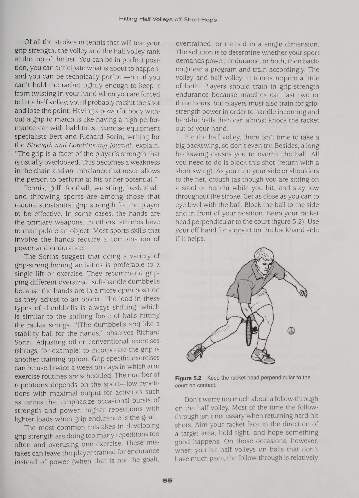
số lần lặp lại tùy thuộc vào môn thể thao - số lần lặp lại thấp với hiệu suất tối đa cho các hoạt động như quần vợt nhấn mạnh đến sự bùng nổ sức mạnh và sức mạnh không thường xuyên; số lần lặp lại cao hơn với tải nhẹ hơn khi mục tiêu là độ bền cầm nắm. Đừng lo lắng quá nhiều về việc tiếp tục thực hiện cú vô-lê một nửa. Hầu hết thời gian, việc thực hiện theo dõi là không cần thiết khi trả lại những cú đánh mạnh. Hướng Mặt vợt của bạn về hướng khu vực mục tiêu, giữ chặt và hy vọng điều gì đó tốt đẹp sẽ xảy ra. Tuy nhiên, trong những trường hợp đó, sai lầm phổ biến nhất trong việc phát triển sức mạnh cầm nắm là thực hiện quá nhiều lần lặp lại quá thường xuyên và lạm dụng một bài tập. Những sai lầm này có thể khiến tay vợt rèn luyện sức bền khi đánh nửa cú vô-lê vào những quả bóng không có tốc độ nhiều, cú sút theo sau tương đối thay vì sức mạnh (khi đó không phải là mục tiêu), bình thường. Sau nửa cú vô-lê, hãy chờ đợi điều tồi tệ nhất. Hãy thực hiện cú đánh của bạn và ngay lập tức phục hồi về tư thế sẵn sàng (ready position) cho bất kỳ cú đánh nào quay trở lại. Nếu đối thủ của bạn đánh trả cú đánh của bạn với một thiết lập yếu, hãy tận dụng vận may của bạn và giành chiến thắng.
PREPARATION SWING FOLLOW-THROUGH 1. Early shoulder turn 1. Early contact 1. Little or no follow-through 2. Wide stance 2. Firm grip when returning hard shots 3. Short backswing 3. Block the ball 2. Finish stroke when returning slow shots Misstep The grip is loose. Correction I Hold the racket firmly on contact. I Misstep You are overhitting the ball. [ee I Correction Block; don’t swing. Hitting Half Volleys off Short Hops Of all the strokes in tennis that will test your grip strength, the volley and the half volley rank at the top of the list. You can be in perfect position, you can anticipate what is about to happen, and you can be technically perfect—but if you can’t hold the racket tightly enough to keep it from twisting in your hand when you are forced to hit a half volley, you'll probably mishit the shot and lose the point. Having a powerful body withOut a grip to match is like having a high-performance car with bald tires. Exercise equipment specialists Bert and Richard Sorin, writing for the Strength and Conditioning Journal, explain, “The grip is a facet of the player’s strength that is usually overlooked. This becomes a weakness in the chain and an imbalance that never allows the person to perform at his or her potential.
Bài tập đánh demi-volley (nửa vô-lê) nhanh 1. Một cách để làm quen với cảm giác ban đầu của cú vô-lê một nửa là bài tập đánh nhanh. Đứng ở giữa để tăng độ khó ¢ Hướng các cú đánh luân phiên sang bên phải và bên trái của sân đối diện. của sân phía sau vạch giao cầu một bước (hình 5.3). Thả và đánh 10 cú đánh về phía thuận tay của bạn, cố gắng tiếp xúc càng nhanh sau bóng để giảm độ khó nảy càng tốt. Nghe tiếng "bang-bang" ¢ Thả và Cú thuận tay (forehand) (forehand) với thời gian bình thường.
Tennis, golf, football, wrestling, basketball, and throwing sports are among those that require substantial grip strength for the player to be effective. In some cases, the hands are the primary weapons. In others, athletes have to manipulate an object. Most sports skills that involve the hands require a combination of power and endurance. The Sorins suggest that doing a variety of grip-strengthening activities is preferable to a single lift or exercise.
Giảm dần thời gian giữa lúc bóng chạm sân và sau đó chạm vào vợt của bạn. ping bóng và đánh nó. Kiểm tra thành công ¢ Giữ tư thế rộng * Giữ vững tay cầm. ¢ Làm cho cú Vung vợt ra sau (lấy đà) ngắn lại. Ghi điểm thành công của bạn 1 đến 3 lần đánh nhanh vào sân đánh đơn = 1 điểm 4 đến 7 lần đánh nhanh vào sân đánh đơn = 2 điểm 8 đến 10 lần đánh nhanh vào sân đánh đơn = 3 điểm Điểm của bạn Lượt đánh nhanh.
They recommend gripping different oversized, soft-handle dumbbells because the hands are in a more open position as they adjust to an object. The load in these types of dumbbells is always shifting, which is similar to the shifting force of balls hitting the racket strings. “[The dumbbells are] like a stability ball for the hands,” observes Richard Sorin. Adjusting other conventional exercises (shrugs, for example) to incorporate the grip is another training option.
Hình 5.3 Bài tập Half-Velliey 2. Shortstop Shortstop cũng sẽ giúp bạn chuẩn bị cho việc đánh một nửa cú vô-lê. Giữ vị trí ngay phía sau đế Kiểm tra thành công * Uốn cong đầu gối nhiều hơn ở thắt lưng. dòng mà không có vợt của bạn. Nhờ một người tập đứng trên lưới và đánh 10 quả bóng về phía bạn để chúng nảy lên nhiều lần. Di chuyển vào * Nhìn bóng vào tay bạn.
Grip-specific exercises can be used twice a week on days in which arm exercise routines are scheduled. The number of repetitions depends on the sport—low repetitions with maximal output for activities such as tennis that emphasize occasional bursts of strength and power; higher repetitions with lighter loads when grip endurance is the goal.
Ghi bàn thành công ở vị trí thẳng hàng với bóng, đầu gối cong và tay úp xuống. Sân quần vợt Sân 1 đến 3 người tiếp đất không có bóng = người tiếp đất bóng giống như cách người chơi bóng chày đi đường ngắn. Học cách xử lý những quả bóng tennis sau khi chúng thực hiện những cú nhảy ngắn sẽ giúp bạn chuẩn bị cho 1 điểm cho những người tiếp đất ở Sân 4 đến 7 mà không lắc lư = 2 điểm khi đánh một nửa cú vô-lê.
The most common mistakes in developing grip strength are doing too many repetitions too often and overusing one exercise. These mistakes can leave the player trained for endurance instead of power (when that is not the goal), overtrained, or trained in a single dimension. The solution is to determine whether your sport demands power, endurance, or both, then backengineer a program and train accordingly.
Sân từ 8 đến 10 người tiếp đất không có lắc lư = Để tăng độ khó 3 điểm Điểm của bạn ¢ Di chuyển vào trong đường cuối sân (baseline). Để giảm độ khó * Yêu cầu đối tác tập luyện của bạn ném bóng thay vì đánh chúng bằng vợt. Bài tập Half-Voliey 3. Rib Ball Để cảm nhận chuyển động vung vợt hạn chế của Để tăng độ khó cho cú vô-lê nửa, hãy đặt một quả bóng vào giữa bên trong của bạn * Giữ bóng trong trận đấu với đối tác.
The volley and half volley in tennis require a little of both: Players should train in grip-strength endurance because matches can last two or three hours, but players must also train for gripstrength power in order to handle incoming and hard-hit balls than can almost knock the racket out of your hand. For the half volley, there isn’t time to take a big backswing, so don’t even try.
đánh vào cánh tay và xương sườn của bạn (hình 5.4). Bây giờ hãy thực hành cú vô-lê một nửa bằng cách thả và đưa 10 quả bóng vào cuộc. Nếu bóng rơi xuống thì cú swing của bạn quá lớn. Để giảm độ khó * Chỉ tính những cú đánh vào phần sân sau của đối phương. Kiểm tra thành công * Thực hiện cú swing chặt chẽ và có kiểm soát. * Giữ Mặt vợt vuông góc với Mặt sân.
Besides, a long backswing causes you to overhit the ball. All you need to do is block this shot (return with a short swing). As you turn your side or shoulders to the net, crouch (as though you are sitting on a stool or bench) while you hit, and stay low throughout the stroke. Get as close as you can to eye level with the ball.
Ghi điểm thành công của bạn 1 đến 3 cú đánh vào sân đơn = 1 điểm 4 đến 7 cú đánh vào sân đơn = 2 điểm 8 đến 10 cú đánh vào sân đơn = 3 điểm Điểm của bạn ___ Hình 5.4 Rib ball. Nửa Voliey
Block the ball to the side and in front of your position. Keep your racket head perpendicular to the court (figure 5.2). Use your off hand for support on the backhand side if it helps.
Bài tập 4. Cuộc biểu tình trên đất không có người Chọn vị trí giữa đường cuối sân (baseline) và đường Một biến thể hay của cuộc biểu tình trên đất không có người là đường giao bóng (hình 5.5). Giữ bóng trong cuộc biểu tình thời gian nhanh chóng. Giữ vị trí trên đế với 10 cú đánh có kiểm soát liên tiếp vào một đường thẳng. Giữ bóng mỗi người 10 lần với đối tác ở cùng một vị trí ở phía đối diện, một đối tác ở rất gần lưới. Của bạn trên lưới, với tổng số 20 cú đánh giữa các cú đánh của đối tác của bạn sẽ được trả lại cho bạn và đối tác của bạn thậm chí còn nhanh hơn. Hãy kiểm soát ngay cả những cú đánh mà bạn phải thực hiện bằng nửa cú vô-lê. Nothan trong cuộc biểu tình không có người ở đất. Bạn có thể phải thực hiện một số cú đánh bằng cú vô-lê thay vì nửa volman's-land không phải là một vị trí tốt để thi đấu, ley. Dự đoán vị trí cú đánh tiếp theo của đối thủ nhưng điều đó buộc bạn phải thực hành những cú đánh có thể sẽ có ích. Một lần nữa, kỹ thuật không quan trọng bằng trò chơi của bạn sau này. Kỹ thuật ở đây ít quan trọng hơn sự nhanh chóng.
Figure 5.2 Keep the racket head perpendicular to the court on contact. Don’t worry too much about a follow-through on the half volley. Most of the time the followthrough isn’t necessary when returning hard-hit shots. Aim your racket face in the direction of a target area, hold tight, and hope something good happens. On those occasions, however, when you hit half volleys on balls that don’t have much pace, the follow-through is relatively normal. After a half volley, expect the worst. Hit your shot and recover immediately to the ready position for anything that comes back. If your Half-Volley Drill 1. opponent returns your shot with a-weak setup, take advantage of your good fortune and go for a winner. Quick Hits One way to get used to the initial feel of a half volley is the quick-hits drill. Stand in the middle of the court a step behind the service line (figure 5.3). Drop and hit 10 shots on your forehand side, trying to make contact as quickly after the ball bounces as possible.
hơn là sự nhanh chóng. Để tăng độ khó ¢ Cho đồng đội của bạn đánh từ vạch cuối sân. ° Yêu cầu đối tác của bạn thực hiện cú vô-lê từ vị trí gần lưới. Để giảm độ khó * Đứng sâu hơn trong sân, gần đường cuối sân. Kiểm tra thành công * Uốn cong đầu gối nhiều hơn ở thắt lưng. * Xem bóng chạm dây của bạn. Ghi điểm thành công của bạn 1 đến 3 cú đánh liên tiếp không trượt = 3 điểm 4 đến 7 cú đánh liên tiếp không trượt = 5 điểm 8 đến 10 cú đánh liên tiếp không trượt = 7 điểm Điểm của bạn Hình 5.5 Cuộc biểu tình không có người ở đất liền.
Listen for the “bang-bang” sound of the ball first hitting the court, then striking your racket. Quick hits. Figure 5.3 To Increase Difficulty ¢ Direct shots alternately to the right and left sides of the opposite backcourt. To Decrease Difficulty ¢ Drop and hit forehands with normal timing. Gradually decrease the time between dropping the ball and hitting it. Success Check ¢ Take a wide stance * Keep grip firm. ¢ Make backswing short. Score Your Success
Bài tập trả bóng nửa chuyền 5. Trả giao bóng nửa chuyền Yêu cầu một đối tác thực hành giao bóng 10 lần trong khi Để tăng độ khó, bạn thực hành Trả giao bóng từ một bước phía sau * Di chuyển đến gần vạch giao bóng hơn. đường giao bóng (hình 5.6). Các quả giao bóng phải được thực hiện * Yêu cầu đối tác của bạn giao bóng từ số vị trí. Phát lại lỗi. Thay đổi vai trò sau mỗi lượt giao bóng. Bài tập này sẽ cải thiện khả năng bắt vô-lê một nửa, Trả giao bóng và tốc độ nhanh chóng của bạn.
1 to 3 quick hits into the singles court = 1 point 4 to 7 quick hits into the singles court = 2 points 8 to 10 quick hits into the singles court = 3 points Your score Hitting Half Volleys off Short Hops Half-Volliey Drill 2. Shortstop Shortstop also will prepare you for hitting half volleys. Take a position right behind the baseline without your racket. Have a drill partner stand at the net and drive 10 balls toward you so they bounce several times.
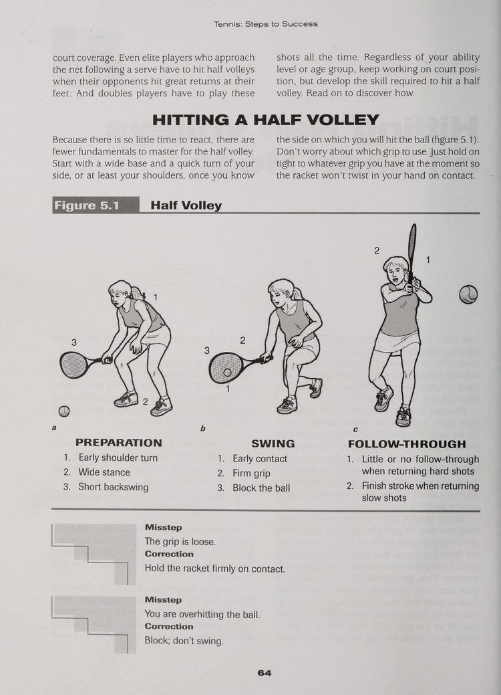
bên trong đường cuối sân (baseline). Để giảm độ khó * Di chuyển hai bước trở lên phía sau vạch giao bóng. Kiểm tra thành công * Xoay vai nhanh chóng. * Liên hệ trước. Ghi điểm thành công của bạn 1 đến 3 lượt trả bóng thành công = 5 điểm 4 đến 7 lượt trả bóng thành công = 7 điểm 8 đến 10 lượt trả bóng thành công = 9 điểm Điểm của bạn ___ Hình 5.6 Trả về quả giao bóng nửa chuyền.
Move into a position in line with the ball, with your knees bent and your hands down. Field the tennis ball grounders just as a shortstop would field baseballs. Learning to handle tennis balls after they have taken short hops will prepare you for hitting half volleys. To Increase Difficulty ¢ Move inside the baseline. To Decrease Difficulty
Bài tập nửa chuyền G. Ghế nóng Đứng sau vạch giao bóng một bước (A) với Để tăng độ khó, một người chơi ở vạch cuối (F) phía sau bạn để đưa ăn e Đứng trên vạch giao bóng. quả bóng (hình 5.7). Hai người chơi đứng ở lưới đối diện bạn. Người chơi ở cuối sân bố trí các vận động viên bắt vô-lê (B và C), những người này sẽ tung cú sút thẳng vào bạn.
* Have your drill partner toss balls rather than hitting them with a racket. Success Check * Bend more at the knees than at the waist. * See the ball all the way into your hands. Score Your Success Field 1 to 3 grounders without a bobble = 1 point Field 4 to 7 grounders without a bobble = 2 points Field 8 to 10 grounders without a bobble = 3 points Your score
Để giảm độ khó ¢ Đứng sau người Giao bóng hai đến ba bước Thực hiện càng nhiều cú đánh càng tốt với đường bắt vô-lê. và một nửa cú vô-lê. Kiểm tra thành công ¢ Vào tư thế cúi người. ¢ Giữ tay và vợt về phía trước. Ghi điểm thành công của bạn 1 đến 3 lượt trả lời thành công = 5 điểm 4 đến 7 lượt trả lời thành công = 7 điểm 8 đến 10 lượt trả lời thành công = 9 điểm Điểm của bạn ___ Hình 5.7 Ghế nóng.
Half-Voliey Drill 3. Rib Ball To get a feel for the restricted swinging motion of the half volley, put a ball between the inside of your hitting arm and your ribs (figure 5.4). Now practice half volleys by dropping and putting 10 balls into play. If the ball drops, your swing is too big.
TÓM TẮT THÀNH CÔNG Bài kiểm tra kỹ thuật nửa chuyền của bạn là cú đánh này có thành công hay không. Cú vô-lê một nửa kiểm tra phản xạ của bạn và bóng đi qua lưới. Cú đánh không cần phải đẹp, chỉ cần phải đẹp. Hãy giữ ý chí hơn là kỹ năng của bạn. Ghi lại điểm số của bạn cho mỗi bài tập trong phần này, mắt bạn sẽ mở to, quay người sớm và bước đi. Nhập điểm vào bảng 5.1 và cộng điểm Vô-lê chặn. Hãy giữ chặt vợt và lấy điểm để đánh giá thành công hoàn toàn của bạn. Tổng cộng đầu đủ thấp để đưa bóng ra khỏi sân.
Figure 5.4 Rib ball. To Increase Difficulty * Keep the ball in play against a partner. To Decrease Difficulty * Count only the shots that hit in the opponent’s backcourt. Success Check * Make swing tight and controlled. * Keep racket face square to the court surface. Score Your Success 1 to 3 shots hit into the singles court = 1 point 4 to 7 shots hit into the singles court = 2 points 8 to 10 shots hit into the singles court = 3 points Half-Voliey Drill 4. No-Man’s-Land Rally
Cạo đầu vợt không phải là điều xấu vì 17 trên 34 điểm có thể cho phép bạn chuyển sang bước 6. Bảng 5.1 Tóm tắt tính điểm Bài tập nửa chuyền 1. Đánh nhanh = OU OF 3 2. Shortstop an. OME GES 3. Bóng sườn ____ trên 3 4. Cuộc biểu tình không có người ở đất OT 5. Giao cú vô-lê (volley) nửa trả về _____ trên 9 6. Ghế nóng _... NGOÀI TỔNG SỐ ___ trên 34 Nếu bạn có thể Cú thuận tay (forehand) (forehand) và trái tay, bao gồm cả bóng khi chơi với các cú đánh nền bình thường; thế là bạn đã sẵn sàng để thực hiện cú lốp bóng (lob). cú lốp bóng (lob) là một cú đánh nhẹ (dink) nhàng, có độ cao và nó là một trong những Điểm lợi thế (advantage) không cần thiết của trò chơi.
Take a position between the baseline and the service line (figure 5.5). Keep the ball in play with 10 consecutive controlled shots against a partner in the same position on the opposite side of the net, with a total of 20 shots between you and your partner. Work on control even on those shots that you have to hit with half volleys. Noman’s-land is not a good position for match play, but it forces you to practice shots that may help your game later. Technique is less important here than quickness. Figure 5.5 No-man’s-land rally. A good variation of the no-man’s-land rally is the quick-time rally. Take a position on the baseline.
Tuy nhiên, hãy cố gắng đừng lạm dụng động tác Cú lốp bóng (lob) quá mức. Đối với những cú đánh có giá trị nhất. Mặc dù có ví dụ về ưu điểm, nhưng đừng tham gia một trận đấu đơn mà hãy nghĩ đến cú lốp bóng (lob), đó là một cú đánh mà người chơi hiếm khi tập luyện, tôi có thể đánh bại người chơi này bằng cách Cú lốp bóng (lob). Thay vào đó, hãy nghĩ xem, J có thể sử dụng cú lốp bóng (lob) để giành điểm khi tôi ăn điểm hoặc tinh luyện. Quá tệ. Bằng cách không thực hiện kỹ năng quan trọng này, người chơi sẽ bỏ lỡ cơ hội kiểm soát tình hình và tôi có thể sử dụng cú lốp bóng (lob) để giữ điểm lâu hơn khi gặp khó khăn.
Keep the ball in play 10 times each against a partner positioned very close to the net. Your partner’s shots will be returned to you even faster than during the no-man’s-land rally. You may have to hit some shots with volleys instead of half volleys. Anticipate where your opponent’s next shot will come. Again, technique is less important than quickness. To Increase Difficulty ¢ Have your partner hit from the baseline. ° Have your partner hit volleys from a position near the net. To Decrease Difficulty * Stand deeper in the court, near the baseline. Success Check
để thêm một cú đánh thắng nữa vào kho vũ khí của họ. Những cú lốp bóng (lob) phòng thủ sẽ ghi điểm khi bạn gặp khó khăn, những cú lốp bóng (lob) tấn công sẽ giành được điểm và cả hai đều là cách khiến đối thủ của bạn mất Trọng tâm cơ thể. Khi kiểm soát được, Cú lốp bóng (lob) về phía trái tay. Đừng để lộ ý định Cú lốp bóng (lob) của bạn qua cách bạn thiết lập. Làm cho nó trông giống như bất kỳ cú đánh nào khác. Khi lao vào góc, Cú lốp bóng (lob) chéo góc. Lob thấp Những cú lốp bóng (lob) hiệu quả thực sự có thể khiến đối thủ của bạn mất tập trung và mất bình tĩnh. Sử dụng một cú lốp bóng (lob) bất cứ lúc nào nó có thể giúp bạn giành được một điểm, điểm này thường xuyên hơn hầu hết (nhưng không quá thấp) trong các cú lốp bóng (lob) tấn công, cao và sâu trong các cú lốp bóng (lob) phòng thủ.
* Bend more at the knees than at the waist. * Watch the ball hit your strings. Score Your Success 1 to 3 consecutive shots without a miss = 3 points 4 to 7 consecutive shots without a miss = 5 points 8 to 10 consecutive shots without a miss = 7 points Your score Hitting Half Volleys off Short Hops Half-Volley Drill 5. Half-Volley Service Returns Have a partner practice the serve 10 times while you practice returns from one step behind the service line (figure 5.6). Serves have to be in to count.
Trong nội dung đánh đôi, hãy đưa cú lốp bóng (lob) vào kế hoạch trò chơi của bạn. Trả lại những cú giao bóng khó, Cú lốp bóng (lob) qua người chơi trên lưới và Cú lốp bóng (lob) khi cả hai đối thủ đều bị người chơi nhận ra. Thỉnh thoảng hãy thử một cú lốp bóng (lob) ngay cả khi bạn mất điểm. Nếu không có gì khác, cú lốp bóng (lob) sẽ gây bất ngờ cho đối thủ của bạn. Nếu không có mối đe dọa từ một cú lốp bóng (lob), những người chơi khác không cần phải phòng thủ trước khả năng đó.
Replay faults. Change roles after each round of serves. This drill will improve your half volley, service return, and quickness. Figure 5.6 Half-volley service returns. To Increase Difficulty * Move closer to the service line. * Have your partner serve from a position inside the baseline. To Decrease Difficulty * Move two or more steps behind the service line. Success Check * Turn shoulders quickly. * Make contact in front. Score Your Success
Họ có thể đoán trước rằng việc bạn định giữ lưới đều là một phần trong gói chiến thuật của bạn. Đọc bước 10 để biết thêm về vai trò của Cú lốp bóng (lob) trong đánh đôi. ĐÁNH LOB Bạn có thể đánh một cú lốp bóng (lob) bằng cách sử dụng thuận tay hoặc trái tay. Cách cầm vợt cho cú lốp bóng (lob) thuận tay (hình 6.1) cũng giống như cách cầm vợt thuận tay và có thể là kiểu cầm vợt phía đông, nửa phía tây hoặc phía tây - sự lựa chọn của bạn Lốp thuận tay Hình 6.1 _ CHUẨN BỊ SWING THEO 1.
1 to 3 successful returns = 5 points 4 to 7 successful returns = 7 points 8 to 10 successful returns = 9 points Half-Volley Drill G. Hot Seat Stand one step behind the service line (A) with a player at the baseline (F) behind you to feed balls (figure 5.7). Two players stand at the net opposite you. The baseline player sets up the volleyers (B and C), who hit shots directly at you. Dig out as many shots as you can with volleys and half volleys.
Cách cầm thuận tay 1. Mở Mặt vợt 1. Kết thúc với vợt ở vị trí cao 2. Chạy và đặt chân 2. Các cú lốp bóng (lob) phòng thủ xoay từ thấp đến cao 3. Đánh bóng về phía sau ngắn 2. Hoàn thành các cú lốp bóng (lob) phòng thủ tiếp theo trên các Cú lốp bóng (lob) tấn công
Figure 5.7 Hot seat. 7O To Increase Difficulty e Stand on the service line. To Decrease Difficulty ¢ Stand two to three steps behind the service line. Success Check ¢ Take a crouched position. ¢ Hold hands and racket forward.
Misstep Lobs ngắn và thấp.
Score Your Success
Correction Nhắm vào phần ba phía sau của sân. Tăng thời lượng theo dõi của bạn. Nếu bạn đang thực hiện một cú lốp bóng (lob) phòng thủ, bạn sẽ không. Một cú lốp bóng (lob) trái tay (hình 6.2) được thực hiện với nhiều thời gian chuẩn bị. Cách cầm vợt trái tay ngắn, mà đối với hầu hết mọi người, là chặn chuyển động bằng cách cầm vợt chắc chắn và giữ kiểu Cách cầm vợt Eastern tiêu chuẩn hoặc kiểu tây sửa đổi. Chơi Mặt vợt mở để nâng bóng là về những người sử dụng trái tay bằng hai tay có thể có tất cả những gì bạn có thể làm để giữ điểm. Nếu bạn gặp khó khăn hơn khi đánh một cú lốp bóng (lob) trái tay vì có nhiều thời gian hơn, thì việc vung vợt với chuyển động từ trên xuống sẽ khó thực hiện hơn một chút, đưa bóng đủ cao để vượt qua đối thủ bằng những cú đánh mạnh đánh thẳng vào bạn. Khi bạn đã vào lưới và đủ sâu để khiến cô ấy rút lui có thêm thời gian chuẩn bị cho một cú lốp bóng (lob), chuyển động lại là thực hiện cú đánh.
1 to 3 successful returns = 5 points 4 to 7 successful returns = 7 points 8 to 10 successful returns = 9 points Hitting Half Volleys off Short Hops SUCCESS SUMMARY The test of your half-volley technique is whether the ball goes back over the net. The shot doesn’t have to look pretty, it just has to be in. Keep your eyes wide open, turn your side early, and block the ball. Hold on tight and get the racket head low enough to dig the ball out of the court. Scraping the racket head is not a bad thing on this shot. The half volley tests your reflexes and willpower more than your skill. Record your score for each of the drills in this step. Enter the scores in table 5.1, and add up your points to rate your total success. A total of 17 out of 34 possible points allows you to move to step 6. Table 5.1 Scoring Summary Half-Volley Drills 1. Quick hits = OU OF 3 2. Shortstop an. OME GES 3. Rib ball ____ out of 3 4. No-man’s-land rally nO OT
đường đi quét từ trên xuống của vợt (mặt mở) để nâng bóng lên cao và sâu.
5. Half-volley service returns _____ out of 9 TOTAL ___ out of 34
Cú Lốp Bóng, Đập Bóng Overhead & Cú Bỏ Nhỏ
Part III: Lobs, Overheads & Drop Shots — Specialty Arsenal
Bước 6: Cú Lốp Bóng Khống Chế Đối Phương
Step 6: Lobbing to Control Your Opponent
Lobbing để kiểm soát cú lốp trái tay của đối thủ CHUẨN BỊ SWING THEO QUA 1. Tay cầm trái tay 1. Mở Mặt vợt 1. Kết thúc với vợt ở vị trí cao 2. Chạy và đặt chân 2. Các cú lốp bóng (lob) phòng thủ xoay từ thấp đến cao 2. Hoàn thành cú đánh theo sau 3. Cú đánh ngược ngắn trên lốp tấn công lốp phòng thủ
If you can hit forehands and backhands consistently, you are ready to hit lobs. The lob is a soft, high-arching shot, and it is one of the game’s most valuable strokes. Despite the advantages of the lob, it is a shot that players seldom practice or refine. Too bad.
Chỉnh sửa Giảm độ dài cú đánh ra sau của bạn. Bù lại cơn gió sau lưng. Đừng vung mạnh như vậy. Khi bạn phòng thủ trước một Cú đập trên đầu (smash) bóng, Đây là cách bạn thực hiện một cú lốp bóng (lob). Trước tiên, hãy thảo luận rằng bạn không có nhiều lựa chọn về việc phải làm hoặc phần dễ dàng. Hãy cầm vợt như bạn muốn để biết cách thực hiện. Giữ vững vị trí một cú đánh nữa trong bất kỳ cú đánh nền nào, mặc dù bạn có thể phải làm vậy là mục tiêu. Nhưng khi bạn có thời gian để chuẩn bị và giữ bóng chặt hơn ngay trước khi tiếp xúc với bóng, đối thủ của bạn đang mong đợi một cú đánh nền, để chịu được lực đập của đối phương.
By not working on this important skill, players are missing the chance to add another winning stroke to their arsenal. Defensive lobs extend points when you are in trouble, offensive lobs win points, and both are ways to keep your opponent off balance. Effective lobs can really distract and unnerve your opponent. Use a lob any time it can help you win a point, which is more often than most players realize. Try a lob occasionally even if you lose the point. If nothing else, the lob will surprise your opponent. Without the threat of a lob, other players don’t have to defend against the possibility. They can anticipate that you are going to keep the ball in play with normal groundstrokes; this grants them an unnecessary advantage.
cú lốp bóng (lob) tấn công được ngụy trang tốt - thuận tay hoặc thuận tayKhông cần cách cầm vợt đặc biệt. Nếu một cú đánh đến tay - có thể giành được điểm đang được chơi và phía thuận tay của bạn có thể, hãy sử dụng cách cầm vợt mà bạn đã cho đối thủ của mình một điều gì đó khác để lo lắng khi luyện tập các cú đánh tiếp đất thuận tay. Hãy thay đổi vào lần tiếp theo anh ấy lên lưới. Camille Soulier, MS, một chuyên gia giảng dạy về cú lốp bóng (lob) từ phía đối diện, cho biết. Hãy nhìn theo cách này: cú lốp bóng (lob) chỉ là một cách khác để thực hiện cú thuận tay (forehand) hoặc trái tay, nhưng nó đánh cao hơn, nhẹ nhàng hơn.
Try not to overuse the lob, however. For example, don’t go into a singles match thinking, I can beat this player by lobbing. Instead, think, J can use the lob to win points when I'm in control of the situation, and I can use the lob to stay in the point longer when I’m in trouble. When in control, lob to the backhand side. Don’t give away your intention to lob by the way you set up. Make it look like any other shot. When scrambling to a corner, lob crosscourt. Lob low (but not too low) on offensive shots, high and deep on defensive lobs. In doubles, include the lob in your game plan.
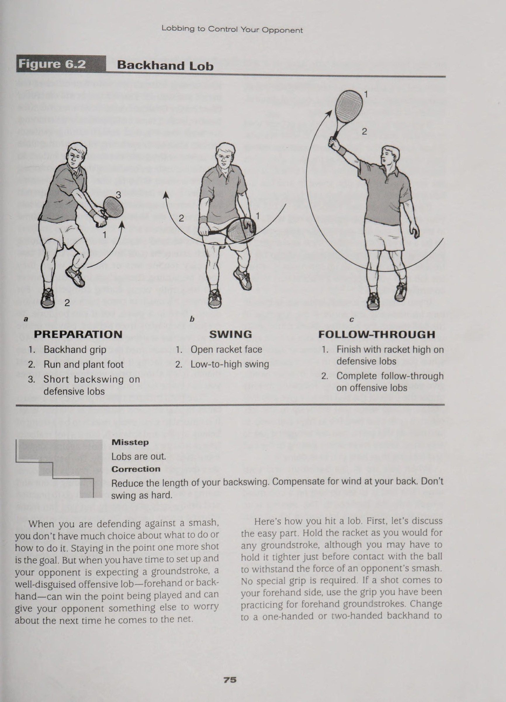
Nếu bạn đang ở trên lưới và đối thủ của bạn mắc phải những lỗi cơ bản mà người chơi quần vợt mắc phải khi tập luyện. để Cú lốp bóng (lob) trên không (overhead), bạn có một số lựa chọn. "Các vận động viên ném bóng dành hàng giờ để chạm đất nếu bạn có thể để bóng nảy lên mà không bị mất cú đánh thay vì dành nhiều thời gian hơn cho các cú giao bóng, vô-lê và đánh đầu. Những tay vợt lớn thực hiện vị trí tấn công của bạn, thực hiện cú đánh sau khi nó nảy lên và trả lại cú lốp bóng (lob) bằng một Cú đập trên đầu (smash) bóng. Nếu bạn ngược lại bằng cách luyện tập sức mạnh mạnh mẽ của mình ở rất gần lưới, hãy tiến vào và thực hiện các cú đánh thay vì sử dụng thời gian đó để trở nên vững vàng hơn ở đường cuối sân. Không nhóm nào ném bóng đi bằng một Cú đập trên đầu (smash) trước khi nó nảy lên.
Returning difficult serves, lobbing over the net player, and lobbing when both opponents are at the net are all part of your tactical package. Read step 10 for more about the role of the lob in doubles. HITTING A LOB You can hit a lob using either a forehand ora backhand. The grip for a forehand lob (figure 6.1) is the same as for a forehand groundstroke and can be an eastern, semiwestern, or western grip—your choice Forehand Lob Figure 6.1 _ PREPARATION SWING FOLLOW-THROUGH 1. Forehand grip 1. Open racket face 1. Finish with racket high on 2. Run and plant foot 2. Low-to-high swing defensive lobs 3. Short backswing on 2. Complete follow-through defensive lobs on offensive lobs Misstep Lobs are short and low. Correction Aim for the back third of the court.
Nếu bằng cách để bóng nảy lên, bạn sẽ mất nhiều thời gian cho những cú đánh đặc biệt như Cú lốp bóng (lob), vị trí tấn công của bạn, hãy chơi bóng trong khi nó đang ở ngay cả khi cú đánh xuất hiện hết lần này đến lần khác trên không. Nếu bạn đang ở trong một tư thế thoải mái, trong một trận đấu. "Sai lầm thứ hai là không luyện tập các tình huống trong trận đấu. Nếu bạn tự mình thực hiện, họ sẽ tận dụng một cú đánh thắng, dù ngắn và góc cạnh để kéo đối thủ của bạn ra xa hoặc sâu nhằm khiến cô ấy gặp rắc rối. Nếu bạn không chuẩn bị sẵn sàng một cách thoải mái, hãy trả lại đồng minh chơi các set hoặc trận đấu thông thường khi họ Cú lốp bóng (lob) vào phần sân sau của đối thủ với một cú đánh có thể khiến họ rơi vào tình huống cú đập bóng smash được kiểm soát.
Increase the length of your follow-through. If you are hitting a defensive lob, you won’t A backhand lob (figure 6.2) is hit with a have much time to prepare. Making a short backhand grip, which for most people is either blocking motion with a firm grip and keeping a standard eastern or a modified western. Playyour racket face open to lift the ball are about ers who use a two-handed backhand may have all you can do to stay in the point. If you have more difficulty hitting a backhand lob because more time, swing with a down-to-up motion to the racket is a little more difficult to maneuver get the ball high enough to clear an opponent on hard shots hit directly at you.
thường xuyên xảy ra trong quá trình thi đấu. Ví dụ, thật khó để lội ngược dòng khi bạn đang bị dẫn 15-40 trong một trận đấu, nhưng điều đó có thể làm được. Để Nếu bạn không thể đánh bóng khi nó đang ở trên không, hãy quay người ngay lập tức và chạy nước rút theo hướng chuẩn bị đánh từ phía sau, đánh toàn bộ quả bóng về phía đường cuối sân. Đừng chạy trực tiếp dưới quả bóng. Bạn phải có khả năng đánh nó khi luyện tập, bắt đầu mỗi trận đấu với tỷ số 15-40.
When you have at the net and deep enough to make her retreat more time to set up for a lob, the motion again is to play the shot. a sweeping down-to-up path of the racket (open face) to lift the ball high and deep. Lobbing to Control Your Opponent Backhand Lob a PREPARATION SWING FOLLOW-THROUGH 1. Backhand grip 1. Open racket face 1. Finish with racket high on 2. Run and plant foot 2.
thứ gì đó giống như cú thuận tay (forehand) hoặc trái tay. Nó giúp bạn quen với tình huống trận đấu đó nên bạn sẽ không phải đối mặt với nó lần đầu tiên trong thực tế khi bạn đến, vì vậy hãy di chuyển theo một đường song song và sang một bên đường đi của quả bóng. Nói cách khác, phù hợp. Bạn cũng sẽ ngạc nhiên khi biết mình đã bao nhiêu lần nhường chỗ cho mình để đu đưa. Theo dõi trực tiếp bạn có thể quay lại và giành chiến thắng trong những trò chơi đó.
Low-to-high swing defensive lobs 2. Complete follow-through 3. Short backswing on on offensive lobs defensive lobs Misstep Lobs are out. Correction Reduce the length of your backswing. Compensate for wind at your back. Don't swing as hard. When you are defending against a smash, Here’s how you hit a lob. First, let’s discuss you don’t have much choice about what to do or the easy part.
dưới đường đi của quả bóng không cho bạn biết rằng "Sai lầm thứ ba tôi thấy trong luyện tập là lỗi lùi. Nếu và khi bạn bắt kịp cú lốp bóng (lob), hãy bắt đầu chơi các hiệp và trận đấu ở cấp độ thấp hơn. trả lại nó bằng cú lốp bóng (lob) cao và sâu của riêng bạn là điều đương nhiên khi bạn muốn mọi trận đấu đều là của mình. Lúc này, bạn đang loay hoay chỉ để làm đẹp để chơi và ngắm nhưng điều đó không thực tế.
Hold the racket as you would for how to do it. Staying in the point one more shot any groundstroke, although you may have to is the goal. But when you have time to set up and hold it tighter just before contact with the ball your opponent is expecting a groundstroke, a to withstand the force of an opponent’s smash. well-disguised offensive lob—forehand or backNo special grip is required.
hãy sống sót. Lo lắng nhiều hơn về việc cầm bóng. Rất nhiều trận đấu, đặc biệt là những trận đối đầu nhẹ và Cú lốp bóng (lob) hơn là vẻ ngoài của bạn khi thực hiện. đối thủ có kỹ năng tốt thì lại xấu xí. Người chơi giỏi hơn Khi bạn ở sân sau và bị kéo xuống mức không phải là cú lốp bóng (lob) của đối thủ, bạn có thể thực hiện cú đánh theo hai bàn và gặp khó khăn khi mài nó ra và thực hiện theo cách khác. Đầu tiên là thiết lập và đánh một cách có kiểm soát để giành chiến thắng, dù xấu hay không. Bạn không thể đi tập cú đập bóng smash vào sân sau. Thứ hai là cố tình chơi kém nhưng bạn có thể khiến việc giành điểm trở nên khó khăn hơn. Hãy thử chơi cả hiệp để trả lại cú lốp bóng (lob) của đối thủ bằng cú lốp bóng (lob) của chính bạn. Các pha bóng mặt trăng (lông bóng so với Cú lốp bóng (lob)) xảy ra trong đó không thể giành được một điểm cho đến khi thỉnh thoảng có bóng, nhưng chúng không đẹp lắm và không mấy vui nhộn.
If a shot comes to hand—can win the point being played and can your forehand side, use the grip you have been give your opponent something else to worry practicing for forehand groundstrokes. Change about the next time he comes to the net. to a one-handed or two-handed backhand to hit lobs from the opposite side. Look at it this way: The lob is just another way of executing a forehand or backhand, but it’s hit higher, softer, and preferably deeper than a normal groundstroke—if it were only that easy. If you are at the net and your opponent tries to lob over your head, you have several options. If you can let the ball bounce without losing your offensive position, play the shot after it has bounced and return the lob with a smash. If you are very close to the net, move in and put the ball away with a smash before it bounces. If by letting the ball bounce you would lose your attacking position, play the ball while it is in the air. If you are in a comfortable position, go for a winning shot, either short and angled to pull your opponent wide or deep to keep her in trouble.
đã chơi sáu lần. Nói cách khác, điểm bắt đầu ở lượt bắn thứ bảy. Điều đó sẽ buộc bạn Lần cuối cùng bạn thực hành cú lốp bóng (lob) của mình là khi nào? "Người chơi quần vợt có xu hướng rèn luyện tính kiên nhẫn thay vì cố gắng thực hiện những cú đánh hoàn hảo như sách giáo khoa để giành điểm ngay lập tức." Lobbing để kiểm soát việc thực hiện Lob của đối thủ. Động tác thả và đánh Bắt đầu thực hành động tác ném bóng bằng động tác thả và đánh đơn giản để tăng độ khó của động tác lốp. Đứng ngay sau đường cuối sân (hình * Cho phép đồng đội của bạn đập bất kỳ cú lốp bóng (lob) nào 6.3). Thả bóng về phía thuận tay của bạn và đánh thấp.
If you are not set up comfortably, return the lob into your opponent’s backcourt with a controlled smash. If you cannot hit the ball while it is in the air, turn immediately and sprint in the direction of the ball toward the baseline. Don’t run directly under the ball. You have to be able to hit it with something resembling a forehand or backhand when you arrive, so move in a line parallel and to the side of the path of the ball. In other words, give yourself room to swing. Following directly under the path of the ball doesn’t give you that option.
một cú đánh bình thường đối với đối tác của bạn, người * Hãy thử động tác tương tự với cú lốp trái tay. được đặt cách lưới từ 8 đến 10 feet. Tiếp tục đánh, nhưng mỗi lần hãy tăng độ cao và cung để giảm độ khó của bóng cho đến khi bạn thoải mái dọn bóng * Thực hiện bài tập mà không có đối tác luyện tập, người hiện đang giơ vợt cao quá đầu của mình. Cuộc tập trận bắt đầu khi bạn sẵn sàng thực hiện 10 cú lốp bóng (lob) liên tiếp. Đếm số ner.
If and when you catch up to the lob, return it with your own lob as high and deep as you Can. At this point, you are struggling just to stay alive. Worry more about getting to the ball and lobbing than how you look doing it. When you are in the backcourt and your opponent lobs, you can play the shot in two ways. The first is to set up and hit a controlled smash into the backcourt.
Thành công Kiểm tra số lần cú đánh của bạn đi qua vợt và tiếp đất ở khu vực sân sau. Nếu bạn không có bạn tập, hãy đứng ở bãi đậu xe phía sau sân với một rổ bóng. Thả và ném bóng qua hàng rào vào khu vực chơi. ¢ Đi theo đường swing từ thấp đến cao. * Mở Mặt vợt. Ghi điểm thành công của bạn 1 đến 3 cú lốp bóng (lob) thành công = 1 điểm 4 đến 7 cú lốp bóng (lob) thành công = 2 điểm 8 đến 10 cú lốp bóng (lob) thành công = 3 điểm Điểm của bạn __ Hình 6.3 Các cú lốp bóng (lob) thả và đánh.
The second is to return your opponent’s lob with a lob of your own. Moon-ball rallies (lobs versus lobs) happen occasionally, but they’re not very pretty and not much fun. When was the last time you practiced your lob? “Tennis players tend to practice their strengths rather than their weaknesses,” says Camille Soulier, MS, a teaching professional in Hattiesburg, Mississippi, who also coaches the men’s and women’s tennis teams at Pearl River Community College.
LOB PHÒNG NGỦ Phần khó khăn khi thực hiện một cú lốp bóng (lob) là chuẩn bị. Để tay vợt khác đã đánh bóng đủ mạnh, bạn sẽ thực hiện một cú lốp bóng (lob) phòng thủ. Sự thật là, nếu bạn đang cố gắng giành được một điểm, sự chuẩn bị hiếm khi có thể chỉ Vô-lê chặn hướng lên trên để trả lại nó. Một gợi ý khác để thoát khỏi tình trạng tương tự và các nguyên tắc cơ bản gặp rắc rối thứ hai: Hướng các cú lốp bóng (lob) Đánh chéo sân (cross-court) của bạn để giảm lượng sân mở mà đối thủ của bạn có thể đập được. Mở Mặt vợt ra một chút. Nâng bóng bằng cú xoay từ thấp đến cao. Hãy thực hiện tốt việc trả bóng cao và sâu bằng mọi cách có thể. Điểm không được trao cho phong cách. Nếu bạn có thời gian để chuẩn bị hoàn hảo bằng chân, cách cầm vợt và vung vợt sau, có lẽ bạn không nên đánh vào không khí để có đủ thời gian phục hồi và trở lại vị trí cho cú đánh tiếp theo. Nếu có thể, hãy Cú lốp bóng (lob) ngay từ đầu.
Soulier describes the three basic mistakes tennis players make in training. “Baseliners spend hours hitting groundstrokes instead of spending more of that time on serves, volleys, and overheads. Big hitters do just the opposite by practicing their power strong strokes instead of using that time to become steadier at the baseline. Neither group spends much time on specialty shots such as the lob, even though the shot comes up time after time during a match. “The second mistake is in not practicing match situations. Left on their own, they’ll usually play routine sets or matches when they could be putting themselves in circumstances that frequently occur during competition. For example, it’s tough to come back when you are down 15-40 in a game, but it can be done. To prepare for playing from behind, play an entire set in practice starting each game down 15-40.
Tuy nhiên, hãy cân nhắc những kỹ thuật này khi thực hiện một cú lốp bóng (lob) phòng thủ. Đầu tiên là động tác bằng chân. Nhanh chóng bước ra và quay lại bằng chân theo sau để đảm bảo Độ sâu của bóng khi quay trở lại. Quá trình theo dõi sẽ đi lên và thoát ra khỏi cơ thể bạn. Việc thực hiện đầy đủ sẽ giúp bạn có cảm giác nhẹ nhàng nâng bóng vào cùng phía với cánh tay thuận của bạn. Tập trung vào quả bóng, nhưng xoay vai của bạn theo hướng trực tiếp và tiến sâu vào phần sân sau. Nếu bạn thực hiện một hành động thì bạn đang di chuyển. Bất cứ khi nào bạn mắc lỗi sai, hãy thực hiện cú đánh quá sâu hoặc quá cao thay vì trên sân, hãy rút ngắn cú đánh ra sau của bạn. Nếu quá ngắn và quá thấp.
It gets you accustomed to that match situation so you won't be facing it for the first time in a real match. It will also surprise you how many times you can come back and win those games. “The third mistake I see in practice is a reluctance to play sets and matches at a lesser level. t is natural to want every match to be a thing of beauty to play and to watch, but it’s not realistic. Lots of matches, especially those against slightly ess skilled opponents, are ugly. The better player gets dragged down to a level that is not comfortable and has trouble just grinding it out and taking a win, ugly or not.
Bài tập Lob phòng thủ 1. Lob — Khởi động đập vỡ Với một đối tác hoặc người hướng dẫn lành nghề, hãy thử khởi động lobSuccess Check Cú đập trên đầu (smash) trên đầu (smash). Đứng phía sau đường cuối sân (baseline) và ¢ Chạm nhẹ. đưa bóng vào cuộc 10 lần bằng một cú lốp bóng (lob). Đối tác của bạn trên lưới đánh các Cú đập trên đầu (smash) có kiểm soát theo hướng ¢ Chặn hoặc làm chệch hướng. hướng tới vị trí của bạn. Tiếp tục cuộc biểu tình, chỉ sử dụng các cú lốp bóng (lob) có kiểm soát Ghi điểm thành công của bạn và các Cú đập trên đầu (smash) trả. Đếm số lần kết hợp Cú lốp bóng (lob)-đập thành công.
You can’t go to practice and deliberately play poorly, but you can make winning points harder. Try playing an entire set in which a point cannot be won until the ball has been in play six times. In other words, the point starts on the seventh shot. That will force you to be patient instead of trying textbook-perfect shots to win the point right away.” Lobbing to Control Your Opponent Lob Drill. Drop-and-Hit Lobs Start practicing the lob with a simple drop-and-hit lobs drill. Stand just behind the baseline (figure 6.3).
1 đến 3 pha Cú lốp bóng (lob) thành công = Người chơi trung cấp và cao cấp thường sử dụng bài tập 3 điểm này như một phần của khởi động. 4 đến 7 tổ hợp Cú lốp bóng (lob) thành công = 5 điểm Để tăng độ khó 8 đến 10 tổ hợp Cú lốp bóng (lob) thành công = * Chỉ đếm số lần hai tổ hợp Cú lốp bóng (lob) liên tiếp được tổng cộng 7 điểm.
Drop a ball to your forehand side and hit a normal grounastroke to your partner, who is positioned 8 to 10 feet from the net. Continue hitting, but each time increase the height and arc of the ball until you are comfortably clearing your partner, who is now extending the racket high above his or her head.
Điểm của bạn Để giảm độ khó ° Bắt đầu lại sau mỗi lần kết hợp cú lốp bóng (lob) hai cú. Lobbing để kiểm soát đối thủ của bạn Bài tập Cú lốp bóng (lob) phòng thủ 2. Đuổi theo Yêu cầu một đối tác đứng trên lưới và luân phiên nhau để tăng độ khó, thực hiện 10 cú đánh vào các góc thuận tay và trái tay của bạn (hình 6.4). Di chuyển tới bóng và trả lại các cú đánh bằng Cú lốp bóng (lob). Thực hiện các bước ngắn để bắt đầu, * Phát điểm sau cú lốp bóng (lob); đừng nghỉ ngơi trước trình tự tiếp theo.
The drill starts when you are ready to hit 10 consecutive lobs. Count the number of times your shot clears the racket and lands in the backcourt area. If you don’t have a practice partner, stand in the parking lot behind a court with a basket of balls. Drop and hit lobs over the fence into the playing area. Figure 6.3 Drop-and-hit lobs. To Increase Difficulty * Allow your partner to smash any lob hit too low. * Try the same drill with backhand lobs.
rồi chuyển sang số cao để chạy về phía bóng. Để giảm độ khó Đừng tập trung nhiều vào kỹ thuật bằng việc đuổi theo bóng và giữ điểm cho ¢ Yêu cầu đối tác của bạn chỉ thực hiện các cú đánh vào góc thuận tay của bạn; sau đó, chỉ về phía trái tay của bạn thêm một cú đánh nữa. Hãy nhắm hầu hết các cú lốp bóng (lob) Đánh chéo sân (cross-court). bên. Kiểm tra thành công * Hãy bắt đầu nhanh chóng.
To Decrease Difficulty * Execute the drill without a practice partner. Success Check ¢ Take swing path low to high. * Open the racket face. Score Your Success 1 to 3 successful lobs = 1 point 4 to 7 successful lobs = 2 points 8 to 10 successful lobs = 3 points Your score __ DEFENSIVE LOB The hard part about hitting a lob is preparing.to hit a defensive lob.
* Di chuyển vợt về sớm. “Mục tiêu cao và sâu. Ghi điểm thành công của bạn 1 đến 3 cú lốp bóng (lob) thành công = 3 điểm 4 đến 7 cú lốp bóng (lob) thành công = 5 điểm 8 đến 10 cú lốp bóng (lob) thành công = 7 điểm Điểm của bạn __ Hình 6.4 Đuổi theo nó. — _ — < — <$<< — < — < — <$<$< — — — — — — — — — — — — — — — LOB TẤN CÔNG cú lốp bóng (lob) tấn công được thiết kế để giành điểm bằng cách sử dụng một cú đánh mà đối thủ của bạn không mong đợi.
The truth is, if you are scrambling to survive a point, preparation is seldom the same, and fundamentals take second place to returning the ball high and deep any way you can. Points are not awarded for style. If you have time to set up perfectly with your feet, grip, and backswing, you probably shouldn’t be hitting a lob in the first place. Nevertheless, consider these techniques when hitting a defensive lob.
Khi đối thủ mong đợi bạn thực hiện một cú bắt vô-lê, một cú lốp bóng (lob) tấn công sẽ khiến tay vợt kia mất cảnh giác, đưa bóng trên không (overhead) họ để giành chiến thắng. Chuẩn bị thực hiện cú lốp bóng (lob) tấn công bằng cách làm cho nó trông giống như bất kỳ cú đánh tiếp đất nào khác. Nếu bạn tạo ra một cái nhìn khác về sự chuẩn bị, đối thủ sẽ đoán trước được những gì bạn sắp làm vào thế sẵn sàng để thực hiện cú lốp bóng (lob) của bạn. Nhược điểm của cú lốp bóng (lob) tấn công là cơ hội sử dụng nó không thường xuyên và cú đánh đòi hỏi nhiều thời gian và cú chạm hơn mức mà hầu hết người chơi có thể thành thạo. cú lốp bóng (lob) tấn công không dành cho người mới bắt đầu, nhưng những người chơi ở trình độ trung cấp có thể bắt đầu thử nghiệm nó.
The first is footwork. Quickly step out and back with the foot on the same side as your dominant arm. Focus on the ball, but turn your shoulders in the direction you’re moving. Anytime you are in trouble on the court, shorten your backswing. If the Defensive Lob Drill 1. other player has hit the ball hard enough, you may be able to just block the ball upward to return it. One other suggestion to escape from trouble: Direct your lobs crosscourt to reduce the amount of open court to which your opponent can smash. Open the racket face slightly. Lift the ball with a low-to-high swing. Get it well into the air so you'll have enough time to recover and get back into position for the next shot.
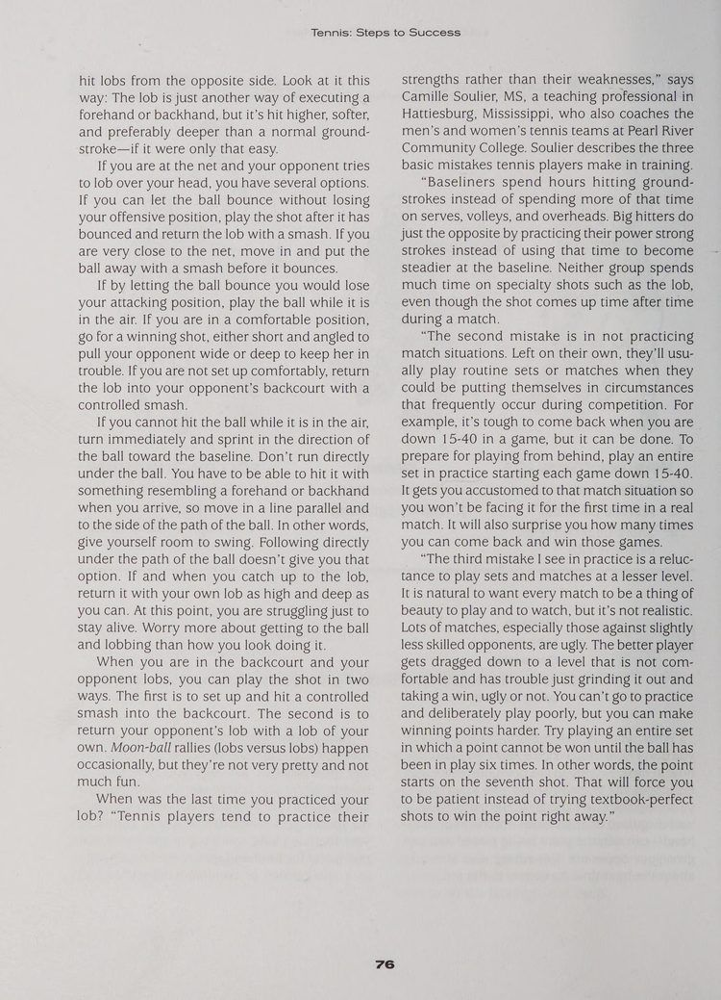
Những người chơi nâng cao thỉnh thoảng đánh một cú lốp bóng (lob) Xoáy lên bằng cách vuốt nhanh vào mặt sau của quả bóng với chuyển động gần như hướng lên trên, Mặt vợt vuông góc với Mặt sân. Một cú giật bóng hiệu quả Hình 6.5 Các khu vực mục tiêu cho các cú lốp bóng (lob). cú lốp bóng (lob) xóa sạch vợt đã căng ra của đối phương, nảy lên và tăng tốc khi bóng di chuyển ra khỏi người đánh và về phía cuối sân.
If you can, follow through to ensure depth on your return. The follow-through will be up and out, away from your body. A full follow-through will help you get the feel of gently lifting the ball into the air and deep into the backcourt. If you make a mistake, make it too deep or too high rather than too short and too low. Lob—Smash Warm-Up
Đối với những cú lốp bóng (lob) tấn công không có Xoáy lên quá mức, hãy mở Mặt vợt để hướng bóng lên trên. Điểm tiếp xúc có thể xa so với cơ thể của bạn hơn là để thực hiện các cú đánh khác bởi vì bạn đang trả lại một cú đánh bắt buộc và vì việc chờ thêm một phần giây nữa thường có nghĩa là đối thủ của bạn sẽ bị phạm lỗi thậm chí còn gần lưới hơn. Với Mặt vợt mở và cú vung từ thấp đến cao, nhấc bóng lên trên và đánh lên để xóa vợt đang căng của đối thủ. Quả bóng phải đủ cao để cô ấy không thể chạm tới nó trước khi nảy lên và đủ sâu để nó không thể quay trở lại sau khi nảy lên (hình 6.5). Nếu bạn có sự lựa chọn, hãy đánh về phía trái tay.
With a skilled partner or instructor, try the lobsmash warm-up. Stand behind the baseline, and put the ball into play 10 times with a lob. Your partner at the net hits controlled smashes directed toward your position. Continue the rally, using only controlled lobs and return smashes. Count the number of successful lob-smash combinations. Intermediate and advanced players often use this exercise as part of a warm-up. To Increase Difficulty * Count only the number of times two consecutive lob-smash combinations are completed. To Decrease Difficulty
Đi theo hướng bạn đang cố đánh. Việc thực hiện cú lốp bóng (lob) tiếp theo có thể không hoàn chỉnh như những cú đánh khác, nhưng đừng cố tình hạn chế phần này của cú đánh. Thay vào đó, hãy cầm vợt chắc chắn, giữ cố định cổ tay và cố gắng giữ bóng trên dây càng lâu càng tốt. Nếu bạn suy nghĩ quá nhiều về Hình 6.6 Hãy đi theo một cú lốp bóng (lob) tới đường giao bóng.
° Start over after each two-shot lob-smash combination. Success Check ¢ Use a delicate touch. ¢ Block or deflect. Score Your Success 1 to 3 successful lob-smash combinations = 3 points 4 to 7 successful lob-smash combinations = 5 points 8 to 10 successful lob-smash combinations = 7 points Your score
Lobbing để kiểm soát đối thủ của bạn rút ngắn thời gian theo dõi, bạn có thể bắt đầu giảm Tốc độ đầu vợt của mình trước khi tiếp xúc. một cú lốp bóng (lob) tốt sẽ đưa bạn vào thế phòng thủ một lần nữa. Từ đường giao bóng, bạn sẽ có thời gian để di chuyển Gần lưới hơn để thực hiện một Cú đập trên đầu (smash) điểm. Nếu Sau một cú lốp bóng (lob) tấn công thành công, hãy đi theo đường đánh của bạn và tiến tới đường giao bóng (hình 6.6). Nếu đối thủ của bạn thực hiện được cú lốp bóng (lob) của bạn và bóng được trả sâu vào phần sân sau của bạn, bạn vẫn ở vị trí để lùi lại và đánh bóng, anh ta sẽ trả bóng bằng một cú lốp bóng (lob). Nếu bạn thực hiện Cú đập trên đầu (smash) bóng trên không hoặc sau khi bóng bật ra trên đường cuối sân, bạn sẽ mất thế tấn công của mình.
Lobbing to Control Your Opponent Defensive Lob Drill 2. Have a partner stand at the net and alternately drive 10 shots to your forehand and backhand corners (figure 6.4). Move to the ball, and return shots with lobs. Take short steps to get started, and then shift to high gear to run toward the ball. Don’t concentrate as much on technique as on chasing down the ball and staying in the point for one more shot. Aim most lobs crosscourt. Figure 6.4 Chase it down. Chase It Down To Increase Difficulty
vấn đề. Tuy nhiên, nếu bạn tiến thẳng vào lưới, hãy thực hiện cú lốp bóng (lob) tấn công 1. Cuộc đua bóng mặt trăng. Để thực hành các cú lốp bóng (lob) tấn công, hãy chọn một vị trí trên đường cuối sân (baseline) Để tăng độ khó đối diện với một đối tác thực hành cho một cuộc tập hợp bóng trăng (hình 6.7). Giữ bóng trong cuộc mỗi lần 10 lần bằng Cú lốp bóng (lob), còn được gọi là quả bóng mặt trăng. * Chỉ tính các cú đánh cách đường cuối sân (baseline) trong vòng 10 feet.
* Play the point out after the lob; don’t take a break before the next sequence. To Decrease Difficulty ¢ Have your partner feed shots only to your forehand corner; later, only to your backhand side. Success Check * Take a quick start. * Move racket back early. « Aim high and deep. Score Your Success 1 to 3 successful lobs = 3 points 4 to 7 successful lobs = 5 points 8 to 10 successful lobs = 7 points Your score __
Đếm số cú lốp bóng (lob) thành công ở sân sau Để giảm độ khó. Cú đánh đầu tiên là một cú lốp bóng (lob) thiết lập. Việc ghi điểm bắt đầu ở lượt bắn thứ hai. * Thực hiện bài tập theo trình tự ba cú đánh (thiết lập, trả bóng lốp, trả bóng lốp khác), rồi bắt đầu lại. Kiểm tra thành công * Hãy suy nghĩ sâu sắc. ¢ Mục tiêu về phía trái tay. Ghi điểm thành công của bạn 1 đến 3 quả bóng mặt trăng thành công = 3 điểm 4 đến 7 quả bóng mặt trăng thành công = 5 điểm 8 đến 10 quả bóng mặt trăng thành công = 7 điểm Điểm của bạn ___ Hình 6.7 Cuộc tập hợp bóng mặt trăng.
OFFENSIVE LOB The offensive lob is designed to win the point by using a shot your opponent doesn’t expect. When your opponent expects you to hit a passing shot, an offensive lob will catch the other player off guard, sending the ball over his or her head for a winner. Prepare to hit the offensive lob by making it look like any other groundstroke. If you give the preparation a different look, the opponent will anticipate what you are going to do and get into a position to smash your lob.
Bài tập Cú lốp bóng (lob) tấn công 2. Rút lui Cú lốp bóng (lob) Đối với bài tập rút lui Cú lốp bóng (lob), hãy giữ một vị trí trên lưới. Đối tác của bạn đứng ở đường cuối sân và Cú lốp bóng (lob) 10 Kiểm tra thành công ¢ Chạy sang một bên đường đi của bóng. quả bóng trên đầu của bạn. Xoay người và chạy về phía đường bay của bóng và trả lại (thực hiện cú bắt bóng) bằng cú lốp bóng (lob) thuận tay hoặc trái tay sau khi bạn bắt được * cú lốp bóng (lob) cao và sâu.
The downside of the offensive lob is that the opportunity to use it presents itself infrequently, and the shot requires more timing and touch than most players are able to master. The offensive lob is not for beginners, but intermediate players can begin to experiment with it. Advanced players occasionally hit a topspin lob by rapidly brushing the back of the ball with an almost upward motion, racket face perpendicular to the court.
Ghi điểm thành công của bạn tùy theo điều đó. Đối tác của bạn đi theo đường Cú lốp bóng (lob), di chuyển đến gần đường giao bóng và cố gắng Kết thúc cú đánh điểm bằng một cú vô-lê hoặc Cú đập trên đầu (smash) bóng. 1 đến 3 thành công = 3 điểm 4 đến 7 thành công = 5 điểm Để tăng độ khó 8 đến 10 thành công = 7 điểm ¢ Chơi hết điểm trước khi tiếp tục chuỗi điểm ___ của bạn.
An effective topspin lob clears the opponent’s outstretched racket, bounces, and picks up speed as the ball moves away from the hitter and toward the back of the court. For offensive lobs that don’t have exaggerated topspin, open the racket face to direct the ball up.
Để giảm độ khó ¢ Yêu cầu đối tác của bạn đánh cao hơn để bạn có thời gian tiếp cận bóng. Khoan lốp tấn công 3. Lob — Trò chơi cú đập bóng smash Đứng ở vạch cuối sân và thực hiện một quả Cú lốp bóng (lob) ¢ Thưởng 2 điểm cho người chơi thực hiện cú lốp bóng (lob), 1 điểm cho đối thủ bắt đầu trò chơi nếu người chơi thực hiện Cú đập trên đầu (smash) bóng. một vị trí bắt vô-lê ở sân trước. Chỉ được phép Cú lốp bóng (lob) và cú đập bóng smash. Người chơi đầu tiên đạt được 10 điểm Kiểm tra thành công sẽ thắng trò chơi; sau đó đổi vai. Hãy nhớ theo dõi các cú lốp bóng (lob) thành công (qua đối thủ * Chặn Cú đập trên đầu (smash) bằng tay cầm chắc chắn và Mặt vợt mở.
The point of contact may be farEalieneahet ther back in relationship to your body than on to service other shots because you are returning a forcing line shot and because waiting another fraction of a second usually means your opponent will be committed even closer to the net. With an open racket face and a low-to-high swing, lift the ball upward and hit it up to clear your opponent’s outstretched racket. The ball should be high enough so she can’t reach it before the bounce and deep enough so it cannot be returned after the bounce (figure 6.5). If you have a choice, hit to the backhand side. Follow through in the direction you are attempting to hit.
head) vào đường dây giao bóng. Sau đó, hãy sẵn sàng di chuyển ¢ Lob đủ cao để vượt qua người chơi trên lưới và thậm chí còn gần hơn để thực hiện một Cú đập trên đầu (smash) bóng hoặc rút lui để lấy đủ sâu khiến người chơi đó phải rút lui. Cú lốp bóng (lob) sâu vào sân sau của bạn. Để tăng độ khó Ghi điểm thành công của bạn * Cố gắng bảo vệ sân đôi thay vì thắng 1 đến 3 ván = 5 điểm ở khu vực đánh đơn.
The follow-through on the lob may not be as complete as on other shots, but don’t restrict this part of the stroke deliberately. Instead, hold the racket firmly, keep your wrist steady, and try to carry the ball on your strings as long as possible. If you think too much about Figure 6.6 Follow a lob to the service line. Figure 6.5 Target areas for lobs. so
Thắng 4 đến 7 ván = 7 điểm * Thưởng 2 điểm cho người chơi đánh đập, thắng 8 đến 10 ván = 9 điểm 1 điểm cho người chơi đánh Cú lốp bóng (lob). Điểm của bạn Để giảm độ khó * Chỉ bảo vệ một nửa sân, từ điểm giữa đến đường biên đơn. Ném bóng để kiểm soát đối thủ của bạn TÓM LƯỢC THÀNH CÔNG Sử dụng cách cầm vợt chạm đất mà bạn đã luyện tập Nhìn lại điểm số của bạn trong sáu bài tập Cú lốp bóng (lob).
Lobbing to Control Your Opponent shortening the follow-through, you may begin to slow down your racket speed before contact. After a successful offensive lob, follow the line of your shot and move forward to the service line (figure 6.6). If your opponent does get to the ball, he will return it with a lob. If you stay on the baseline, you lose your offensive position.
động tác giật và rút ngắn động tác vung vợt ra sau của bạn. Nếu bạn đang ở phần Nhập điểm cho mỗi bài tập trong bảng 6.1 và gặp rắc rối, hãy chiến đấu để sống sót ngay cả khi kỹ thuật của bạn cộng chúng lại để đánh giá mức độ thành công hoàn toàn của bạn. Nếu bạn đau khổ. Thắng một trận là chiến, không phải mỹ nữ được 21 trên 40 điểm có thể, tiến vào tranh tài. Hãy nhớ: Tập chân nhanh, bước tiếp theo sẽ mở.
If you go all the way to the net, however, Offensive Lob Drill 1. a good lob will put you on the defensive again. From the service line you will have time to move Closer to the net for a point-ending smash. If your lob is returned deep into your backcourt, you will still be in position to move back and hit a smash in the air or after the ball has bounced on your side. Moon-Ball Rally
Mặt vợt, cú vung từ thấp đến cao và đủ lực đánh để đưa bóng vào sâu. Bảng 6.1 Tóm tắt tính điểm Bài tập lốp 1. Bài tập lốp thả và đánh như, Bài tập lốp bóng phòng thủ OUE GES 1. Khởi động Lob-Cú đập trên đầu (smash) ios OUD OE 7 2. Đuổi theo OU hoặc 7 Bài tập lốp tấn công 1. Cuộc tập hợp bóng trăng ctu MOULOE 7 2. Lob rút lui một oMtory 3. Trò chơi Lob-Cú đập trên đầu (smash) Soe (OE OLS TOTAL i wont oF 20 Đập vỡ cú đánh từ trên cao với uy quyền Bạn đã làm đúng mọi thứ. Vị trí vững chắc. Bên trong ô giao bóng, hãy giành chiến thắng với những cú đánh nền đưa đối thủ của bạn vào thế phòng thủ, đánh vào phần trống của sân và ở vị trí thuận lợi. Cú đánh tiếp cận của bạn đã ghim cô ấy ra xa đối thủ Khi đối thủ của bạn vào góc. Đáng lẽ bạn phải thắng.
To practice offensive lobs, take a position on the baseline opposite a practice partner for a moonball rally (figure 6.7). Keep the ball in play 10 times each with lobs, also known as moon balls. Count the number of successful lobs hit into the backcourt. The first shot is a setup lob. Scoring starts on the second shot. Figure 6.7 Moon-ball rally. To Increase Difficulty * Count only shots that land within 10 feet of the baseline. To Decrease Difficulty * Perform the drill in three-shot sequences (setup, lob return, another lob return), and then start again. Success Check * Think deep. ¢ Aim to the backhand side.
đánh vào phía sau anh ta. Trong những trường hợp khi cú lốp bóng (lob) Bây giờ cô ấy thực hiện một cú lốp bóng (lob) yếu và bạn đã sẵn sàng tiến sâu và có đủ thời gian để quay lại để Kết thúc cú đánh điểm. và để bóng nảy lên, thuộc về người chiến thắng theo góc. Đây là kịch bản hoàn hảo cho một Cú đập trên đầu (smash) bóng từ trên cao - một cú đánh mạnh, tấn công, mạnh thường được đánh từ sân trước. Cơ hội cú đập bóng smash không phải lúc nào cũng xảy ra theo cách này mà là khi hoặc đánh sâu vào góc trống. Cũng sẽ có lúc bạn buộc phải tung ra những Cú đập trên đầu (smash) bóng dù đang ở thế phòng thủ. Ở đây, ý tưởng là lấy lại bóng, đưa bóng càng sâu càng tốt, đây là cách thực hiện cú đánh. Những gì bạn làm với những Cú đập trên đầu (smash) từ trên cao tùy thuộc vào khả năng của sân đấu và hãy "tua lại" tinh thần của bạn để định vị bản thân trong phần còn lại của điểm.
Score Your Success 1 to 3 successful moon balls = 3 points 4 to 7 successful moon balls = 5 points 8 to 10 successful moon balls = 7 points Offensive Lob Drill 2. Lob Retreat For the lob retreat drill, take a position at the net. Your partner stands at the baseline and lobs 10 balls over your head. Turn and run to the side of the flight of the ball, and return it (make a get) with a forehand or backhand lob once you catch up to it. Your partner follows the line of the lob, moves in near the service line, and attempts to finish the point with a volley or smash. To Increase Difficulty ¢ Play the point out before continuing the sequence. To Decrease Difficulty ¢ Have your partner hit higher to allow you time to reach the ball. Offensive Lob Drill 3.
ĐÁNH MỘT Cú đập trên đầu (smash) trên đầu Phần thời gian chiếu của Cú đập trên đầu (smash) từ trên cao đập vào người chơi đang đảm nhận một vị trí cố định. Cú đánh diễn ra khi Mặt vợt ép bóng qua nhiều bước nhỏ để vào vị trí, giành phần thắng. Kết thúc công việc của một Cú đập trên đầu (smash) bắt đầu bằng bàn chân. Hãy nhớ ba từ này khi bạn thực hiện Cú đập trên đầu (smash) từ trên cao: Di chuyển đôi chân của bạn! Người chơi cố gắng vào một vị trí quá sớm trong khi chờ đợi một cú lốp bóng (lob) đi xuống vợt về phía sau và phía sau đầu của bạn, đồng thời cố gắng chuyển trọng lượng của bạn về phía trước bằng cú vung vợt của bạn. Khi bạn tiếp xúc, cánh tay của bạn phải duỗi cao nhất có thể và hơi đưa về phía trước cơ thể.
Stand at the baseline and put a lob into play against an opponent who begins the game in a forecourt volleying position. Only lobs and smashes are allowed. The first player to make 10 points wins the game; then switch roles. Remember to follow successful lobs (over your opponent's head) to the service line. Then be ready to move in even closer for a smash or retreat to retrieve a lob deep into your backcourt. To Increase Difficulty * Try to protect the doubles court instead of the singles area. * Award 2 points to the player hitting smashes, 1 point to the player hitting lobs. To Decrease Difficulty
đang gặp rắc rối. Nhiều thứ có thể làm thay đổi đường bay dự kiến của quả bóng - gió, độ xoáy, quỹ đạo hoặc vận tốc bị đánh giá sai - và tạo ra vấn đề cho tay cầm của Cú đập trên đầu (smash) trên cao phải là cú thuận tay (forehand) hướng đông hoặc kiểu lục địa. Bất kỳ cách cầm vợt nào khác sẽ cấm bạn đánh bóng mạnh nhất có thể. Và, bằng cách xoay cổ tay của bạn ngay trước khi tiếp xúc, bạn có thể đánh cú đánh này bằng phẳng. Người mới bắt đầu và người ở trình độ trung cấp có thể cầm vợt bằng cách cầm vợt thuận tay để thực hiện Cú đập trên đầu (smash) bóng trên không (overhead), nhưng hầu hết tất cả người chơi trình độ cao đều sử dụng cách Cách cầm vợt Continental (hình 7.1). Giống như một cú giao bóng, kiểu Cách cầm vợt Continental cho phép bạn Bật cổ tay (không có độ xoáy) và dùng lực hoặc bằng độ xoáy để làm cho bóng di chuyển ra xa đối thủ.
* Protect only half the court, from the center mark to the singles sideline. Success Check ¢ Run to the side of the path of the ball. * Lob high and deep. Score Your Success 1 to 3 successful gets = 3 points 4 to 7 successful gets = 5 points 8 to 10 successful gets = 7 points Lob—Smash Game ¢ Award 2 points to the player hitting lobs, 1 point to the player hitting smashes. Success Check * Block the smash with a firm grip and open racket face. ¢ Lob high enough to clear the net player and deep enough to make him or her retreat. Score Your Success 1 to 3 games won = 5 points 4 to 7 games won = 7 points 8 to 10 games won = 9 points Your score
Hãy quyết liệt thực hiện Cú đập trên đầu (smash) bóng, nhưng đừng cho rằng đó sẽ là người chiến thắng. Bạn có thể tác động vào quả bóng và nó cho bạn một số lựa chọn về việc phải làm gì với quả bóng, chẳng hạn như đánh một Cú đập trên đầu (smash) đầu tiên để chuẩn bị cho việc tiêu diệt quả bóng thứ hai. Dù bằng cách nào, mục tiêu là hoàn thành điểm. đánh Cú đánh phẳng (không quay), đánh bóng bằng xoáy hoặc đánh từ trong ra ngoài thay vì ngang cơ thể bạn.
Lobbing to Control Your Opponent SUCCESS SUMMARY Use the groundstroke grips you have been pracLook back at your scores for the six lob drills. ticing, and shorten your backswing. If you are in Enter your scores for each drill in table 6.1, and trouble, fight to stay alive even if your technique add them up to rate your total success. If you suffers.
Hình 7.1 CHUẨN BỊ Đập vỡ trên cao TIẾP THEO Các bước ngắn, nhanh chóng; chân loạng choạng như một phần tưVươn cao để đánh; tiếp xúc 1. Xoay cú đánh lên phía trước và phía trước cơ thể 2. Vợt di chuyển ra xa phía sau để chuyền Xoay hông và thân vai, ngang, sau đó xuống hông và vai3. Di chuyển đến gần lưới hơn trong trường hợp các đường tới lưới Búng cổ tay khi tiếp xúc Đối thủ trả lại cú đánh ngược viết tắt của bạn; Gần lưới, đánh vợt về sớm (khi người chiến thắng cú lốp bóng (lob) nảy lên, bạn có thể rời xa lưới, dành thời gian cho một cú vung vợt lùi hoàn toàn) vị trí Kiểu cầm bóng kiểu lục địa ở phía trước cơ thể; tay đối diện chỉ vào quả bóng
Winning a match is war, not a beauty score 21 out of a possible 40 points, advance to contest. Remember: Practice quick feet, an open the next step. racket face, a low-to-high swing, and enough follow-through to get the ball deep. Table 6.1 Scoring Summary Lob Drill 1. Drop-and-hit lobs as, OUE GES Defensive Lob Drills 1. Lob-smash warm-up ios OUD OE 7 2. Chase it down a OU Or 7 Offensive Lob Drills 1. Moon-ball rally ctu MOULOE 7 2. Lob retreat a oMtory 3. Lob-smash game Soe (OE OLS TOTAL i wont oF 20
Bước 7: Cú Đập Smash Trên Đầu Đầy Uy Lực
Step 7: Smashing the Overhead Shot With Authority
Đập vỡ cú đánh từ trên cao bằng uy quyền
Smashing the Overhead Shot With Authority
Sai lầm Cú đập thiếu sức mạnh.
You've done everything right so far.
Sửa Hãy tiếp xúc ở phía trước cơ thể bạn.
Strong groundstrokes put your opponent in a defensive position.
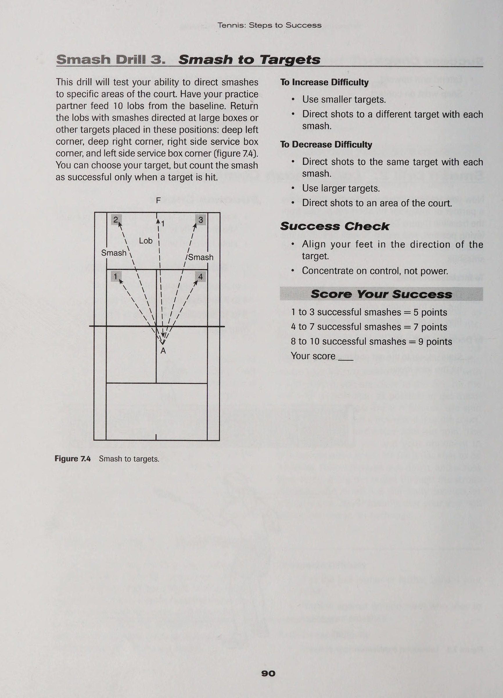
Cú đập sai bước đi vào lưới.
Your approach shot pinned her to the corner.
Sửa Đừng để bóng rơi quá thấp. Đưa tay lên để đánh với cánh tay mở rộng. Bởi vì cách Cách cầm vợt Continental gần với cú trái tay (backhand) (backhand) cũng như với cú thuận tay (forehand) (forehand), và bởi vì bạn đánh Cú đập trên đầu (smash) ở phía thuận tay của mình. Để thực hành cú Bật cổ tay, hãy đứng đủ gần lưới để chạm vào lưới bằng một động tác cú đập bóng smash từ trên cao. Bắt đầu với vợt của bạn được đặt ở phía sau cơ thể, bạn phải thực hiện một số điều chỉnh. Đầu của bạn. Bây giờ vung lên, nhưng ngay trước khi điều chỉnh chính là xoay cổ tay của bạn ra ngoài ngay trước khi tiếp xúc (hình 7.2). Trong một điểm tiếp xúc ngoài tưởng tượng, hãy xoay cổ tay của bạn ra ngoài và búng xuống sao cho cả hai cạnh bên đều xoay hoặc Bật cổ tay, khi nhìn khung vợt của bạn chạm vào đầu lưới ở mu bàn tay, ngón tay cái của bạn sẽ rời khỏi cơ thể theo chiều dọc và hướng xuống. Cách quay sấp ở cổ tay cho phép bạn đánh Cú đánh phẳng và với tốc độ nhanh hơn so với khi thực hiện các cú đánh nền. Nếu bạn không Bật cổ tay, cú đánh sẽ có thời gian quá giống nhau. Nói cách khác, hãy tát lưới bằng Mặt vợt của bạn. Nếu bạn làm đúng, bạn sẽ nghe thấy âm thanh nứt, đập khi tiếp xúc.
A strong volley should have won the point, but she managed to chase it down. Now she puts up a weak lob and you're ready to finish the point. This is the perfect scenario for an overhead smash—an aggressive, offensive, hard shot usually hit from the forecourt. The opportunity to smash doesn’t always happen this way, but when it does, here’s how to execute the shot. What you do with overhead smashes depends on court position. Inside the service boxes, go for winners by hitting into the open part of the court and away from your opponent. When your opponent begins to anticipate where you are going to hit, hit behind him.
Động tác bằng chân kém là một sai lầm phổ biến khi thực hiện Cú đập trên đầu (smash) bóng, ngay cả ở trình độ cao cấp. Quá nhiều xoáy và không đủ tốc độ, mặc dù có những lúc các Cú đập trên đầu (smash) phải được đánh bằng xoáy để làm cho bóng đi chệch hướng và ra ngoài, nhiều người chơi nhìn thấy một cú lốp bóng (lob) sắp tới, đào sâu vào một vị trí cố định rồi cố gắng đánh. Tuy nhiên, vì các cú lốp bóng (lob) lơ lửng trên không lâu hơn các cú đánh khác nên các biến số như vận tốc, độ xoáy và quỹ đạo trong tầm với của đối thủ.
On those occasions when the lob goes deep and you have enough time to get back and let the ball bounce, go for the angled winner or hit deep into the open corner. There also will be times when you are forced to hit smashes even though you are in a defensive position. Here the idea is to get the ball back, send it as deep as possible, and hit your mental “rewind” to position yourself for the rest of the point.
có thể thay đổi trong quá trình bóng bay. Nếu đặt quá sớm, bạn có thể hiểu sai một số biến số đó và không thực hiện được những điều chỉnh cần thiết. Thực hiện vài bước nửa và một phần tư ngắn trong khi chuẩn bị đánh. Giữ cho đôi chân của bạn luôn hoạt động sẽ giúp bạn ở tư thế chủ động hoàn hảo để đánh khi thời cơ đến. Ngay khi bạn thấy rằng mình có thể thực hiện một Cú đập trên đầu (smash) bóng, hãy xoay người về phía lưới sao cho một chân hướng về phía trước và một chân hướng về sau, giống như khi giao bóng. Người chơi thuận tay phải đặt chân phải về phía sau và chân trái về phía trước. Đối với tay vợt thuận tay trái, chân trái lùi về phía sau và chân phải tiến về phía trước. Khi bạn đánh, đẩy bằng chân sau và chuyển trọng lượng của bạn về phía trước.
HITTING AN OVERHEAD SMASH The showtime part of an overhead smash comes when the racket face crushes the ball for a winner. The working end of a smash begins with the feet. Remember these three words when you go for the overhead smash: Move your feet! The player who digs in to a position too early while waiting for a lob to come down is in trouble. Many things can alter the expected flight path of the ball—wind, spin, misjudged trajectory or velocity—and create problems for the player who assumes a fixed position.
Hình 7.2 Khớp cổ tay. Máy tập chân. Shadow Smash và Touch Bắt đầu trên lưới, xoay người, lùi nhanh (thực hiện hai bước Kiểm tra thành công đến ba bước), đặt chân sau và thực hiện động tác cú đập bóng smash mà không đánh bóng. * Hãy nhanh chân. * Giữ bên luôn hướng về phía lưới khi di chuyển về phía trước ngay lập tức để chạm lưới.
Take lots of little steps to get into position, get the racket back and behind your head, and try to shift your weight forward with your swing. When you make contact, your arm should be extended as high as you can reach and slightly in front of your body.
bằng vợt của bạn. Hoàn thành chuỗi động tác lên xuống 10 lần. Ghi điểm thành công của bạn để tăng độ khó 1 đến 3 chuỗi thành công = 1 điểm e Rút lui về vạch giao bóng sau mỗi lần chạm lưới. 4 đến 7 chuỗi thành công = 2 điểm 8 đến 10 chuỗi thành công = 3 điểm Để giảm độ khó Điểm của bạn ___ ¢ Thực hiện bài tập trong chuyển động chậm cho đến khi bạn cảm thấy thoải mái hơn với thói quen.
The grip on the overhead smash must be either an eastern forehand or a continental. Any other grip will prohibit you from striking the ball as hard as you should. And, by rotating your wrist just before contact, you can hit this shot either flat (with no spin) and forcefully or with spin to make the ball move away from your opponent.
Để chuẩn bị cho Cú đập trên đầu (smash), hãy mang vợt đánh những Cú đập trên đầu (smash) tốt hơn. Việc chỉ tay không phải là điều cần thiết ngay phía trước cơ thể của bạn, sau đó hãy thực hiện điều đó về cơ bản cho cú đánh này. một vị trí phía sau đầu của bạn. Hướng vợt lên. Chuyển động xoay Cú đập trên đầu (smash) trên cao cũng tương tự. Bằng cách loại bỏ cú xoay hoàn toàn, bạn có thể giảm bớt cú giao bóng mạnh. Đưa vợt của bạn lên và về phía trước như thể ném nó qua lưới.
Be aggressive with the smash, but don’t assume it’s a going to be a winner. It’s okay to hit a first smash as a setup for the kill on the second one. Either way, the objective is to finish the point. Figure 7.1 Overhead Smash Beginners and intermediates may hold the racket with a forehand grip for the overhead smash, but almost all advanced players use a continental grip (igure 7.1).
biên độ lỗi. Nếu bạn có thế trận tốt, bạn có thể tạo ra đủ lực để đưa Reach lên cao nhất có thể để tiếp xúc. Khi bạn vung, chuyển trọng lượng của bạn về phía trước. Đánh bóng vào một điểm ở phía trước cơ thể bạn. Khi bạn đánh, bóng đi xa hoặc đánh vào khu vực trống. Trong những trường hợp hiếm hoi khi bóng nảy lên và bạn có nhiều thời gian để thực hiện một cú vung hoàn toàn, hãy thả vợt xuống giống như khi bạn thực hiện một cú giao bóng, xoay cổ tay ra phía ngoài và dùng ngón tay cái búng xuống. Nếu bạn ở gần lưới, hãy đánh bóng với độ xoáy càng ít càng tốt để đưa bóng lên cao sau lưng và để nó bay. Bạn thậm chí có thể nhận được nhiều sức mạnh hơn với một cú vung vợt ra sau hoàn toàn nhưng với tốc độ tối thiểu. Nếu bạn đang ở giữa sân, việc sử dụng cú đánh xoáy sẽ kém hiệu quả và kém chính xác hơn để khiến bóng đi theo đường cong xuống sân.
As with a serve, the continental grip allows you to snap your wrist on impact with the ball, and it gives you some choices about what to do with the ball, like hitting it flat (no spin), hitting it with spin, or hitting it inside out instead of across your body. ie PREPARATION Short, quick steps; feet staggered like a quarterback setting up to pass Hips and shoulders sideways to the net Abbreviated backswing; racket back early (on lobs that bounce, you may have time for a full backswing) Continental grip Ball in front of body; opposite hand pointing to ball SWING Reach high to hit; contact up and in front of body Rotate hips and shoulders Snap wrist at contact Close to the net, go for the winner Away from the net, go for placement FOLLOW-THROUGH 1. Swing through the shot 2. Racket moves away from body, across, then down 3. Move closer to net in case Opponent returns your smash Smashing the Overhead Shot With Authority Misstep The smash lacks power. Correction Misstep Smashes go into the net.
so với động tác vung vợt ra sau hạn chế. Nếu bạn đang ở sân sau, hãy sử dụng cú xoáy. Khoảng cách giữa bạn và đối thủ trong tình huống cuối cùng này là quá xa để một cú đánh phẳng có hiệu quả. Thực hiện theo hướng ra ngoài, xuống và khắp cơ thể bạn. Đưa vợt qua cú đánh Hầu hết các huấn luyện viên quần vợt đều yêu cầu học sinh của họ chỉ vào quả bóng bằng tay thuận khi họ lấy lại vợt. Chuyển động này có thể không được tự nhiên và sẽ mất thời gian để phát triển kỹ thuật.
Correction Make contact in front of your body. Don't let the ball drop too low. Reach up to hit with your arm extended. Because the continental grip is as close to the backhand as it is to the forehand, and because you hit the smash on the forehand side of your body, you have to make some adjustments. The main adjustment is rotating your wrist outward just before contact (figure 7.2).
Việc chỉ tay có thể cải thiện Sự tập trung và thực hiện một cách tự nhiên, đồng thời đưa nó về tư thế sẵn sàng (ready position) để bạn nhận biết được vị trí của mình so với bóng. cú đánh tiếp theo. Đừng bao giờ cho rằng cú đánh của bạn sẽ chỉ sử dụng kỹ thuật trỏ nếu nó giúp bạn là người cuối cùng trong một cuộc trao đổi. Smash Drill 1. Tự ném Đứng gần lưới, cầm vợt của bạn ở tư thế nghiêng để tăng độ khó. Tung 10 quả bóng liên tiếp để¢ Tung quả bóng cao hơn hoặc xa hơn về phía sau mắt của bạn một chút và bay cao lên không trung. Với mỗi lần ném, hãy vươn cao và đánh một Cú đập trên đầu (smash). Giữ bóng ở phía trước ¢ Thực hành với đối thủ đang cố gắng chiếm vị trí của bạn trên sân và không cho phép bạn đánh trả các Cú đập trên đầu (smash).
During an outward rotation or wrist snap, when looking at the back of your hand, your thumb will go away from your body across and down. The pronation in the wrist allows you to hit the ball flat and with more pace than you would on groundstrokes. If you don’t snap your wrist, the shot will have too much spin and not enough velocity, although there are times when smashes should be hit with spin to make the ball curve away and out of the reach of an opponent. Figure 7.2 Wrist snap. To practice the wrist snap, stand close enough to the net to touch it with an overhead smash motion. Start with your racket cocked behind your head.
bóng rơi quá thấp. Cố gắng làm cho quả bóng nảy lên Để giảm độ khó cao sang phần sân đối diện để đối thủ không thể đánh trả. * Luyện tập kỹ thuật chứ không phải sức mạnh. Đập vỡ cú đánh từ trên cao với uy quyền Kiểm tra thành công Điểm thành công của bạn ¢ Duỗi cánh tay lên trên. 1 đến 3 lần cú đập bóng smash thành công = 1 điểm * Búng cổ tay khi tiếp xúc.
Now swing upward, but just before the imaginary contact point rotate your wrist outward and snap down so that both side edges of your racket frame hit the top of the net at the same time. In other words, slap the net with your racket face. If you do it correctly, you should hear a cracking, smacking sound on contact.
4 đến 7 lần đập thành công = 2 điểm 8 đến 10 lần đập thành công = 3 điểm Điểm của bạn ___ Smash Drill 2. Lob — Kết hợp đập Bây giờ bạn đã sẵn sàng cho một số cuộc tập trận bắn đạn thật. Thành công Kiểm tra đối tác hoặc người hướng dẫn thực hiện cú ném bóng thiết lập ngắn từ đường cuối sân (baseline) (hình 7.3). Bắt đầu bài tập từ vol* Giữ vai đối diện hướng về phía lưới cho đến khi bạn sẵn sàng vung vợt.
Poor footwork is a common mistake when hitting the smash, even at the elite level. Too many players see a lob coming, dig into a fixed position, and then try to hit. Because lobs suspend in the air longer than other shots, however, variables such as velocity, spin, and trajectory may change during the flight of the ball.
vị trí nằm nghiêng và trả lại 10 thùy trực tiếp tại bộ nạp. Đảo ngược vai trò sau mỗi loạt Cú lốp bóng (lob) và cú đập bóng smash. * Ngẩng đầu lên khi đánh. Ghi điểm thành công của bạn để tăng độ khó 1 đến 3 Cú đập trên đầu (smash) thành công = 3 điểm * Hướng các Cú đập trên đầu (smash) của bạn ra khỏi đường dẫn 4 đến 7 Cú đập trên đầu (smash) thành công = 5 điểm nhưng vào sân đánh đơn.
If you set too soon, you might misread some of those variables and fail to make the needed adjustments. Take several short half- and quarter- steps while preparing to hit. Keeping your feet active will help you be in the perfect active position to hit when the time comes.
8 đến 10 lần cú đập bóng smash thành công = 7 điểm * Ghi điểm sau mỗi lần cú đập bóng smash. Điểm của bạn ___ Để giảm độ khó ¢ Đứng gần lưới hơn và nhờ đồng đội của bạn đánh bóng thấp hơn. Hình 7.3. Kết hợp thùy-đập. Mũi khoan đập 3. Đập vào mục tiêu Mũi khoan này sẽ kiểm tra khả năng của bạn trong việc hướng các Cú đập trên đầu (smash) để tăng độ khó cho các khu vực cụ thể của sân. Hãy thực hành ¢ Sử dụng các mục tiêu nhỏ hơn.
As soon as you see that you can hit a smash, turn your side to the net so that one foot is forward and one is back, as in the serve. A righthanded player puts the right foot back and the left foot forward. For a left-handed player, the left foot goes back and the right foot goes forward. As you hit, push off with the back foot and transfer your weight forward. Footwork Drill. Shadow Smash and Touch
đối tác ăn 10 thùy tính từ đường cuối sân (baseline). Quay trở lại * Các cú đánh trực tiếp tới một mục tiêu khác nhau bằng mỗi cú lốp bóng (lob) với những Cú đập trên đầu (smash) hướng vào các hộp lớn hoặc Cú đập trên đầu (smash). các mục tiêu khác đặt ở các vị trí: góc sâu bên trái, góc sâu bên phải, ô giao bóng bên phải Góc Giảm Độ Khó và góc hộp giao bóng bên trái (hình 7.4).
Start at the net, turn, move back quickly (take two to three steps), plant the back foot, and swing through the smash motion without hitting the ball. Then move forward immediately to touch the net with your racket. Complete the series of up-andback movements 10 times.
¢ Mỗi lần bắn trực tiếp vào cùng một mục tiêu Bạn có thể chọn mục tiêu của mình, nhưng hãy tính số lần đập vỡ. chỉ thành công khi bắn trúng mục tiêu. ¢ Sử dụng các mục tiêu lớn hơn. ¢ Các cú đánh trực tiếp vào một khu vực của sân. Kiểm tra thành công ¢ Căn chỉnh chân của bạn theo hướng của mục tiêu. * Tập trung vào kiểm soát, không phải quyền lực. Ghi điểm thành công của bạn 1 đến 3 lần đập thành công = 5 điểm 4 đến 7 lần đập thành công = 7 điểm 8 đến 10 lần đập thành công = 9 điểm Điểm của bạn ___ Hình 7.4 Đập vào mục tiêu.
To Increase Difficulty e Retreat to the service line after each net touch. To Decrease Difficulty ¢ Execute the drill in slow motion until you feel more comfortable with the routine. Success Check * Be quick in the feet. * Keep the side always toward the net when moving back. Score Your Success 1 to 3 successful sequences = 1 point 4 to 7 successful sequences = 2 points 8 to 10 successful sequences = 3 points
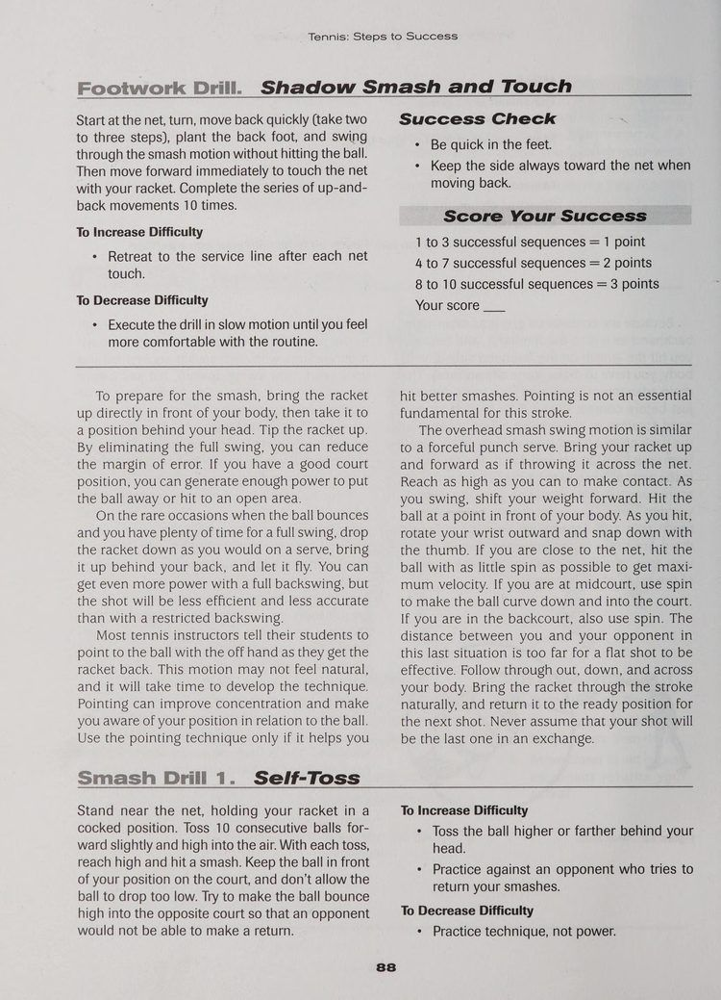
Đập vỡ cú đánh từ trên cao bằng Cú đập trên đầu (smash) mạnh chính xác 4. Kết hợp cú đập bóng smash Những Cú đập trên đầu (smash) bóng thường được theo sau bởi những cú vô-lê ném xa. Để luyện tập phối hợp cú đập bóng smash, hãy Kiểm tra thành công * Phục hồi nhanh chóng. một đối tác đứng ở vạch cuối sân với một rổ bóng. Bắt đầu ở gần lưới và di chuyển vào vị trí * Giơ tay và vợt lên phía trước để đập 10 cú lốp do đối tác của bạn đưa ra. Sau mỗi cú vô-lê.
To prepare for the smash, bring the racket up directly in front of your body, then take it to a position behind your head. Tip the racket up. By eliminating the full swing, you can reduce the margin of error. If you have a good court position, you can generate enough power to put the ball away or hit to an open area.
cú đập bóng smash, tiến về phía trước để thực hiện cú vô-lê chiến thắng trước một cú đánh ngắn do đồng đội của bạn thiết lập bằng quả bóng thứ hai. Ghi điểm thành công của bạn 1 đến 3 pha phối hợp cú đập bóng smash thành công = 5 điểm Để tăng độ khó 4 đến 7 pha phối hợp cú đập bóng smash thành công * Yêu cầu đối tác của bạn đánh những cú lốp bóng (lob) sâu hơn hoặc thiết lập rộng hơn ở lượt cấp thứ hai. =7 điểm 8 đến 10 pha phối hợp cú đập bóng smash thành công = 9 điểm * Chỉ tính các pha phối hợp thành công khi cú vô-lê của bạn rõ ràng là người chiến thắng.
On the rare occasions when the ball bounces and you have plenty of time for a full swing, drop the racket down as you would on a serve, bring it up behind your back, and let it fly. You can get even more power with a full backswing, but the shot will be less efficient and less accurate than with a restricted backswing. Most tennis instructors tell their students to point to the ball with the off hand as they get the racket back.
Điểm của bạn Để giảm độ khó * Đừng giữ điểm; chỉ cần bắn trúng hai cú đánh cần thiết. Smash Drill 5. Lobbing và Smashing Đã đến lúc kết hợp mọi thứ lại với nhau để thực hiện cú lốp bóng (lob) * Ghi 2 điểm thay vì 1 điểm cho mỗi Cú đập trên đầu (smash) bóng chiến thắng. trò chơi. Chọn một vị trí trên lưới và để đồng đội của bạn đứng ở hoặc phía sau đường biên một chút.
This motion may not feel natural, and it will take time to develop the technique. Pointing can improve concentration and make you aware of your position in relation to the ball. Use the pointing technique only if it helps you Smash Drill 1. Self-Toss hit better smashes.
Bắt đầu mỗi điểm bằng một cú lốp bóng (lob). Cú đập bóng smash, và Kiểm tra thành công sẽ chỉ ra điểm. Chỉ có hai cú đánh đầu tiên lần lượt phải là một cú lốp bóng (lob) và một Cú đập trên đầu (smash) bóng. Sau cú đánh đầu tiên * Đập rộng để mở sân cho cú lốp bóng (lob) tiếp theo và cú đập bóng smash, mọi chuyện đều ổn. Người chơi đầu tiên * Không đập vào cùng một vị trí trong các lần bắn liên tiếp. giành được 10 điểm sẽ thắng trò chơi.
Pointing is not an essential fundamental for this stroke. The overhead smash swing motion is similar to a forceful punch serve. Bring your racket up and forward as if throwing it across the net. Reach as high as you can to make contact. As you swing, shift your weight forward. Hit the ball at a point in front of your body.
Để tăng độ khó Ghi điểm thành công của bạn * Cho phép đối tác của bạn bắt đầu điểm bằng một cú lốp bóng (lob) sâu hơn. Thắng từ 1 đến 3 ván = 5 điểm * Chỉ kiếm được điểm khi Cú đập trên đầu (smash) của bạn Kết thúc cú đánh từ 4 đến 7 ván thắng = 7 điểm khi trao đổi. Thắng 8 đến 10 ván = 9 điểm Điểm của bạn __ Để giảm độ khó * Yêu cầu đối tác của bạn bắt đầu điểm bằng một cú lốp bóng (lob) nông và thấp.
As you hit, rotate your wrist outward and snap down with the thumb. If you are close to the net, hit the ball with as little spin as possible to get maximum velocity. If you are at midcourt, use spin to make the ball curve down and into the court. If you are in the backcourt, also use spin.
TRẢ LẠI Cú đập trên đầu (smash) trên đầu Khi bạn trả lại Cú đập trên đầu (smash) từ trên cao, bất cứ nơi nào bạn nghĩ bóng đang hướng tới,-ngay cả khi bạn đi. Thời gian phản ứng, dự đoán và may mắn đôi khi đi sai hướng. quan trọng hơn kỹ thuật khi trả bóng Giữ vợt của bạn thậm chí còn chặt hơn so với việc bạn giữ nó trong những cú vô-lê. Bạn sẽ không có thời gian cho một Cú đập trên đầu (smash) lưng. Hãy quên đi việc kiểm tra thành công. Tập trung vào các kỹ thuật sinh tồn! Lấy lại bóng theo bất kỳ cách nào bạn xoay. Tìm cách tiếp cận bóng và Vô-lê chặn lại bằng Mặt vợt mở của bạn. Nếu bạn có thể. Trong hầu hết các trường hợp, điều này có nghĩa là cố gắng đáp trả Cú đập trên đầu (smash) bóng bằng một cú lốp bóng (lob) phòng thủ cao và sâu. Mặc cả là đủ tốt hoặc đủ may mắn để trả đòn, hồi phục ngay lập tức. Một cái khác là thời gian và một cơ hội nữa để giữ vững quan điểm.
The distance between you and your opponent in this last situation is too far for a flat shot to be effective. Follow through out, down, and across your body. Bring the racket through the stroke naturally, and return it to the ready position for the next shot. Never assume that your shot will be the last one in an exchange. Stand near the net, holding your racket in a cocked position. Toss 10 consecutive balls forward slightly and high into the air. With each toss, reach high and hit a smash. Keep the ball in front of your position on the court, and don’t allow the ball to drop too low. Try to make the ball bounce high into the opposite court so that an opponent would not be able to make a return.
Cố gắng đoán xem Cú đập trên đầu (smash) có thể sẽ xảy ra ở đâu trên đường đi. để bạn có thể bắt đầu đuổi theo nếu đối thủ của bạn mắc lỗi và đánh bóng. Nhiều người chơi phát triển kiểu đánh đập có thể đánh trả bằng cú đánh nền, đập vào cùng một khu vực của sân. Khi bạn quan sát một kiểu cú đập bóng smash, bạn không thể phản ứng thái quá. Những người chơi thiếu kinh nghiệm có xu hướng cố gắng đánh bóng bằng cú thuận tay (forehand) để đưa ra phán đoán có căn cứ về hướng hoặc cú trái tay (backhand) (backhand) khi họ nhận ra rằng họ vẫn ở trong cú đánh tiếp theo của đối thủ. Đừng đứng yên và chỉ tay và bóng sẽ không đến nhanh như mong đợi bóng sẽ đến gần. Khi người chơi khác vỗ nhẹ. Hãy dành thêm một phần giây đó, đo lường số lần cú đập bóng smash, thực hiện cam kết và đi bóng, rồi thực hiện một cú sút.
To Increase Difficulty ¢ Toss the ball higher or farther behind your head. ¢ Practice against an opponent who tries to return your smashes. To Decrease Difficulty * Practice technique, not power. Smashing the Overhead Shot With Authority Success Check ¢ Extend arm upward. * Snap wrist on contact. Score Your Success 1 to 3 successful smashes = 1 points 4 to 7 successful smashes = 2 points 8 to 10 successful smashes = 3 points Smash Drill 2. Lob—Smash Combination Now you are ready for some live-fire drills. Have a partner or instructor hit short setup lobs from the baseline (figure 7.3).
TÓM TẮT THÀNH CÔNG Hầu hết người chơi đều thích đánh một Cú đập trên đầu (smash). Bạn có thể đánh vào sân rộng, thực hiện cú đánh mạnh về phía quả bóng và dứt điểm một điểm, bằng cách này hoặc vào lưới và phục hồi khả năng thực hiện cú đánh khác. Điều quan trọng là sự chuẩn bị. Thực hiện nhiều cú sút nhanh, Cú lốp bóng (lob) hoặc cố gắng bắt vô-lê. bước ngắn để di chuyển vào vị trí tốt nhất. Di chuyển Bước này mô tả sáu bài tập để hoàn thiện vợt lùi sớm và giữ bóng ở Cú đập trên đầu (smash) trước. Nhập điểm của bạn cho mỗi bài tập vào bảng cơ thể của bạn. Cho dù Cú đập trên đầu (smash) của bạn khó đến đâu, 7.1 và cộng chúng lại để đánh giá mức độ thành công hoàn toàn của bạn.
Start the drill from a volleying position, and return 10 lobs directly at the feeder. Reverse roles after each series of lobs and smashes. To Increase Difficulty * Direct your smashes away from the feeder but into the singles court. * Play the point out after each smash. To Decrease Difficulty ¢ Stand closer to the net and have your partner hit the lobs lower. Success Check * Keep opposite shoulder toward the net until you are ready to swing. * Hold head up while hitting.
nó có thể không phải là người chiến thắng. Ngay khi đánh tới Điểm thì ít nhất 20 điểm trước khi chuyển sang bước 8. Bảng 7.1 Tóm tắt tính điểm Bài tập chân 1. Cú đập bóng smash và chạm __. . Máy khoan đập UL OFS 1. Cổ tay tự tung OUL@fes 2. Lob-đập kết hợp CULO, 3. Đập vào mục tiêu Ouro, 4. Kết hợp cú đập bóng smash ra Omg 5. Lobbing và đập __ | NGUỒN?
Score Your Success 1 to 3 successful smashes = 3 points 4 to 7 successful smashes = 5 points 8 to 10 successful smashes = 7 points Figure 7.3. Lob-smash combination. Smash Drill 3. Smash to Targets This drill will test your ability to direct smashes to specific areas of the court.
TỔNG ___ trên 40 Thực hiện cú đánh thả bóng hiệu quả Bạn có thể sử dụng cú đánh nào để bắt những cú đánh của đối thủ từ một vị trí tương tự trên sân trở nên hiệu quả hơn. cú bỏ nhỏ (drop shot) (drop shot) cũng gây ra sự đề phòng đối thủ? Đây có phải là một bước đột phá khác không? Bạn có nên thử một cú đánh tiếp cận không? Thế còn việc khiến người chơi mất đi cảm giác nhịp nhàng thì sao.
Have your practice partner feed 10 lobs from the baseline. Return the lobs with smashes directed at large boxes or other targets placed in these positions: deep left corner, deep right corner, right side service box corner, and left side service box corner (figure 7.4). You can choose your target, but count the smash as successful only when a target is hit. Figure 7.4 Smash to targets. To Increase Difficulty
vào sân sau? Không. Câu trả lời là một cú đánh được lên kế hoạch kỹ lưỡng, được ngụy trang đẹp mắt và hoàn hảo. cú bỏ nhỏ (drop shot) (drop shot) hoàn toàn là về việc lựa chọn cú đánh, Vị trí trên sân và sự đánh lừa. Lựa chọn cú đánh có nghĩa là cú đánh thả được thực hiện để giành được điểm. đánh bóng vào đúng thời điểm - nghĩa là khi thực hiện cú đánh thả bóng khi bạn đang ở vị trí ở sân trước. Quả bóng sẽ bay nhẹ vào phần sân trước của đối thủ và nảy hai lần trước khi anh ta có thể chạm tới nó. Cú đánh thả thường được thực hiện sau một loạt cú đánh và khi đối thủ mong đợi một cú đánh lái mạnh, sâu. Mặc dù bất kỳ người chơi nào cũng có thể sử dụng nó, nhưng cú bỏ nhỏ (drop shot) (drop shot) trúng đích là một cú đánh tương đối phức tạp được sử dụng bởi đối thủ của bạn đang ở ngoài vị trí và không mong đợi điều đó. Vị trí của sân đấu rất đơn giản. Đừng thử thực hiện cú đánh từ đường cuối sân (baseline) của bạn; từ vị trí này, cú đánh thả có rất ít cơ hội thành công. Lừa dối là phần thú vị. Thực hiện một cú bỏ nhỏ (drop shot) (drop shot) khi đối thủ mong đợi bạn đưa bóng sâu có nghĩa là bạn đang thắng trong trò chơi quần vợt tinh thần cũng như trò chơi thể chất.
¢ Use smaller targets. * Direct shots to a different target with each smash. To Decrease Difficulty ¢ Direct shots to the same target with each smash. ¢ Use larger targets. ¢ Direct shots to an area of the court. Success Check ¢ Align your feet in the direction of the target. * Concentrate on control, not power. Score Your Success 1 to 3 successful smashes = 5 points 4 to 7 successful smashes = 7 points 8 to 10 successful smashes = 9 points Smashing the Overhead Shot With Authority Smash Drill 4. Smash-Volley Combination Smashes are often followed by put-away volleys. To practice the smash-volley combination, have a partner stand at the baseline with a basket of balls. Start near the net, and move into position to smash 10 lobs fed by your partner. After each smash, move forward for a winning volley against a short drive set up by your partner with a second ball. To Increase Difficulty
và người chơi nâng cao. Hãy nhớ thỉnh thoảng sử dụng các cú bỏ nhỏ (drop shot) (drop shot) ngay cả khi cú bỏ nhỏ (drop shot) (drop shot) đặc biệt hiệu quả đối với những tay vợt không có vị trí, không có phong độ, chậm chạp và không thoải mái trên lưới. Nó cũng có tác dụng chống lại những đối thủ mệt mỏi, lười biếng hoặc cả hai. Đó là rất nhiều tiềm năng thị trường. Nếu bạn sử dụng cú đánh thả bóng đủ thường xuyên, thì đối thủ lo ngại rằng bạn có thể sử dụng lại nó có thể khiến việc làm đó đôi khi đồng nghĩa với việc mất điểm. cú bỏ nhỏ (drop shot) (drop shot) cho thấy bạn có đầy đủ các thủ thuật và bạn không ngại sử dụng tất cả chúng.
* Have your partner hit deeper lobs or wider setups on the second feed. * Count combinations as successful only when your volleys are clear winners. To Decrease Difficulty * Don’t keep score; just hit the two required shots. Success Check * Recover quickly. * Hold arms and racket up and in front for the volley. Score Your Success 1 to 3 successful smash-volley combinations = 5 points 4 to 7 successful smash-volley combinations =7 points 8 to 10 successful smash-volley combinations = 9 points Your score
Cũng giống như các cú đánh khác và các biến thể của chúng, cú đánh thả bóng mang lại cho bạn thêm một lựa chọn, và đối thủ của bạn, thêm một vấn đề nữa. Trong quần vợt, bạn sẽ được thưởng nếu lừa dối. KẾT HỢP MỘT KỸ NĂNG MỚI cú bỏ nhỏ (drop shot) (drop shot) chắc chắn thuộc loại này. Phần thứ hai của bước này thực sự liên quan đến một kỹ năng mới. Không giống như các cú đánh được sử dụng thường xuyên thông qua các chuyển động của chính bạn, chẳng hạn như thuận tay, trái tay và giao bóng, giống như một võ sĩ quyền anh trải qua một môn quyền anh bóng tối, học cách thức và thời điểm sử dụng cú đánh thả thường xảy ra sau đó trong trình tự của một vận động viên quần vợt trên võ đài. Luyện tập theo cách này cần một vận động viên tận tâm, một người có sự phát triển an toàn.
Smash Drill 5. Lobbing and Smashing It’s time to put everything together for lob-smash games. Take a position at the net, and have your partner stand at or slightly behind the baseline. Start each point with a lob. Smash the lob, and play the point out. Only the first two shots have to be a lob and a smash, respectively. After the first lob and smash, anything goes. The first player to win 10 points wins the game. To Increase Difficulty * Allow your partner to start the point with a deeper lob. * Earn a point only when your smash finishes the exchange.
đủ để chịu đựng những cái nhìn tò mò sẽ xuất hiện khi người khác thấy bạn chơi một trò chơi tưởng tượng. Kết hợp bất kỳ kỹ năng mới nào, bao gồm cả cú ném, vào một môn thể thao bạn đã chơi đều yêu cầu trò chơi. Nếu không gian cho phép, hãy thử trải qua tiến trình của các hoạt động học tập. Nhà tâm lý học thể thao Jim Loehr, EdD, nói rằng chuyển động mới mang tính chuyên nghiệp trước gương ở nhà hoặc trong phòng thay đồ. Kịch bản này riêng tư hơn và các vận động viên cần khoảng hai tháng luyện tập hàng ngày để bạn có thể trở thành huấn luyện viên của riêng mình.
To Decrease Difficulty * Have your partner start the point with a shallow, low lob. * Score 2 points instead of 1 for every winning smash. Success Check * Smash wide to open up the court for the next shot. * Don’tsmash to the same spot on consecutive shots. Score Your Success 1 to 3 games won = 5 points 4 to 7 games won = 7 points 8 to 10 games won = 9 points Your score __ RETURNING THE OVERHEAD SMASH When you return an overhead smash, anything goes.
để thực hiện thay đổi. Các vận động viên giải trí có thể Bước thứ ba liên quan đến việc làm việc mới cần nhiều thời gian hơn. kỹ năng bằng cách mô phỏng các tình huống trò chơi trong khi luyện tập Bước đầu tiên để học một kỹ năng mới là giành được một điểm. Tay vợt bóng đá thực hiện một động tác để mở đường chuyền. Vận động viên bơi lội sẽ trở thành một huấn luyện viên, chuyên gia giảng dạy hoặc một người bạn hoàn hảo, người đã thành thạo kỹ năng làm việc với bạn khi vượt qua bức tường. Người chơi gôn đánh ra khỏi bẫy và cắt nó thành các bộ phận của nó. Một người nào đó đến đủ gần lỗ để cứu một người chỉ có thể nhìn thấy bức tranh toàn cảnh (ví dụ: chỉ quan sát một cú giao bóng đi vào hay ra ngoài) là không đáng kể. Tương tự như vậy, người chơi quần vợt điều khiển đối thủ vào vị trí mà cú đánh thả bóng sẽ giành được điểm. Ý tưởng không phải là để thực hiện sự giúp đỡ. Một người quan sát hoặc giáo viên có kỹ năng có thể quan sát vị trí chính xác của tay, chân, đầu hoặc toàn bộ trận đấu nhưng thay vào đó lại luyện tập liên tục bất kỳ bộ phận nào khác của cơ thể thay vì tập trung vào kết quả cuối cùng.
Reaction time, anticipation, and luck are more important than technique when returning a smash. Forget success checks. Concentrate on survival techniques! Get the ball back any way you can. In most cases, this means trying to return the smash with a high, deep defensive lob. Bargain for time and one more chance to stay in the point. Try to anticipate where the smash will be hit so you can get a head start on chasing down the ball. Many players develop a pattern of hitting smashes to the same area of the court. When you observe a pattern of smashes, you can make an educated guess as to the direction of your opponent’s next shot. Don’t stand still and hope the ball comes close. As the other player smashes the ball, make a commitment and go to where you think the ball is headed,-even if you occasionally move in the wrong direction.
_ tình huống có thể sử dụng một kỹ năng mới học được. Bước thứ hai, hình dung và sau đó thực hành kỹ năng trong bóng, bị nhiều người chơi bỏ qua. Bước thứ tư là thử kỹ năng mới trong các trò chơi, trận đấu hoặc tình huống thực tế nhưng không quan trọng. Ở mọi cấp độ, cơ hội đều tồn tại nhưng có thể là một công cụ có giá trị trong quá trình học tập. Bước này có hai phần. Phần đầu tiên là để thử nghiệm khi có rất ít hoặc không có gì tưởng tượng rằng bạn đang thực hiện cú bỏ nhỏ (drop shot) (drop shot). Xem cổ phần. Bạn phải thoải mái với ý tưởng tự mình thực hiện cú đánh trong đầu, tưởng tượng rằng bạn có thể đánh một cú bỏ nhỏ (drop shot) (drop shot) khủng khiếp hoặc thua về cách bạn sẽ thực hiện từng phần của đối thủ kém hơn vì bạn đang mất thời gian đánh. Bạn có thể thực hành việc tự hình dung để phát triển một phần mới trong trò chơi của mình.
Hold your racket even tighter than you hold it on volleys. You will have no time for a backswing. Find a way to get to the ball and block it back with the open face of your racket. If you are good enough or lucky enough to return a smash, recover immediately. Another one is probably on the way. If your opponent makes a mistake and hits a smash that can be returned with a groundstroke, don’t overreact. Inexperienced players have a tendency to try to blast the ball with a forehand or backhand once they realize they’re still in the point and the ball is not coming as fast as anticipated. Take that extra split-second, measure the ball, and go for a passing shot. SUCCESS SUMMARY
sân tennis, trong ô tô, ở nhà hoặc bất cứ lúc nào Cuối cùng, bước cuối cùng là phải đủ Sự tự tin, bạn có một vài phút để thấy mình thực hiện để biến kỹ năng mới thành phản ứng tự động khi thực hiện kỹ năng. Rất nhiều nghiên cứu hỗ trợ các tình huống áp lực. Nếu bạn phải nghĩ đến việc sử dụng trực quan hóa như một cơ chế để cải thiện hiệu suất. Nếu hình dung không phải là việc bạn thực hiện cảnh quay đầu tiên, thì nó chưa sẵn sàng cho thời điểm quan trọng. Tại thời điểm này, bạn không còn phân tích, lập kế hoạch, kỹ năng, nhờ ai đó quay video kỹ thuật mà bạn hoặc thử nghiệm nữa. Giống như bất kỳ công cụ nào khác trong bộ công cụ của bạn, bạn đã thực hành và sau đó xem nó để tạo ra một kỹ năng mới. Bản đồ tinh thần về các yếu tố của kỹ thuật chỉ đơn giản là có sẵn cho bạn sử dụng.
Most players enjoy hitting a smash. You can hit the ball hard and finish a point, one way or the other. The key is preparation. Take lots of quick, short steps to move into the best position. Move the racket back early, and keep the ball in front of your body. No matter how hard your smash, it may not be a winner. As soon as you hit to the open court, follow the line of your shot toward the net and recover for the possibility of another lob or an attempted passing shot. This step describes six drills for perfecting the smash. Enter your scores for each drill in table 7.1, and add them up to rate your total success.
khi bạn cần. Đánh cú đánh thả Thực hiện cú đánh thả (hình 8.1) trông giống như bất kỳ cú đánh nào chắc chắn, nhưng không quá chặt, và mở vợt cho cú đánh khác từ sân trước. Để ngụy trang khuôn mặt. Một số người chơi chuyển sang cách Cách cầm vợt Continental ngay trước khi họ đánh để thoải mái đánh vợt, không phóng đại động tác vung vợt về phía sau, trì hoãn cú đánh hoặc thay đổi động tác bằng chân. Giữ Mặt vợt có cơ hội mở ra.
Score at least 20 points before going to step 8. Table 7.1 Scoring Summary Footwork Drill 1. Shadow smash and touch __. . UL OFS Smash Drills 1. Self-toss wrist OUL@fes 2. Lob-smash combination a CULO, 3. Smash to targets Ouro, 4. Smash-volley combination Out Omg 5. Lobbing and smashing __ I SOURCE? TOTAL ___ out of 40
Bước 8: Tung Cú Bỏ Nhỏ Tinh Tế Kết Liễu Điểm Số
Step 8: Executing Drop Shots Effectively
Thực hiện các cú đánh thả hiệu quả Hình 8.1 cú bỏ nhỏ (drop shot) (drop shot) CHUẨN BỊ SWING THEO 1. Thuận tay hoặc trái tay 1. Mặt vợt mở 1. Xoay vợt viết tắt sau khi cầm vợt 2. Tiếp xúc vung vợt từ cao đến thấp 2. Ngụy trang cú đánh 3. Đầu vợt chậm hơn 2. Dự đoán tốc độ đánh tiếp theo 4. Xoáy xuống trên bóng
Executing Drop Shots Effectively
Lỗi sai thường gặp (Misstep) Cú đánh quá mạnh hoặc quá sâu.
Which shot can you use to catch your opponent off guard?
Sửa Mở Mặt vợt nhiều hơn.
Is it another groundstroke?
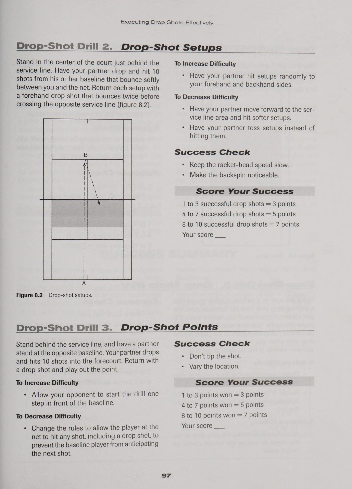
Điểm sai lầm sẽ bị mất khi thực hiện các cú bỏ nhỏ (drop shot) (drop shot).
Should you try an approach shot? What about a drive deep into the backcourt?
Chỉnh sửa Hãy chọn lọc thời điểm sử dụng ảnh. Bắt đầu với đầu vợt cao hơn thắt lưng, Viết tắt theo dõi của bạn. Đường đi của vợt sẽ trượt xuống nhiều hơn về phía trước. và đu xuống phía sau quả bóng. Nhẹ nhàng trượt vợt dưới quả bóng khi bạn tiếp xúc. Làm chậm tốc độ swing của bạn. Thực hiện cú đánh bóng caoDrop volley (cú đánh thả bóng bằng cú vô-lê) cũng hiệu quả hơn nếu cú đánh tiếp theo không đến mức vung vợt thấp và mở Mặt vợt ra để phát âm rõ rệt. Dù bạn làm gì, hãy tránh những cú đánh thả bóng xoáy xuống một chút. Đưa bóng xoáy xuống từ một vị trí phía sau đường biên ngang của bạn. Những cú đánh như vậy sẽ khiến đối thủ của bạn có quá nhiều thời gian để chỉnh bóng, khiến nó lao vào sân và chạy chậm lại.
No. The answer is a wellplanned, beautifully disguised, and perfectly executed drop shot that wins the point. Hit a drop shot when you are positioned in the forecourt. The ball will float softly into your opponent’s forecourt and bounce twice before he can get to it. The drop shot is typically hit after a series of strokes and when the opponent expects a hard, deep, driving shot. Although any player can use it, a well-hit drop shot is a relatively sophisticated stroke used by intermediate and advanced players. The drop shot is especially effective against players who are out of position, out of shape, slow, and uncomfortable at the net. It also works against opponents who are tired, lazy, or both. That’s a lot of market potential.
thực hiện cú sút và nhận bóng. Thực hiện cú đánh thả ở phía trên cùng của cú nảy Yêu cầu người chơi khác tiếp cận quả bóng và để quả bóng rơi xuống khi nó vượt qua để trả lại nó. Nếu nó không được trả lại, bạn sẽ giành được điểm. lưới lưới. Vừa dọn lưới thì có hiệu quả nhưng không hiệu quả. Nếu đúng như vậy, bạn nên ở gần lưới và sẵn sàng bắt vô-lê cho người chiến thắng. Đánh thả cú đánh hoàn toàn cần thiết. Tránh đánh bóng để nó di chuyển quá xa về phía đối thủ của bạn sau các điểm liên tiếp có thể là một ý tưởng hay nếu bóng nảy. Lý tưởng nhất là bóng sẽ di chuyển ra xa, người chơi khác phải nỗ lực để tiếp cận bóng từ người đó sau khi bật lên.
If you use the drop shot often enough, your opponent’s concern that you might use it again can make other shots from a similar position on the court become more effective. The drop shot also causes opposing players to lose their sense of rhythm. The drop shot is all about shot selection, court position, and deception. Shot selection means hitting the ball at the right time—that is, when your opponent is out of position and not expecting it. Court position is simple. Don’t try a drop shot from your baseline; from this position the drop shot has little chance of success.
ở lần thả đầu tiên. Bắn thả | 1. Điểm thả bóng thả và đánh tại nơi đường giao bóng giao với đường giao bóng Kiểm tra thành công ở giữa. Thả 10 quả bóng liên tiếp và đánh * Mở Mặt vợt. họ bằng một cú thuận tay (forehand) vào một trong hai sân giao bóng * Ngụy trang sự chuẩn bị. trên lưới. Hãy làm cho mỗi cú đánh trông giống như sự chuẩn bị thuận tay và vung vợt thông thường của bạn để Ghi điểm thành công của bạn nhất có thể. Được coi là cú cú bỏ nhỏ (drop shot) (drop shot) (drop shot) thành công nếu bóng nảy hai lần ở phần sân đối diện trước 1 đến 3 cú cú bỏ nhỏ (drop shot) (drop shot) (drop shot) thành công = 3 điểm vượt qua vạch giao bóng.
Deception is the fun part. Hitting a drop shot when your opponent expects you to drive the ball deep means you are winning the mental game of tennis as well as the physical game. Be sure to use drop shots occasionally even if doing so sometimes means losing a point. The drop shot shows that you have a full bag of tricks and that you are not afraid to use all of them. Just like other strokes and their variations, the drop shot gives you one more option, and your opponents, one more problem. In tennis, you will be rewarded for being deceptive.
4 đến 7 cú cú bỏ nhỏ (drop shot) (drop shot) (drop shot) thành công = 5 điểm Để tăng độ khó 8 đến 10 cú cú bỏ nhỏ (drop shot) (drop shot) (drop shot) thành công = 7 điểm * Lần lượt thực hiện các cú đánh sang trái đối diện và điểm của bạn ___ sân giao bóng bên phải. ¢ Cố gắng thực hiện một nửa cú đánh của bạn bằng Cú trái tay (backhand) (backhand) tay. Để giảm độ khó * Nhờ một đối tác ném bóng nhẹ nhàng về phía thuận tay của bạn. Thực hiện các cú cú bỏ nhỏ (drop shot) (drop shot) (drop shot) hiệu quả Bài tập thả bóng 2.
INCORPORATING A NEW SKILL The drop shot definitely falls into the category of a new skill. Unlike frequently used strokes such as the forehand, backhand, and serve, learning how and when to use the drop shot generally happens later in a tennis player’s development. Incorporating any new skill, including the drop shot, into a sport you already play requires a progression of learning activities.
Thiết lập cú đánh bóng Đứng ở giữa sân, ngay sau vạch giao bóng. Yêu cầu đối tác của bạn thả bóng và đánh 10 để tăng độ khó * Yêu cầu đối tác của bạn thực hiện các thiết lập ngẫu nhiên để các cú đánh từ đường cuối sân của họ nảy nhẹ nhàng về phía thuận tay và trái tay của bạn. giữa bạn và lưới. Trả lại mỗi thiết lập bằng một cú thuận tay (forehand) (forehand) nảy hai lần trước khi vượt qua đường giao bóng đối diện (hình 8.2).
Sport psychologist Jim Loehr, EdD, says that professional athletes need about two months of daily practice to make a change. Recreational athletes may need more time. The first step in learning a new skill is to get a coach, teaching professional, or friend who has mastered the skill to work with you on breaking it down into its components.
Để giảm độ khó * Yêu cầu đối tác của bạn tiến tới khu vực đường giao bóng và thực hiện các thiết lập nhẹ nhàng hơn. * Yêu cầu đối tác của bạn ném các thiết lập thay vì đánh chúng. Kiểm tra thành công * Giữ Tốc độ đầu vợt chậm. * Làm cho xoáy xuống trở nên đáng chú ý. Ghi điểm thành công của bạn Từ 1 đến 3 lần thả bóng thành công = 3 điểm 4 đến 7 lần thả bóng thành công = 5 điểm 8 đến 10 lần thả bóng thành công = 7 điểm Điểm của bạn ___ Hình 8.2 Thiết lập cú cú bỏ nhỏ (drop shot) (drop shot) (drop shot).
Someone who can see only the big picture (for example, only observing that a serve goes in or out) is of little help. A skilled observer or teacher can watch for the correct positioning of hands, feet, head, or any other part of the body instead of focusing onthe end result. _ The second step, visualizing and then shadow practicing the skill, is skipped by many players but can be a valuable tool in the learning process.
Bài tập thả bóng 3. Điểm thả bóng Đứng phía sau vạch giao bóng và có một đồng đội đứng ở đường biên đối diện. Đối tác của bạn đánh rơi Kiểm tra thành công * Đừng đánh đầu. và đánh 10 phát vào sân trước. Trở lại với « Thay Đổi bên (switch). một cú bỏ nhỏ (drop shot) (drop shot) và ghi điểm. Ghi điểm thành công của bạn để tăng độ khó * Cho phép đối thủ của bạn bắt đầu tập luyện một bước trước đường cuối sân (baseline).
This step has two parts. The first part is to imagine yourself executing the drop shot. See yourself take the shot in your mind, imagining how you would execute each element of the stroke. You can practice self-visualization on a tennis court, in your car, at home, or any time you have a few moments to see yourself executing the skill.
1 đến 3 điểm giành được = 3 điểm 4 đến 7 điểm giành được = 5 điểm 8 đến 10 điểm giành được = 7 điểm Để giảm độ khó * Thay đổi quy tắc để cho phép người chơi trên lưới đánh bất kỳ cú đánh nào, bao gồm cả cú bỏ nhỏ (drop shot) (drop shot), để ngăn người chơi cuối đường đoán trước Điểm của bạn ___ cú đánh tiếp theo. Bài tập bắn thả 4. Trò chơi ngắn Chơi trò chơi 10 điểm với đối tác của bạn chỉ bằng cách sử dụng các cú đánh thả (hình 8.3). Bất kỳ quả bóng nào bị đánh mạnh hoặc nảy ra ngoài sân giao bóng sẽ bị loại khỏi cuộc chơi. Đưa bóng vào cuộc bằng một cú cú bỏ nhỏ (drop shot) (drop shot) (drop shot) nhẹ nhàng và Cú thuận tay (forehand) (forehand).
A great deal of research supports using visualization as a mechanism for improved performance. If visualization is not one of your skills, get someone to videotape a technique you have been practicing, and then view it to create a mental map of the elements of the technique. The second part of this step involves actually going through the motions by yourself, much like a boxer going through a shadow-boxing sequence in a ring. Practicing in this manner takes a dedicated athlete, one who is secure enough to tolerate the curious looks that will come when others see you playing an imaginary game.
Để tăng độ khó ¢ Một người chơi đánh được tất cả các cú bỏ nhỏ (drop shot) (drop shot) từ đường xuống; người kia đánh tất cả các cú đánh thả Đánh chéo sân (cross-court). Để giảm độ khó ¢ Thay vì tranh giành điểm, hãy làm việc với đối tác của bạn để xem cả hai bạn có thể đánh được bao nhiêu cú ném liên tiếp. Kiểm tra thành công ¢ Khôi phục nhanh chóng. ¢ Dùng tay thuận để điều chỉnh tay cầm.
If space permits, try going through the new motion in front of a mirror at home or ina locker room. This scenario is more private and allows you to be your own coach. The third step involves working on the new skill by simulating game situations during practice. The soccer player develops a move to get open for a pass.
Ghi điểm thành công của bạn A Thắng 1 đến 3 trận = 3 điểm Thắng 4 đến 7 trận = 5 điểm Thắng 8 đến 10 trận = 7 điểm Điểm của bạn ___ Hình 8.3. Trò chơi ngắn. Bài tập bắn thả 5. Bắn thả chiến thắng! Chơi một bộ với một đối tác. Nếu một trong hai người chơi đánh trúng Thành công Kiểm tra cú đánh thả người chiến thắng từ khu vực sân trước, * Thực hiện bước đầu tiên nhanh chóng.
The swimmer makes a perfect turn off the wall. The golfer hits out of a trap and gets close enough to the hole to save a par. Likewise, the tennis player maneuvers an opponent into a position in which a drop shot wins the point. The idea is not to play out the whole game but instead to repeatedly rehearse the situation in which a newly acquired skill can be used.
trò chơi đã Kết thúc cú đánh. Bất kể tỷ số trước đó là bao nhiêu, * Giữ cú đánh của bạn cho đến khi đối thủ của bạn thực hiện cú ném thả sẽ thắng trò chơi. Đừng cố gắng đánh chỉ để giành được một điểm hoặc để giành được trận đấu. Hãy thử cú sút khi bạn ở vị trí gần lưới Ghi điểm thành công của bạn và đối tác của bạn ở quá xa để có thể bắt được. Thắng 1 đến 2 trận với cú bỏ nhỏ (drop shot) (drop shot) = 5 điểm Để tăng độ khó 3 đến 4 trận thắng với cú bỏ nhỏ (drop shot) (drop shot) = 7 điểm ¢ Người chơi phải thực hiện ít nhất một cú bỏ nhỏ (drop shot) (drop shot). 5 đến 6 trận thắng với cú bỏ nhỏ (drop shot) (drop shot) = 9 điểm mỗi trận. Nếu không, hãy lặp lại trò chơi.
The fourth step is to try out the new skill in real but unimportant games, matches, or situations. At every level, opportunities exist for experimentation when little or nothing is at stake. You have to be comfortable with the idea that you may hit a terrible drop shot or lose to an inferior opponent because you are taking time to develop a new part of your game. Finally, the last step is to be confident enough to make the new skill an automatic response in pressure situations. If you have to think about doing the drop shot first, it’s not ready for prime time.
Điểm của bạn ____ * Chỉ trao giải cho trò chơi khi cú cú bỏ nhỏ (drop shot) (drop shot) (drop shot) nảy hai lần trước khi đối phương chạm tới bóng. Để giảm độ khó * Cho phép người chơi thực hiện cú đánh thả để sử dụng các con hẻm cũng như các sân giao bóng làm khu vực mục tiêu. Thực hiện các cú đánh thả một cách hiệu quả TRẢ LẠI cú đánh thả Người chơi thường thực hiện các cú đánh thả bằng cách thay đổi cú đánh bằng một cú lốp bóng (lob) là điều khó khăn, nhưng cú lốp bóng (lob) có thể là cú đánh hoặc ngôn ngữ cơ thể của họ. Bằng cách quan sát cách đối thủ của bạn chuẩn bị và đánh cú đánh này, cú đánh tốt nhất của bạn vì Mặt vợt của bạn đã mở và chuyển động về phía trước của bạn có thể so sánh với cách họ thường đánh bóng sâu. Nếu bạn cố gắng thực hiện cú lốp bóng (lob) và các cú đánh nền, bạn có thể đoán được nó sẽ đi ngắn, vịt.
At this point, you no longer analyze, plan, or experiment. Like any other tool in your kit, the new skill is simply there at your disposal when you need it. HITTING THE DROP SHOT Make the drop shot (figure 8.1) look like any other stroke hit from the forecourt. To disguise the shot, don’t exaggerate the backswing, delay the stroke, or change footwork. Hold the racket firmly, but not overly tight, and open the racket face. Some players change to a continental grip just before they hit to comfortably give the racket face a chance to open up. Executing Drop Shots Effectively Figure 8.1 Drop Shot
đối thủ của bạn và giành bóng để giành chiến thắng. Tùy chọn thứ ba là một lựa chọn khó - quay lại Nếu đối thủ của bạn ở sân trước và trong cú đánh thả bóng. Có hai vị trí để thực hiện nhiều cú đánh khác nhau, bạn phải ở những tình huống mà cú đánh trả lại có thể xảy ra, và ít nhất phải lưu ý rằng cú đánh thả có thể là từ có tác dụng, có hiệu quả. Điều đầu tiên. Điều này đặc biệt đúng nếu bạn bị tụt lại phía sau rất xa, tức là nếu đối thủ của bạn thực hiện một cú đánh thả bóng, đoán trước đường biên ngang hoặc ra xa về hai bên. Tạo một đường lốp và bắt đầu di chuyển về chỗ che chắn. Nếu người chơi khác của bạn chứng minh rằng họ có thể đánh cú chạm này thì đủ tinh tế để thực hiện cú đánh, cú đánh trước khi cố gắng đoán trước nó. Một người chơi kế tiếp khác sẽ không thể phục hồi nhanh chóng cú bỏ nhỏ (drop shot) (drop shot) hoàn toàn có thể chấp nhận được. Nếu bạn liên tục bị trúng đạn thì đó là lỗi của bạn.
PREPARATION SWING FOLLOW-THROUGH 1. Forehand or backhand 1. Open racket face 1. Abbreviated swing after grip 2. High-to-low swing contact 2. Disguise the shot 3. Slower racket head 2. Anticipate the next shot speed 4. Backspin on the ball Misstep The shot is hit too hard or too deep. Correction Open the racket face more. Misstep Points are lost attempting drop shots. Correction Be selective about when to use the shot. Start with the racket head above waist level, and swing down behind the ball. Delicately slide the racket under the ball as you make contact. Slow down the speed of your swing. Take a highto-low swing and open up the racket face to give the shot a bit of backspin.
đủ để Đổi hướng bóng về phía lưới. Đối với tình huống thứ hai, bạn có thể thử nghiệm thực hiện một cú sút có góc nhọn ra xa đối thủ đang ở gần lưới nhưng di chuyển sai hướng. Nếu bạn có thể thực hiện được. Ngay khi bạn nhận ra cú đánh đang đến, hãy bắt đầu di chuyển về phía quả bóng nhanh nhất có thể. Nếu bạn đến đó nhanh chóng, hãy xếp nó vào hàng người chiến thắng. Nếu bạn phải căng sức ở giây cuối cùng, hãy cân nhắc việc trả lại nó thay vì tùy chọn trả lại cuối cùng này, xin chúc mừng. Bạn không còn là người chơi trung gian nữa.
Putting backspin on the ball should make it bite into the court and slow down. Hit the drop shot at the top of the bounce so that the ball falls downward as it clears the net. Barely clearing the net is effective but not absolutely necessary. Avoid hitting the ball so that it travels too far toward your opponent after the bounce. Ideally, the ball should move away from him or her after the bounce. Drop-Shot
cú lốp bóng (lob) vào đầu đối phương. Trả lại một lần thả TÓM TẮT THÀNH CÔNG Dưới đây là phần đánh giá nhanh về các nguyên tắc cơ bản về lần thả. Ngụy trang cú đánh bằng cách làm cho nó trông có vẻ xoáy cắt (underspin) lên bóng nhiều hơn. Kết thúc bằng động tác Vung vợt ra sau (lấy đà) rút gọn. Trong bảng 8.1, nhập điểm của bạn cho mỗi bài tập thả bóng. Nếu bạn đạt được 16 trên 37 điểm có thể, hãy chuyển sang bước 9.
Stand where the service line intersects the center service line. Drop 10 consecutive balls and hit them with a forehand into either service court across the net. Make each shot look as much like your normal forehand preparation and swing as possible. Consider the drop shot successful if the ball bounces twice in the opposite court before passing the service line.
giống như sự chuẩn bị thuận tay và vung vợt thông thường của bạn nhất có thể. Đánh với Mặt vợt mở và cú vung từ cao xuống thấp. Làm chậm tốc độ của đầu vợt. Sử dụng một cú chạm tinh tế để đưa ra Bảng 8.1 Tóm tắt tính điểm Bài tập bắn thả 1. Thả và đánh thả trong số 7 2. Thiết lập bắn thả bị loại ở mức 7 3. Điểm bắn rơi ____ trên 7 4. Trò chơi ngắn trên 7 5. Bắn thả thắng!
To Increase Difficulty * Alternately hit shots to the opposite left and right service courts. ¢ Attempt half your shots with a backhand. To Decrease Difficulty * Have a partner softly toss balls to your forehand side. Abbreviate your follow-through. The path of the racket will slide down more than forward.
a he TOTAL ew Soutiof sz ih Si ele at J *s ¥ BR ao bak i vhs a ttiae "eb Bate be teat gay
Drop volleys (drop shots hit with volleys) are also more effective if the follow-through is not pronounced. Whatever you do, avoid drop shots from a position behind your baseline. Such shots will give your opponent too much time to recognize the shot and get to the ball. Expect the other player to get to the ball and to return it. Ifit isn’t returned, you win the point. If it is, you should be near the net and ready to volley the ball for a winner. Hitting drop shots on consecutive points may be a good idea if the other player has to work hard to reach the ball on the first drop shot. | 1. Drop-and-Hit Drop Shots Success Check
chỉ chơi quần vợt một hoặc hai ngày một tuần. Yếu tố đầu tiên chính là đối thủ của bạn. Hãy xem xét Cuối cùng, quần vợt chiến thuật đòi hỏi bạn phải hiểu liệu đối thủ có cho phép bạn sử dụng chiến thuật trong trận đấu của riêng bạn hay không - điều bạn có thể và không thể làm có nghĩa là họ sẽ không loại bạn khỏi sân một cách thực tế. Bạn có phải là tay đấm phản công cơ bản, bất kể kế hoạch trò chơi của bạn là gì. Bạn có thể chọn một tay vợt cơ bản năng nổ, một tay vợt đánh lớn hay một tay vợt Người chơi toàn sân? Bạn là người chơi nâng cao, người chơi trung cấp hay người mới bắt đầu? Bạn có tốt hơn không khi đối thủ rõ ràng có kỹ năng vượt trội, nhưng có những lúc việc hoạch định chiến thuật có thể chỉ là học thuật ở nội dung đánh đơn hoặc đánh đôi? Cho đến khi bạn chấp nhận mình là ai và bạn có khả năng (hoặc không có khả năng) €XEICiSe như thế nào.
* Open the racket face. * Disguise the preparation. Score Your Success 1 to 3 successful drop shots = 3 points 4 to 7 successful drop shots = 5 points 8 to 10 successful drop shots = 7 points Executing Drop Shots Effectively Drop-Shot Drill 2. Drop-Shot Setups Stand in the center of the court just behind the service line. Have your partner drop and hit 10 shots from his or her baseline that bounce softly between you and the net. Return each setup with a forehand drop shot that bounces twice before crossing the opposite service line (figure 8.2). Figure 8.2 Drop-shot setups. To Increase Difficulty * Have your partner hit setups randomly to your forehand and backhand sides. To Decrease Difficulty
Điều cần cân nhắc thứ hai là môi trường đang hoạt động, chiến thuật không giúp ích được gì. Một số người không bao giờ có được nó. Họ thà trông có vẻ thua cuộc (điều này thường có nghĩa là đánh mạnh) hơn là trông có vẻ thắng tệ (làm bất cứ điều gì cần thiết). Chọn việc trông đẹp hơn là chiến thắng trong trò chơi là một quyết định sai lầm. Chìa khóa để chiến thắng trò chơi là học cách sử dụng chiến thuật phù hợp với khả năng thực sự của bạn.
* Have your partner move forward to the service line area and hit softer setups. * Have your partner toss setups instead of hitting them. Success Check * Keep the racket-head speed slow. * Make the backspin noticeable. Score Your Success 1 to 3 successful drop shots = 3 points 4 to 7 successful drop shots = 5 points 8 to 10 successful drop shots = 7 points
nơi bạn chơi. Nếu bạn là vận động viên ném bóng buộc phải chơi trên bề mặt trơn bóng, bạn có thể gặp rắc rối. Các chuyên gia tiếp đất thường chơi tốt hơn khi bóng đi vào sân, bật lên và bay chậm lại. Ngược lại, người giao bóng và người bắt vô-lê thích sân nhanh và có Điểm lợi thế (advantage). Chương này là tổng quan về những việc cần làm với các cú đánh nền, giao bóng, vô-lê, demi-volley (nửa vô-lê), chơi trên bề mặt trơn.
Drop-Shot Drill 3. Drop-Shot Points Stand behind the service line, and have a partner stand at the opposite baseline. Your partner drops and hits 10 shots into the forecourt. Return with a drop shot and play out the point. To Increase Difficulty * Allow your opponent to start the drill one step in front of the baseline.
Yếu tố thứ ba là khả năng thực hiện cú đánh của bạn. Chẳng hạn, bạn sẽ không thể thực hiện chiến lược lao vào lưới nếu bạn không Cú lốp bóng (lob), cú đập bóng smash và thả bóng, tất cả các bước mà chúng tôi đã đề cập trong cuốn sách này cho đến thời điểm này. Các nguyên tắc được trình bày ở đây không phải là tuyệt đối nhưng có thời gian để thực hành các cú giao bóng, các cú đánh tiếp cận và các cú vô-lê. Việc lao vào lưới không cho phép phạm sai số lớn. Nhiều trường đại học trước đây đã thiết lập một khuôn khổ để đưa ra các quyết định chiến thuật đúng đắn.
To Decrease Difficulty * Change the rules to allow the player at the net to hit any shot, including a drop shot, to prevent the baseline player from anticipating the next shot. Success Check * Don't tip the shot. « Vary the location. Score Your Success 1 to 3 points won = 3 points 4 to 7 points won = 5 points 8 to 10 points won = 7 points Drop-Shot Drill 4. Play a 10-point game against your partner using only drop shots (figure 8.3).
TAY TAY VÀ TRÁI Những cú đánh nền thuận tay và trái tay tốt có thể giúp bạn sống sót trong điểm, cho phép bạn tạo áp lực liên tục và chuẩn bị mọi thứ cho người chiến thắng. Những cú đánh nền cũng khiến đối thủ không kịp hồi phục, hãy tìm người chiến thắng ở tuyến dưới. Câu giờ bằng một cú trái tay (backhand) (backhand) chậm hơn. Phát triển một cú trái tay (backhand) (backhand) cho lượt đánh trả, cảm thấy mệt mỏi, mắc lỗi và để trống một phần sân cho các cú đánh của bạn. Trong đánh đơn, động tác đánh nền là công cụ cơ bản giúp bạn xây dựng hoặc thiết lập điểm. Dưới đây là một số Giao bóng / Cú giao bóng.
Any ball hit hard or Figure 8.3. Short game. Drop-Shot Drill 5. Play a set against a partner. If either player hits a winning drop shot from the forecourt area, the game is over. Regardless of the previous score, the player hitting the drop shot wins the game. Don’t try the shot just to win a point or the game. Try the drop shot when you are positioned near the net and your partner is too far away to get to it. To Increase Difficulty ¢ Players must attempt at least one drop shot per game.
Phát triển một cú trái tay (backhand) (backhand) ngắn để đánh vào chân người ném lưới. gợi ý giúp những cú đánh nền của bạn hiệu quả hơn: Hãy quyết đoán trong những cú bắt vô-lê. Đừng ngần ngại. Sử dụng một cú trái tay (backhand) (backhand) để giữ bóng ở mức thấp e Sử dụng vị trí phía sau tâm của đường cuối sân làm điểm tựa trong khi chạm đất với người bắt cú vô-lê (volley). Thỉnh thoảng sử dụng một cú trái tay (backhand) (backhand) trong các cú đánh tiếp cận.
If not, repeat the game. * Award a game only when a drop shot bounces twice before the opponent reaches the ball. To Decrease Difficulty * Allow the player hitting the drop shot to use the alleys as well as the service courts as target areas. Short Game that bounces outside the service court is out of play. Put the ball into play with a soft drop-andhit forehand. To Increase Difficulty
tập hợp cú đánh (hình 9.1). e Đánh chéo hầu hết các cú đánh nền cơ bảnĐánh bóng có độ nảy cao về phía trái tay của đối phương. sân đấu và sâu sắc. e Trong một cuộc biểu tình tiếp đất, hãy dọn sạch lưới còn chỗ trống. Sử dụng cú Vung vợt ra sau (lấy đà) ngắn hơn để đối phó với cú giao bóng nhanh. ¢ Thực hiện các cú đánh tiếp cận sâu và xuống Giữ bóng thấp khi cố gắng vượt qua đối thủ trên lưới.
¢ One player hits all down-the-line drop shots; the other hits all crosscourt drop shots. To Decrease Difficulty ¢ Instead of competing for points, work with your partner to see how many consecutive drop shots you can both hit. Success Check ¢ Recover quickly. ¢ Use your off hand to adjust grips. Score Your Success
để thiết lập một góc tốt cho lần chụp tiếp theo của bạn (hình 9.2). Trong một pha đánh bóng cơ bản, hãy phát triển một mô hình e Đánh các cú đánh tiếp cận vào giữa rồi bẻ gãy nó (hình 9.3). để vô hiệu hóa tốc độ của đối thủ và tận dụng sức mạnh của bạn để đoán trước góc trả bóng. tay (hoặc để bảo vệ một Cú trái tay (backhand) (backhand) tay yếu), ¢ Thỉnh thoảng đánh những cú đánh tiếp cận chạy chéo quanh trái tay của bạn (di chuyển đủ xa về phía phía trái tay) để đánh sân nếu bạn có thể đưa bóng đi.
1 to 3 games won = 3 points 4 to 7 games won = 5 points 8 to 10 games won = 7 points Drop Shots Win! Success Check * Take a quick first step. * Hold your shot until your opponent commits. Score Your Success 1 to 2 games won with drop shots = 5 points 3 to 4 games won with drop shots = 7 points 5 to 6 games won with drop shots = 9 points Your score ____
e Sử dụng cú đánh lùi ngắn hơn để tạo lực cho cú thuận tay (forehand) từ trong ra ngoài. người chơi. Lấy bóng ra khỏi điểm nảy sớm hơn để giành được e Đánh với tư thế cởi mở khi bạn không có ý định thực hiện cú đánh của mình vào lưới. một Điểm lợi thế (advantage) tấn công. Khi Cú thuận tay (forehand) (forehand) mạnh, hãy sử dụng ít Xoáy lên hơn. Đánh ¢ Đánh với tư thế cởi mở khi bạn đang chạy trốn. quả Cú đánh phẳng.
Executing Drop Shots Effectively RETURNING THE DROP SHOT Players often tip off drop shots by changing their stroke or their body language. By observing how your opponent prepares and hits this shot compared to the way he or she normally hits groundstrokes, you might be able to outguess your opponent and get to the ball for a winner.
Sử dụng topspin để kết hợp sức mạnh và hình nón Đánh với tư thế cởi mở khi không có thời gian để xoay người và đánh. Khi Trả giao bóng, đứng gần đường cuối sân ở giữa hai điểm cực e Khi chạy rộng, đặt chân ngoài và đẩy lùi về phía góc nhà của bạn để bóng có thể di chuyển sau khi được giao (hình 9.4).
If your opponent is in the forecourt and in a position to hit a variety of shots, you must at least be aware that the drop shot is a possibility. This is especially true if you are well behind the baseline or wide to either side.
Hình 9.1 Tùy thuộc vào vị trí của đối thủ, Hình 9.3 Phá vỡ kiểu đánh tiếp đất. phục hồi về trung tâm của đường cuối sân (baseline) giữa các lần chạm đất. Hình 9.4 Bao gồm các góc rộng nhất có thể khi Hình 9.2 Đánh các cú đánh tiếp cận sâu và xuống đường Trả giao bóng. để thiết lập một góc tốt cho lần chụp tiếp theo của bạn. Máy khoan bắn gián. Thiết lập cú đánh tiếp cận Để thực hành thực hiện các cú đánh tiếp cận dọc theo đường biên, hãy tiếp cận cú đánh sâu và dọc theo đường biên. Đếm đối tác có đứng ở vạch cuối sân và đưa 10 quả bóng ngắn và mềm liên tiếp vào hai bên sân trước (hình 9.5). Tiến về phía trước và thực hiện một số cú đánh tiếp cận rơi vào góc sân sau của đối thủ.
Make the other player prove that he or she can hit this shot before trying to anticipate it. One successful drop shot is acceptable. If you keep getting beaten by the shot, then it’s your fault. As soon as you realize the drop shot is coming, start moving toward the ball as fast as you can. If you get there quickly, put it down the line for a winner. If you have to stretch at the last second, consider returning it over your opponent’s head with a lob. Returning a drop shot with a lob is difficult, but the lob may be your best shot because the face of your racket is already open and your forward movement can carry the ball deep.
Để tăng độ khó ¢ Chỉ chơi theo điểm và ghi điểm khi bạn thắng bằng cú vô-lê sau cú đánh tiếp cận Để giảm độ khó ¢ Yêu cầu đối tác của bạn chỉ thực hiện các cú đánh về phía thuận tay hoặc chỉ về phía trái tay. Kiểm tra thành công ¢ Đừng đánh quá mạnh vào cú đánh tiếp cận. ¢ Thực hiện động tác Vung vợt ra sau (lấy đà) ngắn hơn nếu trọng lượng cơ thể của bạn đang di chuyển về phía trước.
If you attempt the lob and it goes short, duck. The third option is a tricky one—returning the drop shot with a drop shot. There are two situations in which a drop shot return might, and might is the operative word, be effective. The first is if your opponent hits a drop shot, anticipates a lob, and starts moving back to cover.
Ghi điểm thành công của bạn 1 đến 3 cú đánh tiếp cận thành công = 1 điểm 4 đến 7 cú đánh tiếp cận thành công = 3 điểm 8 đến 10 cú đánh tiếp cận thành công = A 5 điểm Hình 9.5 Thiết lập cú đánh tiếp cận. Điểm của bạn ___ PHỤC VỤ Ưu tiên hàng đầu cho việc giao bóng trong đánh đơn là đạt được ¢ Phát triển thói quen giao bóng trước. bóng đang chơi. Nếu bạn có thể làm điều này một cách nhất quán, hãy hình dung mục tiêu của bạn.
If your touch is delicate enough to execute the shot, the other player will not be able to recover quickly enough to change directions back toward the net. As for the second situation, you can experiment with hitting a sharply angled drop shot away from an opponent who is close to the net but moving the wrong way. If you can pull off this last return option, congratulations. You’re no longer an intermediate player.
bạn có thể bắt đầu di chuyển bóng trong khi thay đổi e Đừng lãng phí năng lượng khi cố gắng át chủ bài trong mỗi lần giao bóng. Chọn thời điểm tốt nhất. tốc độ, vị trí và độ xoáy. Nếu bạn không đạt được ít nhất 60% số lần giao bóng đầu tiên, hãy giảm tốc độ và/hoặc tăng thêm độ xoáy. Đây là cách để có được ¢ Khi bạn cố gắng giành quân Át, hãy nghĩ đến giữa. Lưới ở đó thấp hơn và sân ngắn hơn.
SUCCESS SUMMARY Here is a quick review of drop-shot fundamentals. Disguise the shot by making it look as much like your normal forehand preparation and swing as possible. Hit with an open racket face and a high-to-low swing. Slow down the speed of the racket head. Use a delicate touch to put backspin on the ball.
tận dụng tối đa cú giao bóng của bạn trong trận đấu đơn: ¢ Sử dụng hai cú giao bóng Nhịp điệu trận đấu trung bình thay vì e Đứng gần giữa đường biên cuối sân để thực hiện một cú giao bóng nhanh và một cú giao bóng chậm. giao bóng (hình 9.6). e Giao bóng vào điểm yếu của đối thủ hoặc đánh vào điểm yếu của đối phương. e Người chơi thuận tay phải nên di chuyển một bước trong khu vực rộng mở. ở bên phải khi giao bóng từ quả giao bóng e Hãy cẩn thận khi giao bóng tới phần sân của người trả giao bóng (receiver) giao bóng để cho phép thực hiện một cú giao bóng kéo người trả giao bóng (receiver) giao bóng ra khỏi sân; người chơi thuận tay trái mạnh nhất.
Finish with an abbreviated backswing. In table 8.1, enter your scores for each of the drop-shot drills. If you get 16 out of 37 possible points, go to step 9. Table 8.1 Scoring Summary Drop-Shot Drills 1. Drop-and-hit drop shots out of 7 2. Drop-shot setups a out at 7 3. Drop-shot points ____ out of 7 4. Short game out of 7 5. Drop shots win! a he TOTAL ew Soutiof sz ih Si ele at J *s ¥ BR ao bak i vhs a ttiae “eb Bate be teat gay <li eet Seis ee insin Sea ‘an ae as ia) rain Henge aan ae thd ry : i: ss a Ee: s y oy dt am a f awe ne hear fa toe ai a.
nên di chuyển một bước sang trái khi giao bóng Sử dụng quả giao bóng xoáy để bản thân có thêm thời gian lao vào lưới sau khi giao bóng. từ sân đấu quảng cáo.
(Oy eee al wath i + ol oe ae evt yt Aa. aig safe i y eng eae a a AH a Si Nate a, eo ee CNPP Met ae
Chiến Thuật Thi Đấu Đơn, Đánh Đôi & Chuẩn Bị Toàn Diện
Part IV: Singles Strategy, Doubles Mastery, Match Preparation & Glossary
Bước 9: Chiến Thuật Thi Đấu Đơn Chuyên Nghiệp
Step 9: Competing As a Singles Player
Thi đấu với tư cách một đấu thủ đơn Hình 9.6 Đứng gần giữa đường cuối sân Hình 9.7 Giao bóng rộng để kéo đối thủ ra khỏi sân. Giao bóng / Cú giao bóng. e Giao bóng rộng có độ xoáy để kéo đối thủ ra khỏi sân (hình 9.7). Giao bóng thận trọng khi tỷ số hòa hoặc khi bạn thua vào cuối trận đấu. Giao bóng sâu vào phần sân giao bóng để ngăn đối thủ tấn công.
Competing As a Singles Player
The emphasis in this step is not big-picture match strategy, but instead tactical, shot-by-shot decisions. Four factors must be considered. You have little control over the first two, but considerable influence over the others. The first factor is your opponent.
Giao bóng tích cực ở mức 40 tình yêu và 40-15. Sử dụng độ xoáy khi giao bóng để có trải nghiệm tốt hơn với nhiều kiểu giao bóng khác nhau (tốc độ, độ xoáy, vị trí) trong một trận đấu. Giao bóng - Trả bóng 1. Giao bóng nhanh - Trả bóng * Đứng sau một bước so với vạch cuối sân để Trả lại 10 quả giao bóng liên tiếp do đối tác luyện tập thực hiện. Rút ngắn động tác vung sau, xoay vai và bước về phía trước bằng chân đối diện khi có thể. Ghi một điểm cho mỗi lần Trả giao bóng.
Consider whether your opponent will let you use tactics, meaning he or she won’t blow you off the court regardless of your game plan. You can do certain things when the opponent clearly has superior skills, but there are times when tactical planning may be nothing more than an academic €XEICiSe. The second consideration is the environment in which you play. If you are a baseliner forced to play on a slick surface, you may be in trouble.
Kiểm tra thành công được đưa trở lại sân đánh đơn và/hoặc ghi điểm « Xoay vai nhanh chóng. điểm cho mỗi lần giao bóng. * Thực hiện cú Vung vợt ra sau (lấy đà) ngắn. Để tăng điểm khó cho thành công của bạn * Cho phép người giao bóng giao bóng từ bên trong Người giao bóng nhận được 3 điểm cho 1 đến 3 lần giao bóng, theo đường cuối sân (baseline). 5 điểm cho 4 đến 7 lần giao bóng, và 7 điểm cho 8 đến * Đứng hai bước bên trong đường cuối sân để trả lại 10 lần giao bóng.
Groundstroke specialists generally play better when the ball bites into the court, bounces up, and slows down. Conversely, servers and volleyers love fast courts and have an advantage playing on a slick surface. The third factor is your ability to execute shots. It does you no good, for example, to attempt a rush-the-net strategy if you don’t have time to practice serves, approach shots, and volleys. Rushing the net does not allow a large margin of error.
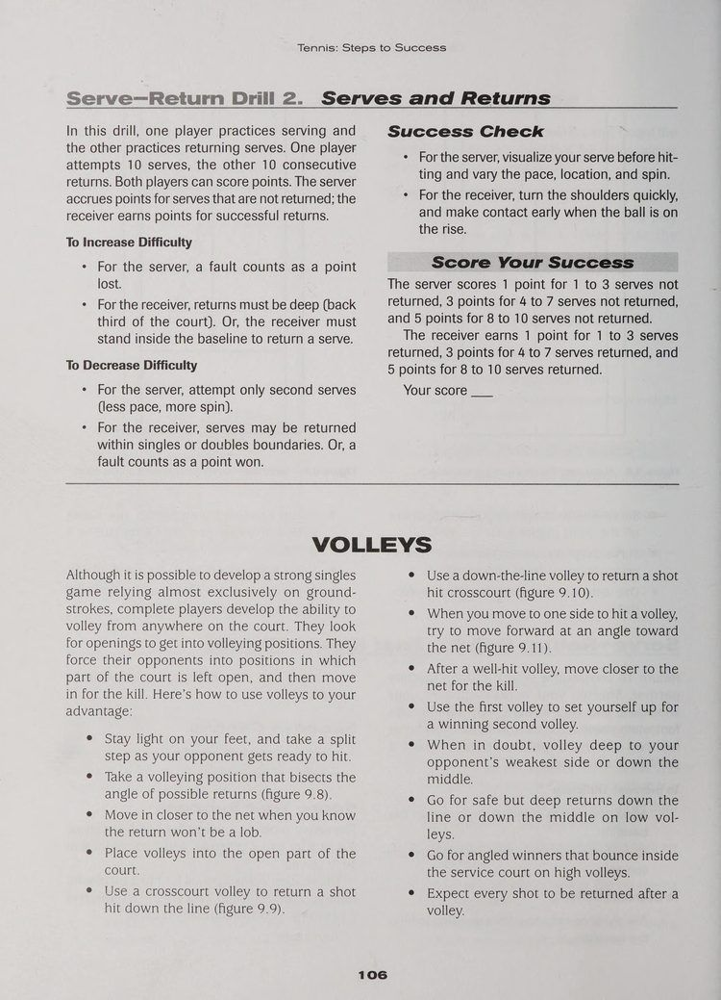
Người trả giao bóng (receiver) kiếm được 3 điểm cho 1 đến 3 lần trả lại thành công, 5 điểm cho 4 đến 7 lần trả lại thành công và 7 điểm cho 8 đến 10 lần trả lại thành công. Giao bóng / Cú giao bóng. Để giảm độ khó * Yêu cầu người Giao bóng / Cú giao bóng giao bóng chậm hơn một bước so với điểm cơ bản của bạn. eturn Bài tập 2. Giao bóng và Trả giao bóng Trong bài tập này, một người chơi thực hành giao bóng và những người khác thực hành Trả giao bóng. Kiểm tra thành công của một người chơi ¢ Đối với người giao bóng, hãy hình dung cú giao bóng của bạn trước khi thực hiện 10 lần giao bóng, 10 lần giao bóng còn lại liên tiếp và thay đổi tốc độ, vị trí và độ xoáy.
Many former college players, for instance, find it frustrating to make the adjustment from what they were able to do when practicing six days a week to what they can do when playing league or tournament tennis only one or two days a week. Finally, tactical tennis demands an understanding of your own game—what you can and can’t do realistically. Are you a baseline counter-puncher, an aggressive baseline player, a big hitter, or an all-court player? Are you an advanced player, intermediate player, or beginner? Are you better at singles or doubles? Until you accept who you are and what you are capable (or incapable) of doing, tactics don’t help.
trả về. Cả hai người chơi đều có thể ghi điểm. Người giao bóng tích lũy điểm cho những cú giao bóng không được trả lại; * Đối với người trả giao bóng (receiver) bóng, hãy xoay vai nhanh và tiếp xúc sớm khi bóng ở trên người trả giao bóng (receiver) bóng sẽ ghi điểm khi trả bóng thành công. sự gia tăng. Để tăng điểm độ khó Thành công của bạn e Đối với người giao bóng, một lỗi được tính là bị mất điểm.
Some people never get it. They would rather look good losing (this usually means hitting hard) than look bad winning (doing whatever it takes). To choose looking good over winning the game is a poor decision. The key to winning the game is learning to use tactics that are consistent with your true ability. This chapter is an overview of what to do with groundstrokes, serves, volleys, half volleys, lobs, smashes, and drop shots, all the steps we've covered in this book up to this point.
Người giao bóng ghi 1 điểm cho 1 đến 3 quả giao bóng không trả lại, 3 điểm cho 4 đến 7 quả giao bóng không trả lại, ¢ Đối với người trả giao bóng (receiver), Trả giao bóng phải sâu (sau một phần ba sân). Hoặc, người trả giao bóng (receiver) phải nhận 5 điểm cho 8 đến 10 lần giao bóng không được trả lại. Người trả giao bóng (receiver) được 1 điểm cho 1 đến 3 lần giao bóng đứng bên trong đường cuối sân để Trả giao bóng.
The guidelines presented here are not absolute, but they establish a framework for making sound tactical decisions. FOREHANDS AND BACKHANDS Good forehand and backhand groundstrokes can keep you alive in the point, allow you to apply constant pressure, and set things up for winners. Groundstrokes also make opponents move, get tired, make errors, and leave part of the court open for your shots.
được trả lại, 3 điểm cho 4 đến 7 lần giao bóng được trả lại và Để giảm độ khó 5 điểm cho 8 đến 10 lần giao bóng được trả lại. * Đối với người giao bóng, chỉ thực hiện cú giao bóng thứ hai. Điểm của bạn (tốc độ chậm hơn, độ xoáy nhiều hơn). ¢ Đối với người trả giao bóng (receiver), các cú giao bóng có thể được trả lại trong phạm vi ranh giới đơn hoặc đôi. Hoặc, một lỗi được tính là một điểm giành được. BÓNG CHUYỀN Mặc dù có thể phát triển các cú đánh đơn mạnh e Sử dụng cú vô-lê dọc biên để trả lại một ván đấu hầu như chỉ dựa vào cú đánh nền Đánh chéo sân (cross-court) (hình 9.10).
In singles, groundstrokes are the basic tools that help you build, or set up, points. Here are some suggestions to make your groundstrokes more effective: e Use a position behind the center of the baseline as home base during a groundstroke rally (figure 9.1). e Hit most baseline groundstrokes crosscourt and deep. e During a groundstroke rally, clear the net with room to spare. ¢ Hit approach shots deep and down the line to set up a good angle on your next shot (figure 9.2). e Hit approach shots down the middle to neutralize an opponent’s speed and reduce the angle of the return. ¢ Occasionally hit approach shots crosscourt if you can put the ball away. e Use a shorter backswing against power players. e Hit with an open stance when you are not planning to follow your shot to the net. ¢ Hit with an open stance when you are on the run. e Hit with an open stance when there isn’t time to turn and hit. e When running wide, plant the outside foot and push off back toward your home base.
cú đánh, người chơi hoàn chỉnh phát triển khả năng tung cú vô-lê từ bất kỳ vị trí nào trên sân. Họ nhìn Khi bạn di chuyển sang một bên để thực hiện cú vô-lê, hãy cố gắng di chuyển về phía trước một góc để có sơ hở để vào vị trí thực hiện cú vô-lê. Họ lưới (hình 9.11). buộc đối thủ của họ vào các vị trí mà sau một cú vô-lê trúng đích, di chuyển đến gần phần sân còn trống, rồi di chuyển lưới để giết người.
When you have no time to recover, go for a down-the-line winner. Buy time with a slower slice backhand. Develop a slice backhand for the return of serve. Develop a slice short backhand to hit at the feet of net rushers. Be decisive on passing shots. Don’t hesitate. Use a slice backhand to keep the ball low against volleyers.
để giết. Đây là cách sử dụng cú vô-lê để bạn sử dụng cú vô-lê đầu tiên để tạo Điểm lợi thế (advantage) cho mình: cú vô-lê thứ hai giành chiến thắng. Giữ đôi chân nhẹ nhàng và thực hiện cú bứt tốc Khi nghi ngờ, hãy thực hiện cú vô-lê sâu theo bước chân của bạn khi đối thủ của bạn sẵn sàng đánh. Bên yếu nhất của đối thủ hoặc xuống. Chọn vị trí bắt vô-lê chia đôi phần giữa.
Use a slice backhand occasionally on approach shots. Hit high-bouncing balls to an opponent’s backhand. Use a shorter backswing against a fast serve. Keep the ball low when trying to pass an opponent at the net. During a baseline rally, develop a pattern and then break it (figure 9.3).
góc lợi thế có thể có (hình 9.8). Thực hiện các cú trả Cú đánh xác suất cao nhưng sâu ở dọc biên hoặc xuống giữa với âm lượng thấp Di chuyển đến gần lưới hơn khi bạn biết cú trả bóng sẽ không phải là một cú lốp bóng (lob). Đặt các cú vô-lê vào phần trống của cờ vây để dành cho những người chiến thắng có góc cạnh sẽ nảy bên trong sân. sân giao bóng với những cú vô-lê cao. Sử dụng cú vô-lê chéo bàn để đánh trả. Mong đợi mọi cú đánh sẽ được trả lại sau một cú đánh dọc biên (hình 9.9).
To take advantage of your strong forehand (or to protect a weak backhand), run around your backhand (move far enough toward the backhand side) to hit an inside-out forehand. Take the ball off the bounce earlier to gain an offensive advantage. On power forehands, use less topspin. Hit the ball flat. Use topspin to combine power and control. When returning a serve, stand near the baseline in the middle of the two extreme angles to which the ball can travel after it is served (figure 9.4).
cú vô-lê. \ Crosscourt \ chuyền \ nỗ lực sút i Hình 9.8 Định vị bản thân để chia đôi góc của tư thế Hình 9.10 Sử dụng cú vô-lê dọc biên để trả bóng chéo góc. cú sút của sân đấu. Xuống: đường chuyền : shot tôi cố gắng | Hình 9.9 Sử dụng cú vô-lê chéo bàn đối với hình 9.11 Tiến về phía trước bằng những cú vô-lê rộng.
Figure 9.1 Depending on your opponent's position, Figure 9.3 Break a groundstroke pattern. recover to the center of the baseline between groundstrokes. Figure 9.4 Cover the widest possible angles when Figure 9.2 Hit approach shots deep and down the line returning serves. to set up a good angle on your next shot.
cú sút từ đường biên ngang. il 1. Cú vô-lê (volley) - Vượt qua Bắt đầu ở tư thế bắt vô-lê và đặt 10 quả bóng vào trò chơi Để tăng độ khó để đối tác của bạn có thể cố gắng thực hiện một cú bắt vô-lê * Tính điểm và chỉ tính các trường hợp khi người chuyền Cú ghi điểm trực tiếp (winner). từ bất kỳ nơi nào trên đường cuối sân (baseline) (hình 9.12). Nếu nỗ lực bắt vô-lê đi cao ngang vai và đi xuống vạch biên, hãy chọn người chiến thắng bằng cú vô-lê chéo góc. Nếu bóng đến chỗ bạn ở vị trí thấp, hãy trả bóng lại với mục đích Để giảm độ khó * Yêu cầu tay vợt cuối sân chỉ cố gắng thực hiện cú vô-lê dọc biên hoặc vào giữa. Khi về phía thuận tay hoặc chỉ về phía trái tay, cú đánh chuyền đi chéo bàn, hãy trả nó bằng một bên.
To practice placing approach shots down the line, have a partner stand at the baseline and feed 10 consecutive balls short and soft to either forecourt side (figure 9.5). Move forward and hit an roach-Shot Drill. Approach-Shot Setups approach shot deep and down the line. Count the number of approach shots that fall into a corner of your opponent's backcourt. To Increase Difficulty ¢ Play the point out and score a point only when you win with a volley after the approach shot To Decrease Difficulty ¢ Have your partner set up shots only to the forehand or only to the backhand side. Success Check ¢ Don’t overhit the approach shot. ¢ Take a shorter backswing if your body weight is moving forward.
cú vô-lê chiến thắng từ vạch vôi. Cú vô-lê - chuyền là một bài tập ba cú đánh (thiết lập, bắt vô-lê, bắt vô-lê). Đếm thành công Kiểm tra số lần thực hiện cú vô-lê thành công. * Giữ ngón chân nhẹ nhàng giữa các lần chụp. * Giữ vợt hướng lên trên và ở phía trước giữa các cú vô-lê. Ghi điểm thành công của bạn 1 đến 3 cú vô-lê thành công hoặc thắng = 3 điểm 4 đến 7 cú vô-lê thành công hoặc thắng = 5 điểm 8 đến 10 cú vô-lê thành công hoặc thắng = 7 điểm Điểm của bạn ___ Hình 9.12 Đường chuyền chuyền.
Score Your Success 1 to 3 successfully placed approach shots = 1 point 4 to 7 successfully placed approach shots = 3 points 8 to 10 successfully placed approach shots = A 5 points Figure 9.5 Approach-shot setups. SERVES The first priority for the serve in singles is to get the ball in play. If you can do this consistently, you can begin to move the ball while varying the pace, location, and spin. If you are not getting at least 60 percent of your first serves in, reduce the pace and/or add more spin.
Thi đấu với tư cách người chơi đơn Voliey Drill 2. Người chơi A bắt đầu bắt vô-lê hai chọi một trên lưới. Người chơi B và C Để tăng độ khó bắt đầu ở đường cuối sân (baseline) đối diện. Người chơi A lần lượt đánh 10 quả bóng liên tiếp cho B và * Bắt đầu lại mỗi khi mắc lỗi. * Tiếp tục trình tự không dừng C (hình 9.13). Người chơi B thực hiện một cú sút dọc biên, người chơi A trả lại đường chéo sau năm cú đánh.
Here’s how to get the most out of your serve in singles play: e Stand near the center of the baseline to serve (figure 9.6). e Right-handed players should move a step to the right when serving from the deuce court to allow for a serve that pulls the receiver off the court; left-handed players should move a step to the left when serving from the ad court. ¢ Develop a pre-serve routine. e Visualize your target. e Do not waste energy attempting aces on every serve. Pick the best times. ¢ When you do attempt aces, think middle.
cho người chơi C. Người chơi C tiếp tục cuộc biểu tình với Để giảm độ khó một cú đánh tiếp đất khác. Người chơi A luôn đánh những cú vô-lê Đánh chéo sân (cross-court). Người chơi B và C luôn đánh những cú đánh nền theo đường thẳng. Đây là một bài tập khó đồng đội đòi hỏi các cú đánh có kiểm soát * Tiếp tục chuỗi động tác đánh nền từ bất kỳ vị trí nào mắc lỗi cuối cùng.
The net is lower there, and the court is shorter. ¢ Use two medium-paced serves rather than one fast serve and one slow one. e Serve to an opponent’s weakness or to an open area. e Be careful about serving to the receiver’s strongest side. e Use a spin serve to give yourself more time to rush the net after the serve. Competing As a Singles Player
Kiểm tra thành công từ cả ba người chơi. Khi chuỗi 5 lượt bắn hoàn thành, hãy dừng cuộc tập trận và bắt đầu lại. Theo dõi số lần thực hiện chuỗi 5 cú đánh* Di chuyển về phía lưới theo chiều ngang để chặn các đường chuyền. đầy đủ. * Sử dụng cổ tay để định vị vợt cho những cú trả bóng Đánh chéo sân (cross-court). Ghi điểm thành công của bạn Hoàn thành 1 đến 3 chuỗi động tác đánh nền = 5 điểm Hoàn thành chuỗi 4 đến 7 cú vô-lê = 7 điểm Hoàn thành 8 đến 10 chuỗi động tác đánh nền = 9 điểm Điểm của bạn Hình 9.13.
Figure 9.6 Stand near the center of the baseline to serve. e Serve wide with spin to pull an opponent off the court (figure 9.7). Serve deep into the service court to keep your opponent from attacking. Use spin on the serve for greater control. Serve—Return Drill 1. Return 10 consecutive serves hit by a practice partner. Shorten your backswing, turn your shoulders, and step forward with the opposite foot when possible. Score a point for every serve returned into the singles court and/or score a point for every in serve.
Những pha bắt vô-lê hai chọi một. LOBS cú lốp bóng (lob) là một trong những cú đánh đơn hiệu quả nhất, đặc biệt là khi đối đầu với những tay vợt rất hung hãn. Thực hiện những cú lốp bóng (lob) tấn công tốt vào lưới. Dừng gần đường giao bóng. và những người có Cú đập trên đầu (smash) yếu. Sử dụng cú lốp bóng (lob) thường xuyên đủ để khiến đối thủ mất Trọng tâm cơ thể. Đôi khi, hãy thực hiện cú lốp bóng (lob) chỉ để khiến đối thủ nhận ra rằng cú lốp bóng (lob) của bạn là một. Nếu nó hiệu quả, hãy sử dụng nó nhiều hơn nữa. Dưới đây là một số lời khuyên đe dọa.
To Increase Difficulty * Allow the server to serve from within the baseline. * Stand two steps inside the baseline to return serves. To Decrease Difficulty * Ask the server to serve from one step behind the baseline. Figure 9.7 Serve wide to pull an opponent off the court. Serve conservatively when the score is tied or when you are losing late in a game. Serve aggressively at 40-love and 40-15. Experiment with a variety of serves (pace, spin, location) during a match. Fast Serve—Return * Stand one step behind the baseline to return. Success Checks « Rotate shoulders quickly. * Take a short backswing.
để thực hiện cú lốp bóng (lob) thành công của bạn: Khi ở thế phòng thủ, hãy Cú lốp bóng (lob) cao để câu giờ. Nếu bạn mắc lỗi với một cú lốp bóng (lob), hãy làm cho nó sâu thay vì ngắn (hình 9.14). Lob thấp khi bạn đang cố gắng giành điểm bằng cú đánh. Sử dụng cú lốp bóng (lob) thường xuyên hơn khi đối thủ của bạn phải nhìn vào mặt trời. Hãy Cú lốp bóng (lob) về phía trái tay nếu bạn có thể thực hiện điều đó mà không gặp rủi ro mắc lỗi.
Score Your Success The server receives 3 points for 1 to 3 in serves, 5 points for 4 to 7 in serves, and 7 points for 8 to 10 in serves. The receiver earns 3 points for 1 to 3 successful returns, 5 points for 4 to 7 successful returns, and 7 points for 8 to 10 successful returns. Your score eturn Drill 2. In this drill, one player practices serving and the other practices returning serves.
Thực hiện cú lốp bóng (lob) phòng thủ Đánh chéo sân (cross-court) nhiều nhất (hình QIU). Hình 9.14 Nhắm vào phần sân sau khi Cú lốp bóng (lob). Hình 9.15 Đánh cú lốp bóng (lob) phòng thủ Đánh chéo sân (cross-court). Thi đấu với tư cách là người chơi đơn Lob Drill. Cách tiếp cận — Lob Bắt đầu ở giữa đường cuối sân (baseline). Đưa 10 quả bóng liên tiếp vào cuộc chơi bằng cách thiết lập cách luyện tập của bạn để tăng độ khó * Đối với người chơi đánh Cú lốp bóng (lob), hãy cho phép đối tác kia tiến lên để thực hiện cú thuận tay (forehand) (forehand) hoặc trái tay, đánh sâu và dọc theo đường biên (hình 9.16). Trả lại cú đánh tiếp cận bằng cú lốp bóng (lob) chéo bàn cao. Đây là bài tập ba cú: thiết lập, tiếp cận, Cú lốp bóng (lob). Nếu bạn là người Cú lốp bóng (lob), hãy tính tay vợt tiếp cận lưới và cú đập bóng smash ngắn. Hoặc cho phép đối tác của bạn bắt đầu tập luyện ở giữa sân, thả bóng và đưa bóng sâu vào một trong hai góc.
One player attempts 10 serves, the other 10 consecutive returns. Both players can score points. The server accrues points for serves that are not returned; the receiver earns points for successful returns. To Increase Difficulty e For the server, a fault counts as a point lost. ¢ For the receiver, returns must be deep (back third of the court). Or, the receiver must stand inside the baseline to return a serve. To Decrease Difficulty * For the server, attempt only second serves (less pace, more spin). ¢ For the receiver, serves may be returned within singles or doubles boundaries. Or, a fault counts as a point won. Serves and Returns Success Check ¢ For the server, visualize your serve before hitting and vary the pace, location, and spin. * For the receiver, turn the shoulders quickly, and make contact early when the ball is on the rise.
Đối với người chơi thực hiện cú đánh tiếp cận, số lần Cú lốp bóng (lob) vượt qua đối thủ của bạn chỉ tính những cú đánh tiếp cận cách đường biên trong vòng 10 feet. lưới, đi Đánh chéo sân (cross-court) và đánh giữa đường giao bóng và đường cuối sân. Nếu bạn là người thực hiện cú đánh tiếp cận, hãy đếm số lần một cú đánh tiếp cận không được trả lại thành công bằng một cú lốp bóng (lob).
Score Your Success The server scores 1 point for 1 to 3 serves not returned, 3 points for 4 to 7 serves not returned, and 5 points for 8 to 10 serves not returned. The receiver earns 1 point for 1 to 3 serves returned, 3 points for 4 to 7 serves returned, and 5 points for 8 to 10 serves returned. Your score VOLLEYS
Để giảm độ khó * Đối với người chơi thực hiện cú lốp bóng (lob), hãy yêu cầu đồng đội của bạn thực hiện tất cả 10 cú đánh tiếp cận vào cùng một góc. Hoặc ghi điểm cho bất kỳ cú lốp bóng (lob) nào chạm tới sân sau của hai bên. Đối với người chơi thực hiện cú đánh tiếp cận, hãy yêu cầu đồng đội của bạn thực hiện tất cả 10 thiết lập ở cùng một phía. Hoặc đếm bất kỳ cú đánh nào vượt qua đường giao bóng đối diện.
Although it is possible to develop a strong singles game relying almost exclusively on groundstrokes, complete players develop the ability to volley from anywhere on the court. They look for openings to get into volleying positions. They force their opponents into positions in which part of the court is left open, and then move in for the kill. Here’s how to use volleys to your advantage:
Kiểm tra thành công * Đối với người chơi thực hiện cú lốp bóng (lob), hãy thực hiện bước đầu tiên nhanh chóng và thực hiện cú lốp bóng (lob) Đánh chéo sân (cross-court). Đối với người chơi thực hiện cú đánh tiếp cận, hãy sử dụng xoáy xuống ở những cú đánh ở mức thấp để giữ cho cú đánh tiếp cận ở mức thấp. Ở những cú đánh có độ nảy cao, hãy đánh một cú đánh tiếp cận phẳng hơn và mạnh hơn. Ghi điểm thành công của bạn Người chơi thực hiện cú lốp bóng (lob) nhận được 5 điểm cho 1 đến 3 cú lốp bóng (lob) thành công, 7 điểm cho 4 đến 7 cú lốp bóng (lob) thành công và 9 điểm cho 8 đến 10 cú lốp bóng (lob) thành công.
Stay light on your feet, and take a split step as your opponent gets ready to hit. Take a volleying position that bisects the angle of possible returns (figure 9.8). Move in closer to the net when you know the return won’t be a lob. Place volleys into the open part of the court. Use a crosscourt volley to return a shot hit down the line (figure 9.9). e Use a down-the-line volley to return a shot hit crosscourt (figure 9.10). When you move to one side to hit a volley, try to move forward at an angle toward the net (figure 9.11).
Người chơi thực hiện các cú đánh tiếp cận thành công sẽ nhận được 5 điểm cho 1 đến 3 lần đánh tiếp cận thành công, 7 điểm cho 4 đến 7 lần đánh tiếp cận thành công và 9 điểm cho 8 đến 10 lần đánh tiếp cận thành công. Hình 9.16 Tiếp cận-lob. Điểm của bạn ĐẬP Khi bạn phát triển thành một tay vợt chơi Người chơi toàn sân, Cú đập trên đầu (smash) có thể trở thành cú đánh Kết thúc cú đánh điểm. Nếu bạn đặt mình vào Đà tâm lý trận đấu (momentum) nhưng không thể chốt điểm thì công sức của bạn sẽ bị lãng phí. Dưới đây là các mẹo để thực hiện một Cú đập trên đầu (smash) hiệu quả: Đánh một Cú đập trên đầu (smash) sau khi nảy nếu bạn có thể thực hiện mà không làm mất vị trí tấn công của mình.
After a well-hit volley, move closer to the net for the kill. Use the first volley to set yourself up for a winning second volley. When in doubt, volley deep to your Opponent’s weakest side or down the middle. Go for safe but deep returns down the line or down the middle on low volleys. Go for angled winners that bounce inside the service court on high volleys. Expect every shot to be returned after a volley. \ \ Crosscourt \ passing \ shot attempt i Figure 9.8 Position yourself to bisect the angle of posFigure 9.10 Use a down-the-line volley against a crosssible returns. court passing shot.
Đánh một Cú đập trên đầu (smash) trước khi nảy nếu bạn sẽ mất vị trí tấn công sau khi nảy. Khi đến gần lưới, đánh đập phẳng (không xoáy). Khi ở khu vực sân sau, hãy sử dụng lực xoáy để di chuyển bóng ra xa đối thủ. Thay Đổi hướng bóng của Cú đập trên đầu (smash) thứ hai liên tiếp. Khi bạn ở gần lưới, hãy đánh theo một góc (hình 9.17).
Down: the-line passing : shot I attempt | Figure 9.9 Use a crosscourt volley against a Figure 9.11 Move forward on wide volleys. down-the-line passing shot. il 1. Volley—Pass Start in a volley position, and put 10 balls into play so your partner can attempt a passing shot from anywhere on the baseline (figure 9.12).
Hình 9.17 Đập theo một góc khi ở gần lưới. Đánh những Cú đập trên đầu (smash) vào góc nếu bạn đang ở sâu trong backcout của mình. Đừng thử thực hiện Cú đập trên đầu (smash) bóng xa nếu bạn đang ở gần đường cuối sân. Thi đấu với tư cách là một người chơi đơn Cú đập trên đầu (smash) trên đầu (smash) Drill 1. Lob - Cú đập trên đầu (smash) trên đầu (smash) Bài tập lob-Cú đập trên đầu (smash) trên đầu (smash) tương tự như bài tập lob tiếp cận để tăng độ khó nhưng có một kiểu thiết lập áp lực khác.
If the attempted passing shot goes shoulder high and down the line, go for the angled crosscourt volley winner. If the ball comes at you low, return it with a volley down the line or down the middle. When the passing shot goes crosscourt, return it with a down-the-line winning volley. The volley—pass is a three-shot drill (setup, passing shot, volley). Count the number of successfully placed volleys. Figure 9.12 Volley-pass. To Increase Difficulty
* Đối với người chơi đánh Cú lốp bóng (lob), hãy tính điểm Yêu cầu đối tác của bạn bắt đầu từ chữ T và đánh 10 cú đánh bắt buộc ở bất kỳ vị trí nào sâu vào phần sân sau của bạn và chỉ tính số lần bạn giành được điểm. * Đối với người chơi đánh đập thì tính điểm (hình 9.18). Di chuyển nhanh chóng để thực hiện lại cú đánh và chỉ tính số lần bạn giành được cú lốp bóng (lob) trong khi đối tác của bạn di chuyển để đập điểm Cú lốp bóng (lob) của bạn bằng Cú đập trên đầu (smash) bóng đầu tiên.
* Play the point out and count only the instances when the volleyer wins. To Decrease Difficulty * Have the baseline player attempt shots only to the forehand or only to the backhand side. Success Check * Stay light on your toes between shots. * Keep the racket up and in front between volleys. Score Your Success 1 to 3 successful volleys or wins = 3 points 4 to 7 successful volleys or wins = 5 points 8 to 10 successful volleys or wins = 7 points
nếu nó ngắn. Nếu cú lốp bóng (lob) của bạn sâu, đối thủ của bạn sẽ rút lui, để bóng nảy lên và đánh một Cú đập trên đầu (smash) từ trên cao để giảm độ khó để giảm độ khó xuống sân rộng. Đánh ba phát rồi bắt đầu lại. Một cú lốp bóng (lob) thành công là cú lốp bóng (lob) buộc đối thủ của bạn phải rút lui để cú đập bóng smash trước hoặc * Đối với người chơi thực hiện cú lốp bóng (lob), yêu cầu đồng đội của bạn chỉ đánh các cú công bóng về góc thuận tay hoặc góc trái tay. Hoặc, đếm bất kỳ cú đánh nào được lấy và sau khi nảy. Một Cú đập trên đầu (smash) bóng thành công là một cú đánh có thể trả về bất kỳ vị trí nào trên sân đánh đơn.
Competing As a Singles Player Voliey Drill 2. Two-on-One Passing Shots Player A begins at the net. Players B and C begin on the opposite baseline. Player A puts 10 consecutive balls into play alternately to B and C (figure 9.13). Player B hits a down-the-line passing shot, which player A returns crosscourt to player C. Player C keeps the rally going with another down-the-line groundstroke. Player A always hits crosscourt volleys. Players B and C always hit down-the-line groundstrokes. This is a difficult team drill that requires controlled strokes from all three players.
sân mở trước hoặc sau khi đánh trả. * Đối với người chơi đánh những Cú đập trên đầu (smash) bóng, hãy tính điểm và chỉ tính số lần bạn giành được điểm ở lần đánh tiếp theo. Kiểm tra thành công ¢ Đối với người chơi đánh bóng, sử dụng chuyển động vợt từ trên xuống và đánh cú lốp bóng (lob) Đánh chéo sân (cross-court) để giảm góc trả bóng của đối thủ ¢ Đối với người chơi đánh bóng, hãy cú đập bóng smash về phần sân mở và cho phép sai sót một chút. Đừng nhắm vào các dòng.
When a 5-shot sequence is completed, stop the drill and begin again. Track the number of times a 5-shot sequence is completed. Figure 9.13. Two-on-one passing shots. To Increase Difficulty * Start over every time an error is made. * Continue the sequence without stopping after five shots. To Decrease Difficulty * Pick up the groundstroke-volley sequence from wherever the last error was made. Success Check
Ghi điểm thành công của bạn Người chơi thực hiện cú lốp bóng (lob) ghi điểm 5 điểm cho 1 đến 3 cú lốp bóng (lob) thành công, 7 điểm cho 4 đến 7 cú lốp bóng (lob) thành công và 9 điểm cho 8 đến 10 cú lốp bóng (lob) thành công. Người chơi thực hiện Cú đập trên đầu (smash) bóng kiếm được 5 điểm cho 1 đến 3 Cú đập trên đầu (smash) chiến thắng, 7 điểm cho 4 đến 7 Cú đập trên đầu (smash) chiến thắng và 9 điểm cho 8 đến 10 Cú đập trên đầu (smash) chiến thắng. Điểm của bạn Hình 9.18 Lob-Cú đập trên đầu (smash) trên đầu (smash).
* Move toward the net laterally to cut off passing shots. * Use the wrist to position the racket for crosscourt returns. Score Your Success 1 to 3 groundstroke-volley sequences completed = 5 points 4 to 7 groundstroke-volley sequences completed = 7 points 8 to 10 groundstroke-volley sequences completed = 9 points Your score LOBS The lob is one of the most effective shots in singles, especially against very aggressive players and those who have weak smashes.
Smash Drill 2. Giao bóng — Trả đòn — Tấn công để tăng độ khó Bài tập này kết hợp nhiều cú đánh và mô phỏng cách chơi ở cấp độ tương đối cao. Đưa bóng vào cuộc * Mất điểm ngay lập tức nếu giao bóng 10 lần. với một cú giao bóng (hình 9.19). Người trả giao bóng (receiver) đã ra ngoài. trả lại cố tình ngắn vào sân trước của bạn. Di chuyển về phía trước và đưa bóng sâu vào sân sau.
Use the lob often enough to keep your opponent off balance. If it works, use it even more. Here are some tips for making your lob a successful stroke: If you make a mistake with a lob, make it deep rather than short (figure 9.14). Use the lob more often when your opponent has to look into the sun. Hit most defensive lobs crosscourt (figure QIU).
Để giảm độ khó Tùy thuộc vào mức độ tốt của cú đánh tiếp cận của bạn, đồng đội của bạn sẽ cố gắng thực hiện một cú bắt vô-lê hoặc ¢ Cả hai người chơi đều thực hiện các cú đánh có kiểm soát cho đến khi Cú lốp bóng (lob), sau đó điểm bắt đầu. đưa ra một Cú lốp bóng (lob). Sau đó, bất cứ điều gì đi. Chơi tổng cộng 10 điểm trước khi đổi vai. Kiểm tra thành công ¢ Luôn nhẹ nhàng trên đôi chân của bạn. ¢ Chia đôi góc đánh trả của đối thủ.
Follow good offensive lobs to the net. Stop near the service line. Sometimes hit the lob just to make your opponent aware that your lob is a threat. When in a defensive position, lob high to buy time. Lob low when you are trying to win a point with the shot. Lob to the backhand if you can do it without risking an error. Figure 9.14 Aim for the backcourt on lobs. Figure 9.15 Hit defensive lobs crosscourt.
Ghi điểm thành công của bạn Thắng 1 đến 3 điểm = 5 điểm 4 đến 7 điểm thắng = 7 điểm 8 đến 10 điểm thắng = 9 điểm Điểm của bạn ___ Hình 9.19 Giao bóng-trả đòn. Thi đấu với tư cách là một người chơi đơn ĐÁNH XẢ Sử dụng cú sút thả thường xuyên đủ để giữ cho bạn e Sử dụng những cú bỏ nhỏ (drop shot) (drop shot) đối với những người chơi trung thực với đối thủ. Hãy để người chơi khác biết tình trạng thể chất kém của bạn.
Competing As a Singles Player Lob Drill. Approach—Lob Begin at the middle of the baseline. Put 10 consecutive balls into play by setting your practice partner up for either a forehand or backhand approach shot deep and down the line (figure 9.16). Return the approach shot with a high crosscourt lob. This is a three-shot drill: setup, approach, lob.
có thể và sẽ thử cú đánh này. Đừng lạm dụng điều này Đừng thử thả các cú đánh khi có gió mạnh và hãy làm theo những gợi ý sau về chiến thuật bắn thả: ở phía sau bạn. Đừng thử ném những cú đánh vào những người chơi có thể bao quát sân tốt. © Thực hiện các cú đánh thả từ khu vực sân trước. e Sử dụng những cú bỏ nhỏ (drop shot) (drop shot) vào những người chơi di chuyển chậm.
If you are the lobber, count the number of times a lob clears your opponent at the net, goes crosscourt, and hits between the service line and the baseline. If you are the approach-shot hitter, count the number of times an approach shot is not successfully returned with a lob. Figure 9.16 Approach-lob. To Increase Difficulty
Mũi khoan thả. Drop Shot - Lob Kiểm tra các cú đánh và chuyển động trên sân của bạn bằng bài tập thả bóng-lob để tăng độ khó. Bắt đầu ở sân trước T và đặt * Cả hai đấu thủ bắt đầu từ đường cuối sân và đánh 10 quả bóng vào cuộc bằng một cú cú bỏ nhỏ (drop shot) (drop shot) (drop shot) (hình 9.20). Đối thủ tập luyện của bạn tiến về phía trước cho đến khi có cơ hội thực hiện cú đánh thả bóng.
* For the player hitting lobs, allow the other player to approach the net and smash short lobs. Or allow your partner to start the drill at midcourt, dropping a ball and driving it deep to either corner. For the player hitting the approach shot, count only the approach shots that come within 10 feet of the baseline. To Decrease Difficulty
đường cuối sân (baseline) và trả lại cú đánh thả của bạn bằng một cú đánh thả đòn phản công Để giảm độ khó. Bạn đáp lại cú đánh thả đó bằng dấu * Cả hai người chơi đều bắt đầu từ Ts đối phương. Cú lốp bóng (lob) và cuộc thi bắt đầu. Chơi điểm ra. Kiểm tra thành công * Thực hiện bước đầu tiên nhanh chóng tới quả bóng. * Sử dụng một cú chạm tinh tế trong các cú ném bóng và Ghi điểm thành công của bạn Thắng 1 đến 3 điểm = 5 điểm 4 đến 7 điểm thắng = 7 điểm 8 đến 10 điểm thắng = 9 điểm Điểm của bạn ___ Hình 9.20 Thả cú lốp bóng (lob).
* For the player hitting lobs, have your partner hit all 10 approach shots to the same corner. Or score a point for any lob that reaches the backcourt on either side. For the player hitting the approach shot, have your partner hit all 10 setups to the same side. Or count any shot that clears the opposite service line. Success Check * For the player hitting lobs, take a quick first step and hit the lob crosscourt. For the player hitting the approach shot, use underspin on shots that stay low to keep the approach shot low.
CHIẾN THUẬT CHUNG Bất kể cú đánh được sử dụng trong đánh đơn, hãy sử dụng cú đánh tốt nhất của bạn trong những tình huống quan trọng. chơi, hãy ghi nhớ một số nguyên tắc chung khi bạn Dự đoán cú đánh tốt nhất của đối thủ để xây dựng kế hoạch trò chơi. Đừng lãng phí thời gian để lo lắng về những tình huống quan trọng. về kết quả cuối cùng. Tập trung vào cú đánh tiếp theo Trong những tình huống bị áp lực, hãy chơi bóng thay thế và ghi điểm tiếp theo. Nếu bạn thấy mình đang chơi đùa với đối thủ.
On shots that bounce high, hit a flatter, harder approach shot. Score Your Success The player hitting lobs receives 5 points for 1 to 3 successful lobs, 7 points for 4 to 7 successful lobs, and 9 points for 8 to 10 successful lobs. The player hitting approach shots earns 5 points for 1 to 3 successful approach shots, 7 points for 4 to 7 successful approach shots, and 9 points for 8 to 10 successful approach shots. Your score
"lỏng" điểm, lên kế hoạch cho ba cú đánh đầu tiên của mỗi điểm. Hãy xem xét các chiến lược sau: Nếu bạn gặp vấn đề trong việc điều chỉnh bề mặt, hãy vào lưới thường xuyên hơn. e Nếu bạn thắng được cú xoáy của vợt, hãy chọn Làm chậm trận đấu nếu bạn đang thua để giao bóng trước nếu bạn có cú giao bóng tốt. vội vàng. Nếu đối thủ của bạn chọn giao bóng trước, hãy nhắm đến các khu vực mục tiêu chung thay vì chọn phía ngược gió cho đường kẻ.
SMASHES As you develop into a full-court player, the smash can become the shot that closes out the point. If you put yourself in a position to win but cannot close the point, your work will be wasted. Here are tips for hitting an effective smash: Hit a smash after the bounce if you can do it without losing your offensive position. Hit a smash before the bounce if you will lose your offensive position after the bounce.
trận đầu tiên. Đừng thử những cú đánh mạo hiểm vào những điểm quan trọng. Sử dụng nhiều cú đánh khác nhau trong hai lượt đầu tiên Hãy tận dụng cơ hội để giành được số điểm mà bạn có thể giành được trong trò chơi để cho đối thủ thấy bạn có thể làm gì bất cứ lúc nào. thua. Khi thua, hãy kiểm tra nguyên tắc cơ bản của cú đánh cú đánh đơn giản nhất sẽ giành được điểm. trước khi thay đổi chiến lược hoặc chiến thuật.
When close to the net, hit smashes flat (without spin). When in the backcourt area, use spin to move the ball away from your opponent. Change the direction of a second consecutive smash. When you are close to the net, hit smashes at an angle (figure 9.17). Hit smashes to a corner if you are deep in your backcoutt. Do not try a put-away smash if you are near the baseline.
BẠN CHƠI ĐỂ KHÔNG THUA? Ở Las Vegas, một tay vợt rất giỏi đã bị ảnh hưởng bởi quá trình suy nghĩ cũng như khả năng thực hiện các hành động thể chất. Khi một người bắt đầu suy nghĩ lại, một người đặt cược nhỏ, thỉnh thoảng thách đấu một tay cờ bạc chuyên nghiệp, nhưng là một tay vợt tầm thường, trong một trận đấu.
Figure 9.17 Smash at an angle when close to the net. Competing As a Singles Player Smash Drill 1. Lob—Smash The lob-smash drill is similar to the approach-lob drill but with a different kind of pressure setup. Have your partner start from the T and hit 10 forcing shots anywhere deep into your backcourt (figure 9.18).
thay vì làm những gì họ đã được đào tạo "Bạn muốn chơi với giá bao nhiêu?" được yêu cầu làm, nó biểu hiện là không có khả năng thực hiện các loại chuyển động hiệu quả và trôi chảy. "Con bạc. "Một trăm đô la một bộ, hai trên ba. "Mức độ can thiệp có thể ném các bộ một chút," người chơi giải đấu trả lời.
Move quickly to retrieve the shot with a lob while your partner moves to smash your lob if it is short. If your lob is deep, your opponent retreats, allows the ball to bounce, and hits an overhead smash into the open court. Hit three shots, then start over.
bạn hãy tắt trò chơi của mình," Brody tiếp tục, "nếu không nó có thể khiến bạn suy nhược. Điều này thỉnh thoảng xảy ra với những người chơi quần vợt, chơi gôn chuyên nghiệp, và “Không, tôi sẽ không làm thế,” người đánh bạc phản đối, “nhưng hãy chơi với bạn với giá một nghìn đô la một bộ.” Người chơi điêu luyện đã bị lung lay, nhưng anh ta đã đồng ý. tay vợt bóng chày. Người xử lý thông tin của họ Anh ta thua trong các set liên tiếp - 6-1, 6-2 - và con bạc lấy 2.000 đô la của mình và về nhà.
A successful lob is one that forces your opponent to retreat to smash before or after the bounce. A successful smash is one hit to the open court before or after the bounce. Figure 9.18 Lob-smash. To Increase Difficulty * For the player hitting lobs, play the point out and count only the times you win the point. * For the player hitting smashes, play the point out and count only the times you win the point with the first smash. To Decrease Difficulty
không hoạt động hiệu quả và điều đó ảnh hưởng đến khả năng thực hiện kỹ năng của cơ thể." Tại sao tay vợt giỏi hơn lại thua? Bởi vì khi David Yukelson, Tiến sĩ, một nhà tâm lý học thể thao, có điều gì đó đang bị đe dọa, trong trường hợp này là 2.000 đô la tại Penn State, mô tả việc chơi để không làm mất số tiền này, thì tay vợt giỏi hơn chỉ chơi theo cách đơn thuần: "Một đội đang dẫn trước trong môn bóng rổ và quyết định nghỉ hết giờ. Vậy thì đừng để thua thay vì chơi để thắng. Đó là hiện tượng thường thấy ở cả cường độ cá nhân lẫn cường độ phòng ngự của đối phương, của các môn thể thao đồng đội. Vì nhiều lý do khác nhau, hầu hết chỉ số dẫn đầu bị cắt đi một nửa, và nhận thức-sinh lý vốn không liên quan gì đến tiền bạc, các vận động viên trong cơ thể sẽ nói, 'uh-oh'. Khi đó, Đà tâm lý trận đấu (momentum) sẽ trở nên dè dặt, ngập ngừng, cả đội trở nên rụt rè, thiếu quyết đoán và chơi sợ hãi, tiêu cực, hoặc có lẽ là tất cả những điều trên.
* For the player hitting lobs, have your partner hit drives only to the forehand or the backhand corner. Or, count any shot retrieved and returned anywhere in the singles court. * For the player hitting smashes, play the point out and count only the times you win the point with a subsequent shot. Success Check ¢ For the player hitting lobs, use a down-to-up racket motion and hit the lob crosscourt to reduce your opponent's angle of return ¢ For the player hitting smashes, smash to the open court and allow a margin of error. Don't aim for the lines. Score Your Success The player hitting lobs scores 5 points for 1 to 3 successful lobs, 7 points for 4 to 7 successful lobs, and 9 points for 8 to 10 successful lobs. The player hitting smashes earns 5 points for 1 to 3 winning smashes, 7 points for 4 to 7 winning smashes, and 9 points for 8 to 10 winning smashes. Your score
không được phạm sai lầm. Có động lực “Loại vận động viên này bắt đầu mất tập trung, thay đổi khó dừng lại”. cái được thay thế bằng những ức chế không có. Vậy bạn có thể làm gì với nó? Nhà tâm lý học ở Olney, Maryland, nhà tâm lý học ở Olney, Maryland, giải thích: "Tại nhà máy trước đó," Tiến sĩ Evan Brody, một sân tập thể thao và luyện tập với các vận động viên cá nhân. "Thena nói Brody, "vấn đề là đặt ra Thi đấu đơn ngắn hạn và các mục tiêu trung hạn thay vì luôn nghĩ rằng Brody gợi ý rằng khi ở bên ngoài, không liên quan, về mục tiêu chiến thắng dài hạn. Bạn có và những suy nghĩ tiêu cực bắt đầu cản trở việc xem xét những gì cần thực hiện, đặt ra trong đầu một màn trình diễn của chúng ta, chúng ta nên cố gắng tìm một giải pháp Kế hoạch trò chơi, đến lượt nó, đòi hỏi kỹ năng chơi chỉ liên quan đến một hoặc hai yếu tố "Trong một môn thể thao và khả năng đối phó với nghịch cảnh trong môn thể thao liên quan đến cú đánh, đừng quay lại và suy nghĩ về cách thực hiện các sự kiện đánh bóng của bạn. Cả hai đều cần thời gian để phát triển." Brody nghĩ rằng trận chiến có thể đã thất bại ở một số vận động viên khi quá trình ức chế xuất hiện khi mọi thứ đang diễn ra tốt đẹp. Thay vào đó, hãy tìm một cú xoay người thoải mái vào lúc này, ngay cả khi nó không tốt về mặt kỹ thuật. Hãy bắt đầu nổi lên. Nó có thể liên quan đến tính cách hoặc có thể phụ thuộc vào mức độ luyện tập dành cho việc chuyển đổi bánh răng, khi cần loại dấu hiệu tích cực hoặc thay đổi đủ đơn giản để giúp bạn lấy lại Sự tập trung. " Sary. Nếu những người chơi quần vợt chưa được huấn luyện để nhận được những tín hiệu bằng lời nói tích cực, từ huấn luyện viên hoặc để lấy lại bình tĩnh, hãy tìm hiểu hình thức tự nói chuyện hapthe là gì, phù hợp với một số vận động viên trong mọi tình huống luyện tập và tập trung lại vào những gì cần thiết để lấy lại thể thao. Ví dụ như Jimmy Johnson, người đi đúng hướng trước đây, họ không có khả năng thành công.
Smash Drill 2. Serve—Return—Attack This drill combines several strokes and simulates play at a relatively high level. Put the ball into play 10 times. with a serve (figure 9.19). The receiver returns deliberately short into your forecourt. Move forward and drive the ball deep into the backcourt. Depending on how good your approach shot is, your partner either attempts a passing shot or puts up a lob. After that, anything goes. Play 10 total points before changing roles. Figure 9.19 Serve-return-attack. To Increase Difficulty * The point is lost immediately with serves that are out. To Decrease Difficulty ¢ Both players hit controlled shots until the lob, then the point begins. Success Check ¢ Stay light on your feet. ¢ Bisect the opponent’s angle of return. Score Your Success 1 to 3 points won = 5 points 4 to 7 points won = 7 points 8 to 10 points won = 9 points
huấn luyện viên của Cowboys and Dolphins, được cho là đã nghiên cứu sơ bộ cho thấy rằng ở những tay thiện xạ có kinh nghiệm, ít giao tiếp diễn ra hơn giữa thùy trán của não nói với những người đang chạy lùi của anh ta, "Bảo vệ bóng," thay vì khuyên, "Đừng lóng ngóng." Thay vào đó, huấn luyện viên quần vợt có thể nói: "Hãy đánh bằng cú thuận tay (forehand) và trái tay của bạn" (nơi tập trung vào quá trình nhận thức) và "Đừng rụt rè trong những cú đánh tiếp đất của bạn." vỏ não vận động hơn những gì xảy ra ở những người thiếu kinh nghiệm. Với nhiều kinh nghiệm hơn, Yukelson cho rằng việc luôn sẵn sàng nỗ lực hết mình trong khi vẫn giữ được Sự Sự tự tin và vỏ não vận động tích cực không cần phải ra lệnh cho cơ thể bạn phải chịu đựng, đó là chìa khóa để tránh hội chứng "chơi để không thua". "Khi bạn nhận ra những dấu hiệu e ngại trong nỗ lực của mình hoặc cảm thấy cần phải làm điều gì đó theo một cách nào đó. Điều đó sẽ xảy ra.
Competing As a Singles Player DROP SHOTS Use the drop shot often enough to keep your opponent honest. Let the other player know you can and will try this shot. Don’t overuse this shot, and follow these suggestions regarding drop-shot tactics: © Hit drop shots from the forecourt area. e Use drop shots against slow-moving players. e Use drop shots against players who are in poor physical condition. Do not try drop shots when a strong wind is at your back. Do not try drop shots against players who can cover the court well. Drop-Shot Drill. Drop Shot—Lob Test your strokes and court movement with the drop-shot-lob drill. Start at the forecourt T and put 10 balls into play with a drop shot (figure 9.20). Your practice opponent moves forward from the baseline and returns your drop shot with a counter drop shot.
Đó là lý do tại sao các vận động viên hết lần này đến lần khác đặt cơ thể của họ vào các vị trí để cảm nhận được sự thay đổi của cơ thể họ," ông khuyên, "hãy dành thời gian nghỉ ngơi cho tinh thần. đang làm. Họ càng làm nhiều thì mô hình kỹ năng càng được hình thành trong vỏ não vận động. Người ta gọi đó là trí nhớ cơ, nhưng trí nhớ thực chất diễn ra trong não. Và kiểu phản ứng tự động, không cần suy nghĩ này không “tự nhiên xảy ra” ở những người mới học.
You respond to that drop shot with a lob and the contest is on. Play the point out. Figure 9.20 Drop shot-lob. To Increase Difficulty * Both players start from the baseline and hit until an opportunity for a drop shot arises. To Decrease Difficulty * Both players start from opposing Ts. Success Check * Take a quick first step to the ball. * Use a delicate touch on drop shots and lobs. Score Your Success
Lùi lại, tập trung lại và sau đó chốt giao dịch." Yukelson kết luận: “Hãy là người tạo đà”. "Hãy mang nó đến cho đối thủ của bạn thay vì chờ đợi điều gì đó tồi tệ xảy ra. Hãy thi đấu với sự quyết liệt có kiểm soát trong suốt thời gian của trận đấu." TÓM TẮT THÀNH CÔNG Cố gắng giữ chiến lược đánh đơn của bạn đơn giản. Những cú đánh buộc phải thực hiện những cú đánh như cú vô-lê và Cú đập trên đầu (smash) bóng, hãy làm như vậy. Nhưng hãy sử dụng một chút thời gian luyện tập của bạn để phát triển tính nhất quán và kiên nhẫn để đạt được hiệu quả ở mức cơ bản. Bạn thậm chí có thể có đủ kinh nghiệm để sử dụng nhiều phong cách khác nhau.
1 to 3 points won = 5 points 4 to 7 points won = 7 points 8 to 10 points won = 9 points GENERAL TACTICS Regardless of the stroke being used in singles play, keep in mind some general guidelines as you develop a game plan. Don’t waste time worrying about the end result. Concentrate on the next shot and the next point. If you find yourself playing “loose” points, plan the first three shots of each point. Consider these strategies: e If you win the spin of the racket, choose to serve first if you have a good serve.
ý tưởng là đưa bóng qua lưới vào sân nhiều hơn đối thủ một lần. Bạn có hai cách để thực hiện điều này: Giữ bóng trong cuộc và đánh bóng để đối thủ không thể trả lại. Theo nghĩa đó, chiến thuật đánh đơn thiên về lẽ thường hơn bất cứ điều gì khác. Lối chơi không có tốt có xấu. Họ chỉ đơn giản làm việc cho bạn hoặc không. Quyết định bạn là ai trên sân tennis. Nếu sức mạnh của bạn ở mức cơ bản thì điều quan trọng là bạn phải nhận ra tài năng và những hạn chế của mình. Sau đó hãy bận rộn trở thành một người chơi giỏi hơn, bất kể phong cách của bạn là gì.
If your opponent chooses to serve first, choose the side against the wind for the first game. Use a variety of shots in the first two games to show an opponent what you might do at any time. Hit the simplest shot that will win the point. Use your best shot in crucial situations. Anticipate your opponent’s best shot in crucial situations. In pressure situations, play the ball instead of your opponent. If you are having problems adjusting to a surface, go to the net more often. Slow down the match if you are losing in a hurry.
phản công bằng các cú đánh nền thuận tay và trái tay, hãy thực hiện. Đừng giả vờ như bạn là một tay vợt quyền lực có thể đuổi đối thủ ra khỏi sân. Hãy dành phần lớn thời gian của bạn ở vạch cuối sân, nhưng hãy nỗ lực để trở thành một tay vợt giỏi hơn trên Người chơi toàn sân. Nếu bạn Trong bảng 9.1, hãy nhập điểm của bạn cho từng bài tập chiến lược đánh đơn. Nếu bạn đạt được 30 trên 69 điểm có thể thì bạn đang làm rất tốt. Ngay cả khi bạn không làm như vậy, hãy chuyển sang bước 10, nhân đôi chiến lược.
Aim for general target areas rather than lines. Do not try risky shots on critical points. Take chances on points you can afford to lose. When losing, check stroke fundamentals before changing strategy or tactics. ARE YOU PLAYING NOT TO LOSE? In Las Vegas a very good tennis player who was an occasional, small-time bettor challenged a professional gambler, but mediocre tennis player, to a match. “How much do you want to play for?” asked the gambler.
có thể sử dụng sức mạnh thể chất và tốc độ của bạn theo Bảng 9.1 Tóm tắt tính điểm Bài tập tiếp cận-bắn 1. Thiết lập cú đánh tiếp cận trong số 5 Bài tập giao bóng-trả lại Tức là gửi nhanh- — chạy lại _.__ GUEOF 7 2. Giao bóng và trả về NGUỒN: Bài tập cú vô-lê (volley) 1. Cú vô-lê (volley) — chuyền J OURont 2. Các cú chuyền hai chọi một Js. _ SOUL OPe Lob Drill 1. Tiếp cận-lob a OURS Cú đập trên đầu (smash) Drills 1. Lob~Cú đập trên đầu (smash) = = Out OF 2 2. Giao bóng-trả lại — tấn công oS Ourer?
“One hundred dollars a set, two out of three sets,” replied the tournament player. “No, I won’t do that,” countered the gambler, “but Pl play you for a thousand dollars a set. The skilled player was shaken, but he agreed. He lost in straight sets—6-1, 6-2—and the gambler took his $2,000 and went home. Why did the better player lose? Because when there was something at stake, in this case $2,000 of his money, the better player played merely not to lose instead of playing to win.
Bài tập thả bóng 1. Thả cú lốp bóng (lob) trên tổng số 9 trên tổng số 69 Chơi như một đội đánh đôi Hầu hết người chơi bắt đầu xuất sắc ở nội dung đánh đôi sau một thời gian dài thực hiện tốt. Chiến thắng trong nội dung đánh đôi đòi hỏi "nghĩ rằng họ đã đạt được thành công trong nội dung đánh đơn. Tốc độ, quần vợt", đồng thời các chiến lược và chiến thuật thể hiện sức mạnh và sức bền trở nên ít quan trọng hơn trong bước này sẽ giúp bạn nâng cao tinh thần hơn là Vị trí trên sân, khả năng dự đoán và lựa chọn cú đánh. Hai cái đầu tốt sẽ giành được số điểm bằng bốn cấp độ trò chơi của bạn.
It is a phenomenon often seen in both individual and team sports. For a variety of reasons, most of which have nothing to do with money, athletes in positions to win become conservative, tentative, scared, negative, or perhaps all of the above. “This type of athlete begins to lose focus, which is replaced by inhibitions that weren’t there before,” explains Evan Brody, PhD, a sport psychophysiologist in Olney, Maryland. “Thena process sets in that interferes with thinking as well as the ability to execute physical actions.
POACHING Khi đối tác của người giao bóng trên lưới di chuyển bóng càng sớm càng tốt và giành chiến thắng. Nếu bên kia sân để cắt một quả giao bóng Đánh chéo sân (cross-court) mà bạn không giành được chiến thắng, bạn sẽ khiến đội của mình quay trở lại bằng một cú vô-lê, hành động đó được gọi là bắt lưới can thiệp (poaching). Bắt lưới can thiệp (poaching) một vị trí sân đấu khó khăn để chơi ra điểm. Đây là một thủ thuật rất hiệu quả để giành chiến thắng. Nếu bạn không phải là người chơi cú vô-lê (volley) mạnh, đừng giành quá nhiều điểm, đe dọa người trả giao bóng (receiver) và giữ thường xuyên - vừa đủ để gây ra mối đe dọa.
When a person starts having second thoughts instead of doing what he or she has been trained to do, it shows up as an inability to perform efficient and flowing types of movement. “The level of interference can slightly throw you off your game,” continues Brody, “or it can become debilitating. It happens every once ina while to professional tennis players, golfers, and baseball players. Their information processors don’t work efficiently, and that carries over to the ability of the body to execute a skill. David Yukelson, PhD, a sport psychologist at Penn State, describes playing not to lose this way: “A team is way ahead in basketball and decides to take time off of the clock.
đội kia mất Trọng tâm cơ thể. Nhưng đó là một kỹ năng mà Thời điểm là rất quan trọng. Thực hiện động tác của bạn chính xác cần có thời gian để hoàn thiện về mặt chuyển động, thời điểm mà người trả giao bóng (receiver) đã đạt được kỹ thuật, thời gian và giao tiếp. Việc bắt lưới can thiệp (poaching) phải được sử dụng để can thiệp vào một phần của việc thực hiện một cú trả bóng Đánh chéo sân (cross-court). Di chuyển quá sớm sẽ làm mất đi yếu tố bất ngờ. Làm điều đó thật bất ngờ; nó không nên là điều gì đó quá rõ ràng nếu quá muộn và bạn không thể bắt kịp quả bóng.
Then the defensive intensity of the opponent picks up, the lead is cut in half, and that cognitive-physiological thing in the body says, ‘uh-oh’ At that point, the team becomes timid, indecisive, and playing not to make a mistake. There is a momentum change that is difficult to stop. So what can you do about it? “At the planning and practice stage with individual athletes,” says Brody, “it’s a matter of setting short-term Competing As a Singles Player and midterm goals instead of always thinking about the long-term goal of winning. You have to look at what it takes, mentally laying out a game plan.
rằng đối thủ có thể đoán trước được điều gì về Giao tiếp giữa các đối tác sẽ xảy ra. yếu tố cần có thời gian để phát triển. InexpeĐộng tác bắt lưới can thiệp (poaching) phải nhanh chóng, có chủ ý và theo một góc theo hướng của lưới (để tạo lực), không song song với lưới hoặc theo một đường cách xa lưới. Kỹ thuật thực hiện cú vô-lê dùng để bắt lưới can thiệp (poaching) không khác gì bất kỳ cú vô-lê nào khác.
That, in turn, takes skill to play the sport and ability to deal with adversity during events. Both take time to develop. Brody thinks that the battle may already be lost in some athletes when inhibitory processes start to surface. It may be related to personality, or it may depend on how much training has been devoted to switching gears, when necessary.
đã có những người chơi đánh đôi và những người không quen với nhau hiếm khi nên bắt lưới can thiệp (poaching) — chỉ khi họ đủ khả năng để mất điểm. Một số đội sử dụng tín hiệu tay sau lưng để báo hiệu một cuộc bắt lưới can thiệp (poaching) sắp xảy ra. Nắm tay khép lại có nghĩa là không có kẻ bắt lưới can thiệp (poaching); một bàn tay mở cho thấy một cú đánh muộn. Sử dụng một cú đánh lùi ngắn, tiếp xúc với cú giao bóng tiếp theo. Các đội đã chơi cùng nhau lâu năm không nhất thiết phải có tín hiệu. Họ về việc liệu việc bắt lưới can thiệp (poaching) có phải là điều đúng đắn nên làm trong một tình huống nguy cấp hay không, hãy nói chuyện với đối tác của bạn về cảm giác dành cho nhau, điều gì cần phải xảy ra. Nhưng đừng bắt lưới can thiệp (poaching) mọi điểm.
If tennis players haven’t been trained to regain their composure, figure out what is happening, and refocus on what it takes to get back on track, they are not likely to succeed. Preliminary research shows that in experienced marksmen less communication takes place between the frontal lobe of the brain (where the cognitive process is centered) and the motor cortex than what occurs in inexperienced performers. With more experience, the motor cortex doesn’t have to tell your body to do something in a certain way. It just happens. That is why athletes put their bodies into positions time after time to get a feel for what they are doing. The more they do it, the more a skill pattern is laid down in the motor cortex.
và khi nào điều đó sẽ xảy ra. Nếu bạn không chắc chắn CÁC ĐẤU ĐẤT VÀ TRẢ LẠI DỊCH VỤ Các cú đánh nền là cần thiết, nhưng hiệu quả Hãy để người chơi trong đội của bạn chơi đôi trước, những người chơi giành chiến thắng bằng các cú giao bóng, vô-lê và vị trí đặt tay thực hiện hầu hết các cú đánh đi vào giữa. đập vỡ. Những cú thuận tay (forehand) và trái tay từ đường cuối sân là một phương tiện để vào vị trí để giành điểm với những cú đánh mạnh hơn. Hãy cân nhắc Khi nghi ngờ và đối thủ của bạn đang ở trên lưới, hãy đánh thấp và xuống giữa.
People call it muscle memory, but the memory is actually happening in the brain. And this type of automatic, nonthinking response doesn’t “just happen” in novices. Brody suggests that when outside, irrelevant, and negative thoughts start getting in the way of our performance, we should try for a solution that involves only one or two elements. “In a sport like tennis that involves a swing, don’t go back and think about the way your total swing looked when things were going well.
những chiến lược sau: Đừng dựa vào các cú đánh nền để giành chiến thắng trong các cú giao bóng Trả lại từ một điểm xấp xỉ gấp đôi. nơi đường cuối sân (baseline) gặp mặt đơn. Bảo vệ phần giữa. dòng (hình 10.1). Người giao bóng đứng đằng sau Buộc hành động. Đường cuối sân (baseline) cách đường biên đánh đơn vài feet. Đối tác của người giao bóng đứng cách lưới từ 8 đến 10 feet bên trong đường biên đánh đơn. Đối tác của người trả giao bóng (receiver) đứng trên vạch giao bóng giữa vạch giao bóng trung tâm và đường biên đơn.
Instead, find a swing that is comfortable for the moment, even if it is not technically sound. Come up with some kind of positive cue or change that is simple enough to help you regain focus. Positive verbal cues, either from a coach or in the form of self-talk, work for some athletes in all sports. For example, Jimmy Johnson, the former coach of the Cowboys and Dolphins, is said to have told his running backs, “Protect the ball,” instead of advising, “Don’t fumble.
Di chuyển trước những người chơi có cú giao bóng yếu. Nếu người giao bóng vẫn ở đường cuối sân sau khi giao bóng, hãy trả bóng sâu và chéo bàn; sau đó theo cú đánh của bạn vào lưới (hình 10.2). Nếu người giao bóng vào lưới sau khi giao bóng, hãy trả bóng chéo bàn và về chân người giao bóng (hình 10.3). Khi bạn cố gắng vượt qua đối tác của người giao bóng trên lưới, hãy nhắm đến đường biên đơn.
A tennis coach might say, “Hit out on your forehand and backhand,” instead of, “Don’t be timid on your groundstrokes. Yukelson thinks that preparing to go all out all the time, while remaining confident and aggressive, is the key to avoiding the “playing not to lose” syndrome. “When you recognize signs of apprehensiveness in your effort or feel a momentum shift,” he advises, “take a mental time-out.
Kiểm tra đối tác của người giao bóng sớm trong trận đấu. Thỉnh thoảng cố gắng vượt qua người chơi trên lưới, ngay cả khi bạn bị mất điểm. Khi đồng đội của bạn bị buộc phải rời khỏi vị trí, hãy chuyển sang hỗ trợ phần sân mở (hình 10.4). Hình 10.1 Vị trí ở điểm bắt đầu điểm nhân đôi. Hình 10.3. Trả lại quả giao bóng Đánh chéo sân (cross-court) và về Hình 10.2 Tiếp cận lưới sau khi Trả giao bóng.
Step back, refocus, and then close the deal. “Be a momentum maker,” concludes Yukelson. “Take it to your opponent rather than waiting for something bad to happen. Compete with controlled aggressiveness for the duration of a match.” SUCCESS SUMMARY Try to keep your singles strategy simple. The idea is to get the ball over the net and into the court one time more than your opponent.
chân của. người giao bóng Hình 10.4 Bao phủ sân mở. Giao bóng — Đánh trả lại sân chéo tới 10 điểm. Một người chơi giao tất cả các điểm. Nếu người giao bóng vẫn ở đường cuối sân, người trả giao bóng (receiver) bóng sẽ đưa bóng đi ngang và sâu. Nếu người giao bóng đến Kiểm tra thành công ¢ Thực hiện một cú vung ngược ngắn khi Trả giao bóng. ¢ Quay trở lại sâu nếu người giao bóng ở lại; trả về nông nếu người giao bóng vội vàng.
You have two ways to accomplish this: Keep the ball in play, and hit the ball so your opponent can't return it. In that sense, singles tactics are more about common sense than anything else. Decide who you are on the tennis court. If your strength is at the baseline because you can counter with forehand and backhand groundstrokes, do it. Don’t pretend you are a power player who can blast opponents off the court.
vào lưới, người trả giao bóng (receiver) bóng đưa bóng Đánh chéo sân (cross-court) nhưng ngắn nên người giao bóng phải cố gắng sút chìm. Đừng bắt lưới can thiệp (poaching) trong lần trở về đầu tiên. Chơi Điểm thành công của bạn chỉ ra. 1 đến 3 điểm thắng = 3 điểm Để tăng độ khó 4 đến 7 điểm thắng = 5 điểm ¢ Cho phép đối tác của người giao bóng câu trộm (khi thắng 8 đến 10 điểm = 7 điểm thích hợp) sau khi giao bóng.
Spend most of your time at the baseline, but work to become a better all-court player. If you can use your physical strength and speed to hit forcing shots such as volleys and smashes, do so. But use some of your practice time to develop the consistency and patience to also become effective at the baseline. You may even become experienced enough to use a variety of styles.
Điểm của bạn ____ Để giảm độ khó ¢ Điểm không bắt đầu cho đến lượt bắn thứ ba. ¢ Người giao bóng ở lại sau khi Giao bóng / Cú giao bóng. Tấn công các cú đánh nền Người chơi A và B thi đấu với người chơi C và D. Các cú đánh từ đội này sang đội khác. Ngay sau khi một trong hai đội Người chơi trao đổi các cú đánh nền liên tục từ đường cuối sân. Đưa 10 quả bóng vào cuộc, xen kẽ các cú đánh đầu tiên rơi vào khu vực sân giao bóng của đối phương, đối phương trả bóng sâu và tiến về vị trí bắt vô-lê gần lưới (hình 10.5). Chơi điểm ra.
Playing styles are not good or bad. They simply either work for you or they don’t. The important thing is to recognize your talents and your limitations. Then get busy becoming a better player, whatever your style. In table 9.1, enter your scores for each of the singles strategy drills. If you score 30 out of 69 possible points, you're doing great. Even if you don’t, go to step 10, doubles strategy, anyway. Table 9.1 Scoring Summary Approach-Shot Drill 1. Approach-shot setups out of 5 Serve-Return Drills
Để tăng độ khó ¢ Giữ bóng trong bốn cú đánh trước khi điểm bắt đầu. Để giảm độ khó ¢ Chỉ chỉ định một đội tấn công Kiểm tra thành công * Hãy tích cực. ¢ Đánh những cú đánh nền cao và sâu. Ghi điểm thành công của bạn Thắng được 1 đến 3 điểm = 3 điểm Đạt được 4 đến 7 điểm = 5 điểm Đạt được 8 đến 10 điểm = 7 điểm Điểm của bạn ___ Hình 10.5 Tấn công đột phá.
Ie Fast senve-—rerunm _.__ GUEOF 7 2. Serves and returns SOURCES: Volley Drills 1. Volley—pass J OUront 2. Two-on-one passing shots Js. _ SOUL OPe Lob Drill 1. Approach-lob a OURS Smash Drills 1. Lob~smash = = Out OF 2 2. Serve-return—attack oS Ourer? Drop-Shot Drill 1. Drop shot-lob out of 9 TOTAL out of 69
Bước 10: Phối Hợp Tác Chiến Trong Đội Hình Đánh Đôi
Step 10: Playing As a Doubles Team
Chơi với tư cách một đội đôi PHỤC VỤ Đặt bóng vào một vị trí cụ thể với ¢ Thêm nhiều xoáy hơn trong các cú giao bóng để giúp bạn thiết lập toàn bộ điểm giao bóng. Nếu bạn có thể đặt thời gian để có được lưới lưới. cú giao bóng của bạn, bạn có thể kiểm soát điều gì xảy ra ¢ Giao bóng ở giữa nếu đối tác của bạn thay vì phản ứng với những gì đối thủ của bạn chọn làm. Một khi bạn đã tìm ra nơi nào giỏi bắt lưới can thiệp (poaching) (hình 10.6).
Playing As a Doubles Team
Most players begin to excel at doubles long after they have achieved success in singles. Speed, power, and endurance become less important than court position, anticipation, and shot selection. Two good heads win as many points as four good legs. Winning doubles demands “thinking tennis,” and the strategies and tactics presented in this step will enable you to elevate the mental level of your game.
những người chơi khác yếu hoặc họ để trống những điểm nào trên sân, bạn phải đánh được những điểm đó. Đặt cú giao bóng của bạn một cách hiệu quả là một kỹ năng tương đối phức tạp và đòi hỏi phải luyện tập nhiều. Mục tiêu chính vẫn là đưa bóng vào cuộc, nhưng việc đặt nó vào đúng vị trí sẽ giúp mọi việc dễ dàng hơn cho bạn và đối tác.
POACHING When the server’s partner at the net moves across the court to cut off a crosscourt service return with a volley, it’s called poaching. Poaching is a very effective maneuver for winning points, intimidating the receiver, and keeping the other team off balance.
Đây là cách tận dụng tối đa cú giao bóng của bạn: ¢ Hãy để người giao bóng tốt nhất bắt đầu giao bóng mỗi hiệp. ¢ Đứng khoảng nửa đường giữa vạch giữa và đường biên đôi để giao bóng (xem hình 10.1, trang 120). e Giao bóng sâu về phía trái tay hoặc tới một khu vực thoáng đãng. e Giao hầu hết các quả bóng ở giữa. e Giao bóng rộng về phía trái tay của người chơi thuận tay phải ở phần sân quảng cáo (trái) để kéo đối thủ của bạn ra khỏi sân.
But it is a skill that takes time to perfect in terms of movement, technique, timing, and communication. Poaching has to be used to interject an element of surprise; it should not be something so obvious that the opponents can anticipate what is about to happen. The movement to poach has to be quick, deliberate, and at an angle in the direction of the net (for power), not parallel to it or in a line away from it.
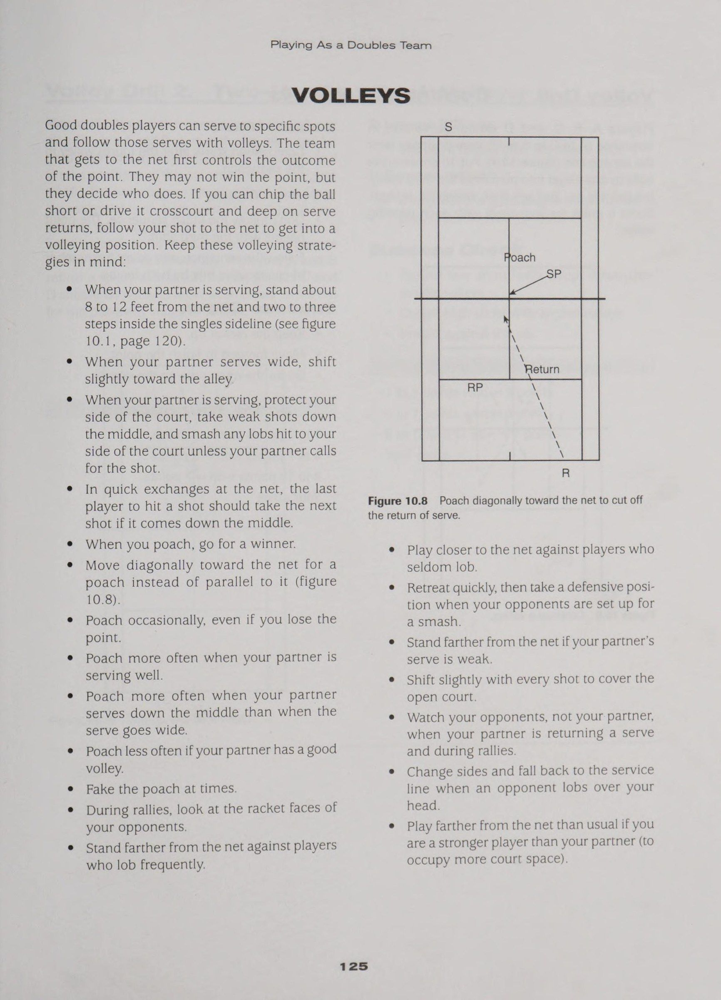
e Giao bóng rộng về phía trái tay của người chơi thuận tay trái ở phần sân Điểm 40–40 (deuce) (phải) để kéo đối thủ của bạn ra khỏi sân. ¢ Giao bóng trực tiếp vào người trả giao bóng (receiver) có cú Vung vợt ra sau (lấy đà) lớn. Hình 10.6 Giao bóng, trả lại và bắt lưới can thiệp (poaching). Giao bóng — Vội vàng — Volle Người giao bóng 10 lần vào vị trí. Để tăng độ khó khi thực hiện cú vô-lê từ giữa sân hoặc gần hơn (hình 10.7).
The technique for the volley used to poach is no different from any other volley. Use a short backswing, make contact with the ball as early as possible, and go for a winner. If you don’t go for a winner, you will put your team in a difficult court position to play out the point. If you are not a strong volleyer, don’t poach very often—just enough to pose a threat. Timing is crucial.
Người trả giao bóng (receiver) bóng trả lại bóng Đánh chéo sân (cross-court) và ¢ Chỉ tính điểm khi đội giao Cú ghi điểm trực tiếp (winner) ở lượt đánh thứ hai. điểm là trên. Để giảm độ khó ¢ Người giao bóng có hai cơ hội cho mỗi lần giao bóng. Kiểm tra thành công * Giao bóng sâu. * Bước tách đôi trên đường tới lưới. Ghi điểm thành công của bạn Đội giao bóng giành được 1 đến 3 điểm = 3 điểm Đội giao bóng giành được 4 đến 7 điểm = 5 điểm Đội giao bóng giành được 8 đến 10 điểm = 7 điểm Điểm của bạn ____ Hình 10.7.
Make your move at exactly the moment when the receiver has committed to making a crosscourt return. Move too early, and you give away the surprise element. Do it too late, and you can’t catch up to the ball. Communication between partners is the element that requires time to develop. Inexperienced doubles players and those not accustomed to each other should poach rarely—only when they can afford to lose the point.
Khoan 2. Giao bóng / Cú giao bóng — Trả lại — Trộm Người giao bóng Giao bóng / Cú giao bóng 10 lần. Người trả giao bóng (receiver) gửi * Người trả giao bóng (receiver) thiết lập kẻ bắt lưới can thiệp (poaching) bằng một quả bóng trở lại. Đối tác của người giao bóng đi theo và thực hiện các cú ném chéo góc có tốc độ trung bình, cao ngang đầu đến phần sân mở hoặc đến lượt trả về của đối tác nhận giao bóng. ở tuyến giao bóng đối diện. Vì lợi ích của bài tập này, người trả giao bóng (receiver) bóng phải trả bóng chéo bàn. Chơi điểm Kiểm tra thành công.
Some teams use behind-the-back hand signals to indicate an upcoming poach. A closed fist means no poach; an open hand indicates a poach on the next serve. Teams that have played together for along time don’t necessarily need signals. They have a feel for each other, what needs to happen, and when it should happen. If you’re not sure about whether a poach is the right thing to do in a critical situation, talk to your partner about it. But don’t go for a poach on every point.
¢ Giao bóng / Cú giao bóng sâu và xuống giữa. Để tăng độ khó ¢ Câu theo đường chéo về phía lưới. * Đối tác của người giao bóng không bắt buộc phải trả lại Điểm thành công của bạn Đánh chéo sân (cross-court). Giành được 1 đến 3 điểm = 3 điểm ¢ Quả giao bóng phải chạm sân trong vòng sáu feet tính từ đường giao bóng. Đánh dấu sân bằng phấn. 4 đến 7 điểm giành được = 5 điểm 8 đến 10 điểm giành được = 7 điểm Để giảm độ khó Điểm của bạn ___ ¢ Cho phép người Giao bóng / Cú giao bóng thực hiện hai lần trong mỗi lần giao bóng.
GROUNDSTROKES AND SERVICE RETURNS Groundstrokes are necessary, but effective doubles players win with serves, volleys, and smashes. Forehands and backhands from the baseline are a means of getting into position to win points with more forceful shots. Consider these strategies: Return serves from a point approximately where the baseline meets the singles sideline (gure 10.1). The server stands behind the baseline a few feet from the singles sideline.
Chơi với tư cách đánh đôiBÓNG CHUYỆN đồng đội Những người chơi đánh đôi giỏi có thể giao bóng đến các vị trí cụ thể và thực hiện theo các cú giao bóng đó bằng các cú vô-lê. Đội nào vào lưới trước sẽ kiểm soát kết quả của điểm. Họ có thể không giành được điểm, nhưng họ quyết định ai sẽ thắng. Nếu bạn có thể đánh bóng ngắn hoặc đánh bóng Đánh chéo sân (cross-court) và đi sâu khi Trả giao bóng, hãy thực hiện theo cú đánh của bạn vào lưới để vào tư thế bắt vô-lê. Hãy ghi nhớ các chiến lược bắt vô-lê này: Khi đối tác của bạn đang giao bóng, hãy đứng cách lưới khoảng 8 đến 12 feet và bước vào trong đường biên đơn (xem hình 10.1, trang 120).
The server’s partner stands 8 to 10 feet from the net inside the singles sideline. The receiver’s partner stands on the service line between the center service line and the singles sideline. Move in against players with weak serves. If the server remains on the baseline after the serve, return the ball deep and crosscourt; then follow your shot to the net (figure 10.2). If the server comes to the net after the serve, return the ball crosscourt and to the server’s feet (figure 10.3).
Khi đối tác của bạn giao bóng rộng, hơi dịch chuyển về phía con hẻm. Khi đối tác của bạn đang giao bóng, hãy bảo vệ phần sân của bạn, thực hiện các cú đánh yếu ở giữa sân và đập bất kỳ quả Cú lốp bóng (lob) nào đánh về phía sân của bạn trừ khi đối tác của bạn yêu cầu đánh. Trong các pha trao đổi nhanh trên lưới, tay vợt cuối cùng thực hiện cú đánh nên thực hiện cú đánh tiếp theo. Hình 10.8 Chém chéo về phía lưới để cắt đứt cú Trả giao bóng.
When you try to pass the server’s partner at the net, aim for the singles sideline. Test the server’s partner early in a match. Attempt to pass the net player occasionally, even if you lose the point. When your partner is forced out of position, shift to cover the open court (figure 10.4). Figure 10.1 Let the player on your team with the forehand position take most shots that come down the middle.
bắn nếu nó rơi xuống giữa. Khi bạn bắt lưới can thiệp (poaching), hãy tìm kiếm cú ghi điểm trực tiếp. Chơi gần lưới hơn với những người chơi Di chuyển theo đường chéo về phía lưới để bắt lưới can thiệp (poaching) thay vì song song với nó (hình hiếm khi Cú lốp bóng (lob). Rút lui nhanh chóng, sau đó vào thế phòng thủ khi đối thủ của bạn đã sẵn sàng cho 10,8). Thỉnh thoảng hãy câu trộm, ngay cả khi bạn thua một Cú đập trên đầu (smash).
When in doubt and your opponents are at the net, hit low and down the middle. Don’t rely on groundstrokes to win in doubles. Protect the middle. Force the action. Positioning at the start of a doubles point. Figure 10.3. Return the serve crosscourt and to the Figure 10.2 Approaching the net after a serve return. ’s feet. server Figure 10.4 Covering the open court.
điểm. Đứng xa lưới hơn nếu đối tác của bạn Poach thường xuyên hơn khi đối tác của bạn giao bóng tốt. giao bóng còn yếu. Dịch chuyển một chút với mỗi cú đánh để che chắn cho Poach thường xuyên hơn khi đối tác của bạn giao bóng ở giữa hơn là khi giao bóng đi rộng. sân đấu mở. Hãy quan sát đối thủ của bạn, chứ không phải đối tác của bạn, khi đối tác của bạn đang Trả giao bóng và trong các pha giao bóng.
Play to 10 points. One player serves all points. If the server stays at the baseline, the receiver sends the ball crosscourt and deep. If the server comes to the net, the receiver sends the ball crosscourt but short so that the server has to attempt a low shot. Do not poach on the first return. Play the point out. To Increase Difficulty
Bắt lưới can thiệp (poaching) ít thường xuyên hơn nếu đối tác của bạn có một cú bắt vô-lê tốt Đổi bên và lùi về vạch giao bóng khi đối thủ Cú lốp bóng (lob) qua cú vô-lê của bạn. Đôi khi giả mạo kẻ bắt lưới can thiệp (poaching). Trong các pha giao bóng, hãy nhìn vào Mặt vợt của Chơi xa lưới hơn bình thường nếu bạn là người chơi mạnh hơn đối tác của mình (đối với đối thủ của bạn. Đứng xa lưới hơn so với những người chơi Cú lốp bóng (lob) thường xuyên.
¢ Allow the server's partner to poach (when appropriate) after the serve. To Decrease Difficulty ¢ The point doesn’t begin until the third shot. ¢ The server stays back after serving. Players A and B play against players C and D. Players exchange continuous groundstrokes from the baseline. Put 10 balls into play, alternating first
chiếm nhiều không gian sân đấu hơn). Người chơi A, B, C và D Pha bóng qua lại (rally) chuyền. Để tăng độ khó mculalen o le < tee Dem ee ee. nea ¢ Cuộc thi bắt đầu sau cú vô-lê thứ tư trên đường giao bóng (hình 10.9). Đặt 10 chuỗi liên tiếp. bóng của bất kỳ người chơi nào vào cuộc. Sau cú vô-lê thứ ba, điểm được tính; và bất kỳ cú đánh nào, ở bất cứ đâu, đều hợp pháp.
Figure 10.5 Attacking groundstrokes. Serve—Crosscourt Return Success Check ¢ Take a short backswing on return of serve. ¢ Return deep if server stays back; return shallow if server rushes. Score Your Success 1 to 3 points won = 3 points 4 to 7 points won = 5 points 8 to 10 points won = 7 points Your score ____ Attacking Groundstrokes shots from team to team.
Để giảm độ khó ea 4 PONTO n YOUN eaniMatieesaninald ¢ Đừng làm theo trình tự ban đầu. Điểm VENSH: bắt đầu từ lượt bắn thứ ba. * Thực hiện theo trình tự và đếm số lần trúng đích liên tiếp của cả hai đội. Kiểm tra thành công * Giữ vợt lên. * Di chuyển về phía trước để Kết thúc cú đánh điểm. * Đi đến khu vực mở trên người chiến thắng.
As soon as either team hits a shot that falls into the opponents’ service court area, the opponents return the ball deep and move forward to volleying positions near the net (figure 10.5). Play the point out. To Increase Difficulty ¢ Keep the ball in play four shots before the point begins. To Decrease Difficulty
Ghi điểm thành công của bạn Thắng 1 đến 3 điểm = 3 điểm 4 đến 7 điểm thắng = 5 điểm 8 đến 10 điểm thắng = 7 điểm Điểm của bạn Hình 10.9 Cú vô-lê (volley) liên tục. Chơi như một bài tập cú vô-lê (volley) đôi đồng đội 2. Các cú vô-lê hai mặt, hai mặt sau Chơi tới 10 điểm. Một trong hai đội có thể đưa bóng vào trò chơi Để tăng độ khó. Người chơi A và B bắt đầu ở vạch cuối sân và đánh các cú đánh nền cho người chơi C và D. Người chơi C và * Điểm bắt đầu sau lượt đánh thứ tư.
¢ Designate only one team to be the attackers. Success Check * Be aggressive. ¢ Hit groundstrokes high and deep. Score Your Success 1 to 3 points won = 3 points 4 to 7 points won = 5 points 8 to 10 points won = 7 points Playing As a Doubles Team SERVES Placing the ball in a specific location with the ¢ Add more spin on serves to give yourself serve sets up the whole point.
D chiếm vị trí trên lưới và thực hiện cú vô-lê (hình Để Giảm Độ Khó 10.10). Điểm bắt đầu sau lần bắn thứ ba. Một lần * Chỉ định một đội chỉ giữ bóng ở điểm thực đang bật, cả hai đội đều cố gắng ép đối thủ phạm lỗi. Nếu người bắt vô-lê trả lại một lượt chơi. Không cho phép cú đánh ép buộc. bóng rơi nhẹ ở phần sân trước, cả hai đấu thủ A và B đều lao vào thực hiện cú hạ gục. Nếu người chơi A và B Kiểm tra thành công * Trả lại những cú đánh thấp với cú vô-lê sâu, từ đó trả xuống bằng phao mềm, người chơi C và D phải sẵn sàng di chuyển đến gần lưới hơn nữa để thực hiện cú vô-lê hoặc Cú đập trên đầu (smash) bóng.
If you can place time to get to the net. your serve, you can control what happens instead of reacting to what your opponents choose to do. Once you figure out where the other players are weak or which spots on the court they leave open, you have to be able to hit those spots. Placing your serve effectively is a relatively sophisticated skill that requires a lot of practice. The main objective still is to get the ball into play, but putting it in the right places will make things easier for you and your partner. Here’s how to get the most from your serve: ¢ Serve down the middle if your partner is good at poaching (figure 10.6).
cú vô-lê ở giữa. * Cắt đứt những cú sút cao bằng những cú vô-lê góc cạnh. * Bảo vệ khỏi Cú lốp bóng (lob). Ghi điểm thành công của bạn Thắng được 1 đến 3 điểm = 3 điểm Đạt được 4 đến 7 điểm = 5 điểm Đạt được 8 đến 10 điểm = 7 điểm Điểm của bạn ___ Hình 10.10 Cú vô-lê hai người, hai lưng. LOBS Mặc dù cú lốp bóng (lob) không phải là vũ khí chính trong e Sử dụng cú lốp bóng (lob) tấn công nếu người chơi trên lưới tăng gấp đôi, nhưng nó chắc chắn phải là một phần không thể thiếu trong các cuộc bắt lưới can thiệp (poaching) thường xuyên.
¢ Let the best server begin serving each set. ¢ Stand approximately halfway between the center mark and the doubles sidelines to serve (see figure 10.1, page 120). e Serve deep to the backhand or to an open area. e Serve most balls down the middle. e Serve wide to a right-handed player’s backhand in the ad (left) court to pull your opponent off the court. e Serve wide to a left-handed player’s backhand in the deuce (right) court to pull your opponent off the court. ¢ Serve directly at a receiver who has a big backswing. Figure 10.6 Serve, return, and poach.
mảng tấn công và phòng thủ của đội đôi Khi nghi ngờ, Cú lốp bóng (lob) sâu và xuống các cú đánh. Có nhiều cú đánh đa dạng và hiểu biết về trung tâm của sân. khi nào sử dụng chúng có thể bù đắp cho trò chơi sức mạnh của Lob ở mức tấn công thấp và cao khi đối thủ hung hãn nhân đôi. Dưới đây là một số chiến thuật cần cân nhắc khi Cú lốp bóng (lob): phòng thủ. Cú lốp bóng (lob) qua người chơi ở gần lưới hơn, sau đó Cú lốp bóng (lob) theo hướng của bạn về phía lưới.
The server serves 10 times and gets into position. to hit volleys from midcourt or closer (figure 10.7). The receiver returns the ball crosscourt and the point is on. Figure 10.7. Serve-rush-volley. Serve Drill 2. The server serves 10 times. The receiver sends the ball back. The server’s partner poaches and volleys to the open court or to the receiver's partner at the opposite service line.
Lo rill. Giao bóng — Lob Chơi 10 điểm liên tiếp với cùng một người giao bóng (hình 10.11). Người giao bóng Giao bóng / Cú giao bóng. Để tăng độ khó ¢ Người chơi trên lưới đứng xa hơn về phía người trả giao bóng (receiver) bóng và Cú lốp bóng (lob) qua đối tác của người giao bóng để lấy đi không gian sân trống. lưới lưới. Đồng đội của người giao bóng cú đập bóng smash hoặc di chuyển để che chắn phía bên kia sân. Người giao bóng Để Giảm Độ Khó phải đưa cú giao bóng đi sâu vào giao bóng ¢ Người chơi trên lưới bắt đầu điểm ở vị trí gần sân. Người trả giao bóng (receiver) bóng phải ngụy trang cú lốp bóng (lob) cho đến khi vào lưới càng tốt để có nhiều khoảng trống hơn ở giây cuối cùng trước khi tiếp xúc với bóng. Không gian sân đấu. Người trả giao bóng (receiver) cũng phải thực hiện cú lốp bóng (lob) thành công bằng cách di chuyển đến đường giao bóng hoặc gần hơn cho lần đánh Kiểm tra thành công tiếp theo. Điểm bắt đầu với việc giao bóng. * Gửi cú lốp bóng (lob) đầu tiên xuống thấp qua đối tác của người giao bóng. * Thực hiện cú lốp bóng (lob) đến vị trí đường giao bóng hoặc gần hơn. Ghi điểm thành công của bạn 1 đến 3 điểm giành được = 3 điểm 4 đến 7 điểm giành được = 5 điểm 8 đến 10 điểm giành được = 7 điểm lượt giao bóng của bạn.
For the sake of this drill, the receiver must return crosscourt. Play the point out. To Increase Difficulty * The server's partner is not required to return crosscourt. ¢ Serves must strike the court within six feet of the service line. Mark the court with chalk. To Decrease Difficulty ¢ Allow the server two attempts on each serve. Serve—Rush—Volle To Increase Difficulty ¢ Only count points when the serving team wins on its second shot. To Decrease Difficulty ¢ The server gets two chances on each serve. Success Check * Serve deep. * Take a split step on the way to the net. Score Your Success 1 to 3 points won by serving team = 3 points 4 to 7 points won by serving team = 5 points 8 to 10 points won by serving team = 7 points Your score ____ Serve—Return—Poach * The receiver sets up the poacher with a head-high, medium-paced crosscourt return. Success Check ¢ Serve deep and down the middle. ¢ Poach in a diagonal toward the net. Score Your Success 1 to 3 points won = 3 points 4 to 7 points won = 5 points 8 to 10 points won = 7 points
Hình 10.11 Chơi với tư cách một đội đôi CÁC ĐẤU VÀ THẢ Cú đập trên đầu (smash) trong đánh đôi không chỉ quan trọng mà còn là Cú đập trên đầu (smash) theo một góc để mở ra cơ hội cần thiết. Nếu đội kia nhận ra rằng bạn hoặc đồng đội của bạn không thể đánh được phần sân của đội thắng. Đập xuống giữa để tạo sự hỗn loạn, coi chừng! Bởi vì mọi điểm giao bóng đều được trao đổi giữa các đối thủ của bạn.
Playing As a Doubles Team VOLLEYS Good doubles players can serve to specific spots and follow those serves with volleys. The team that gets to the net first controls the outcome of the point. They may not win the point, but they decide who does. If you can chip the ball short or drive it crosscourt and deep on serve returns, follow your shot to the net to get into a volleying position.
bắt đầu với một người chơi trên lưới, người đó sẽ được kiểm tra sớm để xem điều gì xảy ra trên một cú lốp bóng (lob). Để đồng đội có Cú đập trên đầu (smash) mạnh nhất vượt qua trung lộ. về phía đó. Ngoài ra, vì ý tưởng đánh đôi e Hit sẽ đập vào những người chơi ở vị trí yếu. là cướp lưới của đội kia càng sớm càng tốt, bạn phải thực hiện được cú bỏ nhỏ (drop shot) (drop shot) trong nội dung đánh đôi thường không phải là điểm với một Cú đập trên đầu (smash) thắng. Đây là cách để đạt được những Cú đập trên đầu (smash) chiến thắng: ý tưởng hay. Nếu bạn thử thực hiện cú cú bỏ nhỏ (drop shot) (drop shot) (drop shot), hãy đợi cho đến khi đối thủ của bạn bị đẩy sâu và ra khỏi vị trí; sau đó đánh về phía người chơi chậm nhất.
Keep these volleying strategies in mind: When your partner is serving, stand about 8 to 12 feet from the net and two to three steps inside the singles sideline (see figure 10.1, page 120). When your partner serves wide, shift slightly toward the alley When your partner is serving, protect your side of the court, take weak shots down the middle, and smash any lobs hit to your side of the court unless your partner calls for the shot. In quick exchanges at the net, the last player to hit a shot should take the next shot if it comes down the middle. When you poach, go for a winner. Move diagonally toward the net for a poach instead of parallel to it (figure 10.8). Poach occasionally, even if you lose the point.
Máy khoan đập. Cú đập trên đầu (smash) hai lưng, hai lưng Chơi tới 10 điểm. Người chơi A hoặc người chơi B đặt 10 quả bóng để tăng độ khó từ đường cuối sân bằng cách sử dụng Cú lốp bóng (lob) (hình 10.12). Trên lưới, người chơi C hoặc D đánh * Đánh cú lốp bóng (lob) thiết lập sâu hơn để bắt đầu bài tập. Để giảm độ khó, hãy thực hiện một Cú đập trên đầu (smash) từ trên cao và điểm bắt đầu.
Poach more often when your partner is serving well. Poach more often when your partner serves down the middle than when the serve goes wide. Poach less often if your partner has a good volley. Fake the poach at times. During rallies, look at the racket faces of your opponents. Stand farther from the net against players who lob frequently.
* Lượt bóng ngắn hơn và thấp hơn khi thiết lập. Kiểm tra thành công Hãy quay đầu và rút lui nhanh chóng. Giữ vợt ở tư thế nghiêng. Tránh xa những thay đổi hoàn toàn. Sử dụng những Cú đập trên đầu (smash) từ giữa để tạo ra sự nhầm lẫn. Đánh những Cú đập trên đầu (smash) rộng để mở sân. Ghi điểm thành công của bạn Thắng được 1 đến 3 điểm = 3 điểm Thắng được 4 đến 7 điểm = 5 điểm Thắng được 8 đến 10 điểm = 7 điểm Điểm của bạn ___ Hình 10.12 Những Cú đập trên đầu (smash) hai lưng, hai lưng.
Figure 10.8 Poach diagonally toward the net to cut off the return of serve. Play closer to the net against players who seldom lob. Retreat quickly, then take a defensive position when your opponents are set up for a smash. Stand farther from the net if your partner's serve is weak. Shift slightly with every shot to cover the open court. Watch your opponents, not your partner, when your partner is returning a serve and during rallies.
ĐÔI HỖN HỢP Ý tưởng đằng sau nội dung đôi nam nữ mang tính xã hội là đội có người phụ nữ khỏe hơn sẽ giành chiến thắng. Điều này đặc biệt đúng nếu người phụ nữ trong đội, mọi người đều vui vẻ, tham gia vào trận đấu và rời khỏi trận đấu, có thể chơi trên lưới tốt. Trước đây, phụ nữ có sức khỏe thể chất và tinh thần tốt. Vì vậy, tôi đã do dự về việc phát triển một trò chơi trên lưới, nhưng đôi nam nữ giải trí có một số điều bất thành văn đã thay đổi.
Change sides and fall back to the service line when an opponent lobs over your head. Play farther from the net than usual if you are a stronger player than your partner (to occupy more court space). Players A, B, C, and D exchange volleys in. To Increase Difficulty mculalen o le < tee Dem ee ee. nea ¢ Competition starts after the fourth volley in the service line (figure 10.9).
quy tắc. Những quy tắc đó hầu hết không liên quan đến Vị trí trong nội dung đôi nam nữ nên phụ thuộc vào cách thi đấu với đối thủ yếu hơn, chẳng hạn như mỗi đối tác có thể chơi ở bên nào của sân như sau: chơi tốt nhất. Một số người tin rằng các điểm quan trọng được diễn ra trên sân quảng cáo và e Đừng cố tình phá vỡ một thiết lập trực tiếp, đối tác mạnh hơn sẽ chơi ở phía đó khi đối tác yếu hơn.
Put 10 consecutive the sequence. balls by any player into play. After the third volley, the point is on; and any shot, anywhere, is legal. To Decrease Difficulty ea 4 PONTO n YOUN eaniMatieesaninald ¢ Don't follow the initial sequence. The point VENSH: begins with the third shot. * Follow the sequence, and count the number of consecutive hits by both teams. Success Check
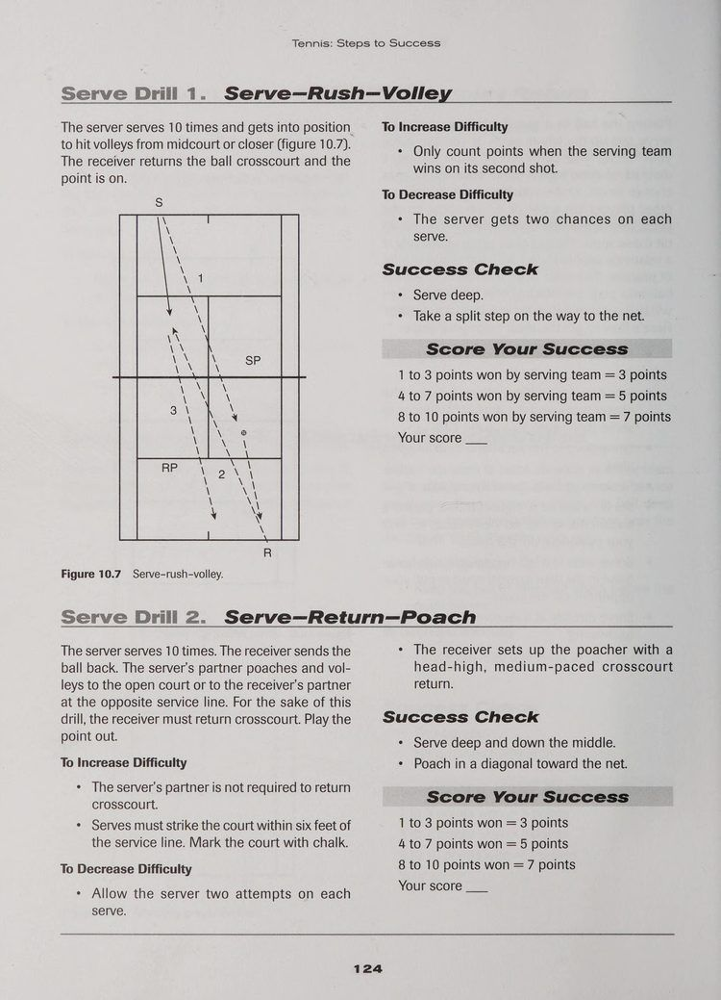
đội kia giao bóng. Ngay cả khi lý thuyết này là đúng, Đừng đánh quá nhiều cú đánh vì Điểm lợi thế (advantage) của việc mỗi người chơi chơi từ đối tác sẽ càng yếu đi. bên mà anh ấy hoặc cô ấy cảm thấy hiệu quả và thoải mái nhất sẽ vượt trội hơn điểm quan trọng. Đừng cố đe dọa người chơi yếu hơn trong đội bằng cách tung những cú đánh mạnh vào người chơi đó, đặc biệt là khi người đó đang ở trên lý thuyết.
* Keep the racket up. * Move forward to finish the point. * Go for the open area on the winner. Score Your Success 1 to 3 points won = 3 points 4 to 7 points won = 5 points 8 to 10 points won = 7 points Your score Figure 10.9 Continuous volleys. Playing As a Doubles Team Volley Drill 2. Two-Up, Two-Back Volleys Play to 10 points. Either team can put the ball into play.
Bởi vì nội dung đôi nam nữ thường có ít ưu tiên nhất trong thời gian luyện tập và thi đấu, nên hãy sử dụng nhiều cú đánh nhất có thể để tạo ra các vấn đề về tinh thần đồng đội giữa các đối tác. Di chuyển gặp. Trong thi đấu giải đấu, những quy tắc này không áp dụng @ SS và SO. Thi đấu đôi nam nữ mang bóng quanh sân càng nhiều càng tốt, được chơi giống hệt nam và nữ, một cách hay để thao túng đội kia. Thùy tăng gấp đôi. Những cú giao bóng phải được thực hiện với vận tốc đặc biệt hiệu quả vì một đấu thủ đã đến Vị trí trên sân giao bóng thích nhường đường cho người kia nhất hoặc các đối tác phải tạo ra điểm thắng, bất kể phải thay đổi Vị trí trên sân trước khi đánh.
Players A and B start at the baseline and hit groundstrokes to players C and D. Players C and D take positions at the net and hit volleys (figure 10.10). The point begins after the third shot. Once the real point is on, both teams try to force a mistake by their opponents. If the volleyers return a ball that lands softly in the forecourt, both players A and B move in for the kill. If players A and B return a volley with a soft floater, players C and D should be ready to move even closer to the net for the put-away volley or smash. Figure 10.10 Two-up, two-back volleys. To Increase Difficulty
giới tính của người trả giao bóng (receiver). Các cú đánh nên được định hướng Các cú bỏ nhỏ (drop shot) (drop shot) thường không phải là một ý tưởng hay, nhưng chúng có tác dụng trong các trận đấu đôi hỗn hợp để di chuyển đối thủ ra khỏi người chơi yếu hơn nếu tình huống đó đòi hỏi Mỗi người chơi nên che chắn về phía vị trí của mình và mở ra một khu vực để thực hiện cú đánh thắng. sân đấu. Một đối tác không nên cắt trước mặt Cuối cùng, buộc đối phương phải đánh đôi đối phương trừ khi tỷ lệ quần vợt (đánh đội làm điều mà các thành viên của đội đó không muốn làm. Nếu đánh an toàn nhất, hiệu quả nhất trong một tình huống nhất định) sẽ quy định chiến thuật này. Nếu một tay vợt bắt lưới can thiệp (poaching) một trong hai tay vợt ngại chơi lưới, hãy khiến tay vợt đó vào lưới bằng cách đánh những cú đánh ngắn.
* The point begins after the fourth shot. To Decrease Difficulty * Designate one team only to keep the ball in play. Allow no forcing shots. Success Check * Return low shots with deep, down-themiddle volleys. * Cut off high shots with angled volleys. * Protect against the lob. Score Your Success 1 to 3 points won = 3 points 4 to 7 points won = 5 points 8 to 10 points won = 7 points LOBS Although the lob is not a primary weapon in doubles, it should certainly be an integral part of a doubles team’s offensive and defensive array of shots. Having a variety of shots and knowing when to use them can offset the power game of aggressive doubles opponents. Here are some tactics to consider on the lob: Lo rill. Serve—Lob
quá thường xuyên hoặc cản phá các cú đánh nền, tay vợt đó sẽ làm suy yếu vị trí của đội bằng cách rời khỏi một phần của đội. Nếu đội rất hung hãn và thích lên lưới, hãy sử dụng cú lốp bóng (lob) để giữ đồng đội rời sân để sẵn sàng trả bóng. Hành vi này là sự cân bằng. Nếu một đối tác muốn thống trị, hãy hạ thấp đối tác của người chơi.
Play 10 consecutive points with the same player serving (figure 10.11). The server serves. The receiver sends a lob over the server's partner at the net. The server's partner smashes the ball or moves to cover the other side of the court. The server has to get the serve deep into the service court.
người chơi đó rời khỏi vị trí để thực hiện điều đó. Nếu xét về trình độ chung, các đối tác của nam và nữ không quen chơi cùng nhau, đánh quần vợt, chơi đôi nam nữ có lẽ có nghĩa là sẽ có nhiều cú đánh vào giữa. ĐỐI TÁC CỦA BẠN LÀ AI? Việc bạn chơi cùng ai cũng quan trọng như việc bạn chơi tốt như thế nào. Đừng cho rằng bạn chơi giỏi một người chơi đơn giỏi. Tính hóa học, khả năng tương thích và là một tay chơi đôi giỏi.
The receiver has to disguise the lob until the last second before contact with the ball. The receiver should also follow a successful lob by moving in to the service line or closer for the next shot. The point starts with the serve. Serve-lob. Figure 10.11 e Use the offensive lob if the net player poaches often. When in doubt, lob deep and down the center of the court.
bổ sung các trò chơi của nhau để chơi với người bạn thích. nhóm thành công, lâu dài (và tình bạn). Hãy cân nhắc những gợi ý này khi bạn chơi với một người không chỉ trích bạn sau một cú đánh tồi. lựa chọn đối tác đánh đôi: Chơi với tư cách là một đội đôi Chơi với người có điểm mạnh bằng cách chơi người chơi thuận tay trái trong trò chơi bù đắp cho điểm yếu của bạn.
Lob low on offense and high on defense. Lob over the player closer to the net, then follow your lob toward the net. To Increase Difficulty ¢ The player at the net stands farther back to take away open court space. To Decrease Difficulty ¢ The player at the net starts the point as close to the net as possible to allow more open court space. Success Check
sân và người chơi thuận tay phải ở sân quảng cáo để bảo vệ tầm trung. Chấp nhận vai trò của bạn như là một phần của một nhóm. Đừng cố gắng thống trị trận đấu. Giao tiếp với đối tác của bạn thường xuyên. Hãy tìm người chơi thuận tay trái-phảiHãy hung hãn hơn bình thường nếu đối tác của bạn là người chơi yếu hơn. sự kết hợp của người chơi thuận tay. Chơi với người chơi thuận tay trái trong sân quảng cáo Quay trở lại đường cuối sân (baseline) khi phần của bạn và người chơi thuận tay phải ở sân Điểm 40–40 (deuce) để có được những pha trả bóng Đánh chéo sân (cross-court) hiệu quả.
* Send first lob low over the server's partner. * Follow the lob to a service-line position or closer. Score Your Success 1 to 3 points won = 3 points 4 to 7 points won = 5 points 8 to 10 points won = 7 points Your seove Playing As a Doubles Team SMASHES AND DROP SHOTS The smash in doubles is not just important, it is essential. If the other team figures out that either you or your partner cannot hit winning smashes, watch out! Because every serving point begins with one player at the net, that person will be tested early to see what happens on a lob to that side.
ner đang gặp khó khăn khi Trả giao bóng. Trừ khi bạn chơi thường xuyên với cùng một đối tác, hãy học cách chơi bên trái và bên phải khi nhận giao bóng. KHI SỰ Sự tự tin ĐÁP ỨNG THỰC TẾ Đội đánh đôi xuất sắc nhất không phải lúc nào cũng giành chiến thắng. Thẩm phán ai nhỏ hơn, chậm hơn, yếu hơn, kém kỹ năng hơn hoặc đánh giá đối thủ dựa trên cú đánh, tuổi tác, người có thành tích kém. Cũng có thể ngoại hình là một sai lầm lớn thường dẫn đến việc thua đội yếu hơn, và đó là lý do yếu hơn do quá Sự tự tin. Và một khi các đội quá Sự tự tin vẫn tiếp tục cuộc chơi.
Also, because the idea in doubles is to take away the net from the other team as early as possible, you must be able to finish the point with a winning smash. Here’s how to hit winning smashes: e¢ Smash at an angle to open up the opponent’s court. Smash down the middle to create confusion between your opponents. Let the partner with the strongest smash take overheads down the middle. e Hit smashes at players in weak positions. Using drop shots in doubles is not usually a good idea.
tàu bắt đầu lăn bánh, khó mà dừng lại được. Heil mô tả cách thứ hai của tình trạng quá Sự tự tin. "Sớm hay muộn, Sự Sự tự tin quá mức gặp phải vấn đề thực tế sẽ diễn ra: "Vận động viên hoặc đội đánh giá thấp đối thủ và bị tụt lại phía sau trong một cuộc thi có thể gặp rất khó khăn và Cách khắc phục (Correction) xảy ra," John Heil, DA, và nhà tâm lý học thể thao, ở Roanoke, Virginia, nói, nghe giống như một nhà phân tích thị trường chứng khoán hơn là một nhà tâm lý học thể thao khi thảo luận về vấn đề quá Sự tự tin ở các vận động viên. Một đối thủ hoặc đội kém hơn có thể hoàn toàn bị áp đảo, nhưng [đội đó] giữ trận đấu chặt chẽ, gặp may ở gần cuối quá trình kiểm tra thực tế diễn ra, thì trận đấu sẽ càng ít thiệt hại và giành chiến thắng. Nguy cơ thứ ba của việc quá Sự tự tin là cho phép đối thủ yếu hơn ở lại đủ lâu trong một trận đấu hoặc cuộc đua để có được Sự Sự tự tin. Các nhà tâm lý học của ConSport mô tả Sự Sự tự tin giống như niềm tin của một người (hoặc của đội) mà người đó có thể đã nói, "Sự Sự tự tin quá mức tạo ra sự bất cẩn." Phiên bản tâm lý thể thao của (hoặc họ) có thể thực hiện những nhiệm vụ khó khăn trong những điều kiện nhất định. Sự Sự tự tin thái quá phát triển khi nhóm đánh giá sai những điều kiện đó. Các đối tác có xu hướng ít chú ý đến chi tiết hơn, bỏ qua câu trích dẫn quan trọng đó là "Sự Sự tự tin quá mức có thể nhanh chóng dẫn đến sự đảo ngược thái độ, trong đó người được yêu thích nhanh chóng mất đà và đối thủ có được Sự Sự tự tin với tốc độ nhanh." thông tin và thiếu tập trung cả trong quá trình chuẩn bị cũng như trong quá trình thi đấu. Tất cả những yếu tố này đều dẫn đến sai sót trong phán đoán, tạo tiền đề cho việc thua. Trong các sự kiện thể thao, sẽ có một thời điểm mà việc ai là người giỏi nhất trên giấy tờ không còn quan trọng nữa. Trong hai phút cuối của một trận đấu bóng rổ sát nút, trong hiệp cuối cùng của một trận đấu quần vợt sát nút, hoặc trong một trận playoff đột tử ở các môn thể thao khác, việc ai được cho là giỏi hơn thực sự không quan trọng. Đó là người chơi, được nghỉ ngơi, là người giỏi nhất đối với kẻ yếu thế.
If you try a drop shot, wait until your opponents are pushed deep and out of position; then hit to the side of the slowest player. Smash Drill. Two-Up, Two-Back Smashes Play to 10 points. Either player A or player B puts 10 balls into play from the baseline using lobs (figure 10.12). At the net, either player C or D hits an overhead smash and the point begins. Figure 10.12 Two-up, two-back smashes. To Increase Difficulty * Hit setup lobs deeper to start the drill. To Decrease Difficulty * Hit lobs shorter and lower on setups. Success Check Make a quick turn and retreat. Hold the racket in a cocked position. Stay away from full swings. Use down-the-middle smashes to create confusion. Hit wide smashes to open the court. Score Your Success 1 to 3 points won = 3 points 4 to 7 points won = 5 points 8 to 10 points won = 7 points MIXED DOUBLES The idea behind social mixed doubles is for everyone to have a good time, to get into the action, and to come away from a match in good physical and emotional health. Therefore, recreational mixed doubles has some unwritten rules. Those rules are mostly don’ts involving how to play against a weaker opponent, such as the following: e Don’t deliberately smash a setup directly at the weaker partner. Don’t hit too many shots at the weaker partner. Don’t try to intimidate the weaker player on a team by hitting hard shots at that player, especially when he or she is at the Met. In tournament competition, these rules do not apply. Competitive mixed doubles shou be played exactly like men’s and women doubles. Serves should be hit with the velocit and to the place in the service court most like to produce a winning point, regardless of th receiver’s gender. Shots should be directed the weaker player if the situation calls for Each player should cover his or her side of t court.
Sự Sự tự tin thái quá thể hiện ở ít nhất ba khía cạnh, không cái nào trong số đó là đẹp đẽ cả. Đầu tiên là nhìn qua một đối thủ được cho là kém hơn. Một cách tiếp cận luyện tập không tập trung hoặc không nghiêm túc là công thức dẫn đến thảm họa, bất kể ai là người tiếp theo trong lịch trình. Chuẩn bị cho điều kiện, hoặc muốn giành chiến thắng nhất. Tài năng khiến đối thủ có thể giành chiến thắng dễ dàng có thể khó hơn việc chuẩn bị sẵn sàng cho cuộc cạnh tranh đỉnh cao. Đó là một phản ứng hoàn toàn tự nhiên khi coi việc giành chiến thắng trước những người chơi không đảm bảo chiến thắng là điều hiển nhiên.
One partner should not cut in front of the other unless percentage tennis (hitting the safest, most effective shot in a given situation) would dictate this tactic. If one player poaches too often or hogs groundstrokes, that player weakens the team’s position by leaving part of the court open for the return. This behavior is also demeaning to the player’s partner. Given the general level of men’s and women’s tennis, playing mixed doubles probably means a @ SS an SO It. he that the team with the stronger woman will win. This is especially true if the woman on the team can play well at the net.
"Sự Sự tự tin thái quá thường là kết quả của việc các vận động viên không chịu trách nhiệm về những khuyết điểm của mình," Heil nói. "Sau đó, họ nghĩ rằng họ có thể bỏ qua việc kiểm tra thực tế. Những người có ý kiến phóng đại về bản thân - và điều đó thường xảy ra. Heil nói: "Giải pháp là chuẩn bị, chơi trong thời điểm hiện tại và chịu trách nhiệm về hành động của mình. Giải quyết tình huống trước mắt của những người chơi quần vợt - tìm kiếm những cách giải thích khác khi mọi việc không suôn sẻ. Họ đổ lỗi cho bạn, không phải ai mà bạn nhớ hoặc đã đọc về huấn luyện viên, trọng tài, người biên tập, đồng đội, chơi báo hoặc coi đó là điều hiển nhiên." Như họ nói về các điều kiện, hoặc bất cứ điều gì chuyển lời bào chữa cho việc thi đấu kém sang người khác. Đó là một câu chuyện ở Phố Wall, "Thành tích trong quá khứ không đảm bảo kết quả." Khi thi đấu với đối thủ yếu hơn vì những lý do khiến một số tay vợt rời bỏ huấn luyện viên, bạn nên trở thành một người giao dịch hàng ngày thay vì làm huấn luyện viên, đối tác hoặc đối tác khi mọi thứ đang ổn định.
In the past, women have been hesitant about developing a net game, but that has changed. Positioning in mixed doubles should depend on which side of the court each partner can play best. Some people believe that the crucial points are played on the ad court and that the stronger partner should play on that side when the other team serves. Even if this theory is true, the advantage of having each player play from the side on which he or she is most effective and comfortable outweighs the crucial point theory. Because mixed doubles usually has the least priority in practice and playing time, use as many shots as you can that create teamwork problems between opposing partners. Moving the ball around the court as much as possible is a good way to manipulate the other team. Lobs are especially effective because one player has to give way to the other, or the partners have to change positions on the court before hitting.
sai rồi." TÓM TẮT THÀNH CÔNG Điểm trong các trận đấu đôi bắt đầu bằng những cú đánh rất có cấu trúc: Giao bóng bằng những cú vô-lê trái tay hoặc sắc bén, hung hãn. Đánh những cú đánh nền vào giữa khi đối thủ đang ở trên lưới. Đánh đập vào giữa để tạo sự nhầm lẫn. sân mở, trả lại sân chéo, tiếp cận lưới càng sớm càng tốt, v.v. Sau đó, mọi thứ được Hit đập rộng để mở sân.
Drop shots are usually not a good idea, but they work in mixed doubles to move opponents out of position and open an area for a winning shot. Finally, make the opposing mixed doubles team do what its members do not want to do. If either player is shy about playing the net, make that player come to the net by hitting short shots.
điên rồ. Với bốn người chơi, ranh giới rộng hơn và Nhập điểm của bạn cho từng bài tập đánh đôi trong bảng 10.1. Mục tiêu là ghi được ít nhất những góc độ hấp dẫn, cấu trúc đó biến thành những điểm hoang dã, dài dòng, khó đoán và thú vị. 28 trên 56 điểm có thể. Hãy nhớ những nguyên tắc cơ bản về đánh đôi này: giao bóng sâu; trả về Đánh chéo sân (cross-court) (hầu hết thời gian); và Bảng 10.1.
If the team is very aggressive and likes coming to the net, use the lob to keep the partners off balance. If one partner wants to dominate, make that player get out of position to do it. If the partners are not used to playing together, hit a lot of shots down the middle. WHO’S YOUR PARTNER? Who you play with can be as important as how well you play.
Tóm tắt tính điểm Bài tập giao bóng-trả lại 1. Giao bóng- — trả lại Đánh chéo sân (cross-court) Ss ouiron'y Bài tập đánh bóng 1. Tấn công các cú đánh nền 2 giây OU Gi 7 Bài tập giao bóng 1. Giao bóng-bóng-vô-lê trong số 7 2. Giao bóng-trả lại — đánh trong số 7 bài tập cú vô-lê (volley) 1. Vô-lê liên tục trong số 7 ee Out On 2. Vô-lê hai lần, hai lần sau Lob Drill Cú giao bóng trong số 7 cú đập bóng smash Cú đập hai người, hai hậu vệ đập oS OURO trên 56 Chuẩn bị cho trận đấu Hầu hết các trận đấu đều có những thăng trầm. Thậm chí còn thua. Phần đầu tiên của chương này chứa một số thông tin khi bạn đang chiến thắng, hãy mong đợi những gợi ý của người chơi khác để giúp bạn thực hiện những điều cần thiết để sớm hay muộn chạy đua với bạn. Trước khi điều chỉnh để chơi các đối thủ khác nhau.
Chemistry, compatibility, and complementing each other’s games make for successful, long-lasting teams (and friendships). Consider these suggestions when you have a choice of doubles partners: e Don’t assume that a good singles player is a good doubles player. Play with someone you like. Play with someone who does not criticize you after a bad shot. Playing As a Doubles Team Play with someone whose strengths compensate for your weaknesses. Accept your role as part of a team. Don’t try to dominate the match. Look for a left-handed player-righthanded player combination. Play the left-handed player in the ad court and the right-handed player in the deuce court for effective crosscourt returns.
một trận đấu bắt đầu, đặt ra những mục tiêu thực tế. Khi bạn đã thực hiện thành công khi bắt đầu trận đấu, hãy tránh rơi vào các bước đi có thể đoán trước được về các cú đánh, chiến lược trận đấu và các tình huống chơi. Chơi bóng, không phải đối thủ. Kiểm tra các nguyên tắc cơ bản của bạn trước khi thay đổi chiến thuật để sử dụng với các loại người chơi khác nhau, thử thách cuối cùng là học cách điều chỉnh các điều kiện chơi như sân nhanh, sân chậm, gió, cách tiếp cận tinh thần. Duy trì Sự tập trung bất kể điều gì xảy ra trên lưới.
Play the left-handed player in the deuce court and the right-handed player in the ad court for down-the-middle coverage. Communicate with your partner often. Be more aggressive than normal if your partner is a weaker player. Fall back to the baseline when your partner is having trouble returning a serve. Unless you play regularly with the same partner, learn to play the left and right sides when receiving serves. WHEN OVERCONFIDENCE MEETS REALITY The best doubles team doesn’t always win.
thời tiết nóng, thời tiết lạnh và tiếng ồn quá mức. Tất cả các đối thủ không được tạo ra như nhau. Họ mang đến những khả năng và phong cách chơi khác nhau cho họ. Phần thứ hai của chương này bao gồm lời khuyên về việc điều chỉnh những điều kiện này để bạn có thể phù hợp. Khả năng quản lý các biến số này của bạn sẽ tạo ra sự khác biệt trong việc bạn giành chiến thắng hay đưa trò chơi của mình lên một tầm cao mới.
Judging opponents on the basis of their strokes, age, or appearance is a big mistake that often leads to overconfidence. And once the overconfidence train starts rolling, it’s hard to stop. “Sooner or later, overconfidence meets reality and a correction occurs,” says John Heil, DA, and sport psychologist, of Roanoke, Virginia, sounding more like a stock market analyst than a sport psychologist when discussing the problem of overconfidence in athletes.
CHƠI VỚI CHÍNH MÌNH Không thể loại bỏ tất cả những suy nghĩ không liên quan đến quần vợt, nhưng ít nhất hãy cố gắng loại bỏ những suy nghĩ rõ ràng nhất. Chơi một điểm tại một thời điểm. Đối thủ của bạn khó có thể đánh được bất kỳ cú đánh nào của bạn. Mặc dù có rất nhiều phiền nhiễu bên ngoài, nhưng hầu hết các vấn đề về tập trung đều nảy sinh trong tâm trí chúng ta. Chúng ta để suy nghĩ của mình trôi đi. Chúng ta nghĩ về gia đình, công việc hoặc học tập của mình. Chúng tôi lo lắng về việc mọi người nhìn thấy chúng tôi bắn xấu. Và chúng tôi nghĩ về một điều ít nhất chưa từng thấy trước trận đấu này. Trên thực tế, bạn có thể đã đáp trả mọi kiểu bắn mà anh ấy hoặc cô ấy đưa ra. Tất cả những gì người chơi khác có thể làm là đánh một quả bóng tennis. Bạn có thể thấy một số bức ảnh hàng ngàn thứ khác. Bắt đầu bằng cách giảm bớt những suy nghĩ không liên quan đến trò chơi, sau đó tìm cách để nâng cao khả năng tập trung của bạn.
“The sooner that reality check happens, the less damage there will be. Sport psychologists describe self-confidence aS a person’s (or team’s) belief that he or she (or they) can perform difficult tasks in certain conditions. Overconfidence develops when the team misjudges those conditions. The partners tend to pay less attention to detail, ignore critical information, and lack focus both in preparation and during competition. All of these factors lead to flaws in judgment that set the stage for losing to an underdog. Overconfidence surfaces in at least three ways, none of them very pretty. The first is to look past a supposedly lesser opponent. An unfocused or a less-than-serious approach to practice is a recipe for disaster, regardless of who is next on the schedule. Preparing for opponents who should allow for an easy win can be more difficult than getting ready for top-flight competition.
thường xuyên hơn hoặc trong các tình huống khác nhau, nhưng không có nhiều điều bất ngờ ở đó. Nếu bạn bị áp đảo, hãy cố gắng giành điểm. Nếu bạn có thể giành được một vài điểm, bạn có thể thắng một trò chơi. Nếu bạn có thể giành chiến thắng sau khi bóng chạm vào bạn, hãy lưu ý xem đối thủ của bạn đang di chuyển ở đâu trên sân. Trong tình huống này, tâm trí của bạn sẽ phải di chuyển nhanh chóng qua lại giữa mức độ ưu tiên của một trò chơi, bạn có thể sẽ giành được nhiều chiến thắng hơn.
It is a perfectly natural response to take for granted a win over players who are smaller, slower, weaker, less skilled, or who have a poor record. It is also possible to lose to a weaker team, and that’s why weaker teams stay in the game. Heil describes a second way the overconfidence problem plays out: “The athlete or team who underestimates an opponent and gets behind in a contest may have a very difficult time coming back.
mục. Bạn phải đủ tinh ý để biết liệu tay vợt kia có vào lưới hay không. Trước khi cố gắng đạt đến mức độ tập trung cao hơn, hãy chắc chắn rằng bạn muốn. Hàng triệu người chơi quay trở lại giữa đường cuối sân, hoặc những người di chuyển chỉ muốn ra ngoài, đánh bóng, quay trở lại một bên sân. Trong vòng một phần giây, sự chú ý của bạn lại phải quay trở lại quả bóng.
A lesser competitor or team can be completely outplayed, but [that team] keeps the match close, gets lucky near the end of the game, and wins. The third risk of overconfidence is allowing the lesser opponent to hang around long enough during a game or race to gain confidence. Confucius may have said, “Overconfidence breeds carelessness.
thời gian và không phải lo lắng về việc hướng toàn bộ sự chú ý của họ vào trò chơi đang chơi. Xét cho cùng, ưu tiên thứ ba trong danh sách suy nghĩ của bạn là phương pháp đánh bóng. Bạn sẽ vui hơn nhiều khi nói chuyện với bạn bè, ra ngoài, xem người khác chơi và thư giãn. Nhưng nếu bạn muốn chơi off nếu bạn tự động di chuyển vào vị trí thích hợp thay vì phải suy nghĩ về điều đó.
The sport psychology version of that quote is, “Overconfidence can quickly lead to a reversal in attitudes, in which the favorite quickly loses momentum and the opponent gains confidence at a fast pace. In sports events, there comes a point at which it does not matter who is best on paper.
Bạn đang chuẩn bị cho một cú đánh trong khi đang cố gắng tập trung vào bóng; bạn chơi quần vợt rất giỏi, bạn không có thời gian để suy nghĩ về tất cả những thứ khác. Với rất nhiều điều không nên nghĩ đến, bạn nên nghĩ đến điều gì trong một trận đấu? Mọi người chỉ có thể hướng sự chú ý của mình vào một điều và không thể nghĩ về cả hai cùng một lúc. Nếu các cú đánh của bạn được luyện tập đến mức hoàn hảo đến mức thiếu suy nghĩ, bạn có thể dành toàn bộ sự chú ý cho quả bóng.
During the last two minutes of a close basketball game, during the last set of a close tennis match, or in a sudden-death playoff in other sports, it really doesn’t matter who is supposed to be better. It’s who makes a play, gets a break, is in the best condition, or wants to win the most. Talent does not guarantee victory. “Overconfidence is often the result of athletes being unaccountable for their shortcomings,” says Heil.
thời gian, do đó hãy thiết lập sự ưu tiên của các ý nghĩ. Đứng đầu danh sách là quả bóng tennis. “Hãy để mắt đến quả bóng” không chỉ là một lời nói suông. Như thể đang cố gắng hướng sự chú ý của bạn vào quả bóng, đối thủ và tư thế của chính bạn. Nếu bạn đang giao bóng, hãy cố gắng quan sát quả bóng cho đến khi nó chạm vào dây vợt của bạn. Nếu bạn nhận bóng không đủ, thì các yếu tố khác xứng đáng với cú giao bóng của bạn, hãy tập trung vào quả bóng khi nó vẫn đang được chú ý. Tỉ số trong game, tỉ số set, tung bài của người giao bóng. Theo dõi nó bằng mắt từ lúc Tung bóng đến điểm tiếp xúc, qua thời tiết, tình trạng thể chất của bạn, tình trạng của đối thủ và kế hoạch trò chơi của bạn là lưới vào vợt của bạn.
“Then they think they can bypass the reality check. Those who have exaggerated opinions of themselves—and it happens often among tennis players—look for alternate expla_ nations when things don’t work out. They blame coaches, referees, linespeople, teammates, playing conditions, or whatever shifts the excuse for underperforming to someone else. That is one of the reasons some players bounce from coach to coach or partner or to partner when things go wrong. “The solution,” says Heil, “is to prepare, play in the moment, and accept responsibility for your actions. Deal with the situation in front of you, not one you remember or have read about in the paper or take for granted. As they say on Wall Street, “Past performance does not guarantee results.
tất cả đều đáng để suy nghĩ trong một trận đấu. Thời gian để suy nghĩ đó là giữa các điểm và trận đấu, không phải khi bóng đang trong cuộc. Đừng lo lắng về việc quả giao bóng vào hay ra cho đến khi bạn vung vợt. Không có hình phạt nào cho việc thực hiện một cú đánh sau khi bạn đánh Trở nên hoàn toàn say mê với nó nhất có thể. Tiếp tục tập trung vào quả bóng trong suốt trận đấu mà bạn đang chơi. Cố gắng tách việc chơi của bạn khỏi phần còn lại của cuộc đời bạn trong khoảng thời gian ngắn bạn có mặt trên sân. Hãy quên đi vấn đề. Hãy quan sát khi đối thủ của bạn chuẩn bị đánh và khi bạn đang đánh.
When playing against weaker opponents you had better be a day-trader instead of standing pat. SUCCESS SUMMARY The points in doubles matches begin with very structured shots: Serve into the backhand or open court, return crosscourt, approach the net as soon as possible, and so on. Then things get crazy. With four players, wider boundaries, and inviting angles, that structure dissolves into wild, long, unpredictable, and exciting points. Remember these doubles fundamentals: deep serves; crosscourt returns (most of the time); and Table 10.1.
Sự tập trung ưu tiên thứ hai là của bạn trong khi nhiều thứ khác trong cuộc sống của bạn là đối thủ. Khi quả bóng rời khỏi vợt của bạn, bạn sẽ có một hoặc hai giây để xem nơi nào quan trọng hơn việc chơi một trò chơi. Nếu bạn có thể (và muốn), hãy tạo ra một thái độ tạm thời đối thủ đang có mặt trên sân và tình trạng của họ trong đó điểm, trận đấu hoặc set tiếp theo sẽ đánh cú đánh tiếp theo nhiều hơn. Đặc biệt quan tâm quan trọng hơn gia đình, bạn bè hay xã hội. Nếu bạn để Mặt vợt của người chơi khác. Nếu bạn nhìn vào bất cứ thứ gì khác ngoài vợt và quả bóng, bạn có thể bị mất vị trí. Ngay lập tức đặt thái độ tập trung thuần túy đó làm mục tiêu, bất kỳ tiến bộ nào hướng tới mục tiêu đó sẽ cải thiện trò chơi của bạn bằng cách rèn luyện khả năng tập trung của bạn.
Scoring Summary crisp, aggressive volleys. Hit groundstrokes down the middle when opponents are at the net. Hit smashes down the middle to create confusion. Hit smashes wide to open up the court. Enter your scores for each of the doubles drills in table 10.1. The goal is to score at least 28 out of 56 possible points. Serve-Return Drill 1. Serve-—crosscourt return Groundstroke Drill 1. Attacking groundstrokes Serve Drills 1. Serve-rush-volley 2. Serve-return—poach Volley Drills 1. Continuous volleys 2. Two-up, two-back volleys Lob Drill Smash Drill We Serve-lob Two-up, two-back smashes TOTAL Ss ouiron’y 2s OU Gi 7 out of 7 out of 7 out of 7 ee Out On out of 7 oS OURO out of 56
Bước 11: Chuẩn Bị Toàn Diện Cho Trận Đấu Đỉnh Cao
Step 11: Preparing for the Match
Chuẩn bị cho trận đấu Bài tập Sự tập trung 1. Luyện tập trong im lặng Luyện tập các cú đánh quần vợt với một đối tác trong 10 phút Kiểm tra thành công mà không nói một lời. Không cho phép điều gì làm bạn mất tập trung khi đánh bóng. Đồng ý trước về thói quen thực hành cần tuân theo. Bất kỳ * Xem bóng; đánh bóng. có thể sử dụng sự kết hợp của các nét.
Preparing for the Match
Most matches have their ups and downs. Even when you are winning, expect the other player to make a run at you sooner or later. Before a match begins, set realistic goals. Once the match starts, avoid falling into predictable patterns of play. Play the ball, not the opponent. Check your fundamentals before changing your mental approach.
* Tránh nói chuyện. Ghi điểm thành công của bạn để tăng độ khó 1 đến 3 phút im lặng = 1 điểm * Tăng thời lượng luyện tập im lặng lên 15 phút. 4 đến 7 phút im lặng = 3 điểm 8 đến 10 phút im lặng = 5 điểm * Chơi cả bộ mà không nói, ngoại trừ điểm của bạn ___ công bố điểm. Để giảm bớt độ khó * Phá vỡ buổi luyện tập im lặng hoặc nhắm đến những đoạn ngắn hơn không nói chuyện.
Maintain focus regardless of what happens across the net. All opponents are not created equal. They bring different abilities and playing styles to their matches. Your ability to manage these variables will make a difference in whether you win or lose. The first part of this chapter contains some suggestions to help you make the necessary adjustments to play different opponents.
Tập trung tinh thần 2. Trò chơi Điểm 40–40 (deuce) Trò chơi Điểm 40–40 (deuce) và các trận đấu tiebreak, bài tập Kiểm tra thành công tiếp theo, được thiết kế để giúp bạn tập trung dưới * Làm cho mỗi trận đấu kéo dài ít nhất 4 điểm. áp lực. Trong trò chơi Điểm 40–40 (deuce), hãy chơi một set trong đó mọi trò chơi đều bắt đầu với số điểm ở Điểm 40–40 (deuce). Chơi * Nhận bóng trong mỗi lần giao bóng đầu tiên.
Once you have successfully worked through steps on strokes, match strategy, and situational tactics to use against different kinds of players, the last challenge is learning to adjust to playing conditions such as fast courts, slow courts, wind, hot weather, cold weather, and excessive noise. The second part of this chapter includes advice on adjusting to these conditions so that you can take your game to the next level. PLAYING AGAINST YOURSELF
bóng, không phải điểm hoặc tay vợt khác. Nếu điều kiện thời tiết không phải là một yếu tố, hãy đổi bên sau khi bạn Ghi điểm thành công đã hoàn thành năm trận đấu. Thắng 0 đến 2 ván = 1 điểm Để tăng độ khó Thắng 3 đến 4 ván = 3 điểm * Bắt đầu mỗi ván giảm 30-40. Thắng 5 đến 6 ván = 5 điểm Để giảm độ khó. * Bắt đầu mỗi ván ở tốc độ 30-30.
Although outside distractions are many, most concentration problems arise in our own minds. We let our thoughts drift. We think about our families, jobs, or studies. We worry about people seeing us make a bad shot. And we think about a thousand other things. Start by reducing extraneous thoughts not related to the game, and then work on ways to further sharpen your focus.
Bài tập Sự tập trung 3. Trận đấu tiebreak Chơi ba trận tiebreak liên tiếp. Tính điểm là Kiểm tra thành công dựa trên số lần bạn thắng hòa » Làm cho mỗi trận đấu kéo dài thêm ít nhất 4 điểm. nghỉ chơi. * Đặt mục tiêu 70% số lần giao bóng đầu tiên và để tăng độ khó khi trả lại những cú giao bóng đầu tiên. * Bắt đầu mỗi trận tiebreak ở một điểm.
It is impossible to cut out all nontennis thoughts, but at least try to eliminate the most obvious ones. Play one point at a time. Your opponent is not likely to hit any shot that you have not at least seen before this match. In fact, you have probably returned every type of shot he or she has to offer. All the other player can do is hit a tennis ball. You might see some shots
Ghi điểm thành công của bạn * Bắt đầu mỗi trận hòa với 2 điểm. 1 tiebreaker thắng = 1 điểm Demmaens imouty thắng 2 tiebreak = 3 điểm * Bắt đầu mỗi trận đấu với một điểm. Thắng 3 tiebreak = 5 điểm * Bắt đầu mỗi ván 2 điểm. Điểm của bạn ___ | 4. Kiểm tra thành công việc thiết lập mục tiêu tập trung. Bài tập này được gọi là thiết lập mục tiêu. Hãy tự thưởng cho mình.
more often or in different situations, but there aren't that many surprises out there. If you are overmatched, try to win points. If you can wina few points, you can win a game. If you can win a game, you can probably win some more. Before trying to reach a higher level of concentration, be sure you want to. Millions of players just want to go out, hit the ball, have a good time, and not worry about directing their total attention to the game being played.
5, 7 hoặc 9 điểm, tùy theo số lượng mục tiêu ¢ Đặt mục tiêu thực tế. bạn đạt được trong một bộ. Mục tiêu là để duy trì ¢ Xem xét các mục tiêu trong quá trình chuyển đổi. ba lần giao bóng hoặc thắng ba ván trong lần đầu tiên bạn có cơ hội tính điểm trong ván đấu hoặc giành được điểm đầu tiên sau ít nhất ba ván đấu. Thực hành ghi điểm thành công của bạn vào một mục tiêu tại một thời điểm.
After all, it’s fun to talk with friends, be out-of-doors, watch others play, and relax. But if you want to play really good tennis, you don’t have the luxury of thinking about all these other things. With so many things not to think about, what should you think about during a match? People can only direct their attention to one thing ata time, so establish a priority of thoughts. At the top of the list is the tennis ball.
0 đến 2 lần giao bóng được giữ = 5 điểm 3 đến 4 lần giao bóng được giữ = 7 điểm Để tăng độ khó 5 lần giao bóng được giữ trở lên = 9 điểm ¢ Tăng mục tiêu lên một. Điểm của bạn Để giảm độ khó ¢ Giảm mục tiêu xuống một. KIỂM SOÁT CHÚ Ý Bất kể điều kiện thi đấu đang đe dọa e Chặn những thông tin không liên quan đến Sự tập trung của bạn, kiểm soát sự chú ý đã * Kiểm soát cảm xúc được mô tả là yếu tố quan trọng nhất trong ® Ghi nhớ thói quen biểu diễn của những tay vợt đẳng cấp thế giới. Hai nhà tâm lý học thể thao sử dụng từ gợi ý tại Đại học Brunel ở Anh, Tiến sĩ Costas Karageorghis và Giáo sư Peter In Sport & Medicine Today, Karageorghis Terry, cho rằng các kỹ năng sau có thể trở nên sắc bén hơn và Terry cũng mô tả 8 bài tập giúp khả năng kiểm soát sự chú ý của vận động viên: người chơi cải thiện khả năng kiểm soát sự chú ý của họ. Những bài tập này được mô tả trong bảng 11.1.
“Keep your eye on the ball” should be more than a platitude. If you are serving, try to watch the ball until it eaves your racket strings. If you are receiving the serve, focus on the ball while it is still in the tossing hand of the server. Follow it with your eyes from the toss to the point of contact, across the net, and into your racket. Don’t worry about whether the serve is in or out until after you have swung at the ball. There is no penalty for calling a shot out after you hit it. Continue concentrating on the ball throughout the point. Watch it when your opponent is preparing to hit and when you are hitting. The second concentration priority is your opponent. As the ball leaves your racket, you will have a second or two to watch where your opponent is on the court and how he or she is going to hit the next shot. Pay special attention to the other player’s racket face. If you look at anything else other than the racket and the ball, you can be faked out of position.
e Tập trung vào một đối tượng hoặc người chơi cụ thể e Tập trung vào suy nghĩ hoặc cảm xúc của một người ĐIỀU CHỈNH VỚI ĐỐI THỦ Cho dù bạn chơi quần vợt giải trí hay thi đấu, bạn sẽ tiếp xúc với nhiều loại đối thủ khác nhau. Một số sẽ cố gắng đánh bóng thật mạnh vào bạn; những người khác sẽ thử những Cú đập trên đầu (smash) từ trên cao. Họ thích giao bóng và lao vào lưới, đồng thời họ thích thực hiện những cú đánh nền bắt buộc. Tài sản của họ là quyền lực. Điểm yếu của họ có thể là thiếu kiên nhẫn, thiếu kiên định và đôi khi là tính cơ động. Rất khó để có được những cú đánh mạnh mẽ liên tục trong cả trận đấu.
Immediately after the ball is hit to you, be aware of where your opponent is moving on the court. In this situation, your mind will have to move rapidly back and forth between priority items. You have to be observant enough to know whether the other player is coming to the net, returning to the center of the baseline, or moving to one side of the court. Within a split-second, your attention must again return to the ball. The third priority on your think list is the method of hitting the ball. You are much better off if you move into the proper position automatically rather than having to think about it.
Hãy chú ý những điểm yếu này và sẵn sàng lén lút và đưa bóng qua bạn. Một số bạn sẽ thích chơi với nhau và những người khác thì không. Dù thế nào đi nữa, bạn cần có khả năng điều chỉnh trò chơi của mình để tận dụng Điểm lợi thế (advantage) của chúng. Điều quan trọng nhất là đừng để bản thân bị đe dọa. Những cú đánh lớn vào điểm mạnh của chính bạn và điểm yếu của đối thủ.
You are preparing for a stroke at the same time you are trying to concentrate on the ball; you cannot think about both simultaneously. If your strokes are practiced to the point of thoughtless perfection, you can devote full attention to the ball. As if trying to direct your attention to the ball, your opponent, and your own form is not enough, other factors are worthy of your attention.
ters có thể bị đánh bại, ngay cả khi họ trông vẫn ổn khi đang thua cuộc. Hãy sử dụng các chiến lược này để chống lại loại người đánh lớn này: Những người đánh lớn e Ưu tiên việc Trả giao bóng trước. Có hai loại người đánh lớn. Loại người đánh lớn đầu tiên thực hiện những cú giao bóng nặng, những cú đánh nền mạnh mẽ, những cú vô-lê dứt điểm và mạnh mẽ. e Mua thời gian bằng cách chơi sâu hơn một hoặc hai bước để Trả giao bóng.
The score in the game, the set score, the weather, your physical condition, your opponent’s condition, and your game plan are all worth thinking about during a match. The time to do that thinking is between points and games, not while the ball is in play. Become as totally absorbed as possible in the match you are playing. Try to isolate your playing from the rest of your life for the short period of time you are on the court. Forget for a while that many other things in your life are more important than playing a game.
Chuẩn bị cho trận đấu Bảng 11.1. Hoạt động tập trung Hoạt động Mô tả Sử dụng tín hiệu bằng lời nói. Sử dụng các từ hoặc cụm từ sẽ kích hoạt hiệu suất trong các tình huống cụ thể. Quyết định những từ nào sẽ phù hợp với bạn. Một số ví dụ về quần vợt là "ngước mắt lên" khi giao bóng, "giữ chặt" trong các cú vô-lê, "đánh xuyên bóng" trong các cú đánh nền và "chạm nhẹ" trong các cú bỏ nhỏ (drop shot) (drop shot).
If you can (and want to), create a temporary attitude in which the next point, game, or set is more important than family, friends, or society. If you set that attitude of pure focus as a goal, any progress toward it should improve your game by sharpening your concentration. Preparing for the Match Mental Focus Drill 1. Silent Practice Practice tennis strokes with a partner for 10 Success Check minutes without saying a word.
Xác định những phiền nhiễu. Trên một mặt của tờ giấy, hãy viết ra những chi tiết liên quan về những yếu tố cần thiết để đạt được hiệu suất tốt. Mặt khác, hãy liệt kê những yếu tố có thể gây xao lãng như tiếng ồn của đám đông, thời tiết và các đối thủ cạnh tranh khác. Nhận thức về các vấn đề tiềm ẩn có thể giúp bạn phát triển chiến lược đối phó với chúng. Thay thế những suy nghĩ
Allow nothing to distract you from hitting the ball. Agree ahead of time on the practice routine to be followed. Any * See the ball; hit the ball. combination of strokes can be used. * Avoid talking. Score Your Success To Increase Difficulty 1 to 3 minutes of silence = 1 point 4 to 7 minutes of silence = 3 points 8 to 10 minutes of silence = 5 points * Increase the length of silent practice to 15 minutes. * Play an entire set without talking, except to announce the score. To Decrease Difficulty
Hãy tập thay thế những suy nghĩ tiêu cực bằng những suy nghĩ tích cực. Thay vì suy nghĩ, Gió sẽ có vấn đề, hãy nghĩ, Làm sao có thể tôi có được Điểm lợi thế (advantage) với gió? Chụp ảnh. Tìm một đồ vật hoặc hình ảnh và tập tập trung chú ý vào nó càng lâu càng tốt. Sử dụng đồng hồ bấm giờ để đo lường tiến độ. Hãy tập trung vào chính mình.
* Break the silent practice session, or aim for shorter talk-free segments. Mental Focus Drill 2. Deuce Games Deuce games and tiebreaker matches, the next Success Check drill, are designed to help you concentrate under pressure. In deuce games, play a set in which every game starts with the score at deuce. Play the ball, not the point or the other player.
Giữa các điểm hoặc trong khi chuyển đổi, hãy tập trung sự chú ý vào trung tâm cơ thể khi bạn thở một cách chậm rãi và có chủ ý. Khi luyện tập, việc tập trung có thể có tác dụng xoa dịu và kiểm soát hiệu suất. Có một thói quen. Có thói quen trong ngày thi đấu bắt đầu vào buổi sáng và tiếp tục cho đến khi trận đấu bắt đầu.
If weather conditions are not a factor, change sides after you have completed five games. * Make each game last at least 4 more points. * Get the ball in on every first serve. Score Your Success 0 to 2 games won = 1 point 3 to 4 games won = 3 points 5 to 6 games won = 5 points To Decrease Difficulty Vour'score To Increase Difficulty * Start each game down 30-40.
Kiểm tra khả năng tập trung của bạn. Tranh thủ các đối tác đào tạo để cố gắng đánh lạc hướng sự chú ý của bạn trong phần quan trọng của sự kiện. Nhờ ai đó nói chuyện hoặc cử động trong khi bạn đang đánh hoặc đang chơi là một cách kiểm tra tốt về khả năng tập trung. Kéo cò. Hãy làm điều gì đó để hướng sự chú ý của bạn tới hành động sắp diễn ra. Hãy cúi xuống ngay trước khi giao bóng trở lại. Thực hiện động tác giãn cơ vào phút cuối trước khi bắt đầu trận đấu.
* Start each game at 30-30. Mental Focus Drill 3. Tiebreaker Matches Play three consecutive tiebreakers. Scoring is Success Check based on the number of times you win the tie» Make each game last at least 4 more points. break game. * Set goals of 70 percent of first serves in and To Increase Difficulty first serves returned. * Start each tiebreaker down a point. Score Your Success * Start each tiebreaker down 2 points. 1 tiebreaker won = 1 point Demmaens imoulty 2 tiebreakers won = 3 points * Start each game up a point.
Bắt chước chuyển động của cánh tay trước khi giao bóng. Đánh chéo sân (cross-court) cho người chiến thắng. Trả giao bóng về chân đối thủ khi họ lao vào lưới. e Dự đoán đối thủ của bạn đang cố gắng đánh e Tấn công quả giao bóng thứ hai khi có cơ hội. Loại người đánh lớn thứ hai sử dụng sức mạnh của mình. các cú đánh từ đường cuối sân (baseline), nhưng không cần thiết. Hãy rút ngắn cú đánh lùi của bạn khi trả bóng ở mức tốt hoặc thích chơi ở các cú đánh mạnh.
3 tiebreakers won = 5 points * Start each game up 2 points. | 4. ntal Focus Goal Setting This exercise is called goal setting. Award yourself . 5, 7, or 9 points, depending on how many goals you achieve during one set. Goals are to hold three serves or win three games the first time you have a game-point opportunity or to win the first point of at least three games. Practice one goal at a time. To Increase Difficulty
lưới. Hãy thử những chiến thuật sau: a a pers Ep Ower e Đánh cú đánh đầu tiên chất lượng để giành chiến thắng e Làm chậm trận đấu. điểm. e Giữ bóng sâu trong phần sân của đối thủ. Cố gắng không nhường sân sau cho đối thủ. cú đánh yêu thích. Đừng hoảng sợ khi đôi khi bạn bị áp đảo. (Xem cách thực hiện cú đánh tốt nhất của bạn Thỉnh thoảng đánh ngắn để buộc anh ta hoặc cô ta vào lưới.
¢ Increase the goal by one. To Decrease Difficulty ¢ Decrease the goal by one. Success Check ¢ Set realistic goals. ¢ Review goals during changeovers. Score Your Success 0 to 2 held serves = 5 points 3 to 4 held serves = 7 points 5 or more held serves = 9 points Your score ATTENTION CONTROL Regardless of the playing condition that threatens your concentration, attention control has been described as the single most important factor in the performance of world-class tennis players.
khoan.) Thử nghiệm với việc đánh các cú giao bóng và các cú đánh nền trực tiếp vào cơ thể. Sử dụng cú lốp bóng (lob) tấn công, đặc biệt là vào đầu trận đấu. Thay đổi tốc độ, độ xoáy và vị trí của cú đánh Sử dụng hai cú đánh — thiết lập thấp, sau đó là cú đánh thắng — để vượt qua một tay vợt trên lưới. Giao bóng / Cú giao bóng. Càng nhiều càng tốt, hãy chỉ ra diễn biến của vấn đề thay vì phản ứng lại những gì đối thủ của bạn làm.
Two sport psychologists at Brunel University in England, Dr. Costas Karageorghis and Professor Peter Terry, suggest that the following skills can sharpen athletes’ ability to control their attention: e Focusing on a specific object or player e Focusing on one’s thoughts or feelings e Blocking out irrelevant information * Controlling emotions ® Memorizing routines e Using cue words In Sport & Medicine Today, Karageorghis and Terry also describe eight exercises to help players improve their attention control.
Đánh một số phát trực tiếp vào người chơi quyền lực. Đặt mục tiêu kéo dài mỗi điểm vượt quá bốn cú đánh. Hãy thực hiện cú đánh đẹp nhất của bạn Chơi 10 điểm trong đó bạn thiết lập quá trình luyện tập của mình: Kiểm tra thành công đối tác với cú đánh không thể bỏ lỡ, Kết thúc cú đánh điểm yêu thích của họ. Đếm số điểm trong ¢ Dự đoán hướng bắn.
These exercises are described in table 11.1. ADJUSTING TO OPPONENTS Whether you play recreational or competitive tennis, you will come into contact with many different kinds of opponents. Some will try to hit the ball hard right at you; others will try to be sneaky and get the ball past you. Some you will enjoy playing against and others you will not.
¢ Thực hiện bước đầu tiên nhanh chóng để tiếp cận bóng. 10 bạn thắng; sau đó đổi vai. Để tăng độ khó Ghi điểm thành công của bạn ¢ Cho phép đối thủ của bạn sử dụng đôi 1 đến 3 điểm thắng = 3 điểm hẻm. Giành được 4 đến 7 điểm = 5 điểm Để giảm độ khó 8 đến 10 điểm giành được = 7 điểm ¢ Ghi một điểm khi bạn trả lại lần đầu tiên Điểm của bạn = bắn.
Whatever the case, you need to be able to adjust your game to take advantage of your own strengths and your opponent’s weaknesses. Big Hitters There are two kinds of big hitters. The first kind of big hitter executes heavy serves, powerful groundstrokes, put-away volleys, and strong overhead smashes. They like to serve and rush the net, and they like to hit forcing groundstrokes.
Retrievers (Pushers) Làm cho chó tha mồi vào lưới. Hãy tích cực khi có thể. Có thể rất khó chịu khi chơi trò săn mồi - Tấn công quả giao bóng thứ hai. những người chơi lấy lại được mọi thứ nhưng với tốc độ rất chậm. Chúng chắc chắn không phải là trò chơi đáng sợ. Tránh chơi theo phong cách của chó săn và chúng có thể sẽ không gây ấn tượng với bạn về môn quần vợt.
Their asset is power. Their weaknesses may be a lack of patience, consistency, and sometimes mobility. It is difficult to hit consistently powerful shots for an entire match. Watch for these weaknesses, and be ready to take advantage of them. Most important, don’t allow yourself to be intimidated. These big hitters can be beaten, even if they look good while they are losing.
cú đánh của họ. Nếu bạn xem những pha phản công này Hãy bám sát kế hoạch trận đấu của mình nhưng chơi với người khác khởi động hoặc thi đấu với người khác, đó là sự kiên nhẫn. dễ trở nên quá Sự tự tin. Tôn trọng chó săn nhiều như bất kỳ loại đối thủ nào khác. Vấn đề là quả bóng dường như cứ quay trở lại dù bạn chơi tốt đến đâu. Những điều này Nếu bạn có sự lựa chọn, hãy tránh chơi trò săn mồi trên sân chậm.
Use these strategies against this kind of a big hitter: e Make returning first serves a priority. e Buy time by playing a step or two deeper to return serves. Preparing for the Match Table 11.1. Concentration Activities Activity Description Use verbal cues. Use words or phrases that will trigger performance in specific situations. Decide which words will work for you. Some tennis examples are “eyes up” during the serve, “hold tight” on volleys, “hit through the ball” on groundstrokes, and “light touch” on drop shots.
người chơi biết khả năng của mình và họ chơi trong giới hạn của mình. Trong thực tế, hãy thử lập kế hoạch tập luyện điểm. Dưới đây là một số ý tưởng về cách chơi Dự kiến nhu cầu bắn thêm một cú nữa vào những tấm ván sau của con người này: để giành được điểm. Lên kế hoạch cho những trận đấu dài.
Identify distractions. On one side of a sheet of paper, write down relevant details of the elements essential for good performance. On the other side, list possible distractions such as crowd noise, weather, and other competitors. Awareness of potential problems can help you develop a strategy to cope with them.
Bước đi sai lầm Bạn không nhận ra phong cách của đối thủ. Sử dụng phần khởi động hoặc hai trò chơi đầu tiên để đánh giá đối thủ của bạn. tetriever ame Pian a Point Chơi 10 điểm liên tiếp và thay đổi giao bóng Để tăng độ khó sau 5. Lên kế hoạch cho ba cú đánh đầu tiên của mỗi điểm ¢ Cho phép đối tác của bạn giao bóng trong mọi ván đấu. (ví dụ: giao bóng, tiếp cận, vô-lê hoặc thuận tay Đánh chéo sân (cross-court), thuận tay Đánh chéo sân (cross-court), dọc biên * Chỉ ghi điểm nếu bạn thắng trò chơi.
Replace thoughts. Practice replacing negative thoughts with positive ones. Instead of thinking, The wind is going to be a problem, think, How can I get an advantage with the wind? Capture the image. Find an object or image, and practice focusing attention on it for as long as possible. Use a stopwatch to measure progress. Center yourself. Between points or during changeovers, focus attention on the center of the body as you breathe in a slow, deliberate fashion.
thuận tay). Chuẩn bị cho trận đấu Để giảm độ khó Ghi điểm thành công của bạn * Bạn giao bóng mọi trận đấu. Thực hiện 1 đến 3 kế hoạch = 5 điểm * Chỉ lập kế hoạch cho hai lần bắn đầu tiên của một điểm. 4 đến 7 kế hoạch được thực hiện = 7 điểm 8 đến 10 kế hoạch được thực hiện = 9 điểm Thành công Kiểm tra điểm của bạn __ * Tập trung vào lần trao đổi đầu tiên của bạn. * Sử dụng nhiều kế hoạch khác nhau.
With practice, centering can have a calming, controlling effect on performance. Have a routine. Have a game-day routine that begins in the morning and continues right up to the minute a match starts. Test your concentration. Enlist training partners to try to distract your attention during a crucial part of an event. Having someone talk or move while you are hitting or playing is a good test of concen-a tration.
Người chơi thuận tay trái Sớm hay muộn, mọi tay vợt đều phải thi đấu với người có tài năng vượt trội. Người chơi thuận tay trái có Điểm lợi thế (advantage) hơn trong môn quần vợt. Tỷ lệ người chơi thuận tay trái thành công. Tuy nhiên, việc đối đầu với người có thể chất vượt trội không nhất thiết phải dẫn đến tỷ lệ tự động dường như cao một cách không tương xứng. Không có ai mất mát. Sau đây là các chiến lược để giành chiến thắng liên quan đến việc người chơi thuận tay trái đã quen và rất ít người thích trải nghiệm này. Những cú đánh quan trọng dường như ít có ý nghĩa hơn trong trận đấu.
Pull the trigger. Do something to direct your attention toward the impending action. Get into a crouch just before a service return. Perform a last-minute stretch before the start of a match. Mimic the movement of the arm before a serve. e Anticipate your opponent trying to hit crosscourt for winners. Return serves to your opponent’s feet when he or she rushes the net. e Attack second serves when the opportu-The second type of big hitter uses power nity presents itself. strokes from the baseline, but is not necessare Shorten your backswing when returning ily that good or that interested in playing at the power shots. net.
Đầu tiên, hãy quan sát đối thủ của bạn. Ngay cả những vận động viên ưu tú cũng có điểm yếu. Andre Agassi không thể bắt vô-lê tốt. Pete Sampras không thể thắng những trận đấu lớn trên sân đất nện. Serena Wilgo thực hiện cú thuận tay (forehand) của tay vợt thuận tay trái. Có thể phải mất cả một hiệp để tìm ra cú giao bóng của họ. Nếu điều đó khiến bạn cảm thấy dễ chịu hơn thì những người thuận tay trái cũng không thích thi đấu với những người thuận tay trái.
Try these tactics: a a pers Ep Ower e Hit a quality first shot to take charge of e Slow down the match. the point. e Keep the ball deep in your opponent's Try not to give your opponent his or her backcourt. Don’t panic when you are occasionally overpowered. (See the take your best shot drill.) Use the offensive lob, especially early in the match. Use two shots—low setup, then a winner—to pass a player at the net. Hit some shots directly at the power player. Set a goal of extending each point beyond four shots. favorite shot. Hit short occasionally to force him or her to come to the net.
Hãy thử những chiến thuật này để vượt qua những điều mà Liams thuận tay trái không thể. . . . Được rồi, đây là một ví dụ tồi. Các vận động viên kém hơn phải tìm kiếm một số khuyết điểm mà các vận động viên giỏi mắc phải. Bằng cách quan sát, những Điểm lợi thế (advantage) tự nhiên: ghi nhớ trong đầu, hoặc chỉ đặt câu hỏi, bạn có thể “ăn trộm” điểm, trò chơi và trận đấu bằng cách ¢ Điều chỉnh lại các cú đánh của mình để tránh đánh về phía thuận tay.
Experiment with hitting serves and groundstrokes directly into the body. Vary the pace, spin, and location of serves. As much as possible, dictate the course of the point rather than reacting to what your opponent does. Take Your Best Shot Play 10 points in which you set up your practice: partner with his or her favorite can't-miss, finishthe-point shot. Count the number of points out of 10 you win; then change roles. To Increase Difficulty ¢ Allow your opponent to use the doubles alleys.
khai thác những điểm yếu nhỏ. e Từ phía bên phải, giao bóng rộng tới phía trái tay của người chơi thuận tay trái. Thứ hai, làm việc chăm chỉ. Năng lực thể chất dễ dàng đến với các vận động viên có năng khiếu. Nhưng điều đó không có nghĩa là © Hầu hết thời gian, hãy giao bóng ở vị trí trung gian từ sân quảng cáo. phần còn lại của chúng tôi không thể thành thạo các kỹ năng thể thao. Chúng ta chỉ mất nhiều thời gian hơn để đạt đến trình độ tương tự. Một số trẻ học đọc nhanh; những người khác yêu cầu e Dự đoán rằng cú giao bóng của người chơi thuận tay trái sẽ xoáy sang trái của bạn.
To Decrease Difficulty ¢ Score a point when you return the first shot. Success Check ¢ Anticipate the direction of the shot. ¢ Execute a quick first step to get to the ball. Score Your Success 1 to 3 points won = 3 points 4 to 7 points won = 5 points 8 to 10 points won = 7 points Your score = Retrievers (Pushers) It can be very frustrating to play retrievers— players who get everything back but with little pace. They are certainly not intimidating players, and they probably won’t impress you with their strokes. If you watch these counter-punchers warm up or play against someone else, it is easy to become overconfident.
nhiều thời gian và công sức hơn. Nhưng kết quả cuối cùng là cả hai nhóm đều có thể đọc được. Nếu bạn không thể sánh được với kỹ năng thể chất bẩm sinh của đối thủ, bạn có thể bù đắp sự thiếu hụt bằng cách tập luyện tốt hơn anh ta. e Nhận ra rằng những cú ném xa thông thường có thể ảnh hưởng đến sức mạnh của người chơi thuận tay trái. hoặc cô ấy trong các buổi thực hành. Đối thủ mạnh hơn Thứ ba, hãy học cách dự đoán. Những vận động viên chậm hơn một bước so với vận động viên đẳng cấp thế giới có thể Khi trận đấu bắt đầu, hãy cố gắng đừng quá lo lắng về việc đối thủ của bạn giỏi đến mức nào. Các bạn đang mắc kẹt với nhau, vì vậy hãy tiếp tục và chơi theo phong cách của bạn, tạo nên sự khác biệt về độ nhanh và tốc độ bằng cách dự đoán những gì sắp xảy ra. Một người chơi quần vợt bắt đầu di chuyển sang phía thuận tay hoặc phía trái tay để dự đoán vị trí cú đánh tiếp theo sẽ được thực hiện. Dự kiến trò chơi. Nếu bạn sợ mỗi cú đánh của đối thủ sẽ là người chiến thắng thì bạn sẽ chơi dưới khả năng của mình. Hãy cố gắng thư giãn một chút và chơi từng trò chơi là một công cụ cân bằng tuyệt vời, mặc dù rất khó để nhanh chóng có được khả năng biết điều gì sắp xảy ra. Kỹ năng này đòi hỏi trí thông minh, kinh nghiệm và khả năng thể chất để hành động theo những gì bạn quan sát.
The problem is that the ball seems to keep coming back no matter how well you play. These players know their capabilities, and they play within their limitations. In practice, try the plan a point drill. Here are some ideas on how to play these human backboards: Misstep Correction Eeoy tetriever ame Play 10 consecutive points and change serves after 5. Plan the first three shots of every point (for example, serve, approach, volley or crosscourt forehand, crosscourt forehand, down-the-line forehand). Make the retriever come to the net. Be aggressive when possible. Attack the second serve. Avoid playing the retriever’s style of tennis. Stick to your game plan, but play with patience. Respect the retriever as much as any other kind of opponent. If you have a choice, avoid playing a retriever on a slow court. Anticipate the need to hit one extra shot to win the point. Plan on long matches. You fail to recognize your opponent's style. Use the warm-up or first two games to assess your opponent. Pian a Point To Increase Difficulty
điểm thay vì lo lắng về kết quả trận đấu; bạn thậm chí có thể chơi tốt hơn bình thường. Những tay vợt vượt trội thường phát huy những điểm tốt nhất của đối thủ kém hơn. Mô phỏng tình huống này với bài tập 0-40 (trang 140). Thứ tư, cố gắng giành quyền kiểm soát. Sai lầm tồi tệ nhất mà một kẻ yếu thế có thể mắc phải là cố gắng chơi kiểu trò chơi mà vận động viên giỏi hơn ưa thích.
¢ Allow your partner to serve every game. * Score a point only if you win the game. Preparing for the Match To Decrease Difficulty * You serve every game. * Plan only the first two shots of a point. Success Check * Focus on your first shot of the exchange. * Use a variety of plans. Score Your Success 1 to 3 plans executed = 5 points 4 to 7 plans executed = 7 points 8 to 10 plans executed = 9 points Your score __ Left-Handed Players
Bạn không thể đánh bại một vận động viên ném bóng bằng cách đánh bại anh ta trong ~ cú đánh nền. Rút ngắn điểm bằng cách gặp may mắn. Trong những tình huống này, tài năng thể chất không phải là điều kiện tiên quyết. Cuối cùng, hãy chịu đựng. Tài năng thể thao vượt trội không nhất thiết phải được truyền từ lứa tuổi này sang lứa tuổi khác. Người đã bị lưới hoặc bắt anh ta vào lưới. Chơi trong giới hạn thể chất của bạn. Một trăm phần trăm khả năng hạn chế của bạn có thể đủ để đánh bại một ngôi sao vượt trội ở tuổi 20 nhưng có thể không phải là vận động viên tương tự ở tuổi 30, 40 hoặc 50. Tuy nhiên, trong một số trường hợp, càng lớn tuổi thì thực sự càng tốt. Vận động viên kém ưu tú hơn nhưng tập luyện và thi đấu đủ lâu có thể trở thành người chiến thắng sau này trong cuộc đời.
Left-handed players have an advantage in tennis. The percentage of successful left-handed players seems to be disproportionately high. No one is used to playing left-handers, and few people enjoy the experience. Crucial shots seem to go to the left-handed player’s forehand. It can take a whole set to figure out their serves. If it makes you feel better, left-handed players also don’t like to play against left-handed players. Try these tactics to overcome the left-hander’s natural advantages: ¢ Regroove your strokes to avoid hitting to the forehand side. e From the right side, serve wide to the lefthanded player’s backhand. © Most of the time, serve down the middle from the ad court. e Anticipate that the left-handed player’s serve will spin to your left. e Realize that normal put-away shots might go to the left-handed player’s strength.
người chơi ở mức hoàn hảo 80%. Thứ năm, cố gắng sống sót. Cho dù đó là nhờ kỹ năng, sự khéo léo, may mắn hay sự kiên trì, mục tiêu của bạn là sống sót và ở gần người yêu thích tài năng. Khi tất cả các yếu tố cần thiết để thành công trong thể thao đều ngang nhau, tài năng vượt trội sẽ chiến thắng. càng lâu càng tốt. Nếu tỷ số gần sát nút Nhưng, mọi thứ hiếm khi ngang bằng. Đôi khi người chơi quần vợt kém tài năng hơn có thể tìm cách giành chiến thắng bằng cách làm tất cả những điều nhỏ nhặt mà vận động viên siêu tài năng thường bỏ qua.
Superior Opponents Once a match begins, try not to worry too much about how good your opponent is. You are stuck with each other, so go ahead and play your style of game. If you are afraid that every shot by your opponent will be a winner, you will play below your capability. Try to relax a little and play each point rather than worrying about the outcome of the match; you may play even better than you normally do. Superior players frequently bring out the best in inferior opponents. Simulate this situation with the 0-40 drill (page 140).
Kết thúc cú đánh trận đấu, ai tài năng nhất không quan trọng. Người chiến thắng thường là người tạo ra cú đánh lớn, tránh được lỗi tinh thần, có thể trạng tốt hơn hoặc chỉ bị
Sooner or later, every tennis player has to compete against someone with superior talent. But going against someone who is physically superior doesn’t have to result in an automatic loss.
Sai lầm Bạn không thể điều chỉnh trò chơi của mình.
Following are strategies for winning regardless of the matchup.
Sửa =i Sử dụng chuyển đổi 90 giây để suy nghĩ về sự thay đổi trong chiến thuật. người tham gia trò chơi Khoan. Trong bài tập 0-40, hãy chơi một hiệp trong đó mọi trận đấu đều được Kiểm tra thành công bắt đầu với tỷ số 40-0 hoặc 0-40 đối với bạn. Kiểm tra khả năng duy trì Sự tập trung của bạn và ¢ Tập trung vào việc trả lại mỗi cú giao bóng đầu tiên. ¢ Chơi từng điểm — không phải ván đấu, không phải hiệp đấu.
First, observe your opponent. Even elite athletes have weaknesses. Andre Agassi couldn’t volley well. Pete Sampras couldn't win big matches on clay courts. Serena Williams couldn’t. . . . Okay, this is a bad example. Lesser athletes have to look for the few deficiencies that great athletes possess. By observing, making mental notes, or just asking questions, you can “steal” points, games, and matches by exploiting minor weaknesses.
đĩnh đạc khi đến từ phía sau. Để tăng độ khó Ghi điểm thành công của bạn ¢ Cho phép đối thủ giao bóng trong mọi ván đấu. Thắng 1 đến 3 ván = 5 điểm Để giảm độ khó Thắng 4 đến 7 ván = 7 điểm Thắng 8 đến 10 ván = 9 điểm e Giữ nguyên lựa chọn giao bóng hoặc nhận giao bóng Điểm của bạn.) mỗi ván đấu. Đối thủ yếu hơn ở bên kia lưới. Hãy dành lòng trắc ẩn của bạn cho quần vợt xã hội. Khi bạn cảm thấy thoải mái. Hãy giữ Sự tập trung sắc bén ngay cả khi bạn đang dẫn trước, hãy phát huy những điểm yếu trong trò chơi của mình nhưng không phải là người mà bạn có thể dễ dàng đánh bại. Hãy tử tế, nhưng hãy cố gắng hết sức để giành được mọi điểm giống như khi đối đầu với người ngang hàng với bạn. Nếu bạn có thể có nguy cơ mất đà. Nếu đối thủ không thể thách thức kỹ năng chơi quần vợt của bạn, hãy biến trận đấu thành một thử thách đối với Sự tập trung của bạn. Bài tập tính điểm handicap sẽ giúp bạn duy trì chiến thắng 6-0, hãy làm điều đó. Đừng bao giờ ném điểm hoặc trò chơi trong một trận đấu vì bạn cảm thấy tiếc cho Điểm lợi thế (advantage) cạnh tranh của người đó.
Second, work hard. Physical prowess comes easily to gifted athletes. But that doesn’t mean the rest of us can’t master sport skills. It just takes us longer to reach the same level. Some children learn to read quickly; others require more time and effort. But the end result is that both groups can read. If you can’t match your opponent’s natural physical skills, you may be able to make up the deficit by outworking him or her during practice sessions. Third, learn to anticipate. Athletes who are a step slower than world-class athletes can make up some of the difference in quickness and speed by anticipating what is about to happen. A tennis player starts moving to either the forehand or backhand side in anticipation of where the next shot will be hit. Anticipation is a great equalizer, although it’s difficult to quickly acquire the ability to know what is about to happen. This skill takes intelligence, experience, and the physical ability to act on what you observe.
Chuẩn bị cho trận đấu với đối thủ yếu hơn. Tính điểm chấp Chơi một hiệp trong đó người chơi thua một ván bắt đầu ván tiếp theo với tỷ số dẫn trước 15-0. Nếu thua bộ Kiểm tra thành công * Hãy quyết liệt khi bị tụt điểm. sau hai ván, người chơi thua bắt đầu ván tiếp theo với tỷ số 30-0. Nếu thua set 3 hoặc * Duy trì Sự tập trung dù chơi nhiều ván hơn, ván tiếp theo bắt đầu với tỷ số 40-0.
Fourth, try to gain control. The worst mistake an underdog can make is trying to play the type of game preferred by the superior athlete. You can’t beat a baseliner by outlasting him on ~ groundstrokes. Shorten points by getting to the net or making him get to the net. Play within your physical limits. One hundred percent of your limited ability may be enough to beat a star who plays at 80 percent of perfection. Fifth, try to survive.
điểm. Để tăng độ khó Ghi điểm thành công của bạn * Người thua set được lựa chọn Thắng set 6-4 hoặc 7-5 = 3 điểm giao bóng hoặc nhận mỗi ván đấu. Thắng một set 6-2 hoặc 6-3 = 5 điểm Để giảm độ khó Thắng một set 6-0 hoặc 6-1 = 7 điểm * Người thắng set không bao giờ bắt đầu Điểm của bạn __ trận đấu bị dẫn trước quá 2 điểm.
Whether it is by skill, guile, luck, or perseverance, your goal is to survive and stay close to the talent-heavy favorite as long as possible. If the score is close near the end of the match, it doesn’t matter who has the most talent. The person who wins is often the one who makes a big shot, avoids a mental error, is in better physical condition, or just gets
Những kẻ giật gân tập trung khi bạn thắng hơn là khi bạn thua. Một số người chơi có thể cố tình đánh lạc hướng bạn. Nếu việc chung sống hòa bình là không khả thi, bạn hoặc làm gián đoạn suy nghĩ của mình bằng nhiều cách có thể cũng như đối đầu với người đó và cố gắng thực hiện những hành vi phi thể thao. Một số giải quyết thêm vấn đề trước khi trận đấu tiếp tục.
Misstep lucky. In these situations, physical talent is not a prerequisite. Finally, endure. Superior athletic talent does not necessarily carry over from one age group to the next. The person who was physically superior at 20 may not be the same athlete at 30, 40, or 50. Older, in some cases, however, really is better. The less-than-elite athlete who trains and plays long enough may emerge as the winner later in life.
các phương pháp phổ biến là trì hoãn, nói chuyện với bạn hoặc Đừng để bị phân tâm nếu lo lắng về khán giả, tranh cãi, kịch tính quá mức và gọi điện thoại không hay chỉ để làm bạn khó chịu. họ sẽ can thiệp vào trò chơi của bạn. Nếu bạn đang nghĩ về những điều gây xao lãng, thì bạn có thể xử lý những tình huống này theo hai cách mà không hoàn toàn mất tập trung. Đầu tiên là không nghĩ về quần vợt. Dừng trận đấu, gọi đối thủ của bạn vào lưới và giải thích những gì cần làm để quyết định rằng đối thủ không thể làm gì sẽ khiến bạn bận tâm. Nếu bạn mong đợi rắc rối từ một kẻ chống đối bạn. Nếu bạn không nhận được bất kỳ sự hợp tác nào, hãy yêu cầu trọng tài hoặc nhận được phán quyết từ tổ chức hoặc thậm chí nếu bạn nhận được nó một cách bất ngờ, hãy chỉ định trọng tài, nếu có. Nếu trận đấu được quyết định một cách có ý thức thì bạn sẽ giữ được sự điềm tĩnh và tập trung của mình bất kể điều gì xảy ra.
When all the elements needed to be successful in sports are equal, superior talent will win. But, things are seldom equal. Sometimes the less-talented tennis player can find ways to win by doing all of the little things the supertalented athlete often neglects. You fail to make adjustments to your game. Correction =i pponent Game Drill. Use the 90-second changeover to think through a change in tactics. In the 0-40 drill, play a set in which every game is started with the score 40-0 or 0-40 against you. Test your ability to maintain concentration and poise when coming from behind. To Increase Difficulty ¢ Allow your opponent to serve every game. To Decrease Difficulty e Retain the choice to serve or receive serve every game. Success Check ¢ Concentrate on returning every first serve. ¢ Play each point—not the game, not the set. Score Your Success 1 to 3 games won = 5 points 4 to 7 games won = 7 points 8 to 10 games won = 9 points Your score.) Weaker Opponents
lẽ ra chỉ là một cuộc giao lưu xã hội, lần sau hãy làm tốt hơn việc lựa chọn đối thủ. Không phải Làm như vậy là một nhiệm vụ khó khăn và nó càng trở nên khó khăn hơn nếu bạn thua cuộc. Sau đó, ngay cả những kích thích nhỏ cũng trở nên lớn hơn. Sẽ dễ dàng hơn rất nhiều để giải quyết rắc rối. Cú giật trò chơi Khoan. Một trò gian lận miễn phí Chơi một set và cho phép đối thủ của bạn cố tình thực hiện một quyết định xấu trong set đó. "Cheat miễn phí" để tăng độ khó * Cho phép đối thủ của bạn hai cheat miễn phí mỗi bộ có thể được sử dụng bất cứ lúc nào, bất kể điểm số.
Keep your focus sharp even if you are playing someone you should easily beat. Be nice, but try just as hard to win every point as you would against someone who is your equal. If you can win 6-0, do it. Never throw points or games in a match because you feel sorry for the person on the other side of the net. Save your compassion for social tennis. When you are comfortably ahead, work on weak areas of your game but not at the risk of losing momentum. If an opponent cannot challenge your tennis skills, make the match a challenge to your concentration.
Nhiệm vụ của bạn là giữ vững phong độ của mình bất chấp hoặc một trận mỗi trận. bị lừa và tiếp tục chơi như thể để giảm độ khó, không có gì bất thường xảy ra. * Cho phép cả hai người chơi một lần gian lận miễn phí trong mỗi bộ. * Không cho phép gian lận miễn phí đối với điểm trò chơi. Kiểm tra thành công Điểm thành công của bạn Không có phản ứng gì với cuộc gọi xấu.
The handicap scoring drill will help maintain your competitive edge. Preparing for the Match Weaker-Opponent Game Drill. Handicap Scoring Play a set in which the player behind by one game begins the next game ahead 15-0. If losing the set by two games, the losing player begins the next game ahead 30-0. If losing the set by three or more games, the next game begins at 40-0. To Increase Difficulty
Giành được điểm sau khi gian lận miễn phí = 1 điểm Duy trì Sự tập trung. Thắng trò chơi gian lận miễn phí = 3 điểm Thắng set = 5 điểm Điểm của bạn > ĐIỀU CHỈNH THEO ĐIỀU KIỆN Cũng giống như mỗi đối thủ sẽ khác nhau, e sẽ sử dụng thế đứng cởi mở nhiều nhất có thể nếu cần trong mọi môi trường mà bạn có thể chơi theo các cú đánh tiếp đất. một trận đấu. Loại sân bạn đang chơi Chơi sâu hơn bình thường, đặc biệt là trên sân, điều kiện thời tiết và các pha Trả giao bóng ngoài khác nhau.
* The person losing the set gets a choice of serving or receiving every game. To Decrease Difficulty * The person winning the set never starts a game behind by more than 2 points. Jerks Some players may deliberately try to distract you or interrupt your thinking with an assortment of unsportsmanlike behaviors. Some of the more popular methods are stalling, talking to you or to spectators, arguing, being overly dramatic, and giving you a bad call just to upset you.
những phiền nhiễu bên lề đều sẽ ảnh hưởng đến trò chơi của bạn. Đó là việc Trả giao bóng trước được ưu tiên. Điều quan trọng là học cách điều chỉnh theo các điều kiện chơi khác nhau. Các mẹo trong phần này sẽ Chặn các cú giao bóng cứng mang tính phòng thủ. giúp bạn điều chỉnh các tốc độ sân khác nhau, Điều kiện gió, nhiệt độ khắc nghiệt và tiếng ồn để Return Giao bóng / Cú giao bóng ở mức thấp và dưới chân người giao bóng netrushing.
You can handle these situations two ways without totally losing concentration. The first is to decide that nothing an opponent can do will bother you. If you expect trouble from an opponent or even if you get it unexpectedly, make a conscious decision that you will retain your poise and concentration regardless of what happens. Doing so is a difficult task, and it becomes even more difficult if you are losing. Then, even minor irritations become magnified. It is a lot easier to
rằng mọi trận đấu bạn chơi sẽ trở nên thú vị Áp dụng ít xoáy hơn khi giao bóng. kinh nghiệm. Lên lưới bằng những cú đánh có Độ sâu của bóng trung bình mà bạn thường không thể theo kịp. Tốc độ sân Mong đợi đối thủ của bạn hung hãn hơn Người hâm mộ quần vợt bình thường có thể không biết điều đó, nhưng sẽ mạnh mẽ hơn trên sân chậm. tốc độ sân - bề Mặt sân ảnh hưởng như thế nào Cong đầu gối của bạn và giữ ở mức thấp để đánh bóng nảy lên và vận tốc của nó sau khi nảy - quyết định kết quả của nhiều cú đánh nền.
Jerk Game Drill. Success Check * Be aggressive when down in the score. * Maintain concentration regardless of the score. Score Your Success Winning a set 6-4 or 7-5 = 3 points Winning a set 6-2 or 6-3 = 5 points Winning a set 6-0 or 6-1 = 7 points Your score __ concentrate when you are winning than when you are losing. If peaceful coexistence is unfeasible, you might as well confront the person and try to solve the problem before the match continues.
Đừng thiết lập quá nhiều. các trận đấu quần vợt. Nhiều tay vợt giỏi trên sân đất nện (bề mặt chậm) trên thế giới chơi rất kém. Tấn công tất cả các quả bóng ngắn mà không đánh quá mạnh, trên Mặt sân trơn và nhanh. Và một số pha tấn công nhanh tuyệt vời và đánh họ về phía sau đối thủ của bạn. các tay vợt (chẳng hạn như Pete Sampras) không bao giờ giành được cú vô-lê một cách mạnh mẽ trên sân mở với danh hiệu lớn trên sân đất nện. Những người chơi tennis giỏi có những cú đánh góc cạnh.
Don’t put up with distractions if worrying about them is going to interfere with your game. If you are thinking about the distractions, you are not thinking about tennis. Stop the match, call your opponent to the net, and explain what is bothering you. If you don’t get any cooperation, ask for an umpire or get a ruling from the tournament referee, if there is one. If the match is supposed to be merely a social one, do a better job of selecting opponents next time. It’s not worth the hassle. One Free Cheat
có thể điều chỉnh cho phù hợp với bất kỳ loại bề mặt nào, nhưng cần ít độ Xoáy lên hơn và nhiều hơn vào mặt phẳng và thời gian. Sau đây là một số mẹo để điều chỉnh các bước cắt lát của bạn. trò chơi ở cả sân nhanh và sân chậm. Đi đến một sân nhanh, bóng mượt là điều đặc biệt khó khăn. Mong đợi những đợt phục hồi ngắn. bởi vì trên những sân này bóng trượt và nảy. Với thời gian ngừng hoạt động nhiều hơn trên những sân chậm, hãy cố gắng duy trì Sự tập trung.
Play a set and allow your opponent to make one deliberate bad call during the set. The “free cheat” may be used at any time, regardless of the score. Your assignment is to retain your poise in spite of being cheated and to continue playing as if nothing unusual is happening. To Increase Difficulty * Allow your opponent two free cheats per set or one per game. To Decease Difficulty * Allow both players one free cheat per set. * Do not allow a free cheat on a game point.
thấp. Nếu bạn phải điều chỉnh, hãy cố gắng sắp xếp thời gian luyện tập trên sân trước khi Việc điều chỉnh sang sân chậm sẽ dễ dàng hơn nhiều so với ngày thi đấu. Toàn bộ tốc độ của trò chơi nhanh hơn. Các cú đánh dường như được đánh mạnh hơn, các pha giao bóng ngắn hơn và thích nghi với sân nhanh. Trên Mặt sân chậm, gồ ghề, bóng chạy chậm lại và nảy cao hơn nên có ít thời gian hơn để hòa vào nhịp điệu trên sân nhanh. Thay vì có ít thời gian trận đấu hơn. Hãy thử những chiến thuật đánh sân nhanh này: để chuẩn bị cho những cú đánh, bạn sẽ có nhiều hơn thế. Xoay vai thật nhanh, lấy vợt đủ thời gian trên sân chậm. Bạn sẽ không thể quay lại sớm và bắt đầu cú đánh sớm.
Success Check Show no reaction to the bad call. Maintain focus. Score Your Success Win the point following a free cheat = 1 point Win the free cheat game = 3 points Win the set = 5 points Your score > ADJUSTING TO CONDITIONS Just as every opponent will be different, so will every environment in which you might play a match. The type of court you are playing on, the weather conditions, and various outside distractions will all affect your game. It’s important to learn how to adjust to different playing conditions. The tips in this section will help you adjust for different court speeds, windy conditions, extreme temperatures, and noise so that every game you play will be an enjoyable experience. Court Speed
để thực hiện các cú sút một cách dễ dàng và bạn có thể trở nên e Ít dựa vào việc xoay toàn thân để chuẩn bị thiếu kiên nhẫn vì số điểm sẽ kéo dài hơn. Thu hồi cho các cú đánh nền. Mọi người yêu thích những sân đấu này và những người chơi quyền lực ghét việc chuẩn bị cho trận đấu. Mọi người đều có thể giành thêm một vài điểm bằng cách thử các chiến lược sân chậm sau: e Hãy để gió cung cấp một phần sức mạnh cho cú đánh của bạn.
The casual tennis fan may not know it, but court speed—how the surface of a court affects the bounce of the ball and its velocity after the bounce—determines the outcome of many tennis matches. Many of the great clay-court (slow surface) players of the world do very poorly on slick, fast courts. And some great fast-court players (Pete Sampras, for example) never win a major title on clay courts. Good tennis players can adjust to any kind of surface, but it takes time.
e Giả sử bạn cảm thấy thoải mái với những cách cầm vợt ở Nhiệt độ cực cao này, hãy sử dụng cách cầm vợt kiểu phương Tây và bán phương Tây đối với những cú đánh nền có độ nảy cao. Sẽ rất tuyệt nếu chơi tất cả các trận đấu ở góc 68 độ. Sử dụng động tác Vung vợt ra sau (lấy đà) lớn hơn để tạo ra thời tiết có độ ẩm 50%, nhưng điều đó hiếm khi xảy ra. Người chơi nghiêm túc phải chuẩn bị sức mạnh.
Following are some tips to adjust your game to both fast and slow courts. Going to a fast, slick court is particularly difficult because on these courts the ball skids and bounces low. If you have to make an adjustment, try to schedule some practice time on the court before match day. The entire pace of the game is faster. Shots seem to be hit harder, rallies are shorter, and less time is available to get into the rhythm of the match.
thi đấu trong điều kiện thời tiết khắc nghiệt như thể ¢ Áp dụng Xoáy lên để tạo độ nảy cao. một đối thủ khác. Họ tự làm quen với những cú đánh tiếp đất với tư thế cởi mở, nếu nhiệt độ càng nhiều càng tốt thì nên mặc. quần áo phù hợp, ăn uống đúng loại thức ăn e Hãy thận trọng hơn trên sân nhanh.
Try these fast-court tactics: e Turn your shoulders quickly, get the racket back early, and start your swing early. e Rely less on full-body rotation to prepare for groundstrokes. e Use the open stance as much as needed on groundstrokes. Play deeper than usual, especially on the serve return. Make returning first serves a priority.
và chất lỏng, đồng thời tăng tốc bản thân để chịu đựng những tình huống khó khăn. Những người thành công e Dựa nhiều vào vị trí giao bóng, độ xoáy và tốc độ hơn là sức mạnh. biến những trở ngại của thời tiết cực nóng và lạnh thành tài sản. e Chọn lọc thời điểm tiến tới Chuẩn bị chơi ở nhiệt độ cực cao như thể prenet. chuẩn bị để chơi một đối thủ khó khăn. Đừng bỏ qua e Đừng đánh giá thấp kẻ săn mồi trên sân chậm.
Block hard serves defensively. Return serves low and at the feet of a netrushing server. Apply less spin on serves. Go to the net on medium-deep shots you would not normally follow. Expect your opponent to be more aggressive than on slow courts. Bend your knees and stay low to hit groundstrokes.
những vấn đề mà thời tiết nóng bức có thể tạo ra. Những người chơi cố gắng chứng tỏ họ chạy khó khăn như thế nào e¢ Cải thiện sức chịu đựng thể chất của bạn. nguy cơ bị chuột rút, mất nước, mệt mỏi và không thể cầm vợt đẫm mồ hôi trong thời gian dài. Khi chơi trong thời tiết cực nóng, hãy nhớ những phím sau: e Hãy kiên nhẫn. e Mong đợi những đợt phục hồi kéo dài.
Don’t overhit setups. Attack all short balls without overhitting, and hit them behind your opponent. Volley aggressively to the open court with angled shots. Rely less on topspin and more on flat and slice groundstrokes. Expect short rallies. With more downtime than on slow courts, work to maintain concentration. Adjusting to a slow court is much easier than adjusting to a fast court.
Wind e Đừng mệt mỏi khi cố gắng giao bóng chăm chỉ, đặc biệt là trên sân chậm. Các vấn đề do chơi đùa trong gió có thể được giải quyết theo hai cách. Đầu tiên là sợ hãi e¢ Làm cho đối thủ của bạn di chuyển xung quanh toàn bộ trải nghiệm, phàn nàn về điều kiện và đổ lỗi cho việc chơi kém hoặc thua là do Điều kiện gió. Cách tiếp cận khác là cố gắng sử dụng sân đấu.
On slow, rough courts, the ball slows down and bounces higher than it does on fast courts. Instead of having less time to prepare for shots, you will have more than enough time on a slow court. You will not be able to put shots away as easily, and you may become impatient because the points last longer. Retrievers love these courts, and power players detest
e Bảo toàn năng lượng giữa các điểm. e Tận dụng 90 giây để thay Đổi hướng bóng gió có lợi cho bạn. Khi gió thổi qua. vào mặt bạn, nó có thể giữ những cú đánh trong sân mà thông thường sẽ ra ngoài. Khi có gió. Giữ vợt của bạn khô ráo bằng khăn, dây đeo cổ tay và chất làm khô. ngược lại, nó có thể tăng thêm tốc độ cho những cú đánh trung bình hoặc yếu, và nó có thể gây ra nhiều rắc rối cho đối thủ hơn là cho bạn. Bí quyết là hãy tham gia thật nhiều e Thay đổi vợt thường xuyên đủ để giữ cho tay cầm khô ráo.
Preparing for the Match them. Everyone can win a few more points by trying these slow-court strategies: e Assuming you are comfortable with these grips, use western and semiwestern grips on high-bouncing groundstrokes. e Use a bigger backswing to generate power. ¢ Apply topspin to create high bounces. e Hit groundstrokes with an open stance, if necessary. e Be more deliberate than on fast courts. e Rely more on serve placement, spin, and pace than on power. e Beselective about when to advance to the net. e Do not underestimate the retriever on a slow court. e¢ Improve your physical stamina. e Be patient. e Expect long rallies. Wind Problems created by playing in the wind can be approached two ways. The first is to dread the whole experience, complain about conditions, and blame poor play or losses on windy conditions. The other approach is to try to use the wind to your advantage.
e Ăn mặc thoải mái, mát mẻ với bộ đồ rộng rãi mà không lo gió. Những chiến lược này sẽ giúp bạn đối phó với điều kiện có gió: vừa vặn áo. e Mặc quần áo sáng màu không hấp thụ nhiệt. e Chọn chơi ngược gió ở ván đầu tiên của trận đấu. e Uống nước mát hoặc đồ uống thể thao trước, trong và sau trận đấu.
When the wind is in your face, it can keep shots in the court that would normally go out. When the wind is at your back, it can add pace to average or weak shots, and it can cause more trouble for your opponent than for you. The trick is to become so involved in the match that you don’t even worry about the wind.
e Tung bóng thấp hơn khi giao bóng. e Ngồi trong bóng râm giữa các điểm và ® Giữ bóng ở mức tối thiểu, đặc biệt khi chơi ngược gió. trò chơi. e Để đá hoặc túi nước đá ở bên cạnh và chườm lên cổ khi thay đồ. e Chơi gần lưới hơn khi gió ngược. e Đội mũ. e Chơi mạnh mẽ hơn khi có gió e Sử dụng kem chống nắng và bôi lại thường xuyên.
These strategies will help you deal with windy conditions: e Choose to play against the wind in the first game of a match. e Toss the ball lower on the serve. ® Keep lobbing to a minimum, especially when playing against the wind. e Play closer to the net when the wind is against you. e Play more aggressively when the wind is against you. e Let the wind provide some of the power on your strokes. Extreme Temperatures
chống lại bạn. Chơi trong thời tiết lạnh không tệ bằng việc chúng phải im lặng. Có vẻ như nếu tiếng ồn phát ra từ giao thông, từ công việc đang được thực hiện gần sân đấu. Cơ thể có khả năng làm ấm nhanh chóng đáng chú ý. Khi bạn hòa vào dòng chảy của tôi hoặc từ những người qua đường, học cách sống chung với tiếng ồn một trận đấu hay một buổi tập, người tính tình lạnh lùng chọn nơi yên tĩnh hơn để thi đấu.
It would be nice to play all matches in 68-degree, 50 percent humidity weather, but that rarely happens. Serious players have to prepare for competition in an extreme climate as if it were another opponent. They acclimate themselves to the temperature as much as possible, wear the proper clothing, eat and drink the right foods and fluids, and pace themselves to endure difficult situations. The ones who are successful turn the obstacles of extremely hot and cold weather into assets.
vấn đề thực sự không phải là một yếu tố nghiêm trọng. Thời tiết lạnh kết hợp với gió mạnh lại là một câu chuyện khác. Trên thực tế, một khi bạn học cách chơi với nhiều tiếng ồn, khả năng tập trung của bạn sẽ được cải thiện. Nếu bạn có thể tập trung ở những khu vực ồn ào, bạn nên Dưới đây là một số gợi ý giúp bạn thích nghi với điều kiện thời tiết lạnh: có thể tập trung tốt hơn nữa ở những nơi yên tĩnh. Những người chơi học cách chơi ở nơi ồn ào Ăn mặc nhiều lớp và cởi bỏ quần áo như trên sân công cộng có thể có Điểm lợi thế (advantage) hơn so với những người chơi câu lạc bộ quen với môi trường xung quanh yên tĩnh hơn. Một số cường độ tập thể dục tăng lên.
Prepare for playing in extreme heat as if preparing to play a tough opponent. Don’t ignore the problems hot weather can create. Players who try to prove how tough they are run the risks of cramping, dehydration, fatigue, and not being able to hold onto a sweat-covered racket during long points. When playing in extremely hot weather, remember these keys: e Don’t wear yourself out trying to serve hard, especially on slow courts. e¢ Make your opponent move around the court. e Conserve energy between points. e Take the full 90 seconds on changeovers. e Keep your racket grip dry with towels, wristbands, and drying agents. e Alternate rackets often enough to keep the grip dry. e Dress comfortably and coolly with loosefitting tops. e Wear light-colored apparel that won't absorb the heat. e Drink cool water or sport drinks before, during, and after a match. e Sit in the shade between points and games. e Keep ice or an ice pack at courtside, and put it on your neck during changeovers. e Wear a hat. e Use sunscreen and reapply it often. Playing in cold weather is not as bad as it seems.
trong số các bài tập được mô tả trước đó cũng có thể có hiệu quả với tiếng ồn. Đối phó với những phiền nhiễu, cho dù Mất nhiều thời gian nhất có thể để làm ấm người chơi khác hay điều kiện chơi, là Không dành trọn 90 giây để thay đổi, thử thách Sự tập trung chứ không phải kỹ năng chơi quần vợt. hơn trừ khi bạn cần nó. Quần vợt boom-box là một hoạt động (không phải là một bài tập) sử dụng một chiếc tất hoặc găng tay cắt sẵn trên domican để giúp bạn làm quen với tiếng ồn quá mức xung quanh bàn tay nant để giữ ấm.
The body has a remarkable capacity to warm up quickly. Once you get into the flow of I a match or practice session, the cold temperature is not really a serious factor. Cold weather combined with strong winds is another story. Here are some suggestions to help you adjust to cold-weather conditions: Dress in layers and shed clothes as the exercise intensity increases. Take as much time as allowed to warm Up: Don’t take the full 90 seconds on changeovers unless you need it. Use a cut-out sock or glove on your dominant hand to keep it warm.
một sân quần vợt. Mang radio hoặc hộp thu âm đến Đội mũ hoặc mũ lưỡi trai để tránh thất thoát nhiệt. ra sân và chơi một trận đấu với một người hiểu.Uống chất lỏng (ấm, nếu muốn) để duy trì tình bạn khi không có người chơi nào khác có mặt để đánh lạc hướng. Bật âm lượng to hơn bình thường. trong trận đấu. Ý tưởng là để duy trì Sự tập trung tiếng ồn bất chấp tiếng ồn được thêm vào. Hiển thị hoàn toàn không có phản ứng với sự phân tâm. Để tăng Tiếng ồn có thể gây mất tập trung nếu bạn không quen với độ khó, hãy mở một đĩa CD mà bạn không thích hoặc tăng nó lên. Nếu mọi người gây ra đủ tiếng ồn để đảm bảo âm lượng lớn hơn nữa. Giảm bớt độ khó là lời phàn nàn chính đáng, hoặc chịu đựng hoặc yêu cầu đơn giản; chỉ cần giảm âm lượng.
Wear a hat or cap to prevent heat loss. Drink fluids (warm, if desired) to stay hydrated. Noise Noise can be distracting if you are not used to it. If people are making enough noise to warrant a legitimate complaint, either tolerate it or ask them to be quiet. If the noise is coming from traffic, from work being done near the courts, or from passersby, learn to live with the noise or choose a quieter place to play. Actually, once you learn to play with a lot of noise, your concentration should improve. If you can concentrate in noisy areas, you should be able to concentrate even better in quiet surroundings. Players who learn to play on noisy public courts probably have an advantage over club players used to quieter surroundings. Some of the drills described earlier also can be effective with noise.
TÓM TẮT THÀNH CÔNG Các kỹ năng cho bước này thiên về tinh thần hơn là các yếu tố tinh vi hơn của trò chơi, cal, nên việc mô phỏng các tình huống trong trò chơi không hề dễ dàng. bạn biết bạn đang tiến bộ. Bảng 11.2 liệt kê các bài tập kiểm tra khả năng của bạn Hãy nhớ rằng tựa đề của cuốn sách này là Quần vợt: quản lý các tình huống khó khăn. Nhập điểm của bạn Các bước để thành công. Từ bước có sẵn cho mỗi bước trong bảng và tổng số điểm của bạn.
Dealing with distractions, whether it’s the other player or playing conditions, is a challenge of concentration, not tennis skills. Boom-box tennis is an activity (not a drill) that can help you get used to excessive noise around a tennis court. Take a radio or boom box to the courts, and play a match against an understanding friend when no other players are present to distract. Turn the volume up louder than normal during the match. The idea is to maintain concentration in spite of the added noise.
Điểm đậu là 30 trên tổng số 61. lý do hoàn hảo. Hãy quên đi bức tranh lớn. Ý tưởng là thực hiện từng bước một, xây dựng một cú đánh bên cạnh việc Trở thành một tay vợt thành công bao gồm một cú đánh khác cho đến khi bạn có một trận đấu hoàn chỉnh - hoặc nhiều hơn là chỉ đánh bóng qua lưới. ít nhất một trò chơi hoàn chỉnh nhất có thể khi nó chơi với những người chơi khác nhau ở mọi loại công trình đang được xây dựng. Đừng chờ đợi sự hoàn hảo.
Show absolutely no reaction to the distraction. To increase difficulty, play a CD you don’t like or increase the volume even more. Decreasing the difficulty is simple; just lower the volume. SUCCESS SUMMARY Skills for this step are more mental than physical, so simulating game situations is not easy. Table 11.2 lists the drills that tested your ability to manage difficult situations. Enter your score for each one in the table and total your points. A passing score is 30 out of a perfect 61.
tình huống khiến môn thể thao này trở nên thú vị hơn và Những tay vợt vĩ đại nhất thế giới đều không hoàn hảo. Họ vật lộn với những vấn đề tương tự mà bạn đang thách thức. Sự đa dạng cũng tạo ra sân chơi bình đẳng. Nó cho phép những người chơi có sức mạnh nhất định sẽ gặp phải những cú đánh nền, giao bóng và tận dụng Điểm lợi thế (advantage) của chúng. Sự đa dạng cũng tạo nên sự vui chơi. Trong quá trình thực hiện, bạn có thể bổ sung thêm các tính năng bổ sung của các cú đánh đặc biệt, chiến thuật, chiến lược và cách xử lý để những người chơi yếu hơn có thể đưa ra các kế hoạch trò chơi giúp họ cạnh tranh hơn với tất cả các yếu tố bên ngoài đi cùng với các đối thủ vượt trội của môn thể thao. Khi bạn đạt đến một điểm trong quần vợt. Với một chút tài năng, rất nhiều nỗ lực và cuộc sống quần vợt của bạn, nơi bạn không còn lo lắng về sự may mắn, bạn có thể thực hiện kỹ thuật đánh theo bước của mình và thay vào đó có thể tập trung để thành công nhanh hơn những người khác một chút. Dù bạn đi nhanh hay chậm, hãy chắc chắn rằng bạn tận hưởng chuyến đi.
Becoming a successful tennis player involves a lot more than just hitting the ball over the net. Playing against different players in all types of situations makes the sport even more fun and challenging. The variety also levels the playing field. It allows players with certain strengths to take advantage of them. Variety also makes it possible for weaker players to devise game plans that make them more competitive against superior opponents. When you reach a point in your tennis life where you no longer worry about stroke technique and are able to focus instead on more sophisticated elements of the game, you know you’re making progress. Remember that the title of this book is Tennis: Steps to Success. The word steps is there for a reason. Forget the big picture. The idea is to take one step at a time, building one stroke on top of another until you have a complete game—or at least a game as complete as it can be while it’s under construction. Don’t wait for perfection. The greatest players in the world are not perfect. They wrestle with the same problems that you will encounter on groundstrokes, serves, and net play. Along the way, you can add the extras of specialty shots, tactics, strategy, and how to handle all of the outside elements that go with the sport of tennis.
Bảng 11.2 Tóm tắt tính điểm Bài tập Sự tập trung 1. Luyện tập im lặng = OU OFS 2. Trò chơi Deuce a= NGUỒN 5 3. Trận đấu tiebreak == GUEOES 4. Đặt mục tiêu trong số 9 bài tập trò chơi Big-Hitter 1. Thực hiện cú đánh tốt nhất của bạn CUE Hoặc ¥ Bài tập trò chơi Retriever 1. Lập kế hoạch một điểm ae UE OF 9 Bài tập trò chơi đối thủ vượt trội 1. 0-40 ____. ra khỏi trò chơi dành cho đối thủ yếu hơn 1. Điểm chấp OU OL 7 Trò chơi giật 1. Một trò gian lận miễn phí nên OUNOLS TOTAL ____ trên 61 As i Wher een : * a 4%, Hieeh aight rt gf ' Atal Tw, eal "E ; gil ccananied i, } Es y PERI i bat s ~ : E en "Ggale ee eer ' iy ce i kiến rofl ; oe aad a TY E "~ ae hay i pu W224) Thưa ngài.
With a little talent, a lot of effort, and some luck, you might be able to take your steps to success a little faster than others. Whether you go fast or slow, be sure to enjoy the ride. Table 11.2 Scoring Summary Mental Focus Drills 1. Silent practice = OU OFS 2. Deuce games a= SOURCE 5 3. Tiebreaker matches == GUEOES 4. Goal setting out of 9 Big-Hitter Game Drill 1. Take your best shot CUE Or ¥ Retriever Game Drill 1. Plan a point ae UE OF 9 Superior-Opponent Game Drill Weaker-Opponent Game Drill 1. Handicap scoring OU OL 7 Jerk Game Drill 1. One free cheat so OUNOLS TOTAL ____ out of 61 Wher een : * a 4%, Hieeh aight rt gf ‘ Atal Tw, eal “E ; gil ccananied i, ‘ iy ce i rofl ant ; } Es y PERI i bat s ~ : E en “Ggale ee eer oe aad a TY E
ngồi 5, (en ral ae at aie £4
“~ ae hay i pu W224) Sire ih way . sat 5, (en ral ae at aie £4
Bảng Giải Nghĩa Thuật Ngữ & Về Tác Giả Jim Brown, PhD
Glossary & About the Author Jim Brown, PhD
fl Thuật ngữ Giao bóng ăn điểm trực tiếp (ace) — Một cú giao Cú ghi điểm trực tiếp (winner) mà người trả giao bóng (receiver) không thể chạm vào khi thực hiện — Một cú đánh được thực hiện trên dây vợt, được treo hoặc vợt. đánh hai lần khi bóng được trả lại. Vận chuyển là hợp pháp trừ khi quảng cáo - Lợi thế; đề cập đến thời điểm sau khi ghi điểm mà người chơi thực hiện hai lần cố ý trở lên để đánh bại.
fl Glossary ace—A winning serve that the receiver cannot touch with the racket. ad—Advantage; refers to the point after the score was deuce. ad court—The left half of a player’s court as the player stands at the baseline and faces the net. ad in—A reference to the score when the player serving has won the point after the score was deuce.
bóng qua lưới. Người thực hiện có thể được trọng tài hoặc tay vợt đánh bóng gọi. sân quảng cáo - Nửa bên trái của sân của người chơi khi người chơi đứng ở đường cuối sân và quay mặt vào lưới. dấu trung tâm - Một đường phân chia đường cuối sân (baseline) ở giữa. Người giao bóng không được phép dẫm lên điểm giữa trước khi đưa vào — Tham chiếu đến điểm số khi người chơi giao bóng đánh bóng.
ad out—A reference to the score when the player receiving the serve has won the point after the score was deuce. all—A tie score; 30 all, for example, means that the score is 30-30. alley—A lane four feet wide that runs the length of, and on both sides of, the singles court. The alleys are in play for all shots after the serve in doubles. amateur—A person who does not accept money for playing or teaching tennis.
đã giành được điểm sau khi tỷ số là Điểm 40–40 (deuce). đường giao bóng ở giữa — Đường ở giữa sân, ra ngoài — Tham chiếu đến tỷ số khi đấu thủ nhận bóng vuông góc với lưới, phân chia hai sân giao bóng. quả giao bóng đã giành được điểm sau khi tỷ số là Điểm 40–40 (deuce). tất cả - Một tỷ số hòa; Ví dụ: 30 tất cả có nghĩa là chip điểm - Một cú đánh nền với một cú vung ngược ngắn và có tỷ số là 30-30.
angle shot—A shot that crosses the net at a severe angle. approach shot—A shot that the hitter follows to the net. Association of Tennis Professionals (ATP)—An organization composed of most of the leading male players in the world. Australian doubles—A doubles formation in which the player at the net (the server’s partner) lines up on the same half of the doubles court as the server.
xoáy cắt (underspin) vào bóng. Con chip thường có nghĩa là một con hẻm - Một làn đường rộng 4 feet chạy theo chiều dài và cú đánh nông (không sâu lắm vào sân đối phương). ở cả hai bên của sân đánh đơn. Các con hẻm đang chơi nghẹt thở - Chơi kém vì áp lực của tất cả các cú đánh sau khi giao bóng đôi.
backcourt—The part of the court between the service line and the baseline. backhand—A stroke that a right-handed player hits by reaching across the body to the left side; a left-handed player reaches across to the right side to hit a backhand. backspin—Reverse spin on the ball, like a car wheel in reverse.
kiến nghị. nghiệp dư — Một người không nhận tiền để chơi choke - Để giữ vợt ở điểm cao hơn khi chơi hoặc dạy quần vợt. tay cầm, cách xa đế của báng cầm. cú sút góc — Một cú sút đi qua lưới ở một cú cắt mạnh — Một cú đánh có xoáy cắt (underspin) tới bất kỳ phần nào của sân. góc. mạch — Một loạt các giải đấu ở cấp bang, từng phần, cú đánh tiếp cận — Một cú đánh mà người đánh bóng đi vào lưới.
backswing—The preparation for a stroke in which the racket is drawn back before being swung forward. balance point—The point in the shaft of a racket where the head and the handle are balanced. band—The strip of material attached to the top of the net. baseline—The boundary line that runs parallel to, and 39 feet from, the net. block—The return of a ball with a very short swinging motion.
cấp quốc gia hoặc quốc tế. Hiệp hội các nhà quần vợt chuyên nghiệp (ATP) — Một tư thế khép kín có tổ chức — Một tư thế đánh trong đó thế bám chân bao gồm hầu hết các tay vợt nam hàng đầu trong khoảng các bước trên lưới ngang cơ thể về phía người đánh đơn trên thế giới. bên lề thay vì về phía lưới. Đôi Úc — Một đội hình đôi trong đó giải đấu khép kín — Một sự kiện chỉ dành cho những người chơi trong một người chơi trên lưới (đối tác của người giao bóng) xếp hàng trên khu vực địa lý cụ thể.
carry—A shot that is carried on the racket strings, slung, or hit twice as the ball is returned. Carries are legal unless the player makes two or more deliberate attempts to hit the ball over the net. Carries may be called by the umpire or the player who hits the ball. center mark—A line dividing the baseline at the center. The server may not legally step on the center mark before striking the ball.
cùng một nửa sân đôi với người giao bóng. composite - Tham chiếu đến vợt tennis được làm từ sân sau - Phần sân nằm giữa đường giao bóng kết hợp của hai hoặc nhiều vật liệu. và đường cuối sân (baseline). kiểu cán Continental — Cầm vợt sao cho người chơi Cú trái tay (backhand) (backhand) — Một cú đánh mà người chơi thuận tay phải thực hiện không cần phải thay đổi cách cầm giữa các cú thuận tay (forehand) (forehand) và trái tay. Cổ tay được đặt thẳng trên tầm với của cơ thể sang bên trái; người chơi thuận tay trái đưa tay sang bên phải để đánh vào mặt sau của tay cầm.
center service line—The line in the middle of the court, perpendicular to the net, that divides the two service courts. chip—A groundstroke hit with a short backswing and with backspin on the ball. The chip usually is meant to be a shallow shot (not very deep into the opponent’s court). choke—To play poorly because of the pressure of competition. choke up—To hold the racket at a point higher on the handle, away from the base of the grip. chop—A shot hit with backspin to any part of the court.
Đánh chéo sân (cross-court) — Một cú đánh theo đường chéo từ một góc của xoáy xuống — Xoay ngược quả bóng, giống như một bánh xe ô tô trong sân sang góc đối diện. đảo ngược. dây chéo — Dây chạy theo chiều ngang từ một bên khi vung vợt về phía sau — Sự chuẩn bị cho cú đánh trong đó đầu vợt đến vợt kia được rút ra sau trước khi vung về phía trước.
circuit—A series of tournaments at the state, sectional, national, or international level. closed stance—A hitting position in which the foot closest to the net steps across the body toward the singles sideline instead of toward the net. closed tournament—An event open only to players in a particular geographical area.
Davis Cup — Một sự kiện quần vợt đồng đội quốc tế dành cho điểm cân bằng nam — Điểm trên trục vợt nơi người chơi. đầu và tay cầm được cân bằng. sâu - Tham chiếu đến khu vực gần đường cuối sân (baseline). dải - Dải vật liệu được gắn ở trên cùng của mặc định - Việc trao trận đấu cho một người chơi hoặc đội vì đối thủ không xuất hiện hoặc không thể hoàn thành trận đấu; từ đồng nghĩa với đường cuối sân (baseline) bị mất - Đường ranh giới chạy song song và cách lưới 39 feet.
composite—A reference to tennis rackets made from the combination of two or more materials. continental grip—Holding the racket so that the player does not have to change grips between forehand and backhand strokes. The wrist is placed directly over the top of the grip. crosscourt—A shot hit diagonally from one corner of the court to the opposite corner.
Điểm 40–40 (deuce) — Tỷ số hòa là 40-40 và mỗi tỷ số hòa sau đó trong khối — Sự trả lại của một quả bóng với một pha xoay người rất ngắn trong cùng một trận đấu. cử động. Thuật ngữ Điểm 40–40 (deuce) Court — Nửa bên phải của sân của người chơi làm khung cho người chơi — Vợt tennis, không bao gồm dây. đối mặt với đường cuối sân (baseline). gauge - Thước đo độ dày của dây. Độ dốc cao hơn — Một cú đánh có tốc độ hoặc Độ sâu của bóng rất nhỏ.
cross strings—Strings running horizontally from one side of the racket head to the other Davis Cup—An international team tennis event for male players. deep—A reference to the area near the baseline. default—The awarding of a match to one player or team because an opponent fails to appear or is not able to complete a match; synonym for forfeit deuce—A tie score at 40-40 and each tie thereafter in the same game.
số, dây càng mỏng. lỗi kép - Thất bại trong cả hai nỗ lực đưa bóng vào than chì - Một vật liệu nhân tạo, dựa trên carbon, gấp 20 lần so với đường thích hợp. mạnh hơn và cứng hơn gỗ; thường được sử dụng trong vợt. đôi — Một trận đấu diễn ra với bốn người chơi. cách cầm vợt — Cách cầm vợt. Ngoài ra, phần vợt nơi nó được giữ.
Glossary deuce court—The right half of a player’s court as the player faces the baseline. dink—A shot hit with very little pace or depth. double fault—Failure on both attempts to serve into the proper court. doubles—A match played with four players. down the line—A shot hit more or less parallel to the closest sideline.
dọc đường biên — Một cú đánh gần như song song với đường biên gần nhất. grommet — Một ống bọc nhựa tròn, nhỏ trong khung để dây đi qua. lái xe - Một cú đánh tiếp đất đánh mạnh và sâu vào phần sân của Đối thủ. rãnh — Để thực hiện các cú đánh theo khuôn mẫu, kỷ luật và cú đánh chìm — Một cú đánh nhẹ (dink) nhàng, thường có xoáy xuống, theo cách liên tục đó.
drive—A groundstroke hit forcefully and deeply into an Opponent’s court. drop shot—A softly hit shot, usually with backspin, that barely clears the net. drop volley—A drop shot hit off a volley. eastern backhand grip—A grip in which the V formed by the thumb and index finger is above but slightly toward the left edge of the racket as a right-handed player prepares to hit a backhand.
gần như không phá lưới được. cú đánh mặt đất - Một cú đánh bằng cú vô-lê thuận tay hoặc trái tay - Một cú đánh trúng cú vô-lê. cú đánh sau khi bóng đã nảy trên sân. Cách cầm vợt trái tay phía đông — Cách cầm trong đó hình chữ V bằng ruột — Dây vợt làm từ ruột bò hoặc cừu. ngón cái và ngón trỏ ở trên nhưng hơi hướng về hacker — Một người chơi tennis không giỏi.
eastern forehand grip—A grip in which the V formed by the thumb and index finger is above but slightly toward the right of the racket handle as a right-handed player prepares to hit a forehand. error—A point lost as a result of one player’s mistake rather than the other player’s good shot. face—The flat surface formed by the strings and the racket head.
mép trái của vợt khi một tay vợt thuận tay phải thực hiện cú vô-lê trước hiệp đấu — Một cú đánh được thực hiện ngay sau khi bóng nảy lên ngang để đánh một Cú trái tay (backhand) (backhand) tay. sân đấu. Sự tiếp xúc được thực hiện dưới mức đầu gối. Cách cầm vợt thuận tay phía đông — Cách cầm trong đó hình chữ V bằng đầu — Phần trên của vợt, nơi dây là ngón cái và ngón trỏ ở trên nhưng hơi hướng về phía trước.
fast court—A tennis court with a surface on which the ball bounces low and moves rapidly toward or away from the hitter. fault—Failure on an attempt to serve into the proper court. Fed Cup—An international team tennis event for female players. feed-in consolation—A tournament in which players who lose in the early rounds of a tournament reenter the championship draw and may finish as high as fifth place.
bên phải cán vợt khi người chơi thuận tay phải chuẩn bị đánh cú thuận tay (forehand). nặng đầu — Lỗi vợt có điểm cân bằng cách tâm (điểm giữa chiều dài vợt) lớn hơn 1/4 inch — Một điểm bị mất do lỗi của một người chơi chứ không phải về phía đầu. hơn cú đánh tốt của người chơi khác. đèn đầu — Một cây vợt có điểm cân bằng lớn hơn mặt — Bề mặt phẳng được tạo thành bởi dây và vợt cách tâm 1/4 inch tính từ tâm (điểm giữa của chiều dài vợt).
finals—The match played to determine the winner of a tournament. flat—A shot hit with little or no spin. Also a term used to describe tennis balls that have lost their firmness and resilience. flexibility—How much a racket bends from head to shaft or from one side of the head to the other when contact with the ball is made. follow-through—The part of the swinging motion after the ball has been hit.
về phía tay cầm. sân nhanh - Sân quần vợt có bề mặt có chướng ngại vật - Được gọi khi người chơi bị cản trở bởi một trong hai quả bóng nảy thấp và di chuyển nhanh về phía hoặc xa đối thủ hoặc khán giả. Nó dẫn đến một cú đánh hoặc một điểm từ người đánh. trao cho người chơi bị cản trở. lỗi — Thất bại trong nỗ lực giao bóng vào bề mặt đánh thích hợp — Bề mặt phẳng được tạo thành bởi dây.
forcing shot—A shot hit with enough pace or depth to frame—The tennis racket, excluding the strings. gauge—The measure of a string’s thickness. The higher the number, the thinner the string. graphite—A man-made, carbon-based material 20 times stronger and stiffer than wood; often used in rackets.
sân đấu. giữ giao bóng — Người giao bóng đã thắng trận đấu mà anh ta hoặc Fed Cup — Một sự kiện quần vợt đồng đội quốc tế dành cho nữ mà cô ấy vừa giao bóng. người chơi. hook - Một thuật ngữ lóng có nghĩa là gian lận. sự an ủi về nguồn cấp dữ liệu - Một giải đấu trong đó những người chơi thua ở các vòng đầu của giải đấu sẽ trở lại Liên đoàn quần vợt chamInternational (ITF) - Lễ bốc thăm giải quốc tế và có thể Kết thúc cú đánh ở vị trí thứ năm.
grip—The manner in which a racket is held. Also, the part of the racket where it is held. grommet—A small, round plastic sleeve in the frame through which the strings pass. groove—To hit shots in a patterned, disciplined, and consistent manner. groundstroke—A shot hit with a forehand or backhand stroke after the ball has bounced on the court. gut—Racket string made from cow or sheep intestines.
cơ quan quản lý quần vợt. trận chung kết — Trận đấu diễn ra để xác định người chiến thắng trong giải đấu mời — Một giải đấu chỉ dành cho những người chơi đã được mời tham gia. giải đấu. phẳng — Một cú đánh có ít hoặc không có độ xoáy. Cũng là một thuật ngữ dùng cho vợt cấp dưới - Một cây vợt dài dưới 27 inch dùng để mô tả những quả bóng tennis đã mất độ cứng và thường nhẹ hơn vợt tiêu chuẩn và có độ đàn hồi nhỏ hơn.
hacker—A person who does not play tennis well. half volley—A shot hit just after the ball has bounced on the court. Contact is made below knee level. head—The upper part of the racket where the strings are attached. head heavy—A racket that has a balance point more than 1/4 inch from the center (midpoint of the racket’s length) toward the head.
tính linh hoạt — Mức độ uốn cong của vợt từ đầu đến trục Kevlar — Một loại sợi tổng hợp được sử dụng để tăng cường độ bền cho vợt tennis hoặc từ bên này sang bên kia khi tiếp xúc với khung. với quả bóng được thực hiện. giải đấu bậc thang — Cuộc thi trong đó tên của người theo dõi — Phần chuyển động đu đưa sau khi người tham gia được xếp vào một cột. Người chơi có thể tiến bóng đã được đánh.
head light—A racket that has a balance point more than 1/4 inch from the center (midpoint of the racket’s length) toward the handle. hindrance—Called when a player is hindered by either an opponent or a spectator. It results in a let or a point awarded to the player hindered. hitting surface—The flat surface formed by the strings. holding serve—The server has won the game that he or she just served.
lên cột (bậc thang) bằng cách thách thức và đánh bại những người chơi có tên giống hệt họ. cú đánh cưỡng bức — Một cú đánh với tốc độ hoặc Độ sâu của bóng đủ để buộc đối thủ phải trả đòn khó khăn. let - Một cú giao bóng chạm tới điểm p của lưới và tiếp đất ở phía thuận tay - Một cú đánh mà người chơi thuận tay phải đánh trên phần sân giao bóng thích hợp. Ngoài ra, một biểu thức được sử dụng để chỉ phía bên phải của cơ thể và người chơi thuận tay trái đánh vào điểm đó sẽ được trả lời cho bất kỳ điểm nào trong số các phía bên trái.
hook—A slang term meaning to cheat. International Tennis Federation (ITF)—The international governing body of tennis. invitational tournament—A tournament open only to players who have been invited to participate. junior racket—A racket less than 27 inches long that is usually lighter than standard rackets and has a smaller grip. Kevlar—A synthetic fiber used to strengthen tennis racket frames. ladder tournament—Competition in which the names of participants are placed in a column.
lý do khác. bị hủy bỏ - Trao trận đấu cho một đấu thủ hoặc đội vì người xếp hàng - Một quan chức chịu trách nhiệm gọi đối thủ không xuất hiện hoặc không thể hoàn thành cú đánh vào hoặc ra ở đường cuối sân, vạch giao bóng hoặc trận đấu; từ đồng nghĩa với mặc định. đường giao bóng trung tâm. Thuật ngữ Cú lốp bóng (lob) — Một cú đánh cao, cong.
Players can advance force an opponent into a di fficult return. up the column (ladder) by c ers whose names appear a let—A serve that hits the to hallenging and defeating playbove their own. p of the net and lands in the forehand—A stroke that a right-handed player hits on the right side of the body and a left-handed player hits on the left side.
vị trí — Một cú đánh thắng lợi vào khu vực trống của cú Vô-lê lốp — Một cú lốp bóng (lob) trúng đích bằng một cú vô-lê. sân đấu. dài - Một cách diễn đạt không chính thức được sử dụng để chỉ ra rằng một người chơi chuyên nghiệp - Một người kiếm sống bằng cách chơi quần vợt. đã vượt quá đường cuối sân (baseline). tình yêu - Một cách cổ xưa nhưng thường được sử dụng để nói số 0 trong nạn bắt lưới can thiệp (poaching) - Khi một tay vợt đánh đôi trên lưới cắt ngang hệ thống tính điểm quần vợt.
forfeit—To award a match to one player or team because an opponent fails to appear or is not able to complete a match; synonym for default. proper service court. Also, an expression used to indicate that a point should be rep other reasons. linesperson—An official w ayed for any of a number of ho is responsible for calling shots either in or out at the baseline, service line, or center service line. Glossary lob—A high, arching shot. lob volley—A lob hit with a volley.
đồng đội của mình thực hiện cú vô-lê. phạt điểm — Một hệ thống trong đó người chơi phải là dây chính — Các dây dọc chạy từ trên xuống dưới của đầu vợt. điểm bị phạt, trò chơi hoặc thậm chí các trận đấu vì hành vi không đúng đắn. trận đấu — Thi đấu giữa hai người chơi trong nội dung đánh đơn, bốn vùng sức mạnh — Diện tích bề mặt đánh của vợt mà người chơi đánh đôi hoặc giữa hai đội, như khi hai đội trường thi đấu với nhau.
long—An informal expression used to indicate that a shot went out past the baseline. love—An archaic but commonly used way to say zero in the tennis scoring system. main strings—The vertical strings running from the top to the bottom of the racket head. match—Competition between two players in singles, four players in doubles, or between two teams, as when two school teams complete against each other.
tạo ra công suất được kiểm soát mà không bị rung (xem thêm tâm vợt tối ưu (sweet spot)). điểm trận đấu — Giai đoạn của trận đấu khi một người chơi có thể giành chiến thắng chuyên nghiệp (chuyên nghiệp) — Một người chơi hoặc dạy trận đấu quần vợt bằng cách giành điểm tiếp theo. Thuật ngữ này được sử dụng để chỉ tiền. khán giả và người thông báo truyền hình trong trận đấu và của các tay vợt sau trận đấu. Nó không được hoặc không nên được sử dụng trong set chuyên nghiệp - Một trận đấu được hoàn thành khi một đấu thủ hoặc trọng tài hoặc các đấu thủ hô vang tỷ số.
match point—The stage of a match when a player can win the match by winning the next point. The term is used by spectators and television announcers during a match and by players after a match. It is not, or should not be, used by the umpire or players in calling out the score. mixed doubles—Competition pairing a man and woman on one team against a man and woman on the other team. net game—Shots hit while playing near the net, such as volleys and smashes. net umpire—An official responsible for calling let serves.
đội đã thắng ít nhất tám trận và dẫn trước ít nhất hai trận. đôi nam nữ - Thi đấu theo cặp một người đàn ông và một người phụ nữ trong một đội với một người đàn ông và phụ nữ ở người đẩy bên kia - Một kiểu người chơi ổn định nhưng đánh với tốc độ rất chậm. đội. net game — Các cú đánh trúng đích khi chơi gần lưới, chẳng hạn như cú ném xa — Một cú sút theo đúng nghĩa đen là các cú vô-lê và Cú đập trên đầu (smash) bóng (ngoài tầm với).
no—An informal expression used by some players to call shots out. no-ad—A scoring system in which a maximum of 7 points constitutes a game. For example, if the score is tied at 3 points for each player, the next player to win a point wins the game. no-man’s-land—The area of the court between the service line and the baseline. This area is usually considered a weak area from which to return shots during a rally.
từ đối thủ. net umpire - Một quan chức chịu trách nhiệm gọi hãy giao bóng. vòng loại — Một loạt các trận đấu diễn ra để xác định tay vợt nào sẽ được thêm vào sân thi đấu. không — Một cách diễn đạt không chính thức được một số người chơi sử dụng để gọi cuộc tập hợp — Trao đổi cú đánh. bắn ra. không có quảng cáo — Một hệ thống tính điểm trong đó tối đa 7 điểm là tư thế sẵn sàng (ready position) — Vị trí mà người chơi đứng sẽ cấu thành một trò chơi. Ví dụ: nếu tỷ số hòa trong khi chờ đánh.
not up—An expression used to indicate that a ball has bounced twice on the same side of the court before being hit. nylon—A strong synthetic material commonly used for racket strings. off hand—The hand that does not hold the racket. open stance—A hitting position in which the feet are parallel to the net. open tennis—Competition open to amateur and professional players. out—A call indicating that a shot has bounced outside a boundary line. overgrip—A one-piece grip that slides over the original racket grip.
3 điểm cho mỗi người chơi, người chơi tiếp theo giành được người trả giao bóng (receiver) điểm — Người chơi được giao bóng. thắng trò chơi. trọng tài — Một quan chức chịu trách nhiệm giám sát tất cả phần đất của thi đấu — Khu vực sân giữa thời điểm giao bóng trong một giải đấu. đường và đường cuối sân (baseline). Khu vực này thường được coi là khu vực yếu để trả đòn trong một đợt giao bóng.
overhead smash—A hard, powerful stoke hit from an overthe-head racket position. pace—The velocity with which a ball is hit, or the velocity of the ball. passing shot—A groundstroke hit out of reach of an opponent at the net. percentage shot—The safest, most effective shot hit in a particular situation. placement—A winning shot hit to an open area of the court.
returner — Một người chơi lấy lại mọi thứ nhưng không chơi tích cực. không lên - Một biểu thức được sử dụng để chỉ ra rằng một quả bóng có tính điểm tròn - Một cuộc thi trong đó tất cả những người tham gia đánh nhau hai lần trên cùng một phía của sân trước khi đấu với nhau trong một loạt trận đấu. Tay vợt bị đánh. hoặc đội Kết thúc cú đánh cuộc thi với sợi nylon thắng-thua tốt nhất - Chất liệu tổng hợp bền thường được sử dụng để tính tỷ lệ phần trăm là đội chiến thắng.
playing pro—A person who makes a living playing tennis. poaching—When a doubles player at the net cuts in front of his or her partner to hit a volley. point penalty—A system in which a player must be penalized points, games, or even matches for improper conduct. power zone—The area of the racket’s hitting surface that produces controlled power with no vibration (see also sweet spot). professional (pro)—A person who plays or teaches tennis for money.
dây vợt. vội vàng — Di chuyển về phía lưới sau một cú đánh bắt buộc. off hand — Tay không cầm vợt. thứ hai - Một cách diễn đạt không chính thức được một số người chơi sử dụng để mở tư thế - Một vị trí đánh trong đó hai chân chỉ ra rằng quả giao bóng đầu tiên đã Kết thúc cú đánh. song song với lưới. tư thế bán mở - Một vị trí đánh giữa một quần vợt mở rộng - Cuộc thi dành cho tư thế vuông góc nghiệp dư và chuyên nghiệp trong đó các bàn chân được căn chỉnh sao cho người chơi chuyên nghiệp.
pro set—A match that is completed when one player or team has won at least eight games and is ahead by at least two games. pusher—A type of player who is consistent but who hits with very little pace. put-away—A shot that is literally put away (out of reach) from an opponent. qualifying round—A series of matches played to determine which players will be added to a tournament field. rally—An exchange of shots. ready position—The position in which a player stands while waiting for a shot. receiver—The player to whom a serve is hit.
cơ thể được mở một phần vào lưới. out — Một thông báo chỉ ra rằng cú đánh đã nảy ra bên ngoài cách cầm vợt thuận tay nửa tây — Một cách cầm vợt nằm ở khoảng giữa đường phía đông và đường biên. overgrip - Một tay cầm một mảnh trượt trên tay cầm thuận tay nguyên bản của phương Tây. giao bóng — Cú đánh được sử dụng để đưa bóng vào cuộc ở cách cầm vợt bắt đầu.
referee—An official responsible for supervising all competition during a tournament. returner—A player who gets everything back but does not play aggressively. round-robin—Competition in which all participants compete against each other in a series of matches. The player or team finishing the competition with the best win-loss percentage is the winner.
ning của một điểm. Cú đập trên đầu (smash) trên cao - Một cú đánh mạnh, mạnh từ người giao bóng quá mức - Người chơi bắt đầu điểm bằng một cú giao bóng. vị trí đầu vợt. nghỉ giao bóng — Việc người chơi giao bóng thua một ván đấu. tốc độ - Vận tốc mà một quả bóng được đánh hoặc vận tốc của quả bóng. sân giao bóng — Một trong hai khu vực xen kẽ mà bóng phải được giao. Ranh giới của nó là lưới, đường giữa, đường giao bóng và đường biên đơn.
rush—To move toward the net following a forcing shot. second—An informal expression used by some players to indicate that the first serve is out. semiopen stance—A hitting position between an open and square stance in which the feet are aligned so that the body is partially open to the net. semiwestern forehand grip—A way of holding a racket that is approximately halfway between an eastern and western forehand grip.
cú bắt vô-lê — Một cú đánh nền đánh vào lưới ngoài tầm với của đối thủ. đường giao bóng — Đường song song và cách 21 feet, phần trăm cú sút — Cú đánh an toàn nhất, hiệu quả nhất vào lưới. tình huống cụ thể. Bảng chú giải thuật ngữ — Tank một trận đấu hoặc một điểm là cố tình cố gắng thiết lập — Phần của trận đấu được hoàn thành khi một người chơi hoặc đội đã thắng ít nhất sáu trận và dẫn trước khi thua.
serve—The shot used to put the ball into play at the beginning of a point. server—The player who begins a point with a serve. service break—The loss of a game by the player serving. service court—Either of two alternating areas into which the ball must be served. Its boundaries are the net, the center line, the service line, and the singles sidelines.
ít nhất hai trận. giảng dạy chuyên nghiệp - Người dạy mọi người chơi điểm đặt quần vợt - Giai đoạn của một hiệp đấu khi một người chơi hoặc một đội có thể và được trả tiền cho giao bóng. giành chiến thắng trong set bằng cách giành được điểm tiếp theo. họng — Một phần của vợt ngay dưới đầu. đu bóng - Giống như quyền anh bóng tối, một phương pháp luyện tập tiebreaker - Một phương pháp hoàn thành một hiệp đấu khi cả hai người chơi đều thực hiện các chuyển động của một cú đánh, người chơi hoặc các đội đã thắng sáu ván.
service line—The line that is parallel to, and 21 feet from, the net. Glossary set—The part of the match that is completed when a player or team has won at least six games and is ahead by at least two games. set point—The stage of a set when a player or team can win the set by winning the next point. shadow swing—Like shadow boxing, a practice method in which a player goes through the motions of a swing without hitting a ball. shaft— Part of the racket between the head and the grip.
mà không đánh bóng. titan - Một thành phần kim loại màu trắng, bóng, chắc chắn được sử dụng trong trục - Một phần của vợt giữa đầu và tay cầm. số lượng nhỏ trong việc xây dựng một số vợt. đường biên — Đường ranh giới chạy từ lưới đến Xoáy lên — Xoay từ dưới lên trên của quả bóng, giống như đường cuối sân (baseline) của bánh xe ô tô. Các đường bên lề của trận đấu đơn gần với tâm điểm của trận đấu hơn.
sideline—The boundary line that runs from the net to the baseline. The singles sidelines are closer to the center of the court than the doubles sidelines. single-elimination tournament—A type of competition in which players’ names are drawn and placed on lines ina tournament bracket roster. Matches are played between players whose names appear on connected bracket lines.
sân đấu hơn bên lề đôi. chạm - Khả năng thực hiện nhiều cú đánh chính xác. giải đấu loại trực tiếp - Một kiểu thi đấu theo kiểu xoắn - Một cú giao bóng trong đó quả bóng xoáy, được truyền đạt bởi tên của người chơi được rút ra và đặt trên các đường trong vợt, trái ngược với những gì nó thường xảy ra. Một danh sách khung giải đấu. Các trận đấu được diễn ra giữa cú giao bóng xoắn của người thuận tay phải tạo ra cú xoay từ trái sang phải đối với những người chơi có tên xuất hiện trên khung kết nối của quả bóng.
Players who win advance to the next round of competition; those who lose a match are eliminated from competition. slice—To hit the ball with sidespin, like the spin of a top. slow court—A court with a surface on which the ball bounces and slows down after the bounce. split set—An expression used to indicate that two players or teams have each won a set. osition in which the toes of both feet to either sideline. square stance—A p form a line paralle
dòng. Người chơi giành chiến thắng sẽ được vào vòng thi tiếp theo; những người thua trận đấu sẽ bị loại khỏi trọng tài - Người chịu trách nhiệm điều hành trận đấu giữa hai người chơi hoặc hai đội. từ sự cạnh tranh. lỗi không bắt buộc — Mất điểm mà không có áp lực sau khi cắt bóng — Đánh bóng bằng Xoáy ngang, giống như xoáy của một quả bóng.
straight sets—A re losing a set. ference to winning a match without string savers—Small pieces of material that attach to racket strings to make them last longer. stroke—The manner in which a ball is hit (forehand, backhand, volley, and so on). sweet spot—The exact place on the racket face that produces controlled power with no vibration (see also power zone).
do đối thủ gây ra. sân chậm — Sân có bề mặt mà bóng nảy lên và giảm tốc độ sau khi nảy. Hiệp hội Quần vợt Hoa Kỳ (USTA) — Một tổ chức quốc gia, thành viên phi thương mại có nhiệm vụ phân chia — Một biểu thức dùng để chỉ ra rằng hai người chơi sẽ quảng bá và phát triển trò chơi quần vợt.
synthetic—A type of racket string made from specially designed nylon. T—The T is the location on a tennis court where the center service line intersects the service line to form the letter T. take two—An expression meaning that the server should repeat both service attempts.
hoặc mỗi đội đã thắng một set. bộ giảm rung — Một thiết bị bằng cao su hoặc nhựa được lắp vào tư thế vuông góc — Một vị trí trong đó các ngón chân của cả hai bàn chân ở chân dây vợt (gần cổ vợt) để tạo thành một đường song song với một trong hai đường biên. độ rung khi va chạm với quả bóng. set thẳng - ám chỉ đến việc thắng một trận đấu mà không có cú vô-lê - Một cú đánh trúng đích trước khi bóng nảy trên sân.
tank—To tank a match or point is to deliberately try to lose it. teaching pro—A person who teaches people to play tennis and is paid for the service. throat—Part of the racket just below the head. tiebreaker—A method of completing a set when both players or teams have won six games. titanium—A strong, lustrous, white metal element used in small amounts in the construction of some rackets.
thua một set. kiểu Cách cầm vợt Western / Bán-Western — Một cách cầm vợt trong đó các bộ phận bảo vệ dây — Những mảnh vật liệu nhỏ gắn vào cổ tay vợt được đặt ngay phía sau tay cầm. dây để làm cho chúng tồn tại lâu hơn. rộng — Một cách diễn đạt được một số người chơi sử dụng để biểu thị một cú đánh — Cách thức đánh bóng (thuận tay, cú đánh ngược đi ra ngoài đường biên ngang.
topspin—Bottom-to-top rotation on a ball, like a car wheel going forward. touch—The ability to hit a variety of precision shots. twist—A serve in which the ball’s spin, imparted by the racket, is the opposite of what it would normally be. A right-hander’s twist serve produces left-to-right spin on the ball. umpire—A person responsible for officiating a match between two players or teams.
tay, cú vô-lê (volley), v.v.). thân rộng - Mô tả về khung vợt có điểm rất ngọt - Vị trí chính xác trên Mặt vợt có đầu rộng. tạo ra nguồn điện được kiểm soát mà không bị rung (xem thêm vùng nguồn). Wimbledon — Một giải đấu ở Anh, thường được coi là danh giá nhất thế giới. tổng hợp — Một loại dây vợt được làm từ Hiệp hội Quần vợt Thế giới (WTA) đặc biệt — Một tổ chức bao gồm nylon được thiết kế.
unforced error—A point lost with no pressure having been exerted by the opponent. United States Tennis Association (USTA)—A national, noncommercial membership organization whose mission is to promote and to develop the game of tennis. vibration dampener—A rubber or plastic device inserted at the base of the racket strings (near the throat) to reduce the vibration on impact with the ball.
ing của những nữ tuyển thủ chuyên nghiệp hàng đầu thế giới. T — Chữ T là Vị trí trên sân tennis nơi ách — Phần của vợt ngay dưới đầu; đường giao bóng trung tâm cắt đường giao bóng tạo thành chữ T. phần trên của trục; cổ họng. mất hai - Một biểu thức có nghĩa là người giao bóng sẽ lặp lại cả hai lần thử giao bóng.
volley—A shot hit before the ball bounces on the court. western grip—A way of holding the racket in which the wrist is positioned directly behind the handle. wide—An expression used by some players to indicate a shot went out beyond the baseline. wide-body—A description of a racket frame with a very wide head.
fl Giới thiệu về Tác giả Jim Brown, Tiến sĩ, Y tế, Giáo dục Thể chất, Giải trí và đã giảng dạy, huấn luyện, thi đấu và viết về quần vợt trong hơn 40 năm. Nhảy; và Hội đồng Thể dục Thể thao của Tổng thống tại các phòng khám trên khắp Hoa Kỳ và Mexico. Tiến sĩ Brown đã viết, đồng tác giả hoặc biên tập. Ông đã viết 11 cuốn sách, hai bản tin quốc gia, một biên tập viên tạp chí tạp chí Tennis Industry và hàng trăm bài báo về thể thao, y học thể thao, sức khỏe và giáo dục. Anh ấy viết các chuyên mục cho CBS Sportsline.com, USTA-Southand, Mục Tin tức về Hiệu suất & Y học Thể thao Georgia Tech, và Giao bóng Tin tức Dây cao cấp. Tác phẩm của ông đã xuất hiện trong thư xuất bản đáng chú ý như vậy, và hiện nay là Sports Illustrated for Women, The Washington, biên tập viên điều hành Post, Better Homes & Gardens, Raising Teens, và của Sports Performance Journal, một ấn phẩm trực tuyến về Thành tích của các vận động viên ở Tempe, Arizona. Jim đã đại diện cho Hiệp hội Quần vợt Hoa Kỳ; Liên minh Hoa Kỳ cho Bưu điện New York.
Wimbledon—A tournament in England, generally considered to be the most prestigious in the world. World Tennis Association (WTA)—An organization consisting of the world’s leading female professional players. yoke—The part of the racket immediately below the head; the upper part of the shaft; the throat. fl About the Author Jim Brown, PhD, has taught, coached, played, and written about tennis for over 40 years. He has served as the editor of Tennis Industry magazine and the Georgia Tech Sports Medicine & Performance Newsletter, and is now the executive editor of the Sports Performance Journal, an online publication of Athletes’ Performance in Tempe, Arizona. Jim has represented the United States Tennis Association; the American Alliance for Health, Physical Education, Recreation and Dance; and the President’s Council on Physical Fitness and Sports in clinics throughout the United States and Mexico. Dr.
Jim và vợ anh, Arlene, sống ở Atlanta, Georgia. Bạn sẽ tìm thấy các tài nguyên quần vợt nổi bật khác tại nKinetics.com Ở Hoa Kỳ, hãy gọi 1-800-747-4457 BUUSUEANI A. cccssersescesssecssesncsnernversernecyscqnessen OO Ona Mane BAMA oo cctcsssesssesssensavesoseorssttnsneeestes 1-B00-46559801 MINODC.....sccsseccncsssssssesecsecsssaceeceses P44 (0) 113 255 5665 PNeW Zealand........cccccsssssevesssreenes 0064 9 448 1207 CON NGƯỜI KINETICS (/ 'J Nhà xuất bản hàng đầu về Thể thao & Thể hình P.O. Box 5076 * Champaign, IL 61825-5076 Hoa Kỳ
Brown has written, coauthored, or edited 11 books, two national newsletters, one magazine, and hundreds of articles on sports, sports medicine, health, and education. He writes columns for CBS Sportsline.com, USTA-Southern Section, and Senior Wire News Service. His work has appeared in such notable publications as Sports Illustrated for Women, The Washington Post, Better Homes & Gardens, Raising Teens, and New York Post. Jim and his wife, Arlene, live in Atlanta, Georgia.